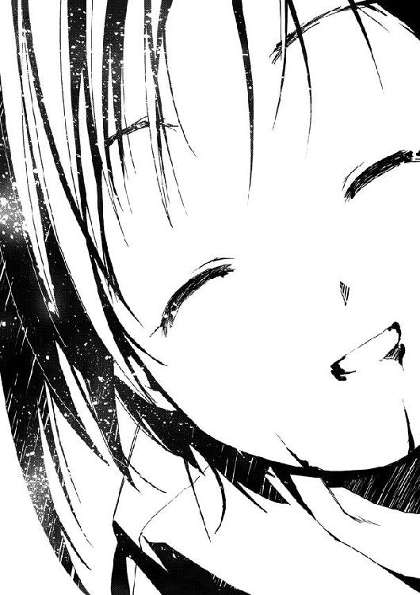

| ムシウタ 07.夢遊ぶ魔王 | |
| 岩井恭平 | |
| KADOKAWA / 角川書店 (2012) | |

ムシウタ
07.夢遊ぶ魔王
岩井恭平
角川スニーカー文庫
本作品の全部または一部を無断で複製、転載、配信、送信したり、ホームページ上に転載することを禁止します。また、本作品の内容を無断で改変、改ざん等を行うことも禁止します。
本作品購入時にご承諾いただいた規約により、有償・無償にかかわらず本作品を第三者に譲渡することはできません。
本作品を示すサムネイルなどのイメージ画像は、再ダウンロード時に予告なく変更される場合があります。
本作品は縦書きでレイアウトされています。
また、ご覧になるリーディングシステムにより、表示の差が認められることがあります。
ムシウタ
０７．夢遊ぶ魔王
ＣＯＮＴＥＮＴＳ
口絵・本文イラスト／るろお
プロローグ 0.00 The others
約四百万画素の液晶による映像が、夕暮れの土手を撮し出していた。
画面には記憶メディアの残量と現在時刻、撮影モードが表示されている。現在の画素数は、撮影時間の長さを優先して少なめである。
メモリの残量が少ないことを示すランプが点灯した。
一瞬の電源オフ。
素早いメモリカードの再装着。
再び電源を入れ、再起動。
メモリカードの入れ替えに要した時間は、約十三秒。自己記録更新である。
「水の綺麗な川。春の息吹を感じさせる、力強い桜の樹──」
映像にナレーションが加わった。
そばを流れる川、土手沿いに咲き誇る桜と、画面が切り替わっていく。
「空を染める橙色のベール」
映像が空を向いた。照度が自動的に調整され、山の向こうに沈みつつある夕日を撮す。
「戦争や飢えから数十年間も無縁だったこの国を象徴するかのような、のどかな風景......」
ナレーションの声は、幼さの残る少女のものだ。
「平和。人々は当然のようにその言葉を口にする。だが果たして、本当にそんなものがこの国にあるのだろうか?!」
少女のナレーションは、徐々にその語調を強めていく。
「答えは、ノーである。私は一介のジャーナリストとして声を大にして──こんにちは。可愛いワンちゃんですね」
土手を散歩していた女性が、画面に撮った。照れた様子の女性の足元、小さなヨークシャーテリアの顔のアップが撮し出される。
突然の無許可撮影に、ヨークシャーテリアは気分を害したようだ。唸り声を上げ、画面に向かって歯を剝き出しにする。威嚇された画面が、ビクリと震えた。
「こ、こんな小さな愛玩動物さえ、この国に迫る危機を察知しているのである。我々は彼らの忠告に耳を傾けるべきではなかろうか」
苦笑して立ち去る女性を見送り、再び映像が土手の風景へと戻った。
「......べつに私は、平和が嫌いなわけではないのだ」
少女の声が、和らいだ。感慨深げな声が橙色の夕日に混じり、土手を流れる。
「気づかないフリをしていれば、かりそめの平和の中で暮らしていられるのである」
画面がクルリと向きを変えた。駅前の小さな商店街を中心に、住宅街と単線の線路があるだけの田舎町を撮す。
さらに町から離れた郊外に、夕日を突き刺す尖塔があった。
電波塔だ。
四本の支柱が四角錐の形に組まれ、頂上までに三段の足場を組んだだけのシンプルな構造をした建造物。足場を囲むように、大小様々なアンテナが設置されている。
時代から取り残されることを怖れた田舎町の象徴。
地元の放送局と自治会が協力し、衛星中継による放送を送受信するために造られた建造物だ。場違いに高性能な電波塔は、しかし利益と維持費の折り合いがつかずに閉鎖されてしまった。今では隣の町からケーブルを引き、有線による情報を送り届けてもらっている。
「この国には、ある秘密組織が存在している。その組織は国民を平和という偽りの揺りかごに閉じこめ、世界そのものを揺るがしかねない真実を隠し続けているのだ。──彼らが隠そうとしている真実とは、何か？」
風が吹いた。
電波塔のさらに向こう、自然公園がある辺りから、砂塵が舞い上がった。
「〝虫〟──」
砂塵は徐々に規模を増していく。
吹きつける風の勢いも強くなりつつあった。
「そして〝虫〟に取り憑かれた人々、虫憑きという存在である」
〝虫〟。
思春期の少年少女に取り憑き、宿主の夢や希望を喰らって成長する超常の生命体──。
〝虫〟の存在が人々の間で囁かれ始めたのは、およそ十数年前とされている。外見的に昆虫と酷似しているために、〝虫〟と呼ばれるようになったそれらの目撃証言は数多い。
しかし政府は現在に至るまで、〝虫など存在しない〟という姿勢で一貫していた。
一方で〝虫〟、そして〝虫〟に取り憑かれた虫憑きと呼ばれる者たちの噂は消えなかった。
理解不能な〝虫〟に取り憑かれ、超常の力を操る虫憑きの存在は、現在では人々の間で恐怖と差別の対象とされている。
「〝虫〟の存在を隠そうとする秘密組織は強大である。天才ジャーナリストの私ですら、一度は立ち向かうことを諦めて偽りの平和に身を委ねようとしたくらいだ。彼らが隠した〝虫〟という真実を見て見ぬフリをしていれば、この町で静かに暮らしていける......」
淡々とした口調で、ナレーションは続く。
「──だが私は、〝虫〟を隠す秘密組織よりも遥かに恐ろしい存在に気づいてしまった。真のジャーナリストとしての宿命だろうか、その存在に立ち向かうことができるのは私をおいて他にいないことを直感したのだ。私は再び立ち上がり、陰謀を阻まなければならない」
画面の中で、自然公園から立ち上っていた砂塵が弾けた。
木々をしならせ、池の水を舞い上がらせ、突風が天に向かって突き抜ける。
「町に降臨しつつある、その存在とは──」
水飛沫や砂塵が夕日を反射したそれは、空に向かって振り上げられた巨大な剣のようだった。橙色の閃光が一瞬にして弾け飛び、強風が田舎町に吹き抜ける。
「〝魔王〟」
風が吹き荒んだのは、ほんの数秒だった。
田舎町の風景が、のどかな元のそれに戻る。
「私は〝記録者〟として、魔王との戦いと、本当の真実を記録することをここに誓う」
何事もなかったように、画面が土手を向いた。
振り返った勢いで一瞬、自分の鞄が画面をよぎった。鞄に貼られたワッペンには、町にある唯一の公立高校の名前と持ち主の氏名が書かれている。
〝真のジャーナリスト 南風森愛恋〟──。
余計な肩書きがついた〝記録者〟の名は、過去にも未来にも多くの人の記憶に残らない。
未来のことなど分かるはずもないが、そんな予感があった。
たとえ誰しもに嫌われても──。
ただのバカと罵られても──。
愛恋はそれで良かったのだ。
「ラーメン食べてこ」
呟く少女の撮る映像には、どこまでも平和な風景が拡がっていた。
0.01 The others
薄暗い林道を、一人の少女が必死に走っていた。
「はあっ......！ はあっ......！」
無地のシャツにジーンズという地味な服装に加え、黒縁の眼鏡をかけた目元は前髪で隠れている。長身を躍動させて走るたびに、両手で握りしめた革製のトランクケースが揺れていた。
「もう、イヤ！ どうして、こんな──」
小さなホクロを浮かべた口元が、苦しげに歪んだ。疲労よりも恐怖のせいで、奥歯がガチガチと鳴る。危うく転びそうになるが、それでも手に持つ古風なトランクは放さない。トランクに固定したラックが、ガチャガチャとやかましい音を立てる。
震える右腕をポケットに突っ込み、携帯電話を取り出す。
「ロキちゃん......！ あ、あの化け物、まだ追いかけてきてる？」
喘ぐような声で、携帯電話に向かって問いかける。だが少女は通話ボタンを押すどころか、折りたたみ式のそれを開いてもいない。
少女の問いかけに答えたのは、ストラップの先についた白い塊だった。
プラスティックとも金属とも分からない、艶やかな表面をした球体。ビー玉のような複眼と小さな二本の鎌を折り畳んだ、昆虫をデフォルメしたぬいぐるみだ。
小さなぬいぐるみが、カタカタと揺れた。
ゆっくりと持ち上がり、少女の背後を示すように携帯電話を引っ張る。
「ひっ......！」
少女の顔が絶望に歪んだ。背後から迫る、禍々しい気配を感じ取ったのだ。慌てて携帯電話をポケットに戻す。
走りながら、大きく息を吸い込む。四月の澄んだ空気が、鼻腔を抜けた。
夕日に染まった空を見上げ、叫ぶ。
「〝虫〟なんて、大っキライっ！」
背後に巨大な影が舞い降りた。隕石でも落ちてきたかのような衝撃が周囲を揺るがす。
空から振ってきたのは、巨軀の怪物だった。
ずんぐりとした身体はいくつかの節に分かれ、鋭い爪を生やした脚は十本以上ある。背中には紋模様の二対の翅を拡げていた。強引な見方をすれば蝶々と節足動物を一つに合体させたような形にも見えるが、大きさは一般的な昆虫と比較にならない。
少女の身長の三倍はあろうかという醜悪な怪物の背に、人影があった。獣のように顔を歪ませた少年だ。彼の精神状態が正常ではないことが、顔つきを見ただけで分かる。
見かけよりもずっと機敏な動きで、怪物が少女を追走する。細い林道におさまらず、硬そうな外殻が周囲の木々をなぎ倒していく。
怪物が咆哮した。銛のような脚を、少女めがけて射出する。
「ひあっ！」
眼鏡を片手で押さえ、精一杯に跳躍した。
一瞬の差で、少女の足元にドリルのような脚が突き刺さった。地面を割り、轟音を轟かせて林道を突き抜けていく。
「もうイヤ──〝虫〟なんて、キライ──失敗した──あんなにすぐに暴走するなんて今まで一度も──化け物......！」
ガチガチと奥歯を鳴らしながら、ブツブツと呟く。走って逃げるのに必死で、自分でも何を言っているのか分からない。
「早く、〝霊域〟に......！」
林道を駆け抜けると、急に視界が開けた。
自然公園の中心に位置する、小さなため池のほとりに出たのだ。
「えっと、ここの霊域は確か風を使う能力の......たしか発動条件は、池を刺激すれば──」
怪物が脚を射出したのと、少女が拾った小石を池に向かって投げたのは同時だった。
石が池に落ち、波紋が拡がる。
「っっ！」
周囲を覆っていた落ち葉が、いっせいに舞い上がった。
足元から轟風が吹き荒れ、少女の身体が宙に放り出された。一瞬の差で射出された怪物の脚が、直前まで少女がいた位置を通り抜ける。
竜巻によって空へ投げ出されたのは、少女だけではなかった。巨大な怪物もまた、背中に乗せた少年もろとも軽々と地上から舞い上がらせる。
「この、化け物めえぇえっ！」
眼前に吹き飛んできた怪物に、トランクケースを力一杯、叩きつける。
所詮は人間の力だ。怪物相手に、ダメージを与えられるわけがない。ほんの少し、風に巻き込まれた怪物の進路を変えただけだ。
たったそれだけで、怪物は少女とはまったく違う末路を送った。
少女は竜巻からはじき出される形で、背の高い樹に叩きつけられる。地面へ落下した衝撃で全身を強打するが、骨を折るほどではない。
「はあっ......！ はあっ......！」
葉っぱまみれの顔を上げ、眼鏡のズレを直す。
周囲を襲った突然の怪現象を、少女は知り尽くしていた。どのようにして起こり、どのような経路で風が吹き抜けるのか。
だから少女は、怪物を自分とは別の風の進路方向へと送り込んだのだ。
最悪の結果が待つほうへと。
「っ！」
怪物は竜巻から逃れられず、風が吹き荒れる中心へと呑み込まれていった。
閃光が空へと突き抜けた。
凝縮した風の槍が、怪物の躰を貫いたのだ。断末魔の咆哮が周囲に響き渡る。
少し遅れて、怪物の主だった少年が地面に落下した。気絶しているのだろう、地面に倒れたまま動かない。
閃光が消えるとほどなくして、風が止んだ。
後に残されたのは、文字通りの虫の息で悶絶する怪物だった。
「はあー......今回こそ、殺されるかと思った......」
少女が樹に寄りかかり、トランクケースをぎゅっと抱きしめる。前髪で隠れた眼鏡を持ち上げ、橙色に染まった空を見上げる。
「やっぱりあたしなんかじゃ、無理なのかなあ」
窮地を脱すると、たちまち自身のコンプレックスが頭を埋め尽くした。
同世代の女の子よりもちょっぴり背が高いだけで、他に特徴など一つもない。近眼のせいで眼鏡を手放せないし、性格が明るいわけでもない。長い髪を綺麗にするトリートメントの仕方など知らないし、服装も地味で目立つ要素など何一つない。
「こんな調子で、本当に〝魔王〟に勝てるのかな......」
佐藤陽子。
名前ですら、どこにでもある平凡なものでしかない。
そんな自分では、荷が重いのかもしれない。
「〝勇者〟も、ラクじゃないや」
陽子のため息が、光り輝く風の残滓を吹き飛ばした。
1.00 有夏月 Part. 1
思春期の少年少女に寄生し、宿主の夢を喰らって成長する〝虫〟。
当初は少なかった〝虫〟の目撃情報は、時を経るごとに増していく。
それはつまり〝虫〟、ひいては〝虫〟に取り憑かれた虫憑きが爆発的に増加していることを意味していた。虫憑きはことあるごとに一般人を巻き込むトラブルを起こし、ますます人々の間で恐怖されるようになっていく。
数が増えた虫憑きを抑制するために、発生初期の頃は自衛隊を投入していたと聞いている。
だが多岐に及ぶ虫憑きの能力に対し、一般的な兵器では対応が困難だったらしい。また自衛隊の動きに一般人は敏感なため、〝虫〟そのものを隠蔽するという目的には適さなかった。
結果、ある方法が考案され、採用されることになる。
毒をもって、毒を制す──。
捕獲した虫憑きを訓練し、世間に隠れる虫憑きを秘密裏に捕獲するのだ。
虫憑きを捕獲、訓練し、ある時は隔離、研究するための政府機関が創立された。表向きには決して動きを悟らせず、水面下で〝虫〟に関するすべての事柄を管理する組織である。
特別環境保全事務局。
俗称として特環と呼ばれる組織は全国に展開し、多数の虫憑きを局員として管理下におくことに成功した。特別環境保全事務局の働きにより、現在では一般市民における〝虫〟の認識度は、現実と虚実の間で微妙なバランスを保っている。
なぜそのような組織を創ってまで、〝虫〟の存在を隠そうとするのか？
その理由は、特別環境保全事務局に所属する者にさえ明らかにされていない。
「──〝虫憑きが消える町〟、ですか」
特別環境保全事務局、東中央支部。
拠点としている建物内に設置された会議室は、かすかな甘い香りが漂っていた。壁際の花瓶に活けた花のせいだろう。
「Ｂ級ホラー映画のタイトルみたいですね」
会議室の広さは、以前に通っていた高校の教室と同じくらいだ。口の字に置かれたテーブルと、何の素材でできているともわからない椅子が置かれている。
室内は殺風景で、備品といえば飾り気のない書類棚と、部屋の奥に置かれたスライド、小さなプロジェクターくらいだ。だからこそ真っ先に、棚に置かれた花瓶に目がいったのだ。
花瓶の向こう、綺麗に磨かれた壁には、自分の顔が反射して映っていた。
「......で、それと僕に何の関係が？」
亡霊みたいだ、と自分の顔を見て思った。
この数ヶ月で身長も伸び、訓練のせいか体つきも引き締まった。長めの髪は邪魔にならないように左右に分けているが、それでもたまに目にかかるため苛々させる。いつまでも着慣れることのない漆黒のロングコートが、余計に自分の表情を暗く見せていた。
かつての友人たちが今の彼を見たら、緒方有夏月だと分かるだろうか？
いつも笑いあっていた記憶しかない友人は、もういない。──その現実がますます、有夏月から笑みを忘れさせていく。
「ええとですね、実は北中央支部が──あ！ そのお花ですか？ ここの修復を手伝ってくれてる西中央支部の方が持ってきてくれたんです。いつ見ても製造系の能力はすごいですよねぇ、ハルキヨにめちゃくちゃにされた設備もホラ、こぉんなにきれいに作り直してくれて。しかもインテリアまでこだわる職人気質といい──いやぁ、〝ねね〟さんに全部元通り修復してもらってもよかったんですが、やっぱり専門の方に頼むのが一番というか」
入り口のそばに立つ有夏月とは反対側、奥の椅子に座った女性が嬉しそうに語り出した。
ビジネススーツを着ているものの、ボタンを一つかけ間違えていた。二十代前半の社会人に見えないのは、頭に寝癖がついている上に化粧気のカケラもないからだ。
有夏月の上司、五郎丸柊子である。階級は支部長代理、すなわち現在の東中央支部において最も権力を持つ人間というのだから面白い冗談だ。正式な支部長であった土師圭吾が重傷により突然にリタイアしたとはいえ、有り得ない人事だと思う。
「ご本人曰く〝無機物は芸術！ 植物は哲学！ 人間は死ね！〟だそうです。もぉ惚れ惚れしちゃうような男らしさで──ああ、実際は女の子なんですけど」
「そのへんにしておきなさい、支部長代理。彼が苛立ってる」
柊子のお喋りを制止したのは、隅の椅子でタバコをふかしていた中年男だった。高級そうなスーツを着ているものの、白髪交じりの髪をいじくる顔は冴えない。階級では柊子の部下にあたるはずだが、彼女に対して敬語を使うつもりはないらしい。
無能な支部長代理と、飄々とした支部長補佐。この二人が同席している場に呼び出されるのは、はじめてのことだ。有夏月を苛つかせるために呼んだわけではないことを願う。
冷静な声が、有夏月のすぐそばから上がった。
「話を元に戻していただけますか、支部長代理」
自分の左手に伝わる温もりを、はっきりと感じる。
有夏月と同じロングコートを身に纏った少女、土師千莉が真剣な表情をしていた。長い髪が照明に反射し、青く輝いている。やや下がり気味の目尻は、柊子に呼びかけながらも虚空を見つめていた。
千莉は先天的な視覚障害によって、視力を完全に失っている。有夏月の親友の一人だった彼女は、今年になって東中央支部へ身を寄せることになった。千莉は虫憑きであると同時に、元支部長の土師圭吾の実の妹でもある。
「千莉、もう行こう。きっと大した用事じゃないんだよ」
どんな用件か知らないが、好きこのんで上司の漫才の相手をするつもりなどない。
有夏月が東中央支部にやって来たのは、千莉を守るためだ。虫憑きなのに虫憑きを捕獲するなどという特別環境保全事務局に馴染むつもりも、馴れあうつもりもまったくない。
生き残ったほうが、千莉を守り続ける──。
それが亡き親友たちとの暗黙の約束だったのだ。
そして、もう一つ。
有夏月が東中央支部に在籍している別の目的は、いまだに果たせていない。
「千莉？」
千莉はその場を動こうとしなかった。彼の顔を見上げ、首を横に振る。彼は眉をひそめた。
「あっと、すみません。そぉでしたね、そんな話をしたいんじゃないんです」
柊子が思い出したように咳払いをした。
「有夏月さん。貴方は東中央支部の現状を把握していますか？」
「さあ、べつに興味ありませんから」
即答する。特別環境保全事務局がどうなろうと、その一部である東中央支部がどうなろうと、有夏月の知ったことではない。命令があれば動くだけだ。
「先日、千晴さんと初季さんが姿を消しました」
有夏月は特に反応しない。どちらも彼にとって関係のない人間だ。
「外部の人間と連絡を取りあっていた痕跡が残っていることから、千晴さんは事前に何者かと合流するつもりだったようですね。初季さんはおそらく、自発的に千晴さんについていったと思われます」
「興味ないって言いましたよね」
おざなりに答えながらも、疑問をおぼえた。柊子が言った二人は重要人物だ。それが監視の目を盗んで、あっさりと姿を消したというのである。
何らかの意図があって、わざと逃がした......？
そう考えるのが妥当なのかもしれないが、どうでもいいことに変わりはない。
「一応、〝兜〟さんを捜索任務に就けましたが、数日かけても発見できなかった場合は諦めて撤収するように言ってあります。初季さんがいる以上、もう我々の管轄から抜け出していると考えたほうが良いでしょう。──あ、これって私たち管理者側の落ち度ってことになるんでしょうか？ また減俸？」
「知らんよ、私は昨日まで出張だったんだ。責任をとるなら一人でどうぞ、支部長代理どの」
「うぅ、こんなときだけ都合良く上司扱いして......ああ、それと情報班もちょっと面倒なことになってるんですよ。〝まいまい〟さんが勝手に色々動いちゃってるんですよねぇ。ほら彼女、ワンコさん──〝あさぎ〟さんをすっごく慕ってましたから。さっき言った西中央支部の人も同じくワンコさんの教え子だったみたいで......色々とマズイことが分かっちゃったんです」
「マズイことって、なんですか？ 教官のことで？」
身を乗り出したのは、千莉だった。
中央本部所属異種三号局員〝あさぎ〟こと、獅子堂戌子。カッパ姿にホッケースティックという一風変わった外見の少女が、ふらりと東中央支部にやって来たのはまだ冬だった頃だ。
戦闘員の育成という特殊な任務を持つ戌子は、実戦経験のない千莉に訓練を施していった。そして現れた時と同様に、ぶらりと姿を消したのである。
姿を消す前、戌子が千莉の付き添いでそばにいた有夏月を見て嘲笑したのを思い出す。
──キミは実にへなちょこりんな顔をしているなー。見ていて、憂鬱になるよー。
口の中で棒付きのアメを転がしながら、自分より上の階級である彼を笑い飛ばしたのだ。
──支部長代理にキミの面倒も見るように頼まれてるんだけど、まっぴらゴメンだー。ボクが教えるのは〝戦士〟だけで、復讐者なんかじゃない。顔を洗って出直したまえー。
こっちから願い下げだ、と思った。眼前のカッパ女がかつて〝あいつ〟の背中を守っていたことを聞いていたからだ。そんな人間に教わることなど何もない。
反発する有夏月をよそに、千莉は見違えるように強くなっていった。枷が外れたかのように次々と新たな能力に目覚めていったのだ。性格が歪んでいるとはいえ、カッパ女の教官としての手腕は本物のようだった。
「マズイというか、ヤバイというか......ワンコさんの生命線ともいうべきアメを作っているのが、西中央支部だったわけですけど。そのアメの供給にストップがかかっていたらしいんです。その命令を下していたのがどうも、副本部長だったらしく──」
有夏月とつないだ千莉の手に、力が込められた。
「副本部長が──」
室内に、赤い明かりが灯った。
見えない両目を見開いた千莉の周囲に、真っ赤な灯が飛び散った。テーブルや椅子、花瓶に活けられた花などいたる場所に、赤い火虫が灯る。
「中央本部のせいで、教官は亡くなったんですか......！」
強くなったとはいえ、自分の能力を自覚して間もない千莉だ。完全に〝虫〟をコントロールするには至っていない。
「お、落ち着いてください、千莉さん！ 熱っ、熱ぅっ！ ああ、私のスーツまで......！」
「直接の死因は、戦闘による致命傷だ。報告書通りならば〝浸父〟と戦った結果なのだろう。ただし、そこに至る過程が......な」
器用に火虫を避けながら、石巻支部長補佐が冷静に言う。
獅子堂戌子が〝浸父〟発見の報告を残し、殉職したことは聞いていた。〝浸父〟とは虫憑きを生むとされる原虫指定の三匹のうちの一つである。
「千莉、落ち着いて」
有夏月が囁きかけると、千莉がハッとした。周囲の赤い火虫が消えていく。
「と、とにかく、そんなわけで〝まいまい〟さんが怒ってしまいまして......今はなんとか抑えてもらってますけど、他の教え子さんたちにも伝わるのは時間の問題なわけで。いやぁ、我々はワンコさんなんて呼んで親しんじゃってますけど、実はけっこう偉大な人でして。死んじゃうと、色んな方面でかなり影響出ちゃうんですよね、たはは」
「気楽なものですね、あなたたちは」
愛想笑いを浮かべる柊子に対し、有夏月は冷笑を向ける。
「虫憑きが一人──いや、何人死のうと、自分たちは安全な場所でそうして笑っていられるんですから」
「上司に対する言葉とは思えんなぁ、〝月姫〟くん。降格モノだぞ」
タバコをふかしながら、石巻が他人事のように言う。その態度がさらに有夏月を苛立たせる。
「そんな名前で呼ばないでくれますか。僕は緒方有夏月だ」
「ホント、ヤですよねぇ、大人って。面倒くさいんですよ、色んな事情ばっかりがあって自分より若い子供たちが死んでも、泣いちゃいけないみたいで。たはは」
柊子が寝グセだらけの頭をかきながら、情けない笑みを浮かべる。
「部下の前だからっていう理由だけで、泣かないためにワンコさんのこと思い出すこともできないんです。色々とお話ししたんですよ、彼女、お酒もイケる方で。あ、これ法律違反ですね。おっと、思い出しちゃいけないんだった。たはは」
途端に柊子の耳が赤くなった。眼鏡を直すフリをして、前髪で顔を隠す。
「土師センパイは、すごいなぁ。私なんか覚悟したはずなのに、一人いなくなっただけでもう逃げ出したくなっちゃう......」
「いない人間のことを懐かしんでも、なにも進まんよ。東中央支部を引っ張るのは君なんだ。言ってるそばから、部下の前で弱音を吐くんじゃない。うちの支部の戦力がいなくなったわけじゃないんだぞ」
石巻の叱咤を受け、柊子が「は、はい」と背筋を伸ばす。
涙を堪えている柊子を見ても、有夏月は何も感じなかった。
どうでもいい。
自分の周りで何が起きようと、関係ない。何が変わろうと興味はない。
「また話を中断しちゃいましたね、ごめんなさい。えぇと、そんなわけで有夏月さん」
柊子が顔を上げ、気を取り直すように愛想笑いを浮かべた。
「貴方には、北中央支部に行ってもらいます」
「......！」
有夏月の表情が凍りついた。柊子が何を言っているのか、すぐには理解できない。
「なんでも北中央支部の管轄内で、奇妙な現象が起きているそうなんです。あ、北中央支部のことは知ってますよね？ 規律のしっかりしたところで実力者も多く、任務成功率も高いんですよ。すごいですよねぇ、あんなに広い管轄を持ってるのに」
「あそこは中央本部の犬だよ。反抗的な東や閉鎖的な南と違い、甘い汁を吸ってるんだろう。何かを作っていれば幸せな西も実質、北中央支部の管轄のようなものだしな」
「そんな身も蓋もない......と、とにかく、北中央支部から増援の要請が来てるんです。運悪く北中央の上位局員の手が塞がっているそうで、号指定されている局員をよこして欲しいとのことです。火種二号の有夏月さんなら、相手の要求に応えて余りある人選でしょう」
「その任務が、さっき言っていた〝虫憑きが消える町〟なんですか？」
有夏月は驚いて千莉を見た。突然の命令に対し、彼女が驚いている様子はない。
「その通りです。えぇとですね、正確には虫憑きが消えるというより、最初から虫憑きがいない、もしくは何らかの原因によって──」
「ち、ちょっと待ってください！」
ようやく有夏月は声を絞り出した。
「どうして僕らが、北中央支部の手伝いになんか行かされるんです？ しかも、よりによってこんな時期に──」
「僕ら？ たはは、有夏月さんともあろう方が聞き間違いなんて、珍しいですね。有夏月さんに行ってもらうって言ったじゃないですか。行くのは有夏月さん一人ですよ」
柊子に笑われ、絶句する。
「じ、冗談じゃない！ 千莉を誰かにまかせて、僕一人で北中央に行けっていうんですか？ そんな命令、聞けるはずがないじゃないですか！」
「はぁ、ダメですか」
「千莉を守るために、東中央支部に来い──そう言って貴女は僕を誘ったんだ！ 忘れたとは言わせませんよ！ その貴女が今度は北中央支部へ行けって言うんですか？ ふざけるな！」
「有夏月くん」
激昂する有夏月の手を、千莉が引いた。
「私が支部長代理にお願いしたの。有夏月くんを、ここ以外の任務に出してくださいって」
「なっ──」
もう、ワケが分からなかった。混乱したまま千莉の肩を摑む。
「僕が緒里くんや純の代わりに、ここにいるって知ってるだろ？ 僕は千莉から離れるわけにはいかないんだ。それなのに、どうして──」
「冷静になってください、有夏月さん」
僕は冷静だ！
叫びそうになって、口をつぐむ。
ずっと愛想笑いを浮かべていた柊子が、哀しげな顔で彼を見つめていた。
ハッとして千莉を見ると、親友の少女もまた寂しげに下唇を嚙みしめていた。石巻にいたっては、呆れた様子で次のタバコへ火を点けている。
有夏月はどうして彼らが、そんな目で自分を見るのか分からない。タチの悪い悪戯にひっかかっている気分だ。
「先ほどの私の話を聞いても、分からないんですか？ まったく、感じないのですか？」
静かな口調で、柊子が言った。
「千晴さんたちが脱走したことや、〝まいまい〟たちのことですか？ 支部長代理たちの管理不行き届きだってこと以外に、いったい何を感じろって──」
「次の戦いが、やって来ます」
「......！」
「千晴さんを動かしているのは、おそらく中央本部や〝むしばね〟とは違った、新しい勢力なのでしょう。まったく存在を感じさせないのは、ごく少数による組織なのか、それとも時期が来るのをじっと待つつもりなのか......それは、分かりません」
黙り込んだ有夏月に向かって、柊子が拳を突き出した。人差し指、中指と順に立てていく。
「〝むしばね〟の動きも、この数週間で確実に変化しています。これまでの特環に対する憎悪が消え去ったかのように、在野の虫憑きを保護する活動へと戻っています。特環が彼らを発見し、攻撃しても、まったく反撃をしないのです。仲間に犠牲が出たとしてもです。これらが示す事実は一つ──新しいリーダーが誕生したのでしょう」
柊子の指が、次々と立てられていく。
「ワンコさんの教え子さんたちも、これから動き出します。彼らに教えられたことは、たった一つ。〝戦え〟──その意志を引き継ぐ者たちが、いよいよ戦いの舞台へ上がるんです。先ほど閉鎖的と言った南中央支部も、実はようやく重い腰を上げようとしているようです。さらにハルキヨたちの動きも、徐々に露出してきている」
五本の指を広げきった手が、再びグッと握りしめられる。
「中央本部はますます力をつけ、何かを引き起こそうとしています。そんな中央本部の横っ面を他の支部や〝むしばね〟、千晴さんを動かす何者か、そしてハルキヨがぶん殴ろうとしているんです。果たして中央本部に一撃を喰らわせるのは、どこでしょうか？」
「......」
「どこでもいい。そんなことは、ただのきっかけでしかないのですから」
柊子が握りしめた拳を、胸元へ引き寄せた。今にも振り下ろしそうになる拳を、精一杯の理性で押し止めているかのようだ。
「でもその戦いを終わらせるのは、私たち東中央本部です。この役目だけは、他のどこにも譲ってなんかやらない......！」
有夏月のとなりで、千莉がはっきりと頷いた。石巻はというと、複雑そうな顔で肩をすくめただけだ。
「......〝かっこう〟は、どうなんですか」
ぽつり、と有夏月の口から言葉が漏れた。柊子を睨みつけ、言い放つ。
「どこの誰がどんな動きをしていようと関係ない。彼は今どこで、何をしているんですか？ 〝大喰い〟との戦いで負った傷は、もう治っていてもおかしくないはずだ。それなのに僕には居場所はおろか、一切の情報が伝わってこない！」
我知らず、大声を張り上げる。くすぶっていた苛立ちの、本当の理由をぶちまける。
〝大喰い〟──虫憑きを生む〝始まりの三匹〟の一つとの戦いで、〝かっこう〟という少年は重傷を負った。その戦いで彼の口から飛び出した重大な秘密は、いずれ特別環境保全事務局全体へと広まるだろう。
有夏月が東中央支部にいる、千莉とは異なるもう一つの理由。
それが〝かっこう〟の存在だった。
その虫憑きは、有夏月にとって千莉と同じくらい大切な人の命を奪った。──彼は仇を討つために今も生き延び、特別環境保全事務局の隷属となってでも戦い続けているのだ。
「これだけ話しても、やはり貴方には彼の姿しか見えていないんですね......」
柊子が拳を下ろし、表情を曇らせた。有夏月は奥歯を嚙みしめる。
「だって、おかしいじゃないか！ 次の戦いが始まろうとしてるなら、〝かっこう〟だって戦おうとしてるんでしょう？ あの悪魔が戦わないわけがない！ 今度は誰を殺そうとしてるんですか？ 〝かっこう〟はどこにいるんだ！」
「有夏月くん......！」
千莉が涙ぐんだ瞳で、彼の腕にしがみついた。
「お願い......もうやめて......」
「千莉！ 千莉は、騙されてるだけなんだよ！ いい加減に目を覚ましてよ！」
「目を覚ますのは貴方のほうです、有夏月さん」
厳しい口調で言ったのは、柊子だった。
「まだ分からないんですか？ 誰もが次の戦いに向かいつつある今、貴方だけが過去に縛られたまま変われずにいるんです」
「次の戦いなんて、僕には関係ない！ 僕は──」
「紫央市で〝大喰い〟と戦ってからですね。有夏月さんが以前にも増して、〝かっこう〟さんに対する復讐心を燃やしているのは」
ぎくり、と心臓が跳ねた。否定しようとするが、喉がつかえたように言葉が出ない。
「貴方は、〝かっこう〟さんが戦いを終わらせようとしてきた事実を知ってしまった。その姿を見て、〝むしばね〟の前のリーダーであるレイディー・バード──立花利菜さんを殺したのは、〝かっこう〟さんではないのかもしれないと思ってしまったのでしょう」
「......！」
「〝大喰い〟は自らが生んだ分離型の虫憑きの能力を、すべて使うことができる──このことを最大の理解者である土師センパイにすら打ち明けず、一人で胸に秘め続けてきたのはなぜだと思いますか？ 私はもちろん、その理由をたずねました。〝大喰い〟を倒すだけならば最強の虫憑きだったレイディーをはじめ、虫憑きどうしを戦わせて自滅させるのが最良の手段だと思わなかったのですか、と」
柊子が笑みを浮かべた。いつもの愛想笑いではなく、手のかかる子供に困ったような、複雑な笑顔だ。
「〝俺がどの虫憑きよりも強くなればいいだけだろ〟──彼の回答は、その一言だけでした」
有夏月は息を呑んだ。
〝大喰い〟と戦うということは、分離型の虫憑きをすべて相手にすることと同じだ。そのことを知っていて、なおかつ一人で打ち勝とうとしていたというのだろうか？
馬鹿げている。
だが〝かっこう〟自身は、本気なのだろう。だからこそ誰よりも強く、これまでの戦いを生き抜いてきたのだ。
他の虫憑きたちとは、見ているものがまるで違う──そう思った。
「たはは......敵を間違えないのは、〝かっこう〟さんらしいといえばらしいです。でも独りで戦おうとしていたことだけは、少し本気で叱っちゃいました。どうも彼は簡単には誰にも本心を見せないし、少しでも仲良くなっちゃうとかえって隠し事をしてしまうタイプのようです。同化型の虫憑きってみんな、そうなんでしょうかね？」
眼鏡を直しながら、頼りない上司が元の愛想笑いを浮かべる。
「〝かっこう〟さんは好んで悪魔と呼ばれるようになったわけじゃない。ある少女との約束を守るために、必死に戦い続けていただけなんです。──ただその過程で多くのものを背負いすぎた。秘密を明かせばあるいはレイディー・バードですら、虫憑き全体の敵として誘導することもできたんです。でも彼は、そうはしなかった......」
柊子の言葉に、有夏月は反論できない。
「それだけに、レイディーの死は辛かったでしょう。最後の最後、その瞬間まで迷っていたのでしょう。そんな自分の迷いが、レイディーの〝虫〟を成虫化させるに至ってしまった。そう思いこんでいるからこそ、彼は自分がレイディーを殺したと言っているんです。──彼の強さの根源がそこにあるとはいえ、これからはそんな思いはさせたくない......」
「〝大喰い〟との戦いの後、君はそのことを理解してしまったんだろ？ でも認めたくなくて、自分の中の復讐心を燃やしているんだ」
石巻が人をくったような表情で、口先でタバコを動かす。
「誰かのせいにしなければ、レイディーの死を受け入れられないか？ 君がかつて所属していた〝むしばね〟ですら、レイディーの死を乗り越え、新しい動きを見せているってのになぁ。そんな中途半端な戦力なぞ、東中央支部には要らんよ」
柊子、石巻、そして千莉の視線が有夏月を見つめる。
「命令です。緒方有夏月さん──東中央支部火種二号局員〝月姫〟。北中央支部へ出向してください。任務に関する詳しい情報は、現地で聞くように」
「どうせ他支部の任務だ、真面目に取り組むことはないぞ。田舎の空気でも吸って、せいぜい頭を冷やしてこい」
二人の上司が、有無を言わせない口調で言い放った。
「......」
千莉は何かを言いたげにしていたが、結局は無言だった。静かに有夏月から手を離す。
虚空を彷徨う手を握りしめながら。
有夏月は、何も言うことができなかった。
1.01 有夏月 Part. 2
その町は首都圏に位置していた。
だが山と海に囲まれている立地条件のせいで、人口は少ない。
交通網が発達していないのだ。電車の路線も私鉄の単線のみで、高速道路が通っているわけでもない。海が近いといっても大きな海水浴場は少なく、大型船が入港できる港もない。
自動車を使えば、たとえば都会の赤牧市には二時間ほどで着くだろう。都心近くに点在する田舎、もしくは忘れ里と呼べるのかもしれない。
小さな駅の正面に、商店街があった。駅前の錆びた看板に、町内の簡略化された地図が描かれている。見ると博物館や民族歴史館、学校の位置などがおおざっぱに示されていた。
遠くに見える尖塔は、衛星通信の基地局でもある電波塔だ。資料によると、維持費の問題で放置されて久しいという。設備は現役なため、付近の町に移転するという話もあるようだ。
駅前から発車した路線バスに乗ると、車内は見事に閑散としていた。
乗客は桜架市からやって来たばかりの緒方有夏月だけだ。大きなスポーツバッグを抱えて、右側五列目の二人座りのシートに座る。
「......」
かつて千莉や圓藤緒里、砂子坂純といった親友らと住んでいた鴇沢町と似ていなくはない。鴇沢町よりもずっと田舎だが、時間の流れを遅く感じる穏やかさがそっくりだ。
そう思って、町の名前をど忘れしていることに気づく。
どうでもいいか──。
思い出そうとして、すぐに諦める。どうせ期間限定の任務で滞在するだけの町だ。桜架市に戻れば、二度と関わることもないだろう。
事務的な車内アナウンスが車内に響いた。だが乗車しようとする人間もなく、有夏月も停車ボタンを押さないため、バスは商店街を素通りしていく。
やにわに運転手の男性が「お兄さん、起きてる？」と声をかけてきた。「町から出ちまうよ？」と訊かれる。
「あ......すみません、自然公園までお願いします」
有夏月が答えると運転手は「あー、はいはい。珍しいね」と頷いた。自然公園とやらはよっぽど利用者が少ないらしい。有夏月は窓の外へと視線を戻す。
ぼんやりと街並みを眺める自分の顔が、埃が浮かんだ窓ガラスに映っていた。
東中央支部で出張任務を言い渡された時よりも、ずっと血色は良い。現地で目立たないようにと送られてきた地元高校の制服は、サイズがぴったりで違和感はない。
一週間、二週間と桜架市を離れる準備をするだけの日々で、考えられることはすべて考えた。上司に言われたこと、千莉の哀しげな顔の意味を考え抜いた。
考えるだけ、無駄だった。自分にはとうとう、彼らの真意が分からなかった。
ただ、この数週間。千莉が一度たりとも、有夏月と顔を合わせようとはしなかったのが寂しかった。そのことについて悩むのも疲れた。
もう考えるのは、よそう──。
虫憑きによるレジスタンス組織である〝むしばね〟を裏切り、千莉を守るために特別環境保全事務局に加わった。
その千莉にも必要とされなくなったら、有夏月には何も残っていない。
〝かっこう〟と戦う理由でさえ、自分の中で曖昧なものへと変化しつつある。
次なる戦いとやらに加わる理由は、最初からこれっぽちもない。
あるいは有夏月はもう──虫憑きの戦いから半ば以上、脱落しているのかもしれない。
「ふーん──」
すぐそばで、悪戯っぽい声がした。
物思いに耽っていた有夏月は、他の乗客が電話で話しているのだろう、と聞き流した。
「夢、もう叶っちゃったんだ？」
からかうような少女の声だった。意地悪な口調とは裏腹に、一度聞いたら耳から離れることのない綺麗な声。それは有夏月にとって、ひどく懐かしい人物の声で──。
「......！」
ハッとして、振り返る。
車内はあいかわらず、閑散としていた。そもそも商店街を過ぎてから、新しい乗客は一人も乗車していない。
誰もいない車内を見渡し、有夏月は嘆息した。気のせいだったようだ。──いや、あそこまではっきりと聞こえると、幻聴と言うのかもしれない。
聞こえた気がしたのは、かつて今のようにバスの中で互いの夢を語り合った少女の声だった。
──良い夢じゃん。
〝戦いたくない〟という有夏月の夢を聞き、そう笑った少女はもういない。
思えばあの時から、有夏月は戦いに身を投じるようになったのかもしれない。
なぜ、戦い始めたのだろう？
少女についていかなければ、とっくに自分の夢を叶えていたかもしれない。誰とも戦わず、ひっそりと生きていけばいいだけなのだから。
あの日、自分は何を思って、自らの夢に反する決意をしたのだったか──。
近づきつつある公園の入り口を見ながら、有夏月は軽く頭を振る。
結論を出すのは、再び桜架市へ戻ってからにしよう。東中央支部に戻ってからも千莉に必要とされないようであれば、その時こそ戦いから身を引けばいい。
幸い、この町にいる間はゆっくりして良いという許可が出ている。幻聴などが聞こえるのも、色々と考えすぎているせいだろう。
ほんの数週間、田舎で退屈な時間をすごすだけだ。
この田舎町を離れる頃には、心身の疲れも癒えているはずである。
「ありがとうございました」
運賃を支払い、運転手に礼を言ってバスを降りる。
自然公園の入り口は、看板がないと分からないほど粗末なものだった。ぱっと見ただけでは、ただの林道への入り口である。
肩からスポーツバッグを提げ、雑木林に挟まれた道を歩いていく。
「......？」
まっすぐ進んでいくうちに、有夏月は眉をひそめた。
ある地点を境に、林道が荒れていた。周囲の木々が押し倒され、アスファルトの道には亀裂が入っている。
小さな池のある広場が現れた。やはり不自然に周囲の木々が荒らされ、落ち葉が入り乱れている。台風が直撃でもしたのだろうかと思ったが、そのわりには被害箇所が限られている。
「戦闘の痕、かな......」
柵に近づき、池を覗き込んでみる。藻の浮いた水面からは、中を泳ぐ鯉の姿が見えた。
──以前も言ったが、北中央支部ってのはしたたかなところなんだ。
桜花市を離れる直前に、石巻支部長補佐が言っていた言葉を思い出す。
──あそこが高い任務成功率を誇っているのは、やり口があってな。他支部が困っている時、それも比較的に安全だと判断した上で手助けをするかわりに、自分の管轄で危険な匂いのする任務を真っ先に手伝わせるんだ。結果、被害が出ても他支部の局員だから痛くも痒くもない。むしろ無能な局員を派遣したと文句を言いつつ、自分らは被害者が調べた資料をもとに安全に任務を遂行するってわけだ。
石巻という上司は日頃から、悪びれもせずに他者の評価を口にする。愚痴っぽい中間管理職というイメージしかないが、言っていることは正確なのだ。
──損得勘定に対する執念というか、危険度に対する嗅覚は見習いたいもんだ。今回もそのクチだろうから、まともにつきあってやることはないぞ。派遣期間はかぎられているからな、適当に調査するフリだけすればいい。〝何もわかりませんでした。ごめんなさい〟で済むことだ。どうせ怒られるのは君を派遣した五郎丸くんだしな。
ちなみに話をしている時には、五郎丸柊子も同席していた。彼女は「そぉいうことです。私、怒られるのは得意なんですよ」と笑っていた。なんというか......東中央支部の一番の不安要素は、彼ら上司なのではないだろうか？
危険度が高いと北中央支部は見ているものの、深く関わる必要のない任務。
いかにも曖昧で、中途半端だ。
同じような状態の今の有夏月にとって、あてつけのような仕事だと思った。
「うぃっす、ウチ〝おりおん〟、十七歳！ よろしくなっ！」
「うわっ！」
突然に背後から突き飛ばされた。驚いて振り返ると、一人の少女が敬礼をしていた。
すらりとした体型を包む白いシャツとネクタイが、初春という季節以上に涼やかだ。短いスカートの下にはスパッツを穿き、革製のブーツとグローブを着けている。脱色しているのか、首元で外側にハネた髪は茶褐色である。ちゃんと見開いていれば可愛らしい大きな瞳は、人をくったように半開きだ。
「北中央支部所属、火種六号局員！ チャームポイントは胸から腰にかけてのラインとかグッとくるっしょ？ ちょいエロな目元が青少年を魅惑してやまない監視班のエンジェル！ 駅前の駄菓子屋で売ってる添加物満載な十円チョコが大好きだから、気が向いたら奢ってくれたりしたらお礼とかすごいことしてあげちゃうにょろん！」
自分の身体を抱きしめたり投げキッスをしてみたりと、やたらと忙しい少女だ。奇妙な喋り方が非常にうっとうしい。
「成年指定モノだにゃー！」
ウィンクをされても、初対面の有夏月としては呆然とするしかない。
何と言っていいか分からず立ちつくしていると、〝おりおん〟と名乗った少女がピョンッとジャンプした。有夏月に向かって再び敬礼する。
「うぃっす、ウチ〝おりおん〟、十七歳！ よろしくなっ！ 北中央支部所属──」
「わ、分かりました！ 分かったから、繰り返さないでください。僕は東中央支部所属の火種二号局員、緒方有夏月です。北中央支部の要請で──」
「聞こえてんなら、そう言ってにょろん」
〝おりおん〟がニヤリと笑った。スカートのポケットに手を突っ込み、次々と中から物を取り出しては投げてくる。
「ほい、いくにゃー。滞在費！ 宿泊場所の鍵！ 資料の追加データ！ 潜伏先の高校の生徒手帳！ 夜に寂しくないようにウチの水着写真！ プレミアもんだにょろん！」
「うわっ、うわわっ。な、なんか余計なモノまで──って局員が写真を残すのは規律違反じゃ......？ え、生徒手帳って、これ」
「あ、ゴメンにょろん。そのチョコはミス。返してちょ。全部もった？ ほい、そんじゃまあ、れっつごー」
マイペースにやりたいことをやり終えると、〝おりおん〟が林道へと戻っていく。
「ちょっと待ってください！ もうちょっと、この辺りを調べていきたいんです。一連の現象で唯一、欠落者が見つかった場所らしいし──」
「来て早々、お仕事熱心だにゃー。さんざん調査済みだし、探すだけ無駄にょろーん」
両手を広げクラゲのようにクニャクニャとした動きをしながら、〝おりおん〟が遠ざかっていく。彼をからかっているのか、挙動不審きわまりない。
不真面目な態度にムッとしつつ、有夏月は少女の後を追いかける。
「三時間も駅で待ちぼうけをくらったら、時間つぶしの一つもしたくなりますよ。北中央支部の局員は皆、優秀だと聞いてるんですけど。迎え一つ満足にできないとは思いませんでした」
「火種二号のエリートさんは、言うことが違うにゃー。グッときちゃうにょろん」
「......その喋り方、やめてもらえませんか？ 馬鹿にされてるみたいだ」
やっと追いついて、不機嫌を隠すこともなく言う。〝おりおん〟がニヤリと笑った。
「こんな田舎で肩肘張っても、良いことなんかないにょろん？ ゆったりまったりお気楽に過ごすのが一番だにゃー！ それにウチなんか北中央支部じゃ下っ端にょろん？ 気にするだけ損だにょろんにゃー」
「その語尾、無理してませんか......？」
「べつに実害が出てるわけじゃにゃいし、てきとーに時間潰して帰ってちょ。エリートさんだって、本当はそのつもりっしょ？」
言われ、有夏月は黙るしかなかった。こちらの本心などお見通しのようだ。
「そんなことより、田舎の雰囲気を満喫してってくれたほうが嬉しいにゃー。新鮮な空気！ 青い空！ 親切な住人たち！ どれも都会とは大違い！ 癒されるにょろん！」
グッ、と親指を立てる〝おりおん〟。任務に対する緊張感も何もない。思わず肩から力が抜けてしまったのが、彼女の思惑通りなようで少し癪だった。
「とはいえ、業務連絡くらいはしとかないとウチが怒られるにょろーん」
〝おりおん〟がまた両手をゆらゆらと動かす。これ以上ないくらい無意味な動きだ。
「見ての通り、大きな事件なんてまったくない町なのさ。でも最近、ちょっと変わった現象が起きてるんだよね。知ってるだろけど、北中央支部には〝虫〟の存在を感知する能力者がいるんだよ。そいつがたまたまこの町を巡回に来た時、〝大喰い〟の気配を察知しちゃったわけ。──とまあ、ここまではよくある話だけど」
「普通の話し方もできるんじゃないですか......」
「にょろん！ 当然、〝大喰い〟に虫憑きにされた人間がいるはずなんよ。でも局員が現地に着いた時には〝大喰い〟はもちろん、虫憑きの姿もなかった。そんで以後は、その繰り返し。〝大喰い〟の気配を察知しては現地に向かいながらも、空振りばっかり。〝大喰い〟がこんなに連続して現れてるくせに、虫憑きも一人も生まれてないみたいなんだ。欠落者らしき症状の人間が病院に担ぎ込まれた痕跡もなし。北中央支部としちゃはじめてのケースだもんで、困惑したみたいでさー」
〝虫憑きが消える町〟──。
それが有夏月に下された調査任務の対象、つまりこの町で起きている現象だった。
〝大喰い〟が現れたからには、虫憑きが生まれていなければおかしいはずなのだ。それなのに、新たに生まれた虫憑きは一人も報告されていない。
「実害があるわけじゃないし、最初は様子見だったんさー。ウチも何年か前からこの町に監視班として常駐してるけど、これといった事件も起こらなかったし。調査のしようがないってことで、いったん警戒態勢を解こうとしたところで──」
「この自然公園で、はじめての欠落者が見つかった」
有夏月が言葉を継ぐ。〝おりおん〟が息を吐いて肩を落とした。
「にょろん。これまでと同じ現象を追いかけてみたら、今度ばっかりは欠落者がいたのさー。このことが意味することはつまり──これまでも虫憑きが生まれていた可能性が高いってこと。じゃあ今まで生まれていた虫憑きはどこに消えたのか？ もし本当に虫憑きが生まれていたとしたら、そりゃもうすごい数だよ。それだけ大量の虫憑きが生まれると同時に、消えていたのかもしれないっつったらもう、面倒な事件だよね。摩訶不思議にゃー」
「別の感知能力者が潜んでいて、北中央支部よりも先に何らかの処置をしていた......とか？」
「ウチの感知能力者は感知できる範囲は広いけど、機動力がないにょろん。だからどうしても感知した場所に局員を派遣させるまでにタイムラグが生じるけど......能力者曰く『〝大喰い〟らしき気配を感じた後、虫憑きらしき反応が生まれたと同時に消える』らしいから、難しいかも。たとえば〝あさぎ〟みたいな感知能力と機動力を兼ね備えた虫憑きがいても、そこまで素早く処理できないはずにょろん」
確かにその通りだ。これまでは虫憑き発生すら疑われていたくらいである。もし生まれたての虫憑きが暴走でもすれば、戦闘だって回避できないだろう。
「......僕には不向きな任務だ」
ぽつり、と有夏月は呻いた。
自分の虫憑きとしての能力は強力とはいえ、戦場に投入されてこそ最大の実力を発揮する。いうなれば決戦型の虫憑きである。潜入任務や監視任務に役立つ能力などは皆無だ。
〝あさぎ〟こと獅子堂戌子による訓練によって、千莉が感知能力に目覚めつつある。彼女ならば非常に有利に任務を進められるだろうが、唯一の感知能力者を東中央本部から遠ざけるわけにいかないことは有夏月だって分かっている。
「実害がほとんどないのは変わらないにゃー。北中央支部だってあんまりやる気がないのに、東中央支部があるわけないにょろん！」
なぜか元気にまた親指を立てる〝おりおん〟。有夏月は嘆息した。
上司は休暇のつもりで、有夏月を派遣したのだ。彼自身も別の管轄に所属する自分が首を突っ込むのはどうかと思う。
「まいったな。本当に退屈なだけの任務になりそうだ......」
「ヒマだったらお姉さんが遊んであげるにょろん。町を案内してあげるし。おすすめは町外れの美術館だにゃー。閉鎖寸前で決まった曜日しか開館してないけど、ウチは常連にょろん」
「その喋り方をやめてくれるなら、お願いしたいんですけどね」
苦笑する有夏月に、日射しが降り注いだ。
林道から出たのだ。
道にはホーネットが駐輪されていた。ネイキッドタイプの自動二輪車である。
「無理してたのは、そっちみたいにょろん」
「はい？」
「笑うとカワイイ顔してるにゃ」
ニヤリと笑い、〝おりおん〟がハーフタイプのヘルメットを放り投げた。有夏月はキャッチしたそれをまじまじと見る。
「どこへ行くんですか？ 北中央支部？」
「支部の本拠地なんて、こっから遠すぎだにゃー。キミの潜入先の高校にょろん。今からなら午後の授業に間に合うにゃー」
「さっき生徒手帳をもらった時点で、予想はしてましたけど......いちいちこっちの高校に転校しなきゃならないんですか」
「こんな小さな町で部外者が制服着てたら、かえって不審に思われるにゃー。転校の手続きと挨拶だけしとけば、あとは登校しようがしまいがキミの勝手にょろん」
ヘルメットをかぶり、運転する〝おりおん〟の後ろに乗る。「どさくさでちょっとだけならエッチぃとこ触ってもいいにゃー」「さ、触りませんよ」というやりとりを終える前に、エンジン音を立ててバイクが発進する。
本格的に自分にできることがないと分かると、緊張感も何もなくなってしまった。
錆びたガードレールに守られた歩道は、たまに老人が歩いている程度の人影しかない。一定間隔で通る路線バスの停留所にも、人が見あたらない。遠くに見える駅や商店街の向こうには、電波塔が見えた。さらに電波塔のバックには、青々とした山がそびえている。
人気のない交差点で、信号につかまった。どの車線にも自動車は見あたらないのに、律儀に停車するのが滑稽な気さえする。
「良い町ですね」
ホーネットのエンジン音に、有夏月の呟きが混じった。本心なのか社交辞令なのか自分でも分からないくらい、なんとなく呟いただけだ。
それなのに〝おりおん〟は嬉しかったようだ。後部シートの有夏月を振り返り、笑う。
「にょろん！ 平和でお気楽な町なのさー。こう見えてもウチ、元は都会の戦闘班でバリバリ戦ってた武闘派にゃー。でも任務でこの町に来て一目惚れ！ 志願して配属されて以来、一度も戦闘なんてしたことないし。平和が一番にゃー。ほら、触ってみ。すっかり運動不足で、このあたりなんて贅肉ついてきてるにょろん。たぷたぷにゃー」
「あ、青！ 青ですよ、信号！」
空いた道路を快走すると間もなく、学校へとついた。
一見しただけでもこれといった特徴のない、ごく普通の古びた校舎だ。柵は錆び、グラウンドを囲うネットはボロボロに擦り切れている。
〝おりおん〟は「ウチは美術館に行って寝直すにょろん」と言い残し、去っていった。一応は眼前の高校に通っているようだが、真面目な生徒ではないようだ。そして彼女のような客しか来ないならば、美術館が閉鎖寸前だというのも頷ける。
仕方なく一人で校舎に入り、そばにあったスリッパに履き替えて職員室を目指す。
まだ昼休みらしく、何人もの生徒たちとすれ違った。適当に校舎内を歩いていると、目的の場所はすぐに見つかった。昼食中だった教師に転校生であることを告げると、すぐに一人の女性教師を呼んでくれた。
担任の教師らしい人物に「午後の授業始めに紹介するから、先に教室に行っていなさい」と言われる。教えられた教室に行き、同級生たちが談笑する室内へと入る。
空席は一つしかないらしく、それらしい席へ座る。肩にかけていたバッグの置き場所を探す有夏月に対し、生徒らの視線が集まっていた。
「緒方っていいます。よろしく」
笑みを作り、誰にともなく簡単に挨拶する。明日から登校するかどうか分からないが、愛想良くしておくにこしたことはない。
それにしても、ロッカーはどこを使えば良いのだろう。教室の後ろにあるロッカーはどれも使用中に見えた。
まあいいか、と諦めて前へと向き直る。
輝く一枚のレンズが、有夏月を凝視していた。
「彼の名は緒方有夏月。今日、我が校へと潜入してきた転入生である」
わざとらしいナレーション口調が教室に響いた。有夏月を好奇の視線で見ていた同級生たちの表情が、気の毒そうなそれへと一変していた。
「一見すると優しげな美少年である。だがそれは獲物を引き寄せる仮の姿に他ならない」
「......えっと......」
何と言うべきか分からず、有夏月はひきつった笑みを浮かべた。
有夏月に向かって、一台のデジタルカメラが向けられていた。液晶画面が搭載された、一目で最新式と分かる小型カメラである。
デジカメを構えているのは、机の前にちょこんと座った人物だった。短めの髪をしばった、童顔の可愛らしい少女だ。制服に身を包んだ小柄な身体に、肩紐に〝ＴＲＵＴＨ！〟とロゴの入った大きなバッグをかけている。
「誰か分からないけど、あんまり撮られると困るっていうか......恥ずかしいんだけど」
当たり障りのない言葉しか思いつかなかった。特別環境保全事務局の局員である彼は、基本的に映像や写真に残ることを禁じられている。
「誰もが彼の見た目に騙されてしまうことだろう。だが真のジャーナリスト精神を持つ、この南風森愛恋の目だけは真実を見抜いているのであった」
完璧なまでに、無視された。南風森愛恋というらしい少女が言い放つ。
「何を隠そう、彼は秘密組織から送られてきたエージェントに他ならないのである」
「え──」
思わず、驚きの声を上げてしまった。
教師を含め、〝おりおん〟以外に有夏月の正体を知る者はいないと聞いている。
例外がいたのだろうか？ それとも特別環境保全事務局とは異なる経路で、彼の正体が流出したのだろうか？ どちらにせよ、公衆の前で余計なことを語られるのはまずい。
「秘密組織って......えっと、なんのこと？ 急にそんなこと言われても......」
「しらばっくれる緒方有夏月。しかし私は彼を問い詰める。あなたは秘密組織の一員であることを否定するのですか？」
「否定も何も秘密組織なんて、なんのことだか......えっと、キミはこのクラスの人？」
「誤魔化そうとしても無駄である。真のジャーナリストの目は欺くことができないのだ。それでも否定するというならば、証拠を見せてもらおう」
カメラを構えたまま、机の上に一枚の紙が差し出された。
有夏月は眉をひそめた。紙切れには〝報道部 入部届〟と記載されていた。
「証拠......？」
「秘密組織と関係ないのであれば、私とともに真実の追究者として正義の名の下に戦うことができるはず。さあ、自分が一般人であることを証明したければ、そこに署名をするのだ」
カメラを構えた愛恋の表情は、真剣そのものだった。
「期日までに部員を確保しなければ、廃部になってしまうのだ......」
ぽつり、と付け足す。
有夏月はますます、困惑する。
口からでまかせを並べ立て、部員を確保しようとしているのだろうか？ だがそれにしては、噓をつくならばもっとまともな内容にするだろう。もしかしたら彼女は有夏月の正体を知っていて、その上で脅迫しているのだろうか......？
「署名しないのならば、あなたは組織の手先ということだな。ならば私は正義の下に、今この場で組織が隠している秘密を暴露するだけだ。たとえばそのバッグを開ければ、中には危険な武器がぞろぞろと──」
「ゆ、幽霊部員でもいいの？」
バッグを疑われるのだけは避けたかった。自宅となる住居へ寄ることができなかったため、中には任務に関わる資料や各装備を隠してある。どんな部活であるにしろ、入部すれば黙ってくれるのならば安い条件だ。
有夏月の言葉に、愛恋は真面目な顔をしたままコクリと頷いた。胸ポケットにさしたボールペンを差し出す。
「それなら、まあ......」
受け取ったペンで、入部届にサインをする。
「疑って悪かった。君には今日から栄えある報道部員として働いてもらう。とりあえず放課後には部室で会議があるから、迎えに来よう」
「え？ いや、だから僕は部活に出なくてもいいならって──」
「ようこそ、我が町へ。君を歓迎する」
カメラを構えたまま、愛恋が立ち上がった。彼女のクラスは別らしい。教室から立ち去ろうとして、思い出したように振り返る。
「逃げたらダメだからね」
言い残し、去っていく少女の姿を呆然と見送る。
ざわめく同級生のうち、二人組の女子生徒が有夏月の前に進み出た。
「南風森さんが新入生に同じこと言って勧誘してるの見たよ。全部、断られたらしいけど」
「ええっ？ 同じことって......あんなのを誰にでも言ってるの？」
「来て早々、ゴメンね。でもうちの学校、あんなのばっかりじゃないから」
下手なフォローが、かえって有夏月にとっては追い打ちだった。
「あんな勧誘にひっかかってあげるなんて、緒方くんってちょっといい人？」
笑い合う同級生に対し、有夏月はひきつった笑みを返すので精一杯だった。
1.02 有夏月 Part. 3
放課後、迎えにやってきた南風森愛恋について行ったのは、ほんの気まぐれからだった。
自宅として用意された住居に戻っても、することもない。町で起きている現象を調査するという任務も、むしろ〝関わるな〟と命令されているのである。一人で家にこもっていたところで、どうせまた答えの出ない考え事に耽ってしまうだけだ。
部室へ向かう途中、南風森愛恋という少女は簡単な自己紹介をした。
有夏月と同学年の二年生で、報道部の部長を務めているそうだ。自称〝真のジャーナリスト〟で、これまでも数々の隠された真実を暴いてきた実績があるらしい。
ただそれらの評価はすべて、本人によるものだった。有夏月のクラスメートは何も知らない転入生に対する親切心からか、〝あまり関わらないほうがいいよ〟とだけ教えてくれた。どうも南風森愛恋という少女は、ごく普通の生徒とは言い難いらしい。
「......」
愛恋は彼を放送部の部室へ連れてきた。元は倉庫か何かだったのか、階段のふもとに入り口の扉があった。
だが二人は、扉に手をかけることもできなかった。肩を並べて人形のように立ちつくす。
「えっと......」
有夏月は、となりに立つ少女の顔色をうかがった。
デジカメを構えたままの愛恋は、真剣な顔つきで扉に貼られた紙を撮影していた。
〝報道部 本部〟と書かれた札の上に、別の紙が貼られていた。
関係者以外（特に報道部！）立ち入り禁止──署名は生徒会となっている。
気まずい沈黙が落ちる二人の横を、下校する生徒たちが次々と通り抜けていく。
「......」
心の中で何かが挫けたのだろう。無言で愛恋が俯いた。カメラを構えたまま、下唇を嚙みしめる。少女の瞳が潤み出したのを見て、有夏月はぎょっとした。
「な、何かの間違いじゃないかな！」
慌てて愛恋を慰める。
「廃部になるって話、再来週だとか言ってたよね？ それなのにこんなことしてるんだったら、おかしいし」
「......」
「そうだ、生徒会の人から話を聞いてみようよ！ ね？ 今から行ってみない？」
女の子の涙は苦手だ。自分のせいでなくても、いたたまれなくなる。
「うん」
意外にも、愛恋の立ち直りは早かった。赤くなった目を隠すように、デジカメを有夏月へ向けて真面目な口調で言う。
「騙されたな、緒方報道員。今のは落ち込んでいたわけではない。我々を監視する敵を欺くための演技だったのだ。真実を追究するには、時に演出も必要なのだ」
「あ、ああ、そうだったんだ......すっかり騙されちゃったよ」
「それに部室とは言っても、特にたいしたものないし。必要なものはいつもバッグで持ち運んでるから」
あっさりと言い放ち、踵を返す。有夏月は苦笑しながらも、少女を追いかける。
「そうだったんだ。それじゃあ、別に──」
「ただ、これまでに撮った映像や写真があるのだ。つい最近も、川沿いの土手で可愛い犬の画が撮れた。──新入部員の君に見せてあげたかったのだ」
有夏月はちょっとビックリして、思わず足を止めた。
「うん、見たかったな。犬は好きなんだ」
微笑し、愛恋の横に並んで歩く。
少し変わった少女だが、悪い人物ではないようだ。いつも真剣な顔をしているせいで感情は読みにくいが、先ほどの落ち込みようの理由を知って納得する。
校内で撮影していても、教師にとがめられる様子はなかった。すれ違う生徒たちも、慣れた様子で愛恋を素通りしている。いっしょに歩いている有夏月のほうが、よほど珍しげに見られている気配すらあった。
なりゆきで初対面に近い愛恋についてきてしまったが、悪い気もしなくなっていた。
普通の学校生活に溶け込むことなど、二度とないと思っていた。有夏月は潜入任務に有利な能力を持っていない。実際、桜架市でも虫憑き捕獲の戦場に投入されることはあっても、普段から特定の学校に登校することはなかった。
平穏な日常を失うことは、もちろん覚悟していた。しかし訓練と戦闘に明け暮れる日々は、思っていた以上に自分を疲弊させていたのかもしれない。
「良い学校だね」
設備は都会に比べて不充分そうだが、生徒たちの表情が生き生きとしていた。校内を歩いているだけで、有夏月もごく普通の高校生に戻ったかのような錯覚をおぼえる。
「うむ」
デジカメで前方を撮影したまま、愛恋がコクリと頷いた。
「私もこの学校が好きだ。もちろん、この町も」
「そっか」
自然と有夏月に笑みが浮かんだ。──こんな笑い方をしたのは、いつ以来だろう？
「ねえ、ところで南風森さん」
「愛恋で良いよ」
「うん、じゃあ僕も有夏月でいいよ。それで愛恋、報道部って今、何人くらいいるの？ 何人集めれば廃部にならなくてすむの？」
「部活動の存続に必要と決められている人数は、五人である。今日、総部員数は倍に増えたから、もう危機は乗り越えたも同然なのだ」
「倍って？」
「昨日まで私一人だったから、倍で二人」
涼しげに言い、愛恋が足を止めた。二人がやってきたのは三年生の教室の前だった。
「そっか......って、ええっ？ 愛恋一人しかいなかったの？」
驚く有夏月を尻目に、愛恋が教室の扉を開けた。居残っていた生徒らの視線を気にした様子もなく、ずかずかと室内へ上がり込む。
談笑していたグループの中の一人、長髪の女子生徒が愛恋を見て眉根を寄せた。
「南風森さん？ 何か用？」
「報道部部長として、生徒会長に取材を申し込みます。我々の部室を事前の勧告もなく一方的に閉鎖したことに対し、生徒会として正式な回答を求めます」
どうやら眼前の上級生は、この学校の生徒会長らしい。有夏月がすすめた言葉通り、生徒会長に話を聞きにきたのだと今さら理解する。
「ちょっと、勝手に撮影しないでくれる？ 関係ない友達もいるんだから」
「校内における撮影は、校則でも認められている報道部の権利です。またこの録画映像は生徒会の公式見解として記録されるので、あしからず」
「もう......そっちのコは？ 見ない顔だけど」
「報道部の新入部員です」
有夏月を見て、生徒会長が「噓......」と言葉を失った。たかが新入部員を見ただけで、尋常ではない驚きようだ。
「今日、転入してきたばかりなんです。それでさっき、部室に連れてってもらったんですけど......廃部になるまでまだ期日が残ってるって聞いてたんで、どういうことかなって思って」
「転入生？」
「私の報道に対する真摯な思いが、彼の中でくすぶっていた正義の心を揺さぶったのだ」
愛恋が大真面目に言ってのける。やや納得のいかない紹介ではあるものの、有夏月は何も言わなかった。まさか秘密組織からやって来たのがバレたのかと思って入った、とは言えない。
「我々は生徒会による迫害行為に対し、断固として抗議する次第である。期限が過ぎたわけでもないのに部室を取り上げるのは、重大なルール違反です」
「その件なら、先に五人集めた同好会が部室を欲しがってるから、そこにあてる準備を始めてるのよ。ルール違反っていっても......今まで一人も集まってなかったんだから、存続は絶望と見るのが普通でしょ？ 五人集まったら、その時点で返してあげるわよ」
「それは生徒会の一方的な予想にすぎない。我が報道部は──」
「あのね、ここは学校なの。あなた一人の他にも、たくさんの生徒が通ってるのよ。他の人の事情も、少しは考えてくれない？」
生徒会長が嘆息した。
「どうせ部室って言っても、ただの物置にしてるだけじゃない。写真とか怪しげなディスクとか、全部運ぶのにどれだけ苦労したか」
愛恋が息を呑んだのが分かった。
「まさか......勝手に捨てたんじゃ......」
「そこまではしないわよ。置く場所がなかったから、校舎裏の倉庫に入れたわ。あとで回収しておいてね。ちょっとくらいバラバラに散らばっちゃってるかもだけど」
その言葉を聞いて、愛恋が黙り込んでしまった。何かを言おうとしたが、諦めたように俯いてしまう。
有夏月の脳裏に、犬の写真を見せたかったと言った先ほどの愛恋の顔が浮かんだ。
「それはちょっとひどいんじゃないですか？」
「あなたは黙っていなさい。今日、来たばかりなんでしょう？ 南風森さんに言われるまま、入部しただけじゃないの？」
「そんなこと、今は関係ないでしょう。たくさんの生徒がいるからこそ、一度決めたことは守らなきゃいけないはずです。ルールを変えるにしても、当事者のいないところで勝手に変えるのは卑怯じゃないんですか？」
思わぬ人間からの反撃に、生徒会長が露骨に顔をしかめた。
「あなた、報道部がどんなところか知らないの？」
「関係ないって言ってるじゃないですか。それとも報道部が気に入らないから、意図的に部室を取り上げたとでも──」
「もういい、有夏月報道員。彼らに何を言っても無駄である」
身を乗り出す有夏月を、愛恋が引き止めた。いつの間に立ち直ったのか、感情の読めない眼差しでじっと生徒会長を撮影する。
でも──と食い下がろうとした有夏月に対し、愛恋が首を横に振った。
「彼女は操られているだけなのだ」
「......は？」
有夏月と生徒会長が同時に、間の抜けた声を上げた。
「以前から我が部をおとしめようとする影の存在には気づいていた。そこにいる生徒会長は、実は我々の知らぬ間にニセモノの生徒会長とすり替えられていたのだ」
教室が静寂に包まれた。
有夏月や生徒会長だけでなく、居合わせた生徒たちの視線が愛恋に集まる。
「以前の品行正しかった生徒会長は、すでにいない。そこにいるのは欲望に目がくらんだ、悪の手先にすぎない。正義の報道精神を持つ我々を邪魔に思っているのだろう」
あまりに堂々と宣言されてしまい、有夏月は生徒会長を見た。
とうの生徒会長はというと、「ただでさえ最近、風邪気味で体調が悪いってのに、気味悪いこと言わないでよ......」とこめかみを押さえている。有夏月の目には彼女がごく普通の、まっとうな人間にしか見えない。
「ね？ 分かったでしょう」
本当に頭痛でもしているのだろうか、生徒会長が沈痛な面持ちで言う。
「こんなことを年中、言いふらしてるだけの部なのよ。あなたもさっさと彼女と縁を切ったほうがいいわよ。さもないと、彼女みたいに友達の一人もいなくなるから」
こっそりと囁かれ、有夏月は複雑な心境になる。必死に愛恋を守るべく反論していただけに、妙な恥ずかしさがこみ上げた。
「長居は無用だ、有夏月報道員。我々はジャーナリストとしてすべきことをするだけである」
言い放ち、愛恋がさっさと教室を後にしようとする。
「ち、ちょっと待って！ 愛恋......！」
廊下に飛び出し、愛恋に追いすがる。他にも目的地があるのか、愛恋は前を向いたまま軽快に歩いていく。
「敵とか、生徒会長がニセモノと入れ替わってるとか、一体どういうこと......？」
「うむ。ついに君にも話すべき時が来たか」
恐る恐る問いかけた有夏月に対し、愛恋がピタリと足を止めた。神妙な面持ちでデジカメをこちらへと向ける。
「実はこの町は、巨大な悪の気配に狙われているのだ。まだ誰も気づいていないが、真のジャーナリストたる私の目はごまかせない」
「悪の気配？ 生徒会長が関わってるの？」
「彼女など、ほんの影響を受けただけにすぎない。あんな小物とはワケが違うのだ。私はその存在を〝魔王〟と呼んでいる。非常に狡猾で、なおかつ危険な存在である。この私の敏腕を以てしても、いまだに確信を持てずにいるくらいだ。しかし魔王は我々の平和を脅かそうと、今この時も恐ろしい計画を進めているに違いない」
「魔王......？ それって具体的に、どんなヤツなの？ 何か証拠でも摑んだとか──」
「残念ながら決定的な物証は得ていない。魔王の正体が単独か複数かも分からずにいるのだ。非常に高度な駆け引きによって尻尾をつかもうとしているのだが......」
「証拠がないって......それってようするに、愛恋の勘ってこと？」
愛恋が「真のジャーナリストしか持ち得ない嗅覚である」と訂正する。
有夏月は肩を落とし、嘆息した。もしかしたら町で起きている異変の一部なりの手がかりを摑んでいるのでは、と思ったのだ。
だがどうやら、見当違いだったらしい。オカルト好きか、それとも陰謀論者なのか、愛恋は自分の考えたフィクションに酔っているだけのようだ。
はじめて出会った時は特別環境保全事務局の存在がバレているのかと疑い、今度は異変の手がかりを摑んでいるのではと疑い──有夏月は自分の考えすぎる癖に呆れる。ただの風変わりな少女を相手に、必要以上に振り回されている気がする。
「それはそうと有夏月報道員。早くも我が部に対する忠誠心が芽生えたようだな」
「え？」
「生徒会長に立ち向かう勇姿は、しかと記録におさめたぞ」
思い出し、赤面する。今となっては懸命に愛恋をかばったのも、複雑な心境である。
モイラ高校というところに通っていた頃は、よく学校側に抗議していたものだ。目の不自由な千莉を校内の活動に参加させるため、緒里や純とともに校風の変化を唱えていた。
「ありがとう」
有夏月は一瞬、目を見開いた。
デジカメに隠れてよく見えなかったが、愛恋が笑ったように見えたのだ。彼女の笑顔を見るのは、これがはじめてだった。
「次はこの教室だ。事情が事情だ。我々のファン代表に会わなければならないだろう」
有夏月が言葉を発するよりも先に、愛恋がデジカメの向きを変えた。やってきた教室の扉を開ける少女の顔は、もう元の真顔へと戻ってしまっていた。
「佐藤センパイ」
愛恋が声をかけると、何人かの生徒が振り返った。
「あ、三番目の佐藤センパイのことです」
もう一声かけると、教室の端から「愛恋ちゃん？」と声がした。何人か集まっている女子のグループの一番端っこに立っていた女子生徒が、こちらへと近づいてくる。
「三番目？」
「このクラスには佐藤センパイが三人もいるのだ。出席番号で三番目の佐藤センパイは地味な上に存在感がないから、そう呼ぶしかないのである。たぶん下の名前なんてクラスメートにも憶えられてないだろうし」
上級生に向かって、ひどい評価である。
だがやって来た女子を見て、なるほどと納得してしまう自分がいた。
「どうしたの、愛恋ちゃん？ ......あ！ もしかして号外が出るの？」
長身でスタイルは良さそうなのに、今時の女子高生にしては珍しいくらい規則通りの制服を着た少女だった。入学したてのように長いスカートはもちろん、ピアスやブレスレットといったアクセサリ類は一つも身につけていない。黒縁の眼鏡は長い髪で隠され、はっきりとした顔の輪郭すら分からなかった。
なるほど、地味である。背が高いことと、口元のホクロくらいしか特徴が見あたらない。
「あ、あれ？」
〝三番目の佐藤さん〟が急に頰を赤らめた。何事かと思ったが、眼鏡と前髪に隠れた瞳は他の誰でもない、有夏月を見ていた。
「そっちの人は？ だ、誰かな？」
男子生徒と接することに慣れていないのだろうか。有夏月は「こんにちは」と頭を下げる。
「我が報道部の新入部員、緒方有夏月報道員である。気に入ったのならば、たまにレンタルも可である」
「レンタル？ え？ そ、そんな、私、べつに......」
「冗談である。こちらは佐藤陽子センパイ。我が報道部が定期発行している〝月刊ＡＫＯ〟のファン代表だ」
デジカメを交互に向けながら、互いを紹介する愛恋。月刊ＡＫＯとやらの存在は初耳だ。
「佐藤センパイ。実は今日は謝罪をしに来たのだ」
「謝罪？」
「今月の〝月刊ＡＫＯ〟は、休刊にしようと思っている。悪の陰謀によって、我が報道部の備品が差し押さえられてしまったのだ」
「ええっ？ じゃあ先月の予告にあった魔王とその闇の軍勢の影響が、ついに迫ってきたの？ 今月でいよいよ魔王の全貌にさしかかろうっていう時に！」
「うむ。だが我々は悪に屈したわけではない。弱体化されたように見せかけ、油断した魔王にさらに迫るための布石にすぎないのだ。愛読者たる佐藤センパイには辛い思いをさせるが、どうか分かってほしい」
「うん、だ、だいじょうぶ！ あたしは愛恋ちゃんのこと応援するよ！」
ぐっ、と興奮した様子で両の拳を握りしめる上級生を見て、有夏月は悟った。
つまりは──愛恋と同じ趣味を持った同士というわけか。愛恋の口から次々と飛び出す陰謀論に、佐藤陽子は真剣に一喜一憂している。二人の様子を見れば、〝月刊ＡＫＯ〟の内容も自ずと予想がついた。
「では、しばしの別れである。次に会うのは魔王の正体を明らかにした時になるだろう」
「がんばってね、愛恋ちゃん！」
満足した様子で教室を離れる愛恋。
有夏月もついていこうとして、袖を引っ張られる。振り向くと、陽子がおずおずとこちらの顔を凝視していた。わずかに頰を染め、小声で囁く。
「あ、あの、緒方くんだっけ？」
「はい」
「愛恋ちゃんはちょっと変わってるところもあるけど、仲良くしてあげてくれないかな」
有夏月が見つめ返すと、陽子が恥ずかしそうに視線をそらす。だがそれでも愛恋を気遣っているのか、ボソボソとした声で言う。
「悪い子じゃないから。そ、そのことはあたしが保証する！」
愛恋の背中を見る。彼女は有夏月がついてきていないことに気づいていないようだ。「さて有夏月報道員。これから忙しくなるぞ。まずは新たなる報道員の勧誘を──」と呟いている。
「お、お願いね？」
陽子が無理に笑みを作り、頼んでくる。
有夏月は目の前の上級生を、外見で地味であるとか考えてしまったことを反省する。陽子は後輩を気遣う優しい上級生のようだ。
「はい」
愛恋が悪い人間ではないことは、もう気づいていた。ただ他人よりも少し、思いこみが激しいというか、想像力が豊かなだけだ。変人の多い虫憑きと関わってきたせいで、そこらへんの一般人よりは偏見を持たない自信がある。
「やれるだけ、やってみます」
陽子に向かって、笑いかける。
有夏月がこの学校にいられるのは長くないが、在学中に自分にできることは手伝おうと思う。少なくとも愛恋といれば、余計な考えに一人で悩むこともなさそうだ。
「......」
陽子は、ぼうっと有夏月の顔を見つめたまま黙ってしまった。頰だけでなく耳まで真っ赤になっている。
「どうかしました？」
「う、ううん！ な、なんでもない！ ありがとう......緒方くんは一目で優しい人って分かったから、そう言ってくれると思った」
「そうかな。普通だと思いますけど」
「ううん。あたし、分かるんだ......」
陽子の眼差しが、前髪の隙間から有夏月を見た。
澄みきった綺麗な瞳だった。前髪や眼鏡で隠しているのが、もったいないくらいだ。黒曜石のように深い黒と、深海のようにどこまでも呑み込まれそうな潤いに、思わず見入ってしまう。
「緒方くんって、優しくて......それに、強そう。でも、ケンカが強いとかじゃないの。もっと大きな目的のために、ケンカなんかには簡単に負けられるくらい──」
言葉を紡ぎ出す唇の動きが、気になった。白い歯の間で時折見える、赤い舌が妙に艶めかしい。どこからか甘い香りがするのは、陽子が香水でもつけているのだろうか？
「陽子センパイは......コンタクトにしないんですか？」
気がつくと、有夏月の口が勝手に動いていた。陽子が目を丸くする。
「へ？」
「あ──」
口をおさえる。有夏月の頰が上気した。自分は何を言っているのだろう？
「す、すみません！ いきなり、名前で呼んだりして......なんでもないです、気にしないでください！」
「あ、う......ううん、ぜんぜん大丈夫！ 緒方くんこそ気にしないで！ あたしも急にヘンなこと言っちゃって、その、ごめんなさい！」
「有夏月報道員」
突然に横から割って入ったデジカメのレンズに、有夏月と陽子は驚いて距離をとる。
「てっきり後ろからついてきていると思ったではないか。佐藤センパイとコソコソと何をしているのだ？」
小柄な愛恋が撮影すると、長身の二人に対して見上げる形になる。有夏月たちは赤くなった顔を見られないよう、天井を見上げた。
「な、なんでもないよ、愛恋！ ほら、早く行こうよ！ 新入部員を勧誘するんだろ？」
「なぜカメラを避けるのだ、有夏月報道員？」
「が、がんばってね！ 愛恋ちゃんと、その......有夏月......クンも」
「そっちには誰もいないぞ？ どこを向いて言っているのだ、佐藤センパイ？」
有夏月は愛恋の肩を押し、強引に先に廊下を進めさせる。
ちらりと後方を振り返ると、耳まで真っ赤になった陽子が手を振っていた。
1.03 有夏月 Part. 4
午前中の授業の終了を知らせるチャイムが鳴った。
有夏月は教科書をしまうと、さっさと席を立った。
「いっしょにメシ食おうぜ、緒方」
同級生の男子生徒が声をかけてくるが、「ごめん」と断る。鞄から登校途中で買っておいた昼食を持って、席を離れる。
「僕、別のクラスで食べてるんだ」
「ああ、報道部んとこか。お前もよくあんなのにつきあってるなぁ」
男子生徒が呆れた顔をする。南風森愛恋という少女の話になると、どの生徒も決まって滑舌が悪くなる。有夏月はもう気にもしなくなっていた。
教室を出て小走りに愛恋のクラスへ向かう。だが途中で、横から声をかけられた。
「あ、有夏月くん」
驚いて振り返ると、意外な人物が佇んでいた。
三年生の佐藤陽子だ。気づかずに真横を通り過ぎてしまうところだった。女子とはいえ有夏月と同じくらいの背丈なのに、これだけ存在感がないのもある種の才能といえる。
「あ、えっと......さっきまで調理実習で、早く授業が終わったから......愛恋ちゃんにあげようと思って持ってきたの。良かったらいっしょに食べて？」
陽子がおずおずと差し出したのは、ラップに包まれたプリンだった。二つある。
「うわぁ、ありがとうございます。愛恋もきっと喜ぶと思いますよ」
喜々として受け取る有夏月を見て、佐藤陽子が少し俯いた。口元が嬉しげに笑っているのが、かろうじて見てとれる。以前にモイラ高校に通っていた時も、よく同じような経験があった。だが有夏月がもらったものなのに、その後はなぜか緒里や純と争奪戦になったものだ。
だが今は、取り合いを気にすることなく食べられる。
千莉に止められても構うことなく手を出す二人は、もういない──。
「あ......プリン、もしかして嫌いだった？ 甘いものがダメとか」
つい昔のことを思い出し、まじまじと手元を見つめていたようだ。
「いえ、大好きだから嬉しいです。美味しそうですね」
笑顔で首を振ると、陽子はホッとした様子で「よかった」と呟いた。だがすぐに何かを聞きたそうに、そわそわと落ち着かなくなる。
「ええと、報道部の部員......集まったのか、聞いてもいいかな......？」
「う──」
有夏月が転入してきて、一週間が経とうとしていた。
生徒会長のところへ乗り込んだ翌日から、有夏月と愛恋の二人は部員勧誘に勤しんでいた。
詳細を語るならば、有夏月が声をかけて新入生の足を止める。そこへ愛恋がやってきて報道部の主な活動内容を語るという手順だ。現在のところ十割の確率で断られているのは、愛恋の熱のこもった勧誘（魔王や悪の組織の話だ）が受け入れられないからだろう。
だが日が経つにつれ、違和感に気づいた。有夏月が呼び止めても、愛恋の姿を見ただけで去る生徒がいるのである。話を聞く前に立ち去るというのは、どうにもおかしい。
「それがまだ、一人も......」
「そうなんだ」
陽子が自分のことのように、肩を落とした。陽子は別の部活に所属してしまっているため、報道部に入るわけにはいかないらしい。以前、心から悔しそうに言っていた。
「あ、有夏月くんは、もう学校に慣れた？」
話題を変えようと、陽子が顔を上げた。彼女がそうすると、綺麗な瞳が見える。
「自分ではクラスにも馴染めたと思ってますけど──」
無意識に先輩の顔を見つめ返して、気づく。今日の陽子は唇にピンク色のリップクリームを塗っていた。たかがリップとはいえ、今まで飾り気のカケラもなかった彼女にしては珍しい。
また甘い香りがした。気のせいか、陽子の唇が急に潤んで見える。この香りはリップのせいだろうか？ だがそれにしては、陽子と会うたびに同じような──。
「あ......こ、これ？」
有夏月の視線に気づいたのだろう。陽子がハッとした様子で口をおさえ、俯いてしまう。
「な、なんとなくつけてみたんだけど、似合わないよね。ヘンだよね」
「そんなことないです！ すごく合ってますよ！」
思わず大きな声を出してしまい、周囲を歩いていた生徒たちの注目を浴びる。
それきり有夏月と陽子は、顔を赤くして黙り込んでしまった。
心中で呻く。
なんか、ヘンだ。陽子センパイといると、妙に胸が熱くなる──。
動悸が速まるが、気持ちが悪いわけではない。逆に心地よくもあり、我に返ると急に不安になるような不思議な感覚だ。
「えっと、それじゃ僕、愛恋のところへ......」
「う、うん、そうだね。勧誘、がんばってね！」
両拳を握る陽子に、背中を向ける。
すると今度は廊下の先に、ニヤニヤと笑っている少女がいた。だらしなく制服を着崩した〝おりおん〟だ。友人らしき女子らとともに、こちらへ歩いてくる。
「青春だにゃー。なんかエッチぃにょろーん」
すれ違う寸前、両手を広げてゆらゆらと動かす例のポーズで囁く。
もちろん、無視した。
北中央支部の監視班である〝おりおん〟とは時折、学校外で連絡を取り合っていた。だが町で起きていた現象の進展は、ほとんどなかった。小さな田舎町は以前として平和そのものだ。
愛恋のクラスに到着した頃には、昼休みが十分近く過ぎてしまっていた。
教室をのぞくと、いくつかのグループに分かれて昼食をとっている生徒たちの姿が見えた。
だが愛恋にかぎっては、談笑するそれらの輪から外れていた。
窓際の席。誰とも机を向かい合わせることなく、黙々と弁当を食べている。
「......」
愛恋は真顔でいることが多いため、感情が読み取りにくいところがあった。
それでも有夏月の目には、彼女が寂しげに見えた。わずかに唇を嚙みしめ、室内へ入る。
「ごめんごめん、遅くなっちゃった」
声をかけて愛恋の席に近づく。そばの椅子を拝借し、机の上に自分の昼食とプリンを置く。
「たるんでいるぞ、有夏月報道員。部室が使えない今、ここが作戦基地なのだ。一秒たりとも無駄にするわけにはいかないのだ」
しっかりと机に置いてあったデジカメを持ち上げ、有夏月へ向ける。
「そこで陽子センパイと会ってさ。これ、もらったんだ。調理実習で作ったんだって。──そんなの持ってたら、食べにくくない？ ほら、置いて置いて」
有夏月はカメラを取り上げ、元の場所に置く。愛恋がプリンへ手を伸ばす。
「プリン？ 美味しそう」
「部員が集まらないこと、心配してたよ。あとリップつけてた。珍しいよね」
「ふーん」
デジカメを持っていない時の愛恋は、わりと普通だ。ただ一種の禁断症状があるらしく、カメラを持っていない時間が増すごとに口数が減っていく特徴があった。
プリンも食べ終えると、愛恋はすかさずデジカメを構えた。まだ食事中の有夏月を撮るのにも飽きると、窓の外のグラウンドへカメラを向ける。
報道部は廃部の危機。
友人も一人もいない。
それでも愛恋は先日、有夏月に言ったのだ。
──私もこの学校が好きだ。もちろん、この町も。
迷いのない言葉だった。彼女には彼女なりの思い入れがあるのかもしれない。
「何を撮ってるの、愛恋？」
「人間」
「......」
「ただの人間ではない。ごく普通の一般人なのだ」
それを〝ただの人間〟というのではないだろうか、などと思いつつ、食べ終わった弁当を片づける。顔を上げて愛恋を見ると、なるほど、真剣な眼差しである。
急に愛恋がデジカメを下げた。流れるような動きで機体を傾け、中からメモリを取り出す。机にかけた鞄から取り出した替えのメモリへと取り替えた。
再起動したカメラを再びグラウンドへ向けると思いきや、有夏月へと向けた。
「緒方有夏月さんには、特別な人がいますか？」
急にあらたまった口調で、問いかけられる。有夏月はきょとんとして、プリンにスプーンを刺そうとしていた手の動きを止めた。
「え？」
「インタビューです」
愛恋が少し、悪戯っぽく微笑んだ。はじめて見る表情だ。
正面からカメラを向けられて、有夏月は姿勢を正した。映像に残ってはいけないという規則のことはもう、気にしない。
特別な人。
その言葉を聞いて、何人かの顔が頭に浮かんだ。圓藤緒里や砂子坂純も特別な友達だ。
だが特に限定すると、ある二人の少女をおいて他にはいないと思う。
「昔、いたよ。今も一人だけ、いる」
笑みを浮かべ、言う。
「昔いたというその人は、どんな人でしたか？」
インタビュアーは南風森愛恋。自称、真のジャーナリストの少女だ。
インタビューを受けるのは、緒方有夏月。ごく普通の高校生のフリをした虫憑きの少年で、何を隠そう、その正体は極秘の政府機関に所属するエージェントである。
ＢＧＭは昼休みの喧噪と、グラウンドから聞こえる笑い声。
設定としては、悪くはない──。
「とても綺麗な人だったよ。きっと誰だって、そう思ったはずだ。それに強い人で、色んな人たちを助けようとしていたんだ」
愛恋が構えたカメラのレンズが、日射しを反射して煌めいた。有夏月は目を細める。
「でも、いなくなっちゃった」
あまりに美しく、強かった彼女が多くの虫憑きを救ってくれると信じて疑わなかった。
だが彼女のことを思い出すたびに、不安に思うことがあった。
彼女には果たして、自分自身を救ってくれる人間がいたのだろうか？
自分は、何もできなかった。ただ遠くの土地で彼女の死を知り、涙を流しただけだ。そのことは今でも後悔している。
たとえ一瞬でもいい。
命が途絶える間際、ほんの刹那でもいいのだ。
彼女はその人生の中で、自分を救ってくれるだけの──自分と同じくらい強い人間と出会えたのだろうか？
「それでは──」
それ以上語らなくなった有夏月に対し、愛恋が次の質問を投げかけた。
「今もいる特別な人とは、どんな人ですか？」
信じていた人に先立たれ、世界のすべてに裏切られた気持ちだった。
今でもその気持ちは変わっていない。これまでの〝虫〟をめぐる戦い、そしてこれからも続くであろう未来の中で、彼女は生きていなければならない人だった。
置き去りにされた有夏月は、何を信じれば良いのか分からなかった。
彼女の死は、彼にとって心の致命傷となるはずだった。
「その子は、生まれつき目が見えなくて──」
だが彼の代わりに、泣いてくれた少女がいた。
土師千莉。
──有夏月くんが泣いてると、私も笑えないよ。
千莉が有夏月の痛みを、半分にしてくれた。断末魔を上げるはずだった有夏月の心を、自分の痛みとして引き受けてくれた。
だから有夏月は、今も生きていられる。
心の半分を失い、バランスを欠いた歩き方でも──かろうじて前へ進んでいられる。
「恩人なんだ。とても優しくて、助けてと言うことすらできない人を助けてくれる。僕は彼女に助けてもらった人の中の、最後の生き残りなんだよ」
生き残り。
まさしく、その通りだ。
親友の緒里は、死ぬ直前まで千莉を守ろうとした。緒里の本当の能力は、多数の〝虫〟を操るタイプだったのだろう。最後の最後で目覚めた彼の本来の強さならば、ひょっとして有夏月よりも千莉を守る力となっていたかもしれない。
千莉に助けてもらったから、今度は彼女を助ける。
そう誓った仲間の中で生き残ったのが、たまたま有夏月だっただけだ。
「恋人なのですか？」
愛恋の質問に、有夏月は我に返った。
「こ、恋人だとか、そういうんじゃ......」
急に顔が熱を帯びた。動揺を隠すため、プリンにスプーンを刺してかきまぜる。
千莉はあくまで、守るべき親友だ。
しかし、そういう関係になることを、考えなかったわけではない。もし二人の関係が今よりも一歩、前に進むとしたら──戦う必要のない日がやって来た時だけだろう。いつ来るとも分からない未来を思い描くと、自然と顔に笑みが浮かんだ。
「たっ、ただ、いつまでも今のままじゃいけないと思うんだ。本当の意味で彼女を守るつもりなら、一生をかけて......ってことは、おのずと一つの結論に達するわけで。こういうのって、お互いの気持ちが大切だよね？ 脈がないわけじゃないと思うんだ。て、手だっていつもつないでるし......まあそれは、彼女は目が不自由だからってのもあるけど、だからって、嫌われてたら自然に手をつないだりしないよね？ そういう意味じゃ、別の人よりは──」
へらへらと笑いながらプリンをいじくる有夏月から、愛恋がカメラを外した。
「カット。キモチワルイ......」
「えっ？ うそっ、僕、気持ち悪かった？」
ショックを受ける有夏月を無視し、グラウンドへとカメラを向けた愛恋がナレーションを付け足す。今日の日付や撮影した場所などを口頭で記録する。
「秘密組織から派遣されたエージェント、緒方有夏月さんに対するインタビューでした」
「その設定、まだ生きてたんだ......」
「なお撮影およびインタビュアーは──」
淡々と語る愛恋の口調は、起伏がなかった。感情を感じさせず、機械的ながらも力強いナレーションが小さなデジカメに吸い込まれていく。
「〝記録者〟」
有夏月は眉をひそめた。てっきり愛恋自身の名前か、真のジャーナリストなどと自己紹介するものと思っていたのだ。
「愛恋の名前は記録しないの？」
「私の名前など、過去にも未来にも必要ないのだ。真のジャーナリストとして後世に残すべきは、自らが記録した〝真実〟だけである」
愛恋なりのこだわりなのだろうか。言い放ち、手慣れた動作でメモリをまた入れ替える。
「良い画が撮れた。ありがとう」
「うーん、あんなので良かったの？」
「うむ。ありのままの君の姿を引き出せた。これが私の実力なのだ」
頷く愛恋は、満足そうだ。
有夏月は、苦笑した。ここまで今の自分と向かい合ったのは、確かに久しぶりだった。胸中にすっきりとした爽快感がある。
「あっと、もう昼休みが終わるね。今日の放課後は、どこで勧誘する？ 正面口にしようか、それとも駐輪場あたりのほうがいいかな」
「勧誘は、もうしない」
「......え？」
「口先だけの勧誘などに頼っていたのが、間違いだったのだ。我々は報道部である。人々を突き動かすのは、いつでも真実しかない」
嫌な予感がした。愛恋はまだ具体的なことを何一つ口にしていないが、彼女が自分の口上に酔っている時は次にどんな言葉が飛び出すか予測もつかない。
「〝魔王〟の正体を暴くのだ」
愛恋の構えたカメラのレンズに、頰を引きつらせた有夏月の顔が映った。
「報道部の暴いた真実が町を救ったと知れば、新入部員などよりどりみどりである」
硬直する有夏月の頭上から、昼休みの終了を知らせるチャイムが鳴り響いた。
放課後、有夏月と愛恋は制服姿のまま、商店街を歩いていた。
愛恋はデジカメはもちろんのこと、機材の入ったバッグを肩から提げている。一方、有夏月が肩に提げたバッグには特別環境保全事務局の装備が入っていた。建前とはいえ任務があって町へやって来たのだ。常に臨戦態勢を保っておくことは義務である。
歩行者天国となっている商店街は、色々な店が建ち並んでいた。洋品店や八百屋、居酒屋に靴屋、食堂、カラオケ、コンビニなどに町の住人たちが出入りしている。有夏月らの他にも、下校中の生徒たちの姿が多く見えた。
「今日も町は平和である。だが笑顔で行き交う住民らは、魔王の陰謀がすぐそばまで迫っていることに、気づいていないのだ」
デジカメで撮影する愛恋は、あいかわらずだ。カメラの存在に気づいた通行人が、たまに笑顔を向けてくる。
口では物騒なことを語っているが、そんな愛恋の姿さえも平和な光景の一部だった。小腹が空いたのか、焼き鳥の屋台を真剣に撮っている。
「ねえ、愛恋。魔王の正体を暴くって、具体的にどうするの？」
「良い質問だ、有夏月報道員。魔王は恐ろしく狡猾で抜け目がないが、その足跡を完全に隠すまでには至っていない。我が報道部は独自の情報網によって、魔王の痕跡をキャッチしているのだ。それをこれから、調査に行く」
「痕跡？」
「今まで一人で調査に向かうのが怖かったのでは、決してない。不用意に近づいて、魔王に警戒されると面倒だったのだ」
カメラを有夏月へと向け、愛恋が真顔で言う。
「我々に退路はない。報道部の消滅は、正義の敗北である。たとえ廃部になったとしても、それまでに真のジャーナリストとしての使命を果たさなければならないのである」
「廃部になったとしてもって......まだ諦めるのは、早いよ。このまま続ければきっと──」
「──これは罰なのだ、有夏月報道員」
有夏月は眉をひそめる。
「罰？」
「かつての私は、ジャーナリストとして進むべき道を誤った。その結果、報道部からは部員が去り、私は孤立した。すべては未熟だった自分の行動による結果なのだ」
部員勧誘での違和感を思い出す。愛恋の姿を見ただけで、逃げ出す生徒がいることだ。
詳しい話は、あまり語りたくないのだろう。淡々としつつもわずかに強ばった顔と、これまで愛恋がそのことを有夏月に話さなかったことで分かる。
今度、〝おりおん〟に聞いてみることにしよう。腐っても監視班だ。潜伏中の学校で起きた出来事であれば、把握しているはずである。
「だから私は二度と道を間違えないことを誓った。真のジャーナリズムと類い希な才能を持つ南風森愛恋がすべきことは、隠された真実を世に知らしめることだと気づいたのだ。そしてそれを邪魔しようとしているのが、他ならぬ魔王なのである」
そういった方向の道もどうか、と思ったが口には出さないでおく。
「私に魔王と戦う力はない。だがその陰謀を暴くことができるのは、百年に一人の報道者たる、このスーパーミラクルビューティ南風森......愛恋......」
絶好調で自画自賛する愛恋の声が、急にトーンを下げた。バッグの中を探ったりとせわしなく動いた後、寂しげに「替えのメモリを家に置いてきちゃった」と呟いた。
「これも魔王の陰謀なのだ......」
途端にうなだれ、涙をにじませる。デジカメを撮っている時の反動か、それがなくなると急に弱気になるようだ。
「ち、ちょっと待ってて！ すぐ戻ってくるから！」
有夏月はそばにあったプリントショップへと駆け込んだ。店員がいないため、店の奥に向かって声をかける。すると年配の女性が「ああ、ごめんなさい。息子が寝込んじゃって、面倒見なきゃいけなくなっちゃって」と慌てて店先に出てきた。
愛恋のデジカメに使う、メモリの種類は知っていた。購入して愛恋のもとへ戻る。
「はい、替えのメモリ」
愛恋が有夏月の顔を見上げた。
「部費、もうない......」
「気にしないでいいよ。今月は余裕あるんだ」
噓ではなかった。北中央支部は資金が潤沢なのか、滞在費は多めに受け取っている。
「だから、元気出して。愛恋は天才なんでしょ？ これくらいで落ち込んでたらダメだよ！」
愛恋が「うん」と頷いた。受け取ったメモリを素早くデジカメに装塡する。
「さすが我が報道部員である。君の行いは魔王を倒す手助けとなるだろう」
「......あいかわらず、立ち直り早いね」
「私は褒められて伸びるタイプなのだ」
報道部の行進が、再開された。
愛恋は商店街について有夏月に語りながら、撮影を続ける。まだ町に不慣れな有夏月に対するお礼なのかもしれない。魔王の話題はあまり出さなかった。
「駅に着いちゃったね」
「ここからはバスで行くのだ」
停車している古びたバスに乗り込む。二人は最後尾のシートに腰を下ろした。
バスはすぐに発進した。町にやってきた時に有夏月が乗ったバスとは行き先が違うようだ。
「どこへ向かってるの？」
「美術館である。そこで魔王の痕跡に関する体験情報を摑んだのだ。なんでも自分とそっくりな人間と会ってしまったというのだ」
有夏月は眉をひそめる。
「自分とそっくりな人間......？ 聞いたことあるな。ドッペルゲンガーっていうんだっけ？」
「他にも、この町には色々な噂が飛び交っている。死んだ人間と再会できるとか、突風にあおられて空を飛べるとか、夜に行くと願いが叶う場所とかだ。通常では有り得ないそれらの現象こそ、魔王にこの町が侵略されつつある証拠なのだと考えている」
「それって、ただの心霊スポットっていうんじゃ......」
結局のところ、どこの町でもある怪奇現象の類を取材しに行くつもりらしい。検証結果を記事にでもして、オカルト好きな新入部員を呼び込もうという算段だろうか。
とはいえ、ただの噂もれっきとした情報の一つである。念のため〝おりおん〟に尋ねてみることにしよう。「エリートさんは怖がりにゃー」などと馬鹿にされそうだが。
そういえば〝おりおん〟のお気に入りの場所が、美術館だって言ってたな──。
そんなことを考えていると、窓の外を撮影していた愛恋が唐突に切り出した。
「ところで有夏月報道員は、虫憑きという人々についてどう思う？」
「......えっ？」
思わず勢いよく愛恋を振り向いてしまう。
「これから向かう美術館の噂とは、別の話だ。この国において〝虫〟の存在は暗黙の了解となっていることは知っているな？」
「そりゃあ、噂を聞いたことくらいはあるけど。──正直、眉唾ものだなぁ。実際に〝虫〟なんて見たことないし」
作り笑いを浮かべ、適当に受け流す。自らが虫憑きであることはもちろん、〝虫〟の存在を隠蔽する特別環境保全事務局のことを明かすわけにはいかない。
風景を撮り続ける愛恋の横顔からは、彼女の真意は測れなかった。なぜ急に虫憑きの話などをはじめたのか、確かめる必要がある。
「どうして急に、そんなことを？」
「たびたび人々の口に上がりながらも、決して〝虫〟の存在は世に公表されない。なぜか？ それらを隠そうとする組織があるからだろうか？ 私はそうではないと考えた」
有夏月はホッと胸をなで下ろした。彼女の言う秘密組織とやらが、特別環境保全事務局のことを指しているのではないかと思っていたからだ。
「そのような組織があることなど、もう分かり切っている」
束の間の安心感が、かき消された。
「真実が受け入れられないのは、知る人々の側にも問題があるからなのだ。〝虫憑きは恐ろしいもの〟という先入観があるからこそ、人々はそれを心の底で知りたがらないのだ」
「......」
「情報を隠しきることなど、不可能である。〝虫〟の存在を隠すには限界が近づいているのだ。虫憑きという新たな形を受け入れなければならない時期が迫っているのに、世界はそれを受け入れられる状態になっていない」
「えー？ そんなの、大げさなんじゃない？」
顔で笑いながらも、有夏月の内心には焦りがにじんでいた。
愛恋の根拠のない使命感──それが魔王などという空想に向いているだけならば、まだいい。だが事が〝虫〟のことに及ぶとなると、彼女を危険視する組織がある。
「それに〝虫〟とか虫憑きだなんて、あんまり言いふらさないほうがいいよ。〝虫〟って聞くだけで怖がる人だっているし。ほら、〝虫〟の話をしただけで、怪しい人たちに捕まっちゃったっていう噂も聞かない？」
「その組織の存在は、すでに分かり切っていると言っただろう。有夏月報道員だから、話したのだ。君ならば口外しないだろう？」
カメラを向けられ、苦笑を浮かべる。愛恋に信頼してもらえるのは嬉しいが、まさに有夏月は別の理由によって〝虫〟のことを迂闊に話すわけにはいかないのだ。
「そういった〝怖い〟と思う心が、本当の意味で〝真実〟を隠しているのだ。真実を明かすならば、まずは恐怖心を取り除かなければならない。もし恐怖したままで解き明かされてしまえば、それは真実ですらなくなる。歪んだ情報によって、人々は自滅してしまうのだ」
「恐怖を取り除くだなんて......そんなこと、無理だよ」
「なぜ？」
「だって、虫憑きは怖いから」
一般論を装うと同時に、それは有夏月の本心でもあった。
〝虫〟は恐ろしい力を持つ。そんな力を使う虫憑きはいつだって戦いを引き起こし、互いに傷つけ合っている。有夏月は戦いを止められない虫憑きが怖い。当然、自分自身のことさえ、怖くて仕方がなかった。
「理屈じゃないんだ。怖いものは何と言われようと、怖いよ」
愛恋は答えなかった。じっと有夏月のことを撮影している。
「あ、もしかして──」
有夏月はハッとして、愛恋に訊く。
「愛恋がいつも言ってる魔王って、虫憑きのことだったの？」
「何を言っているのだ？」
「だって敵がなんとかって......魔王の痕跡っていうのも、虫憑きを見たとかなら──」
「魔王は魔王である。虫憑きなんかよりもよっぽど恐ろしい存在なのだ。人々の中に拭いきれない恐怖を植えつけようとしているのだから」
話がまた、オカルトに戻ってしまった。有夏月には愛恋の言っていることが、さっぱり理解できない。
ただ、いくら愛恋といえど、〝虫〟のことを口にすることに対する警戒心はあるらしい。そのことが分かっただけでも、だいぶ気が楽になった。
やがてバスが目的の停留所に到着した。
バスから降りてすぐの場所に、美術館はあった。芸術的なデザインの建物を予想していたが、一見しただけでは図書館と言っても通じそうなシンプルな建造物である。正面には、数ヶ月後の閉館を知らせる立て札が置かれていた。
「館内は撮影禁止ですよ」
「......」
「あ、愛恋、しっかり！ 撮影できなくたって、取材はできるだろ？ 天才なんだし！」
受付で一刀両断されてしまった愛恋を、有夏月が必死にフォローする。愛恋が渋々といった様子でデジカメをバッグに収めた。
閉館が近いとあって、無料で開放しているらしい。二人は館内へと入る。
まず大きなホールが現れた。付近の小学校に通う小学生が描いたのだろう、画用紙に描かれた風景画が大量に飾られていた。
「僕らの他に、お客さんはいなそうだね」
「たいしたもの置いてないし」
身も蓋もないことを言い放ち、愛恋がバッグから小さな金属製のスティックを取り出す。何やら操作し、口元に近づけて動作を確認している。
「我々報道部はついに、魔王の影響を受けていると思われる場所に足を踏み入れた。ここから先は未開の地、禁断の領域であることを覚悟しなければならない」
ヴォイスレコーダだ。デジカメを封印されたとはいえ、準備は万端のようである。
二階建ての館内は、いくつかのブロックに分かれているようだ。エレベータの先は通路になっており、いくつかの部屋への入り口が見える。一番奥には非常口と階段もある。
二人はまず、一階を回った。
窓に暗幕がかけられた部屋は、教科書にも載っている有名な画家のレプリカが並べられていた。世界の画家たち、という立て札が置かれている。
別の部屋は、聞いたこともない名前の画家のスペースとなっていた。海の生物で統一された水彩画が展覧されている。愛恋にたずねたところ「今、都会で流行っている画家らしいけど」とのことだった。
他のブロックはというと、統一感がまったくなかった。得体の知れない彫像が安置されている場所もあれば、倉庫と間違えるほどぎっしりと美術品が詰め込まれた部屋すらあった。閉館前の整理をしているようだ。
一通り一階を見て回ったが、不審な点は見あたらなかった。残されているのは事務員の詰め所らしき場所だけだが、関係者に限られた空間の出来事が話題になるとも思えない。
「特に変わったところはないね。なんだっけ？ ここの噂って」
「自分とそっくりの人間と出会った、という内容である。体験者に直接、話を聞けたわけではないので裏付けはまだとれていないのだ」
噂というものは、えてしてそういうものだ。曖昧な情報をもとに、尾ひれがついていったのかもしれない。一応、周囲を警戒していた有夏月は嘆息する。
二階へ上がろうということになり、通路を進んで階段へとやって来た。だが手前まで来て、二階につながる階段がロープで遮られていることに気づく。
「ここは使っちゃいけないのかな？ エレベータ、使おうか」
「うむ」
ホールへ戻り、エレベータの前に立つ。ボタンを押そうとしたところで、出入り口の横に貼られた紙の存在に気づいた。
「あれ？ 〝閉館の準備のため二階への立ち入りはお断りします〟......日付が昨日ってことは、最近までは行けたのかな？ あ、さっきのごちゃごちゃした部屋に置いてあったのって、全部二階にあったものだったのかも」
「誰か降りてきた」
愛恋の言葉通り、二階のボタンが点滅し、一階のボタンが明るくなった。
有夏月と愛恋の前で、エレベータの扉が左右に開いた。
乗っていたのは初老の男性だった。着ている制服からすると、ここの警備員のようだ。有夏月らを見て、不機嫌顔で言う。
「二階は立ち入りを禁止してますよ。行っても何もないがね」
「何もないところで、貴方は何をしていたのですか？」
愛恋が唐突に質問した。有無を言わさずヴォイスレコーダを向けられ、「む？」と初老の警備員が眉間に皺を寄せる。
「ち、ちょっと、愛恋。いきなりそれじゃあ失礼だよ」
「う......昔の悪い癖が」
愛恋が咳払いし、エレベータを出た警備員にあらためて問いかける。
「申し訳ありませんでした。我々は近くの高校の報道部です。取材を申し込みたいのですが、少々お時間をいただけませんでしょうか」
「取材？ 館長なら事務室にいるが」
「最近、この美術館で聞いた怪奇現象についての取材です。自分とそっくりな人間と出会ってしまった人物がいるとか......管理者よりも現場にいる方のほうが詳しい場合もありますし」
「自分とそっくりな......？ ああ、いつかの中学生のことかな？」
「詳しくお聞かせいただけますか？」
「そう言われてもなぁ。二階から中学生の男の子が慌てて降りてきて、私にすがりついてきたんだよ。自分がいたとか、犬が追いかけてきたとかワケの分からんことを言ったかと思ったら、そこの鏡を見て──」
エレベータの反対側の壁にかけられた大きな鏡を、警備員が指さす。
「女の子みたいな悲鳴を上げて、その場にうずくまってしまってな。まあ調べないわけにはいかんってことで、その子をなだめていっしょに二階に上がったら」
「上がったら？」
「何事もなかったみたいに、きょとんとしてしまってな。恋人らしい女の子がソファで寝ているのを見て、その子を連れて普通に帰って行ったよ。二人で居眠りしてたんだろうな。きっと寝ぼけていたんだろう」
「それだけですか？ 他に不審な出来事は？」
「さあ、特にないなぁ。──よほど寝心地が良いらしいな、あのソファは。眠るためだけに来る子までいる始末だ。さっきもその子が勝手に二階へ上がって寝ていたんで、叱って追い出したところだ。そんな客もいるもんだから、こうして二階の見回りも続けているんだよ」
「その人物の特徴は？ 詳しく教えてください」
手がかり発見とばかりに、愛恋が身を乗り出す。だが有夏月は直感的にある人物を思い浮かべ、慌てて両者の間に割ってはいる。
「そ、その人ってまさか......だらしない恰好をした女の人ですか？ 髪がここらへんでこう、外側にハネてたり。奇妙な喋り方をしたりしてませんでした？」
「その子だと思うね。〝ご迷惑おかけしましたにゃー〟とか言って出て行ったよ」
やっぱり、と有夏月は頭を抱える。
「有夏月報道員の知っている人物か？」
「不本意ながら、ちょっとね。その人は関係ないと思うよ。......たぶん」
その後、警備員からは特に重要と思える話は聞くことができなかった。礼を言う愛恋たちを置いて、さっさと事務室のほうへ去っていく。
愛恋は無言で警備員の後ろ姿を見送っていた。制服姿が見えなくなると同時に、エレベータのボタンを押す。有夏月は止める気も起こらなかった。
「立ち入り禁止だって言われたばっかりなのに......」
「君の知人とやらにも、後で取材を申し込む必要がありそうだな」
扉が開いた。愛恋がさっさと乗り込むのを見て、仕方なく有夏月もそれにならう。
エレベータはすぐに二階に到着した。
開いた扉をくぐり、薄暗い廊下に出る。
静まりかえった二階フロアに、有夏月ら以外の人の気配はない。目に見える範囲に装飾品の類は一切なく、観葉植物すら片づけられた通路にはひんやりとした空気が漂っていた。
廊下の先に広いスペースがあった。二人は歩いていく。
休憩コーナーだ。電源を落とされた自販機の前に、いくつかのソファが並んでいる。
「問題のカップルは、ここで寝ていたのだな」
愛恋がすかさずソファに座り込んだ。
「寝ぼけてただけじゃないの？ 自分以外の自分を見て一階へ逃げたあと、鏡を見て悲鳴を上げて？ また二階に戻ってきたら、何事もなかったように帰っていったんでしょ？ 支離滅裂すぎるよ。ああ、犬がどうとかってのも言ってたんだっけ」
「......」
愛恋が何かを考えるように、無言になった。しばらく次の言葉を待っていたが、何も言わないまま目を閉じてしまう。例のカップルの真似をしているのだろうか？
「僕はちょっと、奥を見てくるよ」
言い残し、通路を進んでいく。
先ほどの警備員が言っていた通り、二階のどの部屋にもまばらにしか美術品が残っていなかった。ほとんどのものは一階へと運び出されているのだろう。
「ん？」
有夏月は部屋の片隅に、あるものを見つけた。
ドーベルマンを象った彫像だ。空に向かって吠える犬の像で、腰から下は台座になっており後ろ脚はない。
「犬、か」
なぜ気になったかといえば、先ほどの警備員の話を思い出したからだ。そうでなければ他に放置されているものと同様、気にすることなく通り過ぎていただろう。
手で触れてみるが、冷たい石の感触しかなかった。変わった点は見あたらない。
「こんなものが動き出したら、それこそ大騒ぎだろうな」
嘆息し、部屋を出る。
愛恋が待つ休憩コーナーへと戻ろうとして、有夏月は目眩をおぼえた。
「......あれ？」
よろめき、壁に手をつく。
身体が急に気怠くなり、急に手足が重くなっていく。まるで深い泥の中に突っ込んだように、足が前へ動かない。
眠い。
急激な睡魔が、有夏月を襲っていた。
「なん......だ......？」
重くなるまぶたを懸命にこじ開け、顔を上げる。愕然とした。
光り輝く粒子が、床からにじみ出ているのだ。薄暗かった廊下が淡い輝きに包まれる。
眠気のせいで視覚がおかしくなっているわけではない。白く輝く粒子はとどまることなく湧き続け、濃度が増していくにつれて有夏月の眠気も強まっていく。
「攻撃......されてるのか......！」
有夏月は、顔つきを変えた。
人の気配がしないからと油断をしていた。眉唾モノの噂とはいえ、調査のために訪れた町で不審な現象が起きたとされる場所なのだ。一時たりとも警戒を怠るべきではなかった。
何者かによる先制攻撃を無防備で受けてしまった──そう考えるしかない。
今すべきことは敵の居場所を捜すことでも、反撃することでもない。
「愛恋......！」
無関係の一般人を連れ、現場から離脱する。今の有夏月に、他に選択肢はなかった。
よろめきながら、休憩コーナーを目指す。
光の海と化した通路の先に、ソファで俯いた愛恋の姿があった。外傷は見あたらない。手にしていたレコーダを床に落としているところを見ると、寝てしまっているようだ。
「う──」
視界がブレる。抗いがたい陶酔感のせいで、ついに足から力が抜けてしまった。
床にくずおれた有夏月のまぶたが、ゆっくりと閉じていく。
「愛......恋......」
自分の呟く声が遠ざかっていく。自分の身体が倒れる音が聞こえた。
せめて愛恋だけでも、安全な場所に──。
ギリッ、と奥歯を嚙みしめる。
一度は閉じたまぶたを、強引に開く。
「──愛恋っ」
急に身体が軽くなった。
有夏月は勢いよく立ち上がり、前に向かって足を踏み出した。
だが──。
「......え......？」
踏み出した足の先に、一人の少年が倒れていた。
彼に向かって手を伸ばしたまま、床に倒れている少年。
それは他の誰でもなく──。
「僕......？」
倒れていたのは自分自身、緒方有夏月に他ならなかった。
周囲を包んでいたはずの光は、いつの間にか消え去っていた。
無意識に、後退る。
ガクン、と何かにつまずき、柔らかい感触の上に腰を落とした。いつの間に場所を移動したのか、自分の背後にあったのは休憩コーナーのソファだった。
「あ、愛恋は......！」
反射的に周囲を見回して、あることに気がついた。自分が座っているソファこそ、つい先ほどまで愛恋が座っていたソファで──それに座った自分の足が、妙に細いのだ。
嫌な想像が頭をよぎり、背筋が冷たくなる。
ソファから立ち上がるや、有夏月は自販機に両手をついた。
「そんな、まさか......」
ドリンクの見本が並んだショーケースの表面に、一人の少女の顔が映し出されていた。
南風森愛恋だ。
「僕が、愛恋に──」
パニックに陥りそうになるのを、奥歯を嚙んで堪える。
有夏月が何よりも嫌う特別環境保全事務局から受けた訓練が、混乱状態になる寸前で理性を繫ぎ止めていた。どのような時も、まず状況を把握することが最優先である。
有夏月は愛恋と入れ替わってしまった。まずはそれを受け入れなければならない。
「〝自分とそっくりな人間と出会う〟んじゃない......」
振り返り、床に倒れた自分自身を見る。
「〝他人と精神が入れ替わってしまう〟場所だったってことか──」
これがもし本当の心霊現象でないとすれば、虫憑きによる能力と考える他にない。つまり、どこか近くに敵が潜伏している可能性が高いということだ。
倒れた自分自身に歩み寄り、呼吸を確かめる。
床の上の有夏月は、静かな寝息を立てていた。有夏月の精神が愛恋へと移り変わった以上、倒れた有夏月に入っているのは愛恋である可能性が高いだろう。
「虫憑きの能力だとしたら精神支配系か、それとも幻覚を見せる精神汚染系か......もし幻覚だったら、僕の〝虫〟を出せるはずだけど──」
有夏月は意識を集中させ、自らの〝虫〟を出そうとした。
だが何も起こらない。
南風森愛恋は虫憑きではないからか、それとも彼の〝虫〟を何らかの方法で封じられてしまったのか。どうあれ今の有夏月は、ただの一般人になってしまったということになる。
対策に頭を巡らせる有夏月の視界に、白い輝きが飛び込んだ。
先ほど有夏月らを包み込んだ光の粒子が、前方の部屋から零れ出していた。
光が消えると、中から硬い何かをひきずる音が聞こえた。
「他人と入れ替わって、それから〝犬〟が出てくるんだったっけ......」
通路の先を見て、顔を歪める。さっさとこの場から脱出しなかった自分の迂闊さを呪う。
ずるりと這い出すように姿を表したのは、白い彫像。
生きているかのように牙を剝きだした、上半身しかないドーベルマンだった。
1.04 有夏月 Part. 5
唸りを上げて、ドーベルマンの像がじりじりと接近する。後ろ脚がないため、台座になっている腰から下をひきずって前脚で床を這っている状態だ。
剝き出しにした犬歯や飢えた瞳は、石像とは思えない。先ほど触れた時とは異なり、生き物のように身体が躍動している。
「罠......なのか？」
はっきりとした敵が現れたことで、かえって頭が冷静になった。愛恋の姿をした有夏月は、床に倒れた自分に手を伸ばす。バッグを開き、中に隠していた装備を取り出す。
北中央支部の支給品であるグレーのジャケットだ。北中央支部の管轄では、同支部の装備を用いるのが規則となっているらしい。
有夏月のサイズに合わせていたため、愛恋の身体には大きかった。ベルトのついたジャケットを制服の上に纏い、さらに顔を覆うバイザーを装着する。身体が入れ替えられた能力の仕組みは分からないが、愛恋の身体を傷つけるわけにはいかない。
「この犬は、僕らの身体を入れ替えられたのとは別の能力だな。物質操作系の能力は西中央支部に多いって聞いたことがあるけど......とにかく、これで分かったことは──」
逃げる素振りを見せない有夏月に向かって、ドーベルマンが床を蹴った。
「少なくとも二人の虫憑きがどこかに隠れてて、僕らを攻撃してるってことだ」
前脚しかないとはいえ、石像の跳躍力は凄まじかった。一跳びで距離を詰め、有夏月の細い喉へ牙を突き立てようとする。
有夏月は最小限の動きで攻撃をかわし、空を切った犬の顔面へと掌底を叩きつける。
「痛っ......！」
生き物のように見えても、感触は石のままだった。細い手首に鈍痛が走る。
ドーベルマンが鳴き声を上げ、床へと落下した。だが頭を一度振っただけで、すぐに何事もなかったように有夏月に向かって構える。
「愛恋の身体じゃ、うまく力が乗らない......」
舌打ちし、足元のバッグからグローブとミリタリーパンツを取り出す。両拳にグローブを装着し、パンツは左腕にそのまま巻き付ける。
戦闘技術はともかく、愛恋の細腕と体重ではたいしたダメージは与えられない。
再び襲いかかった犬に向かって、布を巻き付けた左腕を差し出す。
「くっ......！」
案の定、眼前に現れた腕に犬が嚙みついた。特別環境保全事務局の装備は耐久力に優れているため、犬の牙などに貫通させられるわけもない。
倒れそうになるのを踏みとどまり、腕に嚙みついた犬の頭を壁へと叩きつける。
ドーベルマンが鳴き声を上げた。衝撃で腕から口を離す。犬歯にひっかかった布もまた、犬といっしょに床へと落ちてしまった。
「キリがなさそうだ......いや、長期戦になったら不利になるだけか」
よほど硬い素材でできているのか、犬のダメージはあいかわらず少なかった。耳の一部が欠けたくらいだ。首を振っただけで、再び有夏月に向かって唸り声を上げる。
一方、有夏月はすでに肩で息をしていた。ひょっとしたら愛恋は、運動が苦手なタイプだったのかもしれない。
「敵はどこに隠れてるんだ......？ 部屋を回った時には、宿主が隠れている気配はなかった。そもそも犬で攻撃するなら、どうしてさっき一度犬を見たときに攻撃してこなかったんだ？ 油断しきっていたあの時なら、背後から襲いかかれたのに。愛恋がもし、僕よりも強力な戦闘員だったらどうするつもりで──」
襲いかかる犬の攻撃をバックステップでかわしながら、ぶつぶつと呟く。
「前に同じ現象にひっかかった中学生は、どうして何の被害もなかったんだ？ 素人がこんな犬に襲われたら簡単にやられてしまうんじゃ......」
ハッとする。考えているうちに、ある予測が頭をよぎった。
「訓練も受けてない一般人なら、そもそも戦ったりはしない......！ 二階から一階へ下りて、助けを呼びに行ったんだ。どっちの能力も、一階までは影響が届かないのか？」
だがそれは、あまりに非現実的な予測だった。
「でも、たった一階と二階の違いだけだぞ？ そんな距離、〝虫〟を移動させて標的を追いかければいいだけじゃないか」
上半身を狙っても避けられることを学習したのだろう、ドーベルマンの牙が有夏月の脚へと狙いを変えた。スカートを穿いた少女の脚に嚙みつかれたら、それで終わりである。
「っ......！」
躊躇っている時間はなかった。体力はすでに余裕がなくなってきている。犬の攻撃を間一髪でかわし、エレベータに向かって駆ける。
背中を見せて走る有夏月を、ドーベルマンが追いかける。
幸運にもエレベータは、まだ二階に留まったままだった。ボタンを叩くとすぐに扉が開いた。
「ふっ！」
機内に乗り込んだ有夏月に襲いかかった犬に、後ろ回し蹴りを叩き込む。もんどりうって床に転がった犬を置いて、エレベータの扉が閉じた。
「はあっ......はあっ......」
脱力し、機内で座り込んでしまう。エレベータはすぐに一階に到着し、扉を開いた。
正面に現れた鏡には、肩で息をする愛恋が映し出されていた。それどころではないというのに、スカートの中の下着が見えてしまい、赤面する。
「今ごろ犬が僕の身体を攻撃してたら......アウトだな」
震える指先で、二階のボタンを押す。再び扉が閉じ、エレベータが上昇する。
二階で倒れたままの有夏月の身体は、無防備なままだ。愛恋の精神が入っているのかどうか、確かめる余裕すらない。
電子音が二階への到着を知らせる。有夏月は気力を振り絞って立ち上がった。
身構える有夏月の眼前で、扉が開いた。
警戒していた犬の奇襲はなかった。すぐに廊下へと飛び出し、自らの身体を確かめる。
犬の石像は、少なくとも視界に見あたらない。有夏月の身体も外傷はなさそうだ。
「うっ......」
胸をなで下ろしたのも束の間、急激な睡魔が有夏月を襲った。
視界がぼやけ、全身から力が抜けていく。
今度は、抵抗はしなかった。──警備員の話では二階に戻ると、それまで騒いでいた男子が〝きょとんとした〟とのことだ。それはきっと眠っていた男子の本来の精神が戻ったことを示すのではないだろうか？
「でも、これじゃあ、まるで──」
ドサリ、と自分の身体が倒れる感触がした。
次にまぶたを開くと、冷たい床の温度が頰に伝わっていた。
「──この場所そのものに、虫憑きの能力が仕掛けられてるみたいだ」
ムクリと身を起こすと、慣れ親しんだ高さの視界へと戻っていた。自分の長い手足を確認し、元の有夏月の身体に戻ったことを確認する。
通路の先を見ると、エレベータの出入り口付近に愛恋が倒れていた。北中央本部の装備がまったく似合っていない。
予想は的中したようだ。人格が入れ替わる能力は、解除されたようである。それとも二度入れ替わって人格が一周しただけかもしれない。
「でも、そんなことができるのか？ 〝虫〟もいないのに、能力だけをその場所に残すなんて。それもまったく違う、別の二つの能力を......そんな話、聞いたこともない」
ソファへと目を向ける。警備員曰く、以前に被害を受けた中学生もソファで居眠りをしていたという。
「ソファで眠ることが、能力発動の条件だったんだろうな。そうなると、犬のほうの発動条件はもしかしたら──」
周囲に石像のドーベルマンは見あたらなかった。
有夏月は目を細めた。
髪の中から這い出した小さな昆虫が、風船が膨らむように大きくなっていく。
それは異形の怪物となり、有夏月の背中にしがみついた。有夏月と同じくらいの体長をした、黄褐色のヒメカゲロウである。二股に分かれた長い尾が、別の生き物のようにゆらめく。
有夏月の〝虫〟、〝陽炎〟である。
「やっぱり。すぐ近くで〝虫〟の能力を感知すると、発動するのか」
前方の部屋から、白い輝きが放たれた。しばらく待っていると、見覚えのある白いドーベルマンが姿を現した。有夏月が元に戻った時に犬が現れなかったのは、同じ能力がまた発生したのではなく、能力が解除されただけだからだろう。
白いドーベルマンが、有夏月に向かって襲いかかった。
「つまり、ここは合わせて一セットの罠だった。──いや、罠かどうかも疑わしいな。僕らがたまたま、何らかの意図で作られた仕組みにひっかかっただけなのかもしれない」
有夏月は微動だにしなかった。彼の背中に張りついたヒメカゲロウが、腹部に空いた穴から黒い球体を射出する。
空中で弧を描き、黒球がドーベルマンに命中した。白光が廊下を照らす。
「でも、この町で何かが起こってるのは確かだってことか......」
頭部と左脚を形も残さず溶かされた石像の残骸が、床に転がった。残された右脚がカタカタと床の上で暴れ、やがて動かなくなる。
バッグや落ちていた装備を拾い、愛恋のもとへ近づく。少女からジャケットとバイザーを外し、バッグの中に隠す。有夏月の〝虫〟が小さくなり、髪の中へ姿を消した。
「〝おりおん〟から話を聞く必要がありそうだな。僕にこの美術館を勧めたのが偶然なのか、それとも罠にハメるつもりだったのか......場合によっては戦闘も覚悟しとかないと」
愛恋を背負い、エレベータを使って一階へ下りる。
まっすぐに出口を目指し、受付の前を通り過ぎる。「彼女、休憩していたら眠っちゃったみたいで」と受付係に愛想笑いを振りまいておく。
「あの性格も、僕を油断させる罠だったのかな。それにしては、やり過ぎのような──」
美術館を出るや、有夏月は目を見開いた。
すぐそばの路地に、見覚えのあるホーネットが駐輪していたのだ。バイクの前に佇んでいるのは、有夏月が今まさに考えていたばかりの少女だった。
「〝おりおん〟......！」
しまった──。
心中で呻く。愛恋を背負った今の状態では、圧倒的に不利だ。こうなることを見越して不意打ちを仕掛けに現れたのかもしれない。
だが身構える有夏月に対し、〝おりおん〟は無言だった。いつもの無駄に陽気な喋り方はもちろん、意味不明な動きをとることもない。
「......？」
様子がおかしい。有夏月は警戒しながらも少女に近づき、愕然とする。
わずかに下を向いた少女の眼差しが、人形のように濁っていることに気づいたのだ。硬直した表情には感情のカケラも見あたらない。
「ど、どうして──」
有夏月は顔を歪めた。
虫憑きは〝虫〟を殺されると、その反動で自らの精神を失ってしまう。外部からの命令には反応するが、自我も感情もない生ける屍と化してしまうのだ。
「どうして君が、欠落者になってるんだ......」
何も語らない〝おりおん〟の瞳が、夕日に照らされて橙色に潤んでいた。
1.05 愛恋 Part. 1
真のジャーナリスト、南風森愛恋。
彼女の才能はフリーのカメラマンだった祖父から受け継いでいる。
祖父は若い頃、戦場カメラマンとして世界各地で勃発する戦場を渡り歩いたそうだ。内戦、ゲリラ抗争、テロリストによる事件などを写真や映像の中におさめてきたという。
だが愛恋が物心ついた頃には、すでに祖父は戦場から遠ざかっていた。アンティークのようなアナログカメラを手に、要請があれば何でも撮る写真家に転身していた。
祖父は戦場を駆け巡っていた頃の話を、愛恋に話そうとはしなかった。野山や動物を撮りに連れて行ってくれては、ことさらに平和を称える話ばかりをした。
祖父のカメラを借りて、色々な物を撮った。祖父はどれも手放しで褒めてくれた。褒められて伸びるタイプの愛恋はますます、記録を残すという行為に惹かれていった。
愛恋が中学生になった頃。
祖父は相棒ともいうべきカメラとともに戦場へと舞い戻り、帰ってこなかった。
戦争中毒。功名心。スリルを求めて。死に場所を探していた。──そんなふうに周囲の人々は祖父を揶揄した。だが愛恋は、祖父自身から本当の理由を聞いていた。
──この国にいると、平和で忘れてしまいそうになる。平和の裏で理不尽に傷つき、失われていく命があるという真実まで忘れてしまう。
そう言って祖父は笑みとともに、再び戦場へ戻っていった。
あんなに平和好きだった祖父が求めた〝真実〟とは何だったのか。
愛恋は今でも、それを追い求めている。
「やはり、私の目に狂いはなかったのである」
美術館のそばで有夏月と別れた翌朝、愛恋は学校の校舎裏にある倉庫にやって来た。
教室の半分ほどの広さしかない木造立ての小屋は、資材や廃棄物で埋め尽くされていた。何年前から置いてあるのかも分からない錆びた一輪車や体育祭で使う大道具とは別に、埃をかぶっていない段ボールの山がある。
報道部の部室から運び込まれた備品の数々だ。この中に放道部が過去に集めてきた資料や、愛恋の私物などが乱暴に詰め込まれている。
朝日が降り注ぐ倉庫内で、愛恋がマットの上に一枚の大きな紙を広げていた。
町の地図だ。
左手に構えたデジカメで、地図上の美術館がある位置をアップに撮る。
「美術館も、魔王の手に落ちていたのだ」
右手に持った赤いサインペンで、×印をつける。
昨日、美術館で愛恋は居眠りをしてしまった。目が覚めると有夏月におぶってもらっている状態で、彼は笑って閉館時間が過ぎたために館内から追い出されたと言った。
その後、有夏月は何事もなかったように愛恋と別れた。
だが愛恋には分かる。
あの時、美術館では何かが起こっていたのだ。
なぜならば愛恋が居眠りをしたのは、商店街でさんざん寄り道をしたせいで疲れていたからなどではない。証言にあった中学生のカップルの行動を再現するために、眠くないのに仕方なくソファで横になったのだ。魔王や闇の軍勢を油断させるためでもある。
あそこで何かが起きていたという証拠もある。だがそれは愛恋にしか分からない内容であるため、封印せざるを得ない。実に残念だった。
「報道部はまた一歩、魔王を倒すために前進したのである」
デジカメにナレーションを吹き込みながら、地図を折り畳む。
教室に戻るために振り向いた拍子に、足元の段ボールにつまずいてしまった。デジカメを壁にぶつけそうになり、身を挺して守る。
「痛い......」
カメラをかばってぶつけた側頭部をさすりながら、倒れた段ボールを見下ろす。
愛恋の私物を詰め込んだ段ボールだった。地面にぶちまけられたファイルの中から、写真の束が散らばっていた。
ハッとして、愛恋は慌てて床に座り込んだ。写真を隠すように覆い被さりながら、開放した倉庫の入り口を見る。
「私としたことが、迂闊なミスである。秘密組織に再び見つかったら、私の命はないだろう」
愛恋が危惧した人影──真っ黒なベンチコートを纏った女がそばにいないことを確認して、胸をなで下ろした。いったんカメラを置き、写真を再びファイルの中に隠す。
愛恋が急いで拾いあげたどの写真にも、人間ではない物体ばかりが写っていた。
形も様々な異形の怪物たちだ。一般人が見れば特撮かＣＧの資料だと思うだろうが、見る者が見れば非常に貴重な写真ばかりだと分かる。
片付けを終え、愛恋はデジカメを手に倉庫を出た。
校舎を回り込んで下駄箱へ向かうと、朝の登校風景が視界に飛び込んだ。校舎の脇に植えられた桜の花びらを浴びながら、初々しい新入生たちが笑顔で校舎に吸い込まれていく。
実に良いシーンだ。
「この町は、今日も平和である」
自然と笑みが浮かんだ。しばし足を止め、眼前の光景をカメラにおさめる。
談笑していた新入生らが、カメラに気づいた。数人がはにかんだ笑みを浮かべる。
だが笑っていた生徒の袖を引っ張る者がいた。「先輩が言ってた〝魔王〟の人じゃ......」と囁く声が聞こえた。愛恋はピクリと反応した。
「魔王に興味があるならば、ぜひ我が報道部へ──」
言い終えるよりも先に、新入生らは小走りに去っていってしまった。
「......」
呼び止めたりはしない。
自分自身が周囲にどう見られているのかは、よく分かっている。
だから、この程度で落ち込んだりはしない。
「有夏月報道員は、もう学校に来ているだろうか」
校舎に入り、有夏月のクラスを目指す。
愛恋が実は美術館の異変のことを気づいていたと知ったら、彼は驚くだろうか？ 驚いた後に、彼女が天才であることを褒め称えることだろう。
愛恋は褒められて伸びるタイプだ。
かつて祖父が彼女の撮るものを何もかも褒めてくれたように、緒方有夏月も彼女の才能に気づいているのだろう。優秀な人間に対しては、愛恋の才能は隠しきれないのだ。
彼のクラスを訪れ、教室を覗く。
予鈴が鳴った後にもかかわらず、優秀な報道部員の姿は見えなかった。
「緒方くんなら、まだ来てないけど」
声がしたほうへ、カメラを向ける。二人組の女子が愛恋を見ていた。
「休みだろうか？」
「さあ」
短く言い放つ女子らの目つきが、厳しくなった。止めようとするもう一人を制し、覚悟を決めた様子で言う。
「ねえ、南風森さん。転入してきたばかりの人を騙して入部させるって、どうなの？」
「騙してはいない。魔王は本当にいるのだ」
「魔王なんて、そんなの自分の──」
言いかけ、黙り込む。じっとデジカメで撮影する愛恋を見て、我を取り戻したように俯く。
「ご、ごめんなさい。と、撮らないで」
謝り、顔をそむける少女。その表情に浮かんでいるのは、紛れもない怖れの色だった。
「......」
胸の奥に、叩かれたような痛みが走った。
そんな顔をされるたびに、昔の自分がしたことの罪深さを思い出してしまう。
気がつくと、液晶画面が床を撮し出していた。
「......有夏月報道員は、友人なのだ」
ポツリと呟き、教室を後にする。
床を撮し続けていることに気づき、愛恋はレンズを上げた。俯いて床を撮すなど、ジャーナリストの恥である。
笑顔で生徒が行き交う廊下を撮影しているうちに、少しずつ元気が戻った。
平和好きの祖父の血を受け継いでいるからか、愛恋もまた平和が大好きだった。田舎の高校は今日も、昨日と変わらず平穏だ。
これまでに色々なことがあった。
時に過ちを犯すこともあった。
だが今、愛恋は平和の中にいる。
自分がどんなに嫌われようと、愛恋がそれを好きだという事実は微塵も変わらない。
「有夏月報道員が登校してきたら、すぐに取材を行えるようにしておかないと」
元気の充電を終え、愛恋は意気揚々と廊下を進んでいった。
2.00 陽子 Part. 1
箱庭セラピーというものがある。
一種の心理分析法だ。
白い砂を敷き詰めた木箱の中で、小さな世界を創造する。そうすることで創造者が現在置かれている心理状況や精神的に不足している要素、願望や欲望を推し量るのだ。
ある少女は、たくさんの人形と花と動物たちを並べた。城や天使といった現実にはないスピリチュアルな素材が目立つのは、想像力が豊かな証拠だ。好奇心旺盛で感情豊かだが、反面、理想が高くわがままな一面も持つ。
都会で育ったある少年はミニチュアの山や樹を並べた世界に船を浮かべ、中心に自分を表す人形を一つだけ置いた。でたらめな自然と孤独な人形は、周囲とのコミュニケーションが不足しているため、曖昧な別世界への逃避願望を示している。
向かい合った男女の人形の周りを、乗り物や大きな建物、橋やテトラポッドで囲んだ女性もいた。話を聞くと、恋人とケンカをしている最中らしかった。仲直りしたいのだろうが、二人の思い出の象徴を無規則に並べたのは、現在の気持ちが過去のそれよりも弱まっていることに対する戸惑いがあるということだ。
陽子の父はカウンセラーだった。
普段は自宅近くの貸しオフィスでカウンセリングルームを開いていたが、要請があれば学校や企業、個人の自宅などに出張をすることもあった。
陽子は父の仕事に、特に関心がなかった。
小学校に上がった頃に両親が離婚し、父に引き取られた。仕事以外に研究熱心でもあった父は家に不在がちで、余計に父が何をしているのか知る機会もなかった。
母がいないことを除けば、陽子はごく普通に起伏のない青春を送っていた。そんな陽子が父の仕事に興味を抱いたのは、中学生になって二度目の夏だった。父は出張の回数が増え、家に戻ることも少なくなっていた。
英語の辞書を学校に忘れた陽子は、父の書斎に代わりの辞書がないか探しに入った。その際に書棚に並べてあったファイルを落としてしまったのがきっかけだ。
父が過去に診察した患者に関するデータだった。カルテとは別に自分の研究用に記録を残していたようである。中には箱庭セラピーという心理療法の詳細と、どのような人物がどのような箱庭を創ったのかが記されていた。読んでみるとなかなかに面白い内容ばかりだった。
だが読み進めるうちに、既視感を覚える内容があった。
幼い頃から務めてくれている家政婦に話を聞くと、陽子は幼い頃に父の助手だった母に連れられてカウンセリングを見ていたらしい。なるほど、確かに憶えのある箱庭はある時期を境にして過去のものばかりだった。
特に気になったのは、ある一人の少女に関するものだった。
当時、十代半ばだった少女が創った箱庭は、統一感のカケラもなかったようだ。一人の女と二人の男の人形を中心に、手当たり次第に素材を並べただけの世界。
その記載を読んだ時、なぜか陽子は身震いがした。
──陽子はその少女を、憶えている。
まだ小学校にも上がっていなかったはずだ。だがその少女の顔と、彼女が創り上げた箱庭のことは憶えているような気がした。
少女は何度かカウンセリングを受けたようだ。
回数を重ねるごとに、父の手記に戸惑いが生まれていくのが分かった。優秀だった父をして、少女の心中を測りきれなかったらしい。少しずつ少女の心の奥底へと踏み込んでいく過程が、こと細やかに書かれていた。
二回目、三回目と数を重ねていく箱庭セラピーで、少女はたくさんの人形と建物を乱雑に並べたらしい。ただ中心にいるのが一人の女と二人の男なのだけは、ずっと変わらなかった。
何を考えてその世界を創ったのか尋ねる父に対し、少女は逆に質問をしたと記録にある。
──人間の中心にあるものは、何だと思いますか？
肉体的には心臓か脳、精神的には本能であると父は言った。生真面目な彼らしい答えだ。
少女は「惜しいですけど、少し違うらしいですよ」と他人事のように言った。
──例えば致命傷を負っているにもかかわらず、生きているケース。母親が赤ん坊を逃がすために、焼けた屋根に押し潰されても子供をかばって外まで這い出したという例もあるらしいです。肉体的に行動不可能な傷を負っているのはもちろん、生存本能に従うなら赤ん坊をかばったりはせずに逃げ出すでしょう。親子の立場が逆のケースもあるらしいため、種の保存の本能とは別の理由によるものと見るのが正しい......。
陽子の父の手記には、先生と患者の立場が逆転したかのような錯覚をおぼえたとある。
──その一瞬、生命の限界を超えていたとも言えます。それは何によるものか......人の肉体や本能といった鎧に守られた、本当の根幹に位置するものがそうさせたという説があります。
患者の話を根気強く聞くのは、カウンセラーの義務だ。父は少女の話に耳を傾けた。
──非常に強い力を持った〝それ〟を、さらに増幅させればどうなるでしょう？ それを壊されたら人はどうなるでしょう？ 壊れたそれが修復することは？ もしそれを何かに喰い尽くされることがあったとしたら？ 誰にも分かりません。......今は、まだ。
回数を経るごとに、箱庭の中心に置かれた三体の人形の周りから他の素材が減っていった。
まるで世界そのものを削り取っていくかのような光景を、陽子はおぼえている。
幼かったために、父の手記を見るまでは思い出せなかった。だが確実に当時の記憶は、幼い陽子の心の奥に刻み込まれていたのだ。
──記憶の中の少女が、陽子を振り返ったような気がした。
思えばそれが、平凡な生活を送る陽子が、生まれてはじめて〝恐怖〟をおぼえた瞬間だったのかもしれない。
息が詰まるような閉塞感。流れる冷たい汗。
顔の造形すら曖昧な少女だが、その時に浮かべた笑みだけは鮮明に思い出してしまった。
向かい合っただけで身が竦んでしまう笑みだった。まるでこちらの身体や感情などを通り抜け、心の中心にあるものを捕らえて縛り付ける。逃げ出すことも防衛本能によっても心を守ることが不可能なそれは、言うなれば──。
〝鎖の笑み〟。
そうとしか表現のしようがなかった。
思い出さなければ、恐怖することもなかったはずだ。
だが、思い出してしまった。
あの時に見た少女の鎖の笑みは、時を超え、場所を変え、確実に佐藤陽子を捕らえていた。
恐怖に急き立てられ、陽子は少女に関する資料を読み続けた。
そして最後のカウンセリングの様子を読み、愕然とした。
当時の父は、気づかなかったのだろう。今の父は、忘れているのだろう。
だが今、当時の少女が創った箱庭を思い出した陽子は、気づいてしまった。少女がどれだけ恐ろしい存在であったのか。
人間の中心にあるものとは、何か。
少しずつ世界を削り取った果てに、どんな箱庭が創造されたのか。
それらが明らかになった最終日のカウンセリングを思い出した時、陽子だけが恐ろしい陰謀の正体に気づいてしまったのだ。
なぜなら当時は存在せず、現在になってこの国を脅かしている怪物──〝虫〟の根源がそこにあったことを悟ってしまったから。
最終日に気づかされた、鎖の笑みを持つ少女と〝虫〟の結びつき。
それは少女の箱庭遊びが、今も続いていることを意味していた。
まるで〝魔王〟のように〝虫〟という闇の軍勢を従え、少女はこの国を箱庭の最終形へと創り変えようとしている。
陽子は恐怖と不安を、心の奥底に植えつけられてしまった。
魔王の影に怯える日々は、高校三年生になった今でも変わっていない──。
佐藤陽子は、自他共に認める平凡な少女だ。
同級生から見たら、これといって特徴のある人間ではないだろう。飛び抜けて明るいわけではないし、毛嫌いするほど暗くもない。話せば普通に会話も弾むし、癖のある性格をしているわけでもない。地味な外見も、他者にコンプレックスを抱かせたりはしない。
自分自身で人生を振り返ってみても、特に大きな出来事はなかった。両親と自由に会えない環境ではあるが、一人でいることが平気なために影響は少ない。大きな事故に遭ったり病気にかかったこともない。大恋愛をしたことがあるわけでもない。成績は中の中、教師の間で話題に上がるような生徒ではない。
起伏のない日々を、意識して送っているわけではなかった。
佐藤陽子という人間が、そのようにできているのだろう。人並みにスリルを求める願望はあるのだが、何をすれば良いのか分からないのだ。流行や恋愛に興味はあるものの、友人らとの話題に上がるだけで自分自身にそれらを重ねることは想像ができなかった。
ちなみに同じクラスには陽子の他に、二人の佐藤姓の生徒がいる。一人はバスケットボール部でキャプテンを務め、二人目は生徒会の副会長だ。特徴のない陽子は、〝三番目の佐藤さん〟などと呼ばれている。
そんな平凡な陽子だからこそ、ごく普通に恋をする。
「陽子センパイは......コンタクトにしないんですか？」
ある日、唐突に現れた少年にそう言われた。
出会った瞬間、カッコいいなと思った。
一つ年下のようだが優しそうだし、頼もしそうだ。緒方有夏月というちょっと変わった名前も、ごく平凡な名前の陽子からは憧れの対象だった。
「へ？」
思わず間の抜けた声を出してしまった。無意識に見つめ合ってしまったせいで、ポケットの中で携帯電話が振動していることに気づくのが遅れた。
携帯電話そのものが震えているのではない。それにつけたストラップが動いているのだ。
ハッとして、気づかれないようポケットを叩く。
──ロキちゃん、勝手に力を使っちゃダメだよ！
心の中でストラップを叱る。
「す、すみません！ いきなり、名前で呼んだりして......なんでもないです、気にしないでください！」
「あ、う......ううん、ぜんぜん大丈夫！ 緒方くんこそ気にしないで！ あたしも急にヘンなこと言っちゃって、その、ごめんなさい！」
有夏月のような女子に人気がありそうな男子が、陽子なんかのことを名前で呼ぶなど普通では有り得ない。何らかの外的要因があったはずだ。
赤面しながら、今度はポケットをさする。
──ロキちゃん......力、使ったんだよね？ もしそうじゃないとしたら、有夏月くんのほうもあたしのこと、良く見てくれたってこと？
思わず期待してしまう。だがすぐに、心の中で否定する。
──そ、そんなこと、あるわけないよね？ だってあたし、地味だし、話してて面白いようなコでもないし......。
「有夏月報道員。てっきり後ろからついてきていると思ったではないか。佐藤センパイとコソコソと何をしているのだ？」
同じく後輩の南風森愛恋が、割って入ってきた。報道部の部長を務める彼女が編集している〝月刊ＡＫＯ〟は、同じような危機感を持つ陽子にとってはなくてはならないものだ。愛恋は陽子と同様に、魔王と闇の軍勢のことを察知している数少ない理解者である。
二人の後輩と別れ、陽子は教室の入り口で自分の眼鏡に触れた。
「め、眼鏡よりもコンタクトにしたほうが良いってことだよね？ ほ、本気で言ってくれたわけじゃ......ないよね？」
一人でこっそりと呟く。友人にも同じようなことを言われたことがあるが、その時は一秒後には別の話題に変わってしまったため気にもしなかった。異性に言われると、こんなにも意識してしまうものなのだろうか？
「で、でもホントにコンタクトにしたら......なんか本気にしたみたいに思われるよね」
すぐに諦める。胸がドキドキと鳴っていたが、やがておさまるだろう。
結局、陽子はこのまま変わらないのだ。
それでも良い、と陽子は思っている。もし本当にコンタクトに変えて有夏月に笑われでもしたら、ひどく傷つくだろう。
今、感じているくらいの刺激が、陽子には分相応なのだ。リスクを負ってまで、さらなる胸の高鳴りを求めはしない。
「で、でも、少ししたら......コンタクトも試してみようかな。この眼鏡も度が合わなくなってきたような気がするし」
だが今回の陽子は、少しだけ食い下がった。
やばい。ひょっとしたら今度ばかりは、ちょっと本気になってしまったかもしれない。
「緒方有夏月くん、か......ふふっ」
いつもよりも、ほんのちょっとだけ嬉しいことがあった。
小さな幸せを感じつつ、教室に戻る。
ごく平凡な学校生活を送る、これといって特徴のない佐藤陽子。
そんな彼女が過去に植えつけられた恐怖に対抗すべく、ある決意のもとに日頃から励んでいる行動を知る者は一人もいない。
それで良い、と陽子は思っている。
「ロキちゃん、今日もがんばろうね」
ポケットをさすり、小声で呟く。
魔王の計画を阻むため、〝三番目の佐藤さん〟がしていること。
人から呼ばれると恥ずかしいに決まっている。
だから彼女は自分自身を、こっそりとこう呼んでいた。
──〝勇者〟と。
2.01 陽子 Part. 2
「よくお似合いですよ」
町で唯一のデパート。
化粧品売り場で足を止めたのは、コンタクトショップに向かう途中で店員に声をかけられたからだった。春の新色お試しキャンペーン中というありがちな口上に乗せられ、鏡の前で硬直した陽子にルージュがひかれる。オレンジ色のリキッドルージュだ。
「......」
なんとなく鏡を見るのが怖く、そわそわと周囲をうかがう。陽子の他にも、同じ高校の制服を着た女子たちがいた。メイク用品を手にとっては、はしゃいでいる。
ちらり、と勇気を出して鏡を一瞥する。
「あっ、あの......こ、こっちにします。これ、ください」
ろくに確かめもせず顔をそむけ、もっと地味な色のリップに手を伸ばす。だがよく見ると、光沢のあるパウダーが入ったタイプだった。どう見ても、陽子には不釣り合いな代物だ。
「若い方は、そちらのほうがお似合いになりますね。ありがとうございます」
売れれば、なんでも良いらしい。若い女性店員が愛想の良い営業スマイルを浮かべた。
「お客様？ お荷物をお忘れですよ」
「あっ、す、すみません！」
大きな革製のトランクケースをレジに置き忘れ、慌てて戻る。これもまた高校生の陽子には不似合いな、クラシック風のトランクである。高級革で覆われた表面にはフックが備えつけられ、トランクを置くための折畳み式ラックも備え付けられていた。
逃げるようにコスメショップを離れ、エスカレータの前でため息をつく。
「お金、使っちゃった......」
コンタクトレンズを買うために持ってきた軍資金を使ってしまった。
「でも、しょうがないよね。お金がないなら、今回は諦めなきゃ」
口ではそう呟きながらも、内心はホッとしていた。一大決心のつもりでやって来たのだが、自分のような地味女がいきなりコンタクトレンズではハードルが高すぎる気がしていたのだ。
キャッシュカードで預金をおろせば良いだけの話だが、諦める口実ができてしまった。陽子はそのまま店を出る。
心地よい春の風が、吹きつけた。まるで風にまで「もう出てきたのか」と呆れられている気がして、駅から少し離れた大通りに背を向ける。
「やっぱり、似合わないよね。でも、わりとそこまでヘンじゃ......」
デパートの出入り口は、両開きのガラス戸だった。革製のトランクを地面に置き、ルージュをひいた自分の顔を表面に映す。
色々と顔の角度を変えているうちに、ちょっと調子に乗ってきた。両目を隠した前髪をずらし、さりげなく眼鏡を外してみたりする。
ゴンッ、と鈍い音がした。
「いったぁ......！」
「あ、ゴメンナサイ！ だいじょうぶですか？」
ノリノリで自分の顔を見ていたため、店から出てくる女子高生たちに気づけなかった。つい先ほどコスメショップにいた女の子たちである。彼女たちは彼女たちで会話に夢中で、戸の前にいた陽子に気づかなかったらしい。
「だっ、だいじょうぶです！ す、すみません！」
赤面し、眼鏡をかける。ガラス戸にぶつけた頭をさすりながら、目をそらす。悪ノリしていた自分が恥ずかしかった。
トランクを持ち上げ、足早にその場を後にする。「あんな人、うちの学校にいたっけ？」という声が背後から聞こえた。
ルージュをとるためにティッシュを出そうとして、反対側のポケットに手を入れてしまった。携帯電話が地面に落ちる。金属製の機体といっしょに、小さなぬいぐるみのついたストラップもアスファルトにぶつかって跳ねる。
「ご、ごめん、ロキちゃん！」
慌ててストラップを拾いあげる。携帯電話など二の次だ。
プラスティックでできているような半透明の躰を丸め、二本の大きな鎌状の前脚を折り畳んだ昆虫を模したぬいぐるみだ。ガラス玉のように輝く大きな複眼が愛らしい。陽子が頭部をさすると、風が吹いたわけでもないのにカタカタとぬいぐるみが揺れた。
ほっとしたのも束の間、陽子は自分の情けなさに嘆息した。
「ダメだなぁ、あたしって......こんな調子で、本当に魔王を倒せるのかな」
ぬいぐるみに、語りかける。
夕暮れの大通りは、通行人もまばらだった。停留所でバスを待つ学生や会社員らの横顔が、橙色に染まっていた。陽子はルージュを見られないよう、俯きがちに通り過ぎる。
「ああ、そういえば──」
歩きながら、バス停を振り返る。道路の先から近づいてくるバスの姿が見えた。
「バスの中に霊域を創ったこともあったよね。たしか精神汚染系の能力で、決まった席に座ると記憶の中にある声を聞けるやつ......似たような効果なら裏山のほうがずっと強力だから忘れてた。たいした霊域じゃないし、放っておいて良いよね」
両手の上に置いたぬいぐるみに向かって、語りかける。当然、返事はない。
陽子は携帯電話をポケットに戻し、トランクケースを持ったまま歩く。ルージュをひいているとはいえ、まだまだ地味な陽子を振り返る通行人はいない。
町で一番大きな国道とはいえ、自動車の交通量は少なかった。
急に辺りが薄暗くなった。
後ろを振り向くと、電波塔に夕日が重なっていた。陽子のいる一帯に大きな影が落ちる。
「弱音なんか吐いてる場合じゃないよね。もっとたくさん、霊域を創らなきゃ」
陽子は、この町が好きだ。
平和でのんびりとしていて、派手な性格をしていない陽子に合っていると思う。目立たなければ余計なトラブルもないし、安全に暮らしていける。テレビは毎日のように都会の華々しさを映し出しているが、憧れるだけで実際に都会に行こうとは思わない。
こんな町でさえ、人知れず魔の手が忍び寄っている。
そのことに気づいている陽子が、なんとかしなければならない。
「でも最近、私のことを探ってる人がいる気がする......」
ぽつりと呟いた陽子の横を、一台のオートバイが通り過ぎた。ハンドルを握っているのは、ジャケットを着た少女だ。ハーフタイプのヘルメットをかぶった横顔は陽子の知っている人物だった。鼻歌でも歌っているのだろうか、口元が緩んでいる。
「まさか〝おりおん〟に気づかれちゃったかな？」
少女を乗せたホーネットは、あっという間に遠くへ過ぎ去っていった。その人物がある組織で〝おりおん〟というコードネームで呼ばれていることは、ずっと以前から知っている。
陽子は一人で首を横に振る。
「ううん、気づかれてたら、今頃もっと魔王の手下が集まってきてるはず。いくら集まっても、あんな下っ端なんかにやられる気はしないけど。そうなると、やっぱり......あたしの邪魔まではできないみたいだけど、少しウザいな。ちゃんと話をすれば、手伝ってくれるかな？」
考えてみてから、それはできないと思った。
陽子の戦う相手は魔王であり、その手下となっている〝おりおん〟のような者たちだ。
今、余計なことをして、万が一にも敵を増やすわけにはいかない。陽子のことを探りたいのならば、好きにさせておけばいい。もし本当に邪魔になった時は、その時に処置を決めればいいだけだ。この町にいるかぎり、イニシアティブが陽子にあることに変わりはない。
「魔王を倒す勇者になるのも、大変だなあ」
陽子が足を止めたのは、国立病院の前だった。一般病棟に入り、ナースステーションで受付を済ませる。
患者や見舞客がまばらに行き来する院内を歩いていると、見覚えのある中年女性と会った。
「こんにちは」
「まあ、いつもありがとうね」
足を止め、天気の話や学校の話など、当たり障りのない会話を交わす。
「お見舞いに来てくれるのも、もうあなただけになっちゃって......あの子からあなたのことを聞いたことはないけれど、よっぽど仲良くしてくれていたんでしょうね」
陽子は顔を上げ、目を潤ませる中年女性をチラリと〝診〟る。
眼鏡の奥にある陽子の瞳が、深い海のように静かに揺れた。
本人が抱いている感情が見て取れた。悲しみや疲れ、陽子に対する感謝が入り混じっているのが分かる。だが陽子の瞳による洞察は、それだけに止まらない。感情という鎧を剝ぎ取り、心の奥にあるものを見出す。
焦り、そして諦め。
笑顔で取り繕い、しっかりとした声で隠しているが、陽子は女性が抱いている本当の気持ちを見抜いていた。
「きっと、良くなると思います。諦めないで、がんばりましょう」
人と目を合わせるのは苦手だ。再び俯きがちになりつつも、女性を元気づける。
女性は一瞬、驚いたようだった。だが見る見るうちに表情を緩ませ、「ありがとう」と何度も頷く。自分が一番求めていた言葉をかけられ、安堵したのだろう。
別れの挨拶を交わしかけたところで、女性が何かに気づいた様子で顔を上げた。
「あら、めずらしい。今日はお化粧してるのね」
「あっ、こ、これはさっきデパートで......！」
思わず大きな声を出してしまった。院内の注目を浴びてしまう。口を隠し、俯く。
「やりすぎは良くないけど......あなたはもう少し、メイクしてみればいいのに。せっかく綺麗なんだから」
お世辞を言って、女性が去っていく。陽子も会釈をして、再び歩き出す。
ルージュを落とし忘れたことを、今さら思い出した。すれ違う人々が皆、陽子の口元を見ているような気がして、袖で顔を隠しながら目的の場所へ向かう。
訪れた病室は、大部屋がある区画とは離れた場所にある個室だ。扉の前につけられた名札を見て、「そうそう、こんな名前だったっけ」とど忘れしていた入院患者の名を思い出す。
中に入る。殺風景な部屋の中央で、一人の少女がベッドに横たわっていた。壁際には物々しい機械が設置され、そこから伸びた人工呼吸器が少女の顔に着けられている。
まぶたを閉じたままピクリとも動かない少女は、陽子と同じ学年の女子生徒だった。
事故に遭い、一命は取り留めたものの、いまだに意識を回復していないのだ。先ほど会った女性は、少女の母親である。
陽子は椅子に座り、ポケットから携帯電話を取り出した。ストラップについたぬいぐるみを、携帯電話ごと少女の上に置く。
「良かった。今日も顔色が良いね」
マスクをつけた同級生の寝顔を覗き込み、笑みを浮かべる。入院した当時よりもだいぶ瘦せてしまったとはいえ、血色は良かった。
とはいえ、同級生の少女が予断を許さない状態にあるのは変わらない。これまで何度も危険な状態に陥ることがあったため、いまだに生命維持装置を取り外すことができずにいるのだ。
ベッドの上で、ロキが動き出した。
丸めた身体を伸ばしてストラップから離れ、同級生の顔をじっと見つめる。
──陽子が名前をど忘れしていたのと同じように、同級生もきっと陽子の名前など覚えていないだろう。最初から、陽子の名前を知っていたかどうかも怪しいところだ。
二人が同じクラスになったことなど、一度たりともない。会話をしたことさえ、たった一度きりしかなかった。
「ひさしぶりに会った本当のご主人様が、元気そうで良かったね」
笑顔でロキに語りかける。
小さな〝虫〟が顔をもたげ、鳴き声を上げた。
ベッドに横たわる同級生と出会ったのは、去年の初冬だったはずだ。学校の屋上に呼び出された当時、上着なしでは肌寒かったことを憶えている。
陽子はカウンセラーの娘というだけで、ごくたまに友人の相談を受けることがあった。彼女自身は専門的な知識など皆無なため断ることがほとんどだが、強く頼まれると断りきれないこともあった。彼らにとって陽子自身のスキルなどは関係なく、カウンセリングの真似事を受けるだけで安心できるのだろう。
そんな時は、陽子自身の特技が役に立った。
普通の人よりも、他人の感情を読むことができる。──たったそれだけの、自慢にもならない些細な特技だ。
陽子自身はそれを特別な能力だとは思わない。
無色透明のように何の特徴もない自分と比べ、他人の一挙手一投足に憧れを抱いてきたことで得た能力だということを分かっていたからだ。自分から見れば他人は皆、指先の動き一つをとっても個性に溢れている。いわばコンプレックスの副産物ともいえる能力だ。
技術と専門知識がなくとも、相談者に安心感を与えるにはじゅうぶんだった。そうして診察ごっこをしているうちに、友人から評判を聞いた同級生が診察を頼んできた。
それが今、ベッドに寝ている少女である。
断りきれず、陽子はいつものようにラックを組み立て、その上に置いたトランクケースを用いて診察ごっこを始めた。カウンセラーっぽいものを使ったほうが相談者が安心しやすいから、という理由だけで使っていただけの道具である。
同級生の少女は、華のある人物だった。高校を卒業したら都会で一人暮らしをするかどうかで、親とケンカをしていると言っていた。
陽子は例によって特技を使って、少女を診ることにした。
今まで診たことのない何かが、同級生の少女に潜んでいることに気づいた。陽子はそれが何かを確かめるべく、カウンセリングを進めていった。
陽子は順調に診察を進め、ついにそれを引きずり出すことに成功した。
そして──化け物が現れたのだ。
化け物の正体が〝大喰い〟と呼ばれる存在だと知ったのは、後になってからだった。何が起きたのかも理解できずに啞然とする陽子の眼前で、少女から〝何か〟を喰った。
夢。
陽子は自分が少女から引きずり出したものの正体を、やっと理解していた。
少女は虫憑きになった。
陽子は恐ろしくなり、その場から逃げた。
ただでさえ父の手記を読んだことで〝魔王〟と〝虫〟の関係を知り、それらに怯える日々を送っていたのだ。それなのに、あろうことか──自分のカウンセリングが恐怖の元を喚び出してしまった。
恐怖と罪悪感で震え、何日間も自宅から出ることができなかった。
ようやく学校に顔を出すと、少女が陽子の診察を受けた直後に交通事故に遭っていたことを知った。虫憑きになったショックからか、呆然とした状態で赤信号を渡ろうとしたという。
命は助かったものの、少女は昏睡状態に陥った。──事故の当日、陽子と少女が屋上で会っていたことは誰も知らなかった。
いよいよ危険な状態に近づきつつあるという噂を聞き、陽子は勇気を出して面会に訪れた。
恐怖と罪悪感に悩まされる陽子を、眠り続ける少女は責めることさえできなくなっていた。
代わりに彼女の前に現れたのは、少女の〝虫〟だった。見た目も綺麗な小さな〝虫〟だったが、恐怖にかられた陽子はその場にくずおれた。復讐として喰われると思ったのだ。
しかし〝虫〟は予想に反し、陽子になついているようだった。──生まれた時にそばにいた陽子を、第二の宿主とでも思いこんだのだろうか？ そんな甘い考えを抱くと、恐怖が少しだけ和らいだのを憶えている。
それは陽子の勝手な思いこみだということを、すぐに思い知った。本体は別にあり、〝分身〟にすぎない白い〝虫〟を通じ、陽子の中に強烈な欲求が伝わったからだ。
〝飢え〟である。
意識不明の宿主からは、夢を喰らうことができないらしい。小さな〝虫〟は陽子に、代わりの栄養を求めて寄生しているのだった。
〝虫〟は、あいかわらず怖かった。
だが自分の思い通りになる〝虫〟を手に入れたことで、陽子の中にある考えが生まれた。
この〝虫〟を使えば、あるいは自分を恐怖に陥れる魔王に反撃が可能なのではないか──。
偶然の産物とはいえ、陽子は手に入れてしまったのだ。
自分の心に植えつけられた恐怖を、拭うことができる唯一の武器を。
その日から陽子は魔王に対抗する力を持つ、勇者となったのである。
「あたし、怖いけどがんばってるよ。くじけないで、いっしょに魔王と戦おうね」
陽子は両手を握りしめ、ベッドで眠る同級生を励ました。
ロキを通じて本体に〝栄養〟を与えるようになると、同級生の少女の容態は小康状態を維持できる程度に回復していった。宿主と〝虫〟は、どこまでも一蓮托生のようだ。
陽子が戦うことは、虫憑きにしてしまった少女に対する罪滅ぼしにもなる。
今でもたまに見舞いにやって来るのは、〝虫〟の恐ろしさに負けそうになる自分を励ますためでもあった。ここに来れば、陽子は戦う意志を思い出すことができる。
「行こう、ロキちゃん」
白い〝虫〟をストラップにつなぎ、陽子はベッドに背を向けた。本来の宿主のもとに取り残されるのを恐れているのか、ロキは陽子の言うことに従順だ。
トランクケースを引き下げ、病院を出る。
「前の霊域を創ったのって、いつだったっけ」
国道に面した歩道を歩きながら、陽子は独りで呟いた。
魔王と戦う使命を再確認し、がぜんやる気が出ていた。
ロキと出会ってから、どれだけの戦いを繰り返してきただろう。戦いによって生まれる特殊な場を、陽子は〝霊域〟と呼んでいた。
〝霊域〟は陽子を守る城塞であり、魔王に対する反撃の象徴だった。
一つ霊域を創るたびに、陽子の中から恐怖が少しずつ消えていくのを感じていた。そのことだけでも、危険を冒す価値は計り知れない。
「そろそろ、もう一つ創っておこうかな」
人通りの少ない歩道を曲がり、住宅街に向かって進んでいく。
決意が鈍らないうちに、戦っておかなければならない。本当は我に返っただけで、怖くて仕方がなくなってしまうのだ。陽子の戦い方は、もし失敗すれば闇の軍勢を増やしてしまうことにも繫がる。
怖い思いなど、一秒たりともしたくない。
だが他の誰でもない、陽子がやらなければならないのだ。彼女だけが魔王の存在を知り、それに対抗しうる力を持っているのだから。
こればかりは、コンタクトレンズのように逃げ出すわけにはいかない。
「うん。コンタクトにするよりは、怖くない......ああでも、同じくらいかも」
ぶつぶつと呟きながら、住宅街に入る。
古い家屋が多い通りは、薄暗くなりつつあった。夕日が沈みかけている。
正面から中学生くらいの男の子が歩いてくるのが見えた。周囲に人の気配がないことを確認し、トランクケースを握りしめる。
「あの子にしよう、ロキちゃん」
携帯電話を取り出し、ストラップからぬいぐるみを外して肩に乗せる。
ロキが動き出した。関節を軋ませる音を響かせながら、丸めていた躰を伸ばす。小さな脚で制服にしがみつき、あくびをするように一度だけ二本の鎌を伸ばす。
陽子は男の子めがけ、歩調を速めた。
前髪を分けて、両の瞳を見開く。
「......？」
下校途中だったのだろう、制服姿の中学生が陽子に気づいた。真正面から向かってくる彼女を見て訝しげにしたが、すれ違うために横に移動しようとする。
「射程距離に入ったよ、ロキちゃん」
陽子が呟いた直後だった。
肩に乗せたロキの躰が、淡い輝きを放った。複眼を赤く輝かせたロキから、にじみ出すようにして白い粒子があふれ出す。
真っ白に輝く粒子は、陽子や男子中学生の足元からも湧き出していた。同時に、むせかえるような甘い香りが周囲に漂う。
光り輝く絨毯の上で、少年の顔つきが変わっていく。瞳から自我の輝きが失せ、惚けた様子で立ちつくす。
少年の前に立った陽子の行動は、素早かった。手にしていたトランクケースからラックを外し、折り畳んでいたそれを少年の前で組み立てる。
陽子がトランクをラックの上に置く。取っ手が手前に来るように横倒しにし、底の部分を少年へと向ける。
「あなたのお名前は？」
見ず知らずの陽子の問いかけに、少年が「リョウ」と素直に答えた。
陽子は目を細め、トランクケースを開いた。
バンッ、と音を立ててケースの蓋が開いた。バネによって仕掛けを施したトランクの中から二段の棚が飛び出し、上段が少年に向けられた真っ白な空箱となる。下段はクルリと手前で回転し、様々な種類の人形や素材を詰め込んだ棚になった。
棚の一番上に飾られた、アンティーク式の時計の針が動き出した。
催眠効果の持続時間は長くない。一秒たりとも無駄にはできなかった。
「リョウくん。ここに人形を一つ置くね。これが君だよ？」
何もない空箱の中心に、男の子を模した人形を置く。少年がコクリと頷いた。
「これから君の望む世界を、いっしょに創っていこうね」
白い粒子が湧き出す空間で、陽子と少年が向かい合う。ラックに載せた改造トランクを挟み、時間の流れさえ止まったかのような陶酔感に酔いしれる。
「君の一番好きなものは何？ カッコいい乗り物？ 綺麗な建物？ 楽しいゲーム機？ それとも、もっと活動的な遊びかな？」
少年の眼差しを見つめながら、陽子は流れるような動きで次々と素材を置き換える。
さんざん一人で訓練したのだ。人形や素材を取り違えたり、無駄に時間を費やすようなミスはしない。
男の子の目つきが、あるものに反応した。サッカーボールだ。
捉えた──。
陽子はさらに目を見開いた。ここからが彼女の見せ場である。
「サッカーをやってるんだね。ポジションはどこ？ ここ？ ここかな？ チームメートがいるよね。ゴールも置こう。ほら、たくさん観客がいる。お父さんとお母さんも応援してるよ」
空き箱の中に、次から次へと素材が置かれていく。ただ置くだけではない。一つ一つ少年の反応を確かめた上で、怒濤のように小さな世界を創り上げていく。
〝箱庭セラピー〟──。
カウンセラーの父が得意としていた心理療法であると同時に、かつて陽子が友人相手に見よう見真似で行っていた方法でもある。
本来は一対一で向かいあった患者自身に創らせていくことで精神分析を行う。診察する側は出来上がった箱庭を見て診断を行うのだ。
しかし現在の陽子は、そのようなまどろっこしいことはしない。
「試合会場はどこ？ 大きなスタジアム？ 外国にしようか。イタリアの国旗を置くね」
男子中学生は魅入られたように、仮想のサッカー場を凝視している。中心に置かれた人形が、完全に自分自身と重なるのは時間の問題だ。
「ほら、君がボールを蹴った！ ゴール！ すごい！ 観客がどんどん増えていくよ！」
陽子の手によってサッカーボールがゴールへと置かれた。ここぞとばかりに、人種も様々な人形をスペースへと置いていく。
深い海のように揺れる陽子の瞳が、少年の心の奥に生まれつつある何かを見つけ出した。
箱庭を創っていくことで、その小さな何かを増幅させていく。
「さあ、見て──」
陽子はにっこりと微笑み、完成した箱庭を少年に披露する。
彼女がするのは、箱庭セラピーなどという生半可なものではない。
相手の理想とする世界を創り出すことで、心の奥に小さな想いを擬似的に生み出す。
生み出した上で、奥底にある想いを刺激し、くすぐり、かき立て、奮い立たせ、膨らませた上で、心の外装をはぎ取って剝き出しにする。
そして、それを鷲づかみにする。
引きずり出す。
本人の前に掲げ、強引に見せつける。
「これが君の、夢の世界だよ？」
いうなれば──。
〝箱庭攻撃〟。
言葉ではない。一つの世界を創り出し、人の心の奥底に〝夢〟を生み出させる。
それが陽子の勇者としての能力だった。
「これが──」
男子中学生の視線が、創造された箱庭に釘付けになった。
「オレの、夢......」
海外のサッカースタジアムで活躍する将来の自分を思い浮かべる。
──他人の感情を読むことに長けているとはいえ、陽子の力だけではこうはいかない。
何度か知人を相手にロキの能力を使わずに試してみたところ、何の変化も得られなかった。
かつて同級生の少女を虫憑きにした時は、もともと心の奥底にあったものを浮上させただけだったのだ。陽子のカウンセリングがなくとも、いずれ少女は虫憑きになっていたのだろう。
だが今は誰に対しても、陽子の力は百パーセントの結果を生み出すことができる。
ロキの能力の一つ。──一時的に人間の自我を空白にし、無防備な姿をさらけ出させる能力があってこそ、陽子の持つ能力も最大限に生きるのだ。
陽子の肩の上で、ロキが小さな鳴き声を上げた。
周囲の空気が、ピリピリと緊張していた。
来る──。
陽子は唇を引き締め、来るべきその時を待つ。
ロキが頭を向けた方角から、驚異的な速度で近づきつつある存在を肌で感じる。
張り裂けそうな緊張感が、ピークに達した時だった。
「ふふ──」
紫色の鱗粉が、陽子の視界を覆い尽くした。
空を泳いでやって来たように。
それとも最初から、そこに居たかのように。
紫色の鱗粉を纏った美女が、陽子と少年のそばへと降りたった。
「また、貴女なのね。可愛い勇者さん？」
丸いサングラスの奥で、虹色の瞳が笑んだ。赤いロングコートが白い粒子で満たされた空間を引き裂く。
陽子の身体に震えがこみ上げた。
何度、目の前に現れても慣れるはずなどない。
人外の化け物を前にして、正気でいられる人間などいるはずがない。
虫憑きを生む〝始まりの三匹〟の一つである其れは、〝大喰い〟といった。
「......」
陽子は震えるばかりで、声を発することもできない。いつものことだ。
〝大喰い〟はクスリと微笑み、少年へ向き直った。指先で相手の顎を持ち上げ、虹色の瞳で顔を凝視する。
「ねえ、貴方の夢をきかせて？」
少年が魅入られたように、ゆっくりと口を開いた。
「オレは......プロのサッカー選手になりたい......」
呟いた瞬間、少年の身体から輝きが溢れ出した。
少年から零れた輝きが、〝大喰い〟の艶やかな唇へと吸い込まれていく。ごくん、と白い喉が何かを飲み下した。
「ご馳走様」
〝大喰い〟の瞳は少年ではなく、陽子へ向けられていた。
だが陽子は、〝大喰い〟どころではなくなっていた。
「う......うぅ......！」
自分の身体を抱きかかえ、震えを抑え込む。
夢を喰われた少年の背後に、巨大な化け物が出現したのだ。何節にも分かれた甲殻を丸めた躰を宙に浮かせ、無数の鋭い脚を蠢かしている。眼らしき球体が一列に躰全体に備わっているため、どこが頭部なのかも分からない。
〝虫〟だ。
〝大喰い〟によって夢を喰われた者は、虫憑きになる。陽子がこれまでに幾度となく目の前で見てきた光景である。
「ううぅっ......」
ガチガチと奥歯が鳴っていた。陽子の脳裏に、幼い頃に刻まれた光景が蘇る。
鎖の笑みを持つ少女が、カウンセリングの最終日で完成させた箱庭。
それは過去に見たその少女と、現在に存在する〝虫〟という化け物を結びつけた。
同時に、恐怖という呪縛を植えつけられた。
こんなに醜悪で恐ろしい〝虫〟に対抗するには──鎖の笑みを浮かべる魔王の企みに対抗するには、毒をもって毒を制するしかない。
「──ロキちゃんっ！」
全身の震えを押し殺し、陽子は叫んだ。
「喰べていいよ！」
ロキ。
陽子が呼びかけたそれも、〝虫〟である。
だがあくまでロキという名の小さな姿は、本体を隠すための分身でしかない。時に白いフェロモンを発し人間の記憶を混濁させ、時に他の〝虫〟の存在を感知するロキ。それは本体に養分を供給してくれる、陽子という恰好の餌場に寄生している。
陽子の肩の上で、ロキが小さな口器を開いた。
直後、地響きが足元を揺らした。
「っ......！」
アスファルトで覆われた路地から、巨大な箱が飛び出した。
正確には箱というよりも、粘土を塗り固めて作った不細工な棺と表現するのが正しい。表面が不気味に蠕動するそれが、男子中学生の〝虫〟を覆い尽くし、呑み込んだ。
〝虫〟の悲鳴が周囲に響いた。
だが棺は〝虫〟を離さない。中で暴れる〝虫〟を呑み込んだまま、アスファルトの中に沈んで消え去っていく。
ロキの本体は、町の地中深くに眠っている。触手である棺の中に閉じこめた〝虫〟を、これからゆっくりと消化して養分に変えていくはずだ。
──〝虫〟喰いの〝虫〟。
それが本来の宿主から夢を喰うことができなくなった〝虫〟のなれの果てだった。
「はあっ......はあっ......」
恐怖のあまり、呼吸が止まっていたようだ。陽子はくずおれ、荒い息をつく。
周囲に一瞬だけ、白い輝きが満ちた。
棺に取り込まれた〝虫〟が消化されるまで、この周囲は逃れようとする〝虫〟の能力が漏れ出した影響を受けることになる。
これが陽子が〝霊域〟と呼んでいるものの正体である。
捕らえた〝虫〟そのものを逃がすことはなくとも、能力を封じることまではできないのだ。
霊域には能力の影響を受けるための、スイッチともいえる条件も生じる。それぞれの霊域によって条件は異なり、受ける影響も違う。
風を操る〝虫〟を霊域に閉じこめた池では、水面を刺激することで嵐が生じる。
精神支配系の能力を持つ〝虫〟の霊域では、ソファで眠ることで付近にいる人間と人格が入れ替わってしまう。
物質操作を用いる〝虫〟の霊域では、他の〝虫〟の能力を感じ取ることで動物を模した物質に偽りの命が宿る。
条件の解読は困難で、霊域を創った陽子自身でさえ完璧に効果を把握している霊域は、ほんの一部にすぎない。
「ふふ、その〝虫〟を育てて、何をしようとしているの？」
〝大喰い〟がいることを忘れていた。顔を上げる陽子を、虹色の瞳が愉しげに見下ろす。
「こわい子ね。いつか私でさえ喰べてしまおうと考えているのかしら」
ギクリ、と陽子の心臓が跳ねた。鼓動が止まるかと思った。
「ふふ......」
〝大喰い〟はそれ以上、何も言わなかった。赤いロングコートを纏った姿が紫色の鱗粉に覆われ、姿が消えていく。
〝大喰い〟がいなくなると、男子中学生も歩き出した。ぼんやりとしたまま、ふらついた足取りで立ち去っていく。
今はロキのフェロモンの影響が残っているが、すぐに正常な思考を取り戻すだろう。記憶の空白時間に何があったのか、少年は憶えていない。欠落者になったわけでもないため、自分が虫憑きになったという自覚すらない。
だが少年の〝虫〟は、間違いなくロキの本体の体内に存在するのだ。脱出しようと藻搔いた挙げ句、いつか完全に消化される。消化されてはじめて、少年は欠落者になるのだろう。
遠くから聞こえるバイクのエンジン音に気づき、陽子は慌ててトランクケースを片づけた。ラックを抱え、路地の先の角を曲がる。
角から顔を出すと、猛スピードで近づきつつあるホーネットが見えた。
〝おりおん〟だ。彼女らの所属する闇の組織にも、〝虫〟の存在を感知する能力を持つ者がいるらしい。虫憑き発生の連絡を受け、偵察にやってきたのだろう。
もし先ほどの少年が見つかっても、〝虫〟はいない。彼が虫憑きだとはバレないはずだ。
見つからないように、急いで自宅へ帰る。
いつも通りに帰宅すると、いつも通りに家政婦が出迎えた。ただいまの挨拶だけをし、二階の自室に向かう。
「あの霊域がどんな影響を及ぼすか、後で確かめておかなきゃ」
ドアを開け、部屋に入る。
床にトランクを置き、その上に腰をおろして、ようやく落ち着いた。
机。棚。ベッドの枕元。テレビの上。──平面という平面を占領した箱庭の素材たちが、陽子を見下ろしていた。人形や樹、架空の生物やあらゆる模型が、部屋を埋め尽くしている。
父の書斎で段ボールに詰められていた素材や、陽子自身が集めたものだ。すべて陽子の頼もしい味方である。
「魔王を倒すまで、先は遠いなぁ。でも──」
新しい霊域の完成は、陽子の中に巣くう恐怖を少しだけ和らげていた。
〝虫〟は、怖い。
いずれ鎖の笑みを持つ少女が創った箱庭と同じ状態へと、世界を追い込むだろう。
だから陽子は、立ち向かう。
虫憑きを生み、それを喰わせることでロキの本体──〝ゲニウス〟を育てきってみせる。
そしていずれは──。
「この国にいる虫憑きを根絶やしにするまで、がんばらなきゃ」
恐怖の元を、排除する。
〝虫〟を殺して、殺して、殺しまくる。
そしていつか、虫憑きを絶滅させるのだ。
決意を新たにした〝勇者〟、佐藤陽子がガッツポーズをつくった。
2.02 陽子 Part. 3
「な、なんとなくつけてみたんだけど、似合わないよね。ヘンだよね」
「そんなことないです！ すごく合ってますよ！」
学校の廊下で、有夏月にリップのことを褒められた。勇気を出して、塗ってきて良かった。本当はスカートも少し短くしてきたのだが、そこまで気づいてもらえるとは思っていない。
有夏月は優しいから、お世辞を言っているだけなのかもしれない。
それでも嬉しかった。異性から褒められるのは、生まれてはじめてだった。
ポケットの中で、またロキが勝手に動き出しているのが分かった。陽子の胸の高鳴りに呼応しているのだろうか、他人を魅了するフェロモンが漏れ出しているのが分かった。
有夏月が頰をちょっとだけ染めているのは、そのせいだろうか？ 以前と違い、ロキを叱ることができなかった。
もし、このまま──。
小さな期待感が、頭をよぎった。
ロキちゃんの能力を使ったままでいれば、有夏月くんはずっとあたしのことを見ててくれるのかな──。
胸の中に満ちていく心地よい緊張感を、ずっと感じていられるのだろうか？
魔王と戦う陽子に対する、神様からのご褒美なのかもしれない。そんな考えが頭をよぎる。
「えっと、それじゃ僕、愛恋のところへ......」
ぼうっとしていた陽子に向かって、有夏月が別れを告げた。勘が良いのか、自らの心身に起きている異常を察知したのかもしれない。
「う、うん、そうだね。勧誘、がんばってね！」
有夏月くん、好きな人いるのかな──。
去っていく後輩の少年を見送る陽子の心の中で、誰かが囁いた。
もしいたとしても、ロキちゃんの力を使えばあたしに振り向かせることができる──。
陽子はハッとした。
「だ、ダメダメ......勇者の力を、そんなことに使うなんて......」
ロキの能力は、人の心を丸裸にすることだ。もし有夏月が陽子に対して好意を抱くようになるならば、もとから彼女を想う気持ちがあったという証拠である。
有夏月が今好きな相手への想いを押し退け、陽子を一番に持ってくる。移ろいやすい人の感情において、その程度のランク変更は些細なことでしかない。
だから勇者の力を自分のために使うことに抵抗はあっても──有夏月の心を操ること、そのものに対する罪悪感はなかった。
「でも、魔王を倒せば......自分のために力を使ってもいいのかな」
陽子の瞳が、有夏月とすれ違ってこちらへ歩いてくる少女を捉えた。
闇の軍勢の一人である、〝おりおん〟という人物だ。彼女が日常生活に潜み、一般人のことを監視する役目を担っていることはとっくに調査済みだ。
ホクロを浮かべた陽子の口元に、誰も気づかないくらいの微笑が浮かんだ。
俯きがちの陽子と〝おりおん〟が間近ですれ違う。
「少し、やる気が出てきちゃった」
陽子の呟く声は、〝おりおん〟の背中へ届かず虚空に消えた。
その日、陽子は午後の授業を早退した。
いちど自宅に帰ってトランクケースを引き下げ、ある場所を目指してバスに乗り込む。
まだ下校時間にはなっていないため、車内は空いていた。偶然にも以前に陽子が創った霊域があるバスだった。
数人の乗客が乗っている中、右側五列目の二人座りのシートを選んで座る。
すると後方の座席から、そこにいるはずのない人物の声がした。
「リップ、似合ってますね」
有夏月の声だ。
陽子は嬉しくなり、頰を染める。
「えへへ......」
いくつめの霊域だっただろうか。まだ陽子とのチームプレイに慣れていなかったロキが勝手に力を使ってしまい、やむなく一人の少女を虫憑きにしたのだ。棺に取り込んだ〝虫〟の能力は、望んだ相手による慰めの幻聴を聞かせるだけのつまらないものだった。
陽子の足元に、棺に消化されつつある〝虫〟が幽閉されている。薄い床のどこに棺が隠れているのかは陽子にも分からない。少なくとも物理的な原理ではないのは確かだ。だが確実に棺はそこに存在し、地中深くで眠るロキの本体、ゲニウスとつながっている。
あの日、この場所で虫憑きが生まれたことは、陽子以外は誰も知らない。ロキの能力に巻き込まれた運転手はもちろん、虫憑きになった本人でさえ気づいていないのだ。ダイヤを乱したために上司に怒られたであろう運転手には、申し訳ないことをしたと思う。
〝虫〟は怖いが、霊域にしてしまえば陽子の味方だ。地中でもがく〝虫〟の能力が地上へと漏れ出す条件さえ摑んでおけば、怖れることはない。
あるいは──棺に似たこの触手は、地中に眠る本体に通じる別次元への入り口なのかもしれない。ロキとゲニウスという〝虫〟の扱いに慣れていくうちに、そんなことを考えるようになっていた。
「プリン、美味しそうですね」
「えへへ......」
一人でこっそりと嬉しそうに笑う陽子は、他の乗客が気味悪そうに彼女を見ていることにも気づかなかった。
陽子がバスを降りたのは、美術館の前だった。周囲を見回し他に誰もいないことを確かめ、少し離れた曲がり角へと姿を消す。
地面にトランクを置き、その上に座って時を待つ。携帯電話を出し、ストラップの先にくっついたロキに語りかける。
「ロキちゃんの本体も、もうすぐでお腹いっぱいかな？」
霊域を創るごとに、ロキの半透明の躰がはっきりと色を帯びてきていた。最初、陽子に寄生した頃はガラスのように綺麗な透明だったのだ。今では真っ白に近づきつつある。
陽子に寄生し成長する〝虫〟、ロキとゲニウス。
本来は意識不明に陥った宿主とともに、この世から消えていく運命にあった〝虫〟だ。
能力もフェロモンを発することと〝虫〟の存在を感知すること、そして地中に潜んだ本体が棺で攻撃するだけのものだったはずである。
しかしロキは陽子と出会った。宿主とともに消滅していく運命に抗おうと、彼女に寄生して別の栄養源を求めた。
そして〝虫〟喰いの〝虫〟へと進化したのだ。
ロキとゲニウスは陽子にとっても、運命の出会いだった。彼女はそれらを使うことで魔王と戦う力を手に入れ、植えつけられた恐怖を拭い去れるようになった。
だからこそ、〝虫〟が怖い陽子でもロキだけは特別なのだ。
両者は互いを必要とし、共存している。
「ロキちゃんといくつ霊域を創ったか、分からないもんね。そのうち発動条件が分かってるのは、ほんの少しだけど......どんな効果があるか分からない霊域は、完全に消化させちゃいたいけど、ただそうなるとたくさん欠落者が生まれちゃうからなぁ」
退屈だったこともあり、陽子は独りでぶつぶつと呟く。ただでさえ最近、棺に取り込むことに失敗し、一人の欠落者を生んでしまったのだ。できるだけ痕跡は残したくない。
「魔王の手下はともかく、あたしのことを調べてる誰かさんはやっかいだしなぁ。ねえ、ロキちゃん、どう思う？」
ゲニウスとロキという名前は、陽子がつけた。
箱庭セラピーにおいて、ゲニウス・ロキという観念は重要な意味を持つ。地に宿る精霊は力を持ち、人に想像力をもたらす。つまり人は想像力によって地霊を生み出すことができ、それを具現化したものこそが箱庭なのである。
陽子が創り出した箱庭によって最初に生み出したゲニウスとロキは、まさにその名にふさわしい〝虫〟だ。
「ゲニウスが育ちきる前に、魔王の手下のことをもうちょっと調べておこうね」
陽子の言葉に、ロキは反応を示さない。ゲニウスとロキが彼女の意思を完全に理解するのは、餌となる〝虫〟を前にしている時がほとんどだ。
オートバイのエンジン音が聞こえた。
「来た」
角から顔を出すと、美術館の前に一台のバイクが停まったところだった。〝おりおん〟が乗ったホーネットだ。
正面口から〝おりおん〟が館内に入るのを確認し、陽子も行動を開始する。
美術館に近づいたところで垣根を乗り越え、敷地内に入る。建物沿いに裏側に回り込んだところでトランクケースを地面に置く。ロキのついた携帯電話もその上に置いた。
「そろそろ、いいかな」
いくらかの時間が経過した後、陽子は身軽な動きで塀をよじのぼった。おそるおそる塀の上から美術館の換気口に飛び移る。雨どいを伝い、二階の廊下の窓から屋内を覗き込む。
「魔王の手下とはいえ、平和ボケした下っ端さんは気楽でいいよね」
通路の先に見える休憩コーナーで、〝おりおん〟がソファに座ったまま眠っていた。
陽子は鍵の開いた窓を開き、美術館の二階へ忍び込んだ。もともと値打ちのある美術品がないため、防犯対策も何もない。警備員の見回り時刻も把握済みである。
廊下を歩いていくうちに、周囲に白い粒子が湧き出した。霊域が発動したのだ。
突然に襲った眠気に逆らうことなく、陽子はその場に倒れた。
「──うーん、二階は閉鎖されちゃうのか。この身体が使えるのも、これが最後かなあ」
再びまぶたを開くなり、閑散とした周囲を観察する。ソファから立ち上がった陽子は、廊下に倒れた自分に近づいていく。
「もうちょっとスカート短めにしても、良さそうだにゃー」
〝おりおん〟の姿形をした陽子が、廊下に倒れた自分を見てニヤリと笑む。
同じ学校に通う〝おりおん〟が魔王の手下であることは、かなり前から知っていた。
何度目かの霊域を創った時に現れたのが、〝おりおん〟だったからだ。しばらく身を潜めて様子を探っていると、警戒のためか〝虫〟を出したために虫憑きであることを悟ったのだ。
それからは〝おりおん〟のことを調べた。本人に気づかれないよう、なにげなく校内で彼女の噂を聞き集めた。すると彼女が美術館での昼寝を、生きがいにしていることを知った。
自分が生み出した虫憑き以外の虫憑きを怖れた陽子は、彼女を倒そうとした。彼女が昼寝をするソファの上に霊域を創ったのだ。
効果は人格を交代するというものだった。発動条件は効果範囲内に二人の人間がいて、片方がソファの上で眠ること。〝おりおん〟を倒すつもりで創った霊域だったが、どうせなので彼女の身の上を調べてからにすることにした。
身をもってその効果を体験し、陽子は〝おりおん〟になりすますことで闇の軍勢の存在を知った。ちなみに効果解除の条件は影響を受けた人間が霊域に入り直すか、一定時間が経過するのを待つだけでいい。
「おっと、急がないとにゃー」
奥の部屋から、白い粒子が溢れ出していた。
すぐそばに、もう一つ霊域があるのだ。ここで虫憑きを生んだ瞬間を、運悪く別の人間に見られてしまったからである。目撃者も思春期の少女だったため、別の部屋に追いつめて虫憑きにした。そちらの霊域は、ソファを守る番犬代わりにちょうど良かった。
通路に白いドーベルマンが姿を現した。
「よいしょ、よいしょ」
〝おりおん〟の外見をした陽子は、自分の身体をひきずっていく。
上半身しかない犬の彫像が、陽子の喉を狙って飛びかかった。
「今日はトイレでいいかにゃー」
陽子に嚙みつく寸前で、犬が見えない壁にぶつかったように弾き飛ばされた。──物質操作の効果を持つ霊域の効果範囲は、とっくに確認済みだ。
犬を振り返ることもなく、陽子は自分の身体を女子用の洗面所内に運んだ。個室の中で座らせる。人格が入れ替わっている間、眠っているほうが目を覚ますことはない。
洗面所から出ると、まだ彫像のドーベルマンがいた。だがしばらく待っていると、回れ右をして元の部屋へと戻っていく。霊域の効果時間が切れたのだ。
いざ一階へ下りようとして、エレベータが動いていることに気づく。陽子は慌ててソファに戻り、寝たフリをする。
「ちょっと、あんた」
二階を閉鎖したことで、見回りの時間を変更したようだ。姿を現した警備員に声をかけられ、目を覚ました演技をする。
「ここはもう立ち入り禁止だよ。エレベータの張り紙見なかったの？」
「ごめんなさいにゃー。ぜんぜん気づかなかったにょろん」
〝おりおん〟の性格や仕草も、ばっちり調査済みだ。
「ご迷惑おかけしましたにゃー」
一階に降り、両手をゆらゆらと動かしながら美術館を出る。
個性的な人間になりすますのは楽しかった。自分以外の人間に変身すると、自分の中身まで変わったようで気分が高揚する。
特に〝おりおん〟のような開放的な人間は、陽子の憧れでもあった。このまま町へ行って、普段は近寄ることもできないような店でショッピングしたいくらいだ。
だが遊んでいるような時間もないし、必要以上に人目につくのも避けなければならなかった。もし〝おりおん〟の友人とでも出会ってしまったら、面倒なことになる。
「えへへ。ちゃんと乗り方は勉強してきたもんね」
密かに楽しみにしていたことがあった。生まれて初めてバイクを運転することだ。
ヘルメットをかぶり、シートにまたがってエンジンをかける。どちらにしろ人目につかない場所へ移動しなければならないのだ。これくらいの遊びは構わないだろう。
「発進にゃー！」
調子に乗って、アクセルを回しすぎた。予想外の加速によって、前輪がわずかに浮いた。
「きゃー！ きゃー！」
慌ててバランスを取り、なんとか道路を走り出すことに成功した。加速の加減と急ブレーキに一喜一憂しつつ、町外れへと向かう。
見飽きてしまった田舎町が、まるで違うものに見えた。味わったことのないスピードと爽快感に感動し、ちょっとした操作ミスがおかしくなって一人で笑う。
「あははは。バイクって楽しいな。あたしも自分で免許とろうかにゃー」
川沿いの土手でホーネットを停める。ヘルメットを外し、バイクに寄りかかる。
興奮した勢いで、言ってみただけだ。
本当の佐藤陽子が単車を乗り回す姿など、想像しただけで気が滅入る。
「さてと。お仕事、お仕事」
陽子は〝おりおん〟の携帯電話を取り出し、メモリの中にある番号を選ぶ。
メモリされた番号は〝北中央支部情報班〟と表示されていた。──敵ながら、こんな重要な番号をメモリに保存しておいて良いのだろうか？ 〝おりおん〟が危機感のない人間で、陽子としては助かるのだが。
『半径十メートル以内に第三者がいないことを確認し、局員番号を暗唱してください』
コールすると、相手はすぐに出た。同じくメモリにあった番号を唱える。
『局員番号を確認。声紋照合。特別通信に切り替えます。──特別環境保全事務局北中央支部、情報管理部です。これより先の会話は北中央支部監視班、火種六号局員〝おりおん〟の利用記録として録音されます』
相手の声からすると、陽子と同じくらいの年齢の少女のようだ。同じ方法で敵の内情を探るのは、これで三度目である。
『こんちわ、〝おりおん〟ちゃん。なんかあったん？』
少女の口調が、魔王の手下とは思えないほど気さくになった。
「ううん、別にないにゃー。任務のことで再確認したいことがあっただけにょろーん」
『またぁ？ 田舎に行ってから、ホント平和ボケしてるんだねー。お給料分くらいは働かないと、今度は無人島に飛ばされちゃうぞー？』
「望むところにょろん！」
『望んじゃダメだよ！ ──ああでも、あんたは本当に望んでそうか。けっこう強いくせに、うちの支部のやり方についていけなくてそこにいるんだし。それで、何を聞きたいの？』
「前に聞いた時から、何か新しい情報が入ってないか確かめときたいにゃー」
〝おりおん〟が町に起きている異変──〝虫〟発生の兆候を感知しながらも、一人も虫憑きが発見されていないことを調べているのは、以前に確認済みだ。
『んー、最初の欠落者が見つかってからは、これといって何もないよ。この前に〝おりおん〟ちゃんに確認に行ってもらった住宅街でも、何もなかったんでしょ？』
「にょろん」
『......それ、イエスって意味だよね？ とにかく真新しい手がかりはないかなぁ。〝月姫〟さんからも、特に報告は受けてないし。〝おりおん〟ちゃんは、彼から何か聞いてる？』
カグヤ？
思わずそう聞き返しそうになり、口を押さえる。
相手が当然のように話しているところからすると、〝おりおん〟の身近に〝月姫〟という新たな闇の手下がいるのだろう。
「実は......カグヤがちょっと、怪しい動きをしてるにょろん」
口からでまかせを言う。少女の声が『え......？』とトーンが低くなった。
「念のため、カグヤに関する情報を教えてほしいにゃー。もちろん本人には秘密にょろん？」
『六号局員に提供できる範囲内なら、もちろん情報を出せるけど......怪しい動きって、具体的にどんな感じなの？』
「語尾に〝にゃー〟とか〝にょろん〟って付けるにゃー。怖いにょろん......」
『それ、あんたのが伝染っただけじゃ......？ ふざけてるなら切るよ、もうっ』
悪ノリしすぎたようだ。〝おりおん〟と入れ替わるのもこれで最後にするつもりだったため、いつも以上に遊びすぎてしまった。
『あんたらしいといえば、あんたらしいけど。とにかく〝月姫〟さんの情報を言うにゃー』
伝染しまくっていた。相手が親しげな人物だったことを神様に感謝する。
『東中央支部戦闘班所属、火種二号局員〝月姫〟。北中央支部からの要請を受ける形で送られてきたのが彼ってわけ。本名や個人情報に関するデータは、各支部の支部長補佐以上の階級にしか公開せず。現在は〝おりおん〟の補佐役として、同地域に潜伏中。規定期間を過ぎたら、東中央支部に戻る予定になってるよ。......ってこれ全部、あんたが知ってることよね』
「他にはないにょろん？」
『六号指定だと、ここまでかなぁ。東中央が何を思ったのか二号指定の大物なんか派遣してくるものだから、こっちとしても迷惑してんのよね。前の支部長の土師さんなら、うちらが暗に〝捨て駒をよこせ〟って言ってるのが分かるはずなのに。噂の無能な支部長代理さんが、余計なところで点数稼ぎしようとして空回ってる感じ？』
悪の組織にも、複雑な事情があるようだ。ボロを出したくないので、適当に相づちをうっておく程度にしておく。
二号指定の虫憑きとなると、どれだけの怪物なのだろう。想像するだけで身震いがした。
「もう一つ、調べてほしいことがあるにゃー」
『うん、なに？』
ごくり、と自然と陽子の喉が鳴った。
美術館の閉鎖が近いため、〝おりおん〟になって情報収拾できるのはこれが最後だ。次にいつ、闇の組織について調べるチャンスが巡ってくるのかは分からない。
だからこそ、今ここで確かめておかなければならない。
陽子の宿敵である、魔王の存在を──。
「......っていう名前の女について、特環にデータがあるかどうか教えてほしいにゃー」
父の手記に記されていた、鎖の笑みを持つ少女の名前を口にする。
名前を言っただけで、手が震えた。幼い頃に刻まれた恐怖が蘇る。
確信があった。
あの少女ならば、必ず特別環境保全事務局という組織に関わっているはずだ。
『ふーん。なんで？』
しかし電話を通した返答は、いたって軽いものだった。
陽子は胸中の動悸を隠し、普段通りの口調を努める。
「ちょっと気になることがあって、それに関わってるかもしれないにょろん。気のせいかもしれないから、詳しいことはまだ言えないにゃー」
『そっか。誰なの、その人？』
「まだ名前だけしか分かってないにゃー」
『あ、ごめん。もう一度、名前を聞いてもいい？』
「......だにょろん」
『了解。──あ、そうそう。こないだ中央本部の副本部長がうちの支部に視察にきてさ。あの女、またうちの支部から局員引き抜いていったんよ。おぼえてるっしょ？ あの女のこと』
「うんうん、おぼえてるにゃー。でもそんなことより、早く調べて──」
『へー、副本部長のことはおぼえてるのに、名前だけ忘れちゃったんだぁ？』
ハッとして、陽子は硬直する。
電話から聞こえる声が、急変した。
『〝おりおん〟の不審な発言を確認。攻撃します』
しまった、と電話を切ろうとした時には、もう遅かった。
『感覚遮断！』
少女の気合いの声が響くと同時に、携帯電話から大音響のノイズが轟いた。
「ッ......！」
陽子の全身が、不可視の音波に貫かれた。大きな口を開けて悲鳴を上げたはずなのに、声が出ない。手足が痺れ、身動きがとれなくなる。
やばい──。
奥歯を嚙みしめ、気力を振り絞る。
携帯電話の切断ボタンに、震える指が重なった。
『意識遮断！』
第二波となるノイズが押し寄せる直前だった。
陽子の指が、ボタンを押した。
「くっ......！」
それでも少なからず、影響を受けてしまった。意識が酩酊し、ふらりとその場に膝をつく。
「はあっ！ はあっ......！」
全身から、滝のように汗が噴き出していた。電話の相手は電話越しでも攻撃できる能力を持っていたようだ。危うく卒倒するところだった。
手足の感覚が戻った頃には、だいぶ時間が経過していた。
「うぅ......やっぱり虫憑きは怖いなぁ。もうちょっとでやられちゃうところだった......」
ヘルメットをかぶり、ホーネットにまたがる。敵は〝おりおん〟が危険だと判断しただろう。すぐに追っ手が町へやって来るはずだ。
「でも、これでやっと分かったよ」
エンジン音をかきならし、バイクが発進する。
「やっぱり、魔王が関わってたんだ──」
先ほどのやりとりからすると、幼い陽子に恐怖を植えつけた少女は、今では中央本部というところで副本部長の職についていると見て間違いない。部下が突然に上司のことを調べようとしたら、疑われるのは当然だ。
今、陽子の中ではっきりと敵の姿が確信できた。
魔王とは、中央本部副本部長。
闇の軍勢とは、特別環境保全事務局という組織。
〝虫〟という恐るべき怪物を操り、人々を恐怖に支配された未来へ導こうという陰謀によって、彼らは動いている──。
「絶対、負けられない......」
陽子が戻ったのは、美術館に近い人気のない裏通りだった。
ホーネットにまたがった状態で、人格交代の効果時間が切れた。
「──私は、勇者なんだから」
まぶたを開くと、美術館の二階にある女子トイレの中だった。洗面所の鏡で、佐藤陽子に戻ったことを確認する。
通路に出て、忍び込んだ窓へ戻る。
背後からエレベータの到着音が聞こえた。また警備員が見回りに来たのかもしれない。陽子は急いで窓から出て、上ってきたのと同じようにして下へ降りる。
置いておいたトランクケースと携帯電話を摑み、裏通りを目指して走る。
駐車したホーネットが見えた。〝おりおん〟がハンドルにもたれかかって眠っている。
陽子が肩を叩くと、〝おりおん〟が呻き声とともに目を覚ました。
「にょろん......あれ？ なんで、こんなとこに──」
周囲を見回す〝おりおん〟が、背後に立つ陽子に気づいた。
「はじめまして、〝おりおん〟さん」
微笑する陽子を見て、顔色を変える。
自分の置かれた状況から、陽子を敵と判断したのだろう。〝おりおん〟の背後に、彼女の〝虫〟が現れた。
だが陽子はとっくに臨戦態勢を調えていた。
「ロキちゃん、喰べていいよ」
足元から、巨大な棺が飛び出した。蠕動する箱状の粘土細工が、あっという間に〝おりおん〟の〝虫〟を呑み込んだ。
「ちゃんと全部、消化しちゃってね。それはもういらないから」
ロキは陽子の意思を本体に伝える、いわばリモコンのような役割を持つ。彼女の命令を受けた棺の中で、〝虫〟を嚙み砕く音が響いた。
「......！」
〝虫〟を殺されたことで、バイクにまたがったままの少女がのけぞった。断末魔を上げることもできずに脱力する。
欠落者となった〝おりおん〟が、生気のない瞳で虚空を見つめる。
「〝おりおん〟。あなたは美術館に戻って、お仲間の迎えを待っていればいいよ」
陽子の命令に従い、少女がのろのろとした動作でエンジンをかける。──欠落者には自己の意思も感情もないが、外部からの命令は無条件に受け入れる。
ホーネットが走り去り静かになった裏通りで、陽子はぽつりと呟いた。
「もう、後戻りはできないよね......」
〝おりおん〟はすぐに発見されるだろう。
これが陽子の特別環境保全事務局に対する、宣戦布告だった。
3.00 有夏月 Part. 6
美術館で欠落者になった〝おりおん〟が発見されてから、数日が過ぎていた。
遅刻して登校した有夏月は、昼休みになると愛恋の教室へ直行した。
また一人で弁当を食べているかと思いきや、小柄な少女の姿は見あたらなかった。愛恋の席のそばで机を寄せ合っている女子のグループに声をかける。
「ねえ、愛恋がどこに行ったか知らない？」
女子らが顔を見合わせた。「分かんない」と首を振る。
「そっか、ありがと。──あ、そうだ」
立ち去ろうとして、足を止める。
「あのさ。愛恋って、このクラスでどう思われてるのかな？」
唐突な質問に、女子生徒たちがまた互いの顔を見た。「どうって......」「ねえ？」と言いにくそうに頷きあう。その中の一人が有夏月を見上げた。
「ちょっと近づきにくくなっちゃったってのもあるかな。あたし、一年の時は同じクラスだったけど......前はこんなふうじゃなかったし」
「たまにちょっと変わったことも言うけど、個性の範疇だよね？ 話してみるとけっこう面白いよ？ カメラ持ってない時は、普通に良いコだし」
「それは知ってるけど......なんか、説明しづらいな。去年、ちょっと色々あったから」
有夏月は眉をひそめた。愛恋自身が言った「道を誤った自分に対する罰」とやらだろうか？
〝おりおん〟に事情を聞こうとした矢先に、本人が欠落者になってしまったのだ。かといって今ここで聞こうにも、目の前にいる女子は話しにくい雰囲気を出している。
「よく分からないけど、良いコなのは知ってるんだよね？ これからはたまに声をかけてあげてくれないかな？ 僕からこんなこと頼むのもおかしいけど、同じクラスで話せる相手がいないのは寂しそうだしさ。......お願い！」
余計なお世話なのは、承知の上だ。
だが有夏月にはどうしても、昼休みに一人で昼食をとっている愛恋の姿は寂しげに見えた。そして、そこへ彼がやってくると少し嬉しげに見える。愛恋はいつでも平気そうな顔をしているが、少なくとも有夏月にとってはそう見えてしまうのだ。
過去に何があったのかは、知らない。だが愛恋は後悔しているようだった。それなのにいつまでも孤独を強いられているのはかわいそうだ。
有夏月はいずれ、学校を去る。
だからこそ、友達を一人のまま残しておくことはどうしてもできなかった。
「う、うん。べつに、いいけど......」
「ありがとう！」
満面の笑みで礼を言うと、愛恋のクラスメートたちが恥ずかしそうに顔を赤らめた。モイラ高校にいた頃もそうだが、こんな時だけは自分の愛想の良さに感謝する。
「有夏月報道員。風邪は治ったのか？」
デジカメを構えた愛恋が、教室へと戻ってきた。
「うん」
笑顔で出迎える。ちらり、と期待の眼差しを女子生徒たちへと向けた。
「ではさっそく作戦会議だ。あれから私も色々と調べたが、次なる取材に赴くにはやはり助手が必要──」
「南風森さん、ごはんいっしょに食べない？」
有夏月の視線に気づいたクラスメートが、声をかけてくれた。愛恋が無言になる。急な誘いに驚いているのかもしれない。
「......しかし私には、有夏月報道員との会議が」
「ごめん、愛恋！ 僕、これから職員室に行かなきゃなんだ。あとこれからは、昼休みはここに来れなくなるかも。同じクラスの人といっしょに食べるから」
「......」
「会議は放課後にしようよ。ほら、カメラは置いて」
さっさとデジカメを取り上げ、愛恋の背中を押す。武器を失った愛恋は有夏月とクラスメートの顔を見比べ、やがてコクリと頷いた。
「......うん」
有夏月は女子生徒たちに目線で礼を言い、教室を出る。
学校を休んでいた間、有夏月は北中央支部のアジトに呼び出され、尋問を受けていた。
美術館での奇妙な現象と、〝おりおん〟が欠落者になった件に関する事情聴取である。なんでも〝おりおん〟が最後の通信で、有夏月の怪しい動きとやらを口走っていたらしい。有夏月が彼女を欠落者にした犯人ではないかと疑われたのだ。
美術館で有夏月と愛恋の人格が入れ替わった現象は、他の人間が確かめに行った時は何も起こらなくなっていたらしい。効果を失ったか、それとも誰かが証拠隠滅を謀ったのだろう。
この件に関して、愛恋に捜査が及ぶことはなかった。本人は居眠りしてしまったという記憶しかないため、異変に巻き込まれていたという自覚はない。
「〝おりおん〟......」
学校に戻ってきて、〝おりおん〟という少女が欠落者になった現実を嚙みしめる。
容疑が晴れていないとはいえ、有夏月は一時的に自由の身になることができた。それというのも、〝おりおん〟自身が不審な行動をとっていたからだ。
有夏月の証言が正しければ、〝おりおん〟が何者かと入れ替わっていた可能性がある。彼に疑惑の目を向けさせようとしたのは、特環内部を混乱させる狙いがあるのかもしれない。
「そばで喋られるとウザいけど、いなければいないで......寂しいな」
この町で、いったい何が起こっているのか。
いったい何者が潜んでいるのか。
それは依然として、謎のままだ。
だが特別環境保全事務局はここに来て、ようやく敵の存在を確信していた。
「やっぱり戦いなんか関係ない、普通の生活のほうが僕には合ってるよ」
有夏月の独り言が、昼休みの喧噪にかき消される。
ほんの一週間程度とはいえ、愛恋や陽子、そして戦闘員としてではない〝おりおん〟らと過ごす日々は、本来の自分を思い出させてくれた。
有夏月は、戦いが嫌いだ。
戦ったところで興奮するわけでもないし、自分が傷つくことと同じくらい他人を傷つけるのも嫌だ。戦うことで得るものなど何一つない。失っていくだけだ。
「バカみたいだ。戦えば失うのに......戦わなければ、失った上に後悔するんだ」
〝おりおん〟が欠落者になったのは、自分にも責任がある。彼はこの町での任務から目をそむけ、平穏な日常に逃げていた。
──有夏月さん。事情が変わりました。ただちに東中央支部に帰還してください。
昨日のことだ。北中央支部に拘束されていた彼のもとへ、五郎丸柊子がやって来た。
北中央支部と同様に、東中央本部も事の重大さを見誤っていたのだ。二号局員は貴重な存在だ。東中央支部が重要視するのはもちろんのこと、北中央支部にとっても万が一の事態を起こして責任を負いたくはない。彼は今回の任務において、どこからも必要とされなくなった。
「一体どうしたら、僕の周りから誰もいなくならずにすむっていうんだ」
うすうす気づいていた。
自分は誰よりも、欲張りでワガママな虫憑きだということに。
虫憑きのくせに戦いたくない。大切なものを、たった一つでさえ失いたくないと願っているのだから。
──千莉さんが、心配していますよ。
柊子の一言は、有夏月の心を揺さぶった。
誰にも必要とされていないこんな田舎町よりも、自分を必要としてくれている場所がある。千莉を守ることこそが、亡き親友たちと交わした約束なのだ。
だが有夏月は、町に残ることにこだわった。
今、千莉のもとへ帰ったら、立場が逆になってしまう。みすみす〝おりおん〟を見殺しにした罪悪感にうちひしがれた有夏月が、千莉という安寧の場を必要としてしまう。彼が千莉を守るはずなのに、逆に彼女に守られてしまう。
かつて立花利菜を失った、あの時と同じように。
「このままじゃ、帰れない」
今の自分に、千莉のもとへ帰る資格はない。
有夏月は誰かに命令されるのではなく、自分の意思で町に留まった。
「有夏月くん」
学食に向かう途中、声をかけられた。
聞き覚えのある声を聞いた瞬間に、しまったと思った。考え事をしていたせいで、また以前のように目の前を素通りしてしまったようだ。
「陽子センパイ」
振り向いて、謝ろうとした。だが有夏月は首を傾げる。
「......えっと、すみません。人違いでした」
「ええっ？」
ショックを受けた様子で、少女が泣きそうな顔をした。
長い髪をした美人である。有夏月と同じくらいに高い身長はスリムで、短いスカートからは白い太ももが見えている。前髪を左右にピンで分けた間からは、潤んだ瞳が見えていた。
「ひ、人違いじゃないよ。......あれ？ 人違いなの？ 陽子って、あたしのことじゃなかったんだ。そうだよね、ごめん、また調子に乗ってたみたい」
自信がなさそうに俯く仕草を見て、直感が働いた。口元のホクロは確かに見覚えがある。
「もしかして、陽子センパイ......？」
「うん、あたしは陽子だけど、有夏月くんはどの陽子センパイを言ってるのか──」
「佐藤陽子センパイ。〝三番目の佐藤さん〟」
有夏月の言葉を聞いて、陽子が表情を輝かせた。必死に何度も頷く。
「コンタクトにしてみたんだけど......やっぱり、ヘンかな？」
そんな問題ではない。
眼鏡からコンタクトレンズに変えただけで、髪型や服装まで自動的に変わるはずがない。
だが言われてみると、長い髪や細い手足、顔つきなどパーツで考えると元の佐藤陽子からは変わっていなかった。ネクタイを緩めて胸元を開いた制服の着こなしは、〝おりおん〟のそれを思い出させた。
「せっかくだから、他にも色々と変えてみたんだけど......その、ある人を真似しただけだから、おかしくないか心配なんだけど......」
「おかしいっていうか......い、いえ、良いと思いますよ」
何がどう良いのか、驚きすぎたせいで有夏月のほうがおかしなことを口走ってしまった。
だが陽子は嬉しそうだ。「そ、そう？ 良かった！」と安心した笑みを見せる。
すれ違っても気づかなかったのは、陽子が地味で存在感がなかったせいではない。あまりに外見が変わりすぎていたせいで、別人と思ったのだ。
「でも、どうしたんですか？ イメチェン？」
「え？ だって有夏月くんが、コンタクトにしたほうが似合うって──」
思わず言ってしまったのだろう。陽子が顔を赤くし、慌てて口を押さえる。
つられて有夏月も、気恥ずかしくなってしまった。以前の陽子と向かい合った時も、不思議な感覚がこみ上げていたが──これはこれで、あらためて見とれてしまう。
「ち、違うの！ 〝魔王〟が......！」
「は？」
照れ隠しなのだろうか、陽子がまくしたてる。
「愛恋ちゃんも言ってたでしょ？ 魔王がこの町を狙ってるの！ だから、今のままじゃ負けちゃうと思って......闇の軍勢もたくさんいるし！」
「そ、そうなんですか」
「そうなの！ ......あ、有夏月くん、どこに行くの？ 学食？」
強引に話題をそらそうと、陽子が廊下の先を見て言った。有夏月は頷く。
「あ、はい。陽子センパイも？」
「お弁当忘れてきちゃって......」
二人の間に一瞬、沈黙が落ちた。有夏月は「えーと」と前置きする。
「良かったら、いっしょにどうですか？ 今日は僕、一人なんです」
「う、うん」
ぎこちない誘いに対し、神妙な顔で陽子が頷いた。
向かい合って昼食をとっている間に、陽子の挙動不審も収まってきた。
お互いに慣れてくると、会話は途切れることなく進んだ。有夏月は自分のことをあまり話せないため、食べ終わるまでの少ない時間は陽子の話ばかりを聞いていた。
彼女の父は、カウンセラーをしているという。多忙のためにここ数年、家にほとんど帰ってくることもないそうだ。だがそれでも陽子は気にしている様子もなく、たまに自分から父のもとへ遊びに行くのだと言っていた。
食事を終え、食器を片づけようとした時だった。
「あ、あのね？ ヘンなこと、聞いてもいい？」
「いいですよ」
「有夏月くんって、つきあってる子とかいるのかな、なんて......べ、べつに深い意味はないんだけど！」
有夏月はきょとんとして、陽子の顔を見つめ返す。一つ年上の上級生は、せっかくピンでとめた前髪をくずして顔を隠してしまっていた。
「あはは、いないですよ。僕ってどうも、友達以上に見られにくいタイプみたいで」
「そ、そうなんだ」
陽子が前髪で隠れた顔を上げた。有夏月は頭をかいて、表情を崩す。
「ただ、そうなりたいなってコはいるんですけどね。......の、望みがないワケじゃないんですよ？ お互いに良い友達だから、あと一歩だと思うんです。でも今は恋愛なんかしてる場合じゃないっていうか......い、いえ、こっちとしてはいつでも準備万端なんですけど。あ、準備っていっても心の準備で、決してそんなやらしい意味じゃ──」
フォークで空になった皿をつっつきながら、有夏月はブツブツと呟く。横を通った女子生徒が気味悪そうにこちらを見ていた。
陽子が顔を上げたまま、金縛りにあったように動かなくなった。
「そう......なんだ」
「愛恋には〝君がその様子では、先は長そうだな〟なんて言われちゃいましたけどね。まあ、愛恋の言うことだし、気にしてませんけど」
食器を持って立ち上がる。だが陽子は座ったままだ。
「陽子センパイ？」
「あたし、ちょっと休んでから教室に戻るね。気にしないで」
にっこりと艶やかな笑みを向けられ、有夏月の胸が鳴った。「は、はい」と頷き、先に学食を後にしようとする。
以前の地味だった頃も、そうだった。普段はおとなしい陽子だが、たまにびっくりするくらい綺麗な笑顔をするのだ。急にそんな顔をされると、不意打ちのようで落ち着かなくなる。
「有夏月くん」
「うわっ」
食器を返却棚に置いて振り返ると、微笑んだ陽子が眼前に立っていた。外見は綺麗になったとはいえ、存在感が希薄なのはあいかわらずのようだ。
「愛恋ちゃんに伝えておいてくれないかな」
「はあ。なんですか？」
「魔王を倒すためにお互いがんばろうねって！」
気合いを入れるように両の拳を握る先輩を見て、苦笑する。
「有夏月くんのことも、きっと助けてあげるから！」
「......もしかして僕が秘密組織のなんたらっていうの、愛恋から聞いてるんですか」
「有夏月くんは騙されてるんだよ！ 闇の軍勢に荷担するなんて有夏月くんらしくないもん」
学食で力説されると、さすがに恥ずかしさで赤面した。周囲の視線が痛い。
同時に、違和感をおぼえた。
愛恋は確か、闇の軍勢とやらと有夏月が所属している（と思いこんでいる）組織を区別していたはずだ。しかし陽子は両者を同じもののように言っている。
愛恋と陽子センパイの言っている〝魔王〟と〝闇の軍勢〟が、食い違ってる......？
「あ、あはは......ありがとうございます」
心中で首を捻りつつも適当に礼を言い、話がエスカレートする前に学食を後にする。
これさえなければ普通に優しい先輩なんだけど、と心中で嘆息した。いや、イメージをガラリと変えた今では、美人で優しい先輩と言うべきか。
「ていうか、陽子センパイ......前よりも愛恋に毒されてる気がするな。あんな人前でも魔王がどうとか言うような人じゃなかったのに」
陽子にはそれくらいのほうが個性があっていいのかもしれない、と半分冗談で考える。
自分の教室への帰り道。
有夏月は北中央支部からの緊急連絡を受けることになる。
〝おりおん〟の代役として派遣されてきた局員が、欠落者となって発見された。無数の傷痕から、拷問を受けたものと判断できるという内容だ。
有夏月の素性が、町に潜む何者かに漏れた可能性がある。警戒せよ──。
それが北中央支部からの命令だった。
特別環境保全事務局からの警戒命令には、自主的な撤退勧告も含まれていた。
おとなしく東中央支部に戻るなら良し。戻らない場合は有夏月の身に何が起きても、北中央支部は一切の責任を負わないという内容である。
なるほど、と思った。
有夏月にもようやく、北中央支部というものが見えてきた。そういえば本来、北中央支部と東中央支部は犬猿の仲だという噂を聞いたことがあった。その理由に思い当たる。
北中央支部は、東中央支部とはまったく対極にある支部なのだ。
東中央支部ならば困難な任務になるほど、上位の局員を投入する。だが北中央支部は逆で、危険な任務となると他支部から下位の局員を派遣させるのだろう。敵の正体が判明するまで、それを繰り返す。いよいよ敵の正体を暴いたところで、上位の局員のお出ましとなるのだ。
実を言うと、北中央支部に拘束されていた間、有夏月に誘いの声がかかった。
安全な任務ばかりにつけるという条件で、北中央支部にこないかと言うのだ。望むなら千莉もいっしょでいいと言われた。
気持ちが揺れたのは事実だ。千莉のことを考えれば、安全であるほどいいに決まっている。
だが実態を知って、怒りがこみ上げていた。
まっぴらごめんだ──。
捨て駒にされた虫憑きたちの犠牲で成り立った安全など、優しい千莉が受け入れるはずがない。もし最初から上位の局員が関わっていれば、払わずにすんだ犠牲だってあるはずだ。
──平和が一番にゃー。
都会での戦いを避け、平和なこの町へやって来たと言っていた〝おりおん〟。
彼女もまた無駄な犠牲を嫌い、この町にたどり着いたのかもしれない──そんなことを考えてしまうのは、彼女を救えなかった罪悪感からだろうか？
ともあれ、有夏月は町に残った。
敵に自分の正体が知られた可能性がある以上、これからは常に周囲を警戒する必要がある。
これからはなるべく、隠密行動をとることが大前提になる。無関係な人間が多い学校に通うことも避け、調査に専念しなければならない。
そう、思っていた。
「佐藤センパイから、伝言？」
町外れの停留所でバスを降りたところで、愛恋が振り向いた。いつも通りデジカメとバッグを完備している。
「うん。伝えるの忘れてたよ」
こんなことをしてる場合じゃないんだけどな──。
頭を抱えたい気分に陥りつつ、食堂で陽子から受け取った伝言を伝える。
「魔王を倒すためにお互いがんばろうね、だってさ」
「うむ。私は真のジャーナリストとして、魔王の実態調査に全力を尽くす覚悟である」
田園風景の先に、小高い丘が見えた。
付近にあるものと言えば、傾いた電柱とポンプ小屋くらいである。遥か後方には、町の中心地である住宅街が見えた。
「ねえ、愛恋。本当に行くの？」
「うむ。美術館では魔王の陰謀によって、惜しくも映像を取ることができなかった。だが私の情報網は、他にも闇の軍勢の手がかりをキャッチしている。報道に対する我が情熱を止めることは、何人たりとも不可能なのである」
小石につまずいて転びそうになった愛恋を、腕をつかんで助ける。
「陰謀って......愛恋が勝手に居眠りしてただけじゃんか」
「......」
「いや、うん、そうだよね！ あれは間違いなく陰謀だったよ！ それでもへこたれないなんて、さすが真のジャーナリストだね！ 愛恋、天才！」
落ち込みそうになった愛恋を、慌ててなぐさめる。少女がたちまち機嫌を直し、「うむ」と力強く頷いた。
本来ならば、こんなことをしている場合ではない。だが愛恋が次の取材とやらに出かけると言ってきかなかったのだ。有夏月が別の用事を理由に断ろうとしたら、「魔王はすぐそこに迫っているのだ」と一人でも取材に向かおうとする始末である。
有夏月がそばにいると、愛恋まで危険に巻き込まれる可能性があった。
だが美術館の件もある。彼女の向かう取材先でまた同じような、奇妙な空間がないともかぎらない。そんな場所に愛恋一人で向かわせるくらいならば、多少の危険を承知で有夏月がそばにいたほうがずっと気が楽だ。
調査は朝と夜に行い、放課後は愛恋の暴走につきあう。
それが有夏月が町にいる間、すべきことだと決めていた。
「今度はいったいどんな噂の取材に行くの？」
今日は風が強かった。路地に生えている草が、いっせいに頭を垂れる。
「〝天使が舞い降りる電波塔〟である」
「......また、うさんくさい......」
「まだまだ甘いな、有夏月報道員。真実はいつも、私たちのすぐそばにあるのだぞ」
カメラのレンズが、有夏月を振り返った。一日に一度あるかどうか、くらいに珍しい愛恋の笑みが浮かんでいた。
「君には見えないのか？ この世界で産声を上げつつも、誰にも気づかれずにいる〝真実〟の数々が。──彼らは皆、私たちに見つけて欲しくてウズウズしているのだぞ。だから我々の前に、様々な形でヒントを残しているのだ」
この数日間、愛恋が何をしていたのかは知らない。だが美術館に続いて二度目の取材に赴く愛恋は、楽しそうだった。はっきりと分かるくらい、声が弾んでいる。
「なんだか、探偵みたいだね。人の噂もヒントの一つだってこと？」
「探偵という職業も、もちろん尊敬すべきプロフェッショナルである。だがジャーナリストの相手は、殺人犯よりも手強いのだ。時に人に隠され、偶然に隠され、罠を仕掛けて待っている真実そのものなのだから。解放を願っている彼らを見つけ出してこそ、真のジャーナリストといえよう」
「魔王のことも、隠された真実の一つなの？」
「前にも言ったように、魔王は真実の敵なのだ。真実を恐怖によって歪ませ、誤った姿のまま人々の前に解放しようとしている。真実は恐ろしい力を持つ、諸刃の剣でもあるのだ。かくいう私もかつて真実の力に取り憑かれ、魔王と同じ道を進みそうになったことがあるからこそ、そのことを知っている......」
路地の周囲からは家屋が消え、徐々に上り坂になりつつあった。丘の上に、小さな建物の陰から空に向かって突き出した尖塔が見える。
「私と魔王は表裏一体であり、天敵どうしなのかもしれない」
遠くに見える雑木林を撮影しながら、愛恋は軽快に歩き続ける。
「お互いに真実に取り憑かれながらも、決して相容れない存在なのだ」
カメラと一心同体の少女の言うことは、あいかわらずさっぱり理解できなかった。
だが有夏月は、つられて笑みを浮かべる。
「いつか魔王を倒せるといいね、愛恋」
「うむ」
楽しそうな愛恋の気分が、伝染ったのかもしれない。
ある時は学校の廊下。
ある時は田舎町の商店街。
ある時は田園風景のど真ん中。
報道部の行進は、今日も快調に進んでいく。
そして今日も、目的地にたどり着いた。
「真実を求める我々、報道部の前に巨大な壁が立ちはだかった。時間に取り残されたその場所は、人間という異物を拒むかのように悠々と我々を見下ろしている。だが檻に囲まれた囚われの真実を救い出すのが、真のジャーナリストたる者の宿命であり──」
「ナレーション、気合い入ってるね。でも、これ......中に入れるのかな？」
到着するなり、愛恋がデジカメを構えて熱弁を振るっていた。一方、有夏月は眼前に拡がった要塞を見て、大きく息を吐く。
広い敷地内で高々とそびえているのは、巨大な電波塔だ。四本の太い鉄筋を支柱にして天に向かって突き出したシルエットには、三段に分かれた足場が設置されていた。
最も地上に近い足場でも、学校の屋上くらいの高さがあった。足場の外側は柵が設けられ、そこにいくつもの小型アンテナが備え付けられている。それぞれ一階、二階、三階と定めるとすれば、最も巨大なメインアンテナは最上階である三階に設置されていた。
三角錐の形をした電波塔の横には、色あせたコンクリート製の建物が建っていた。電波塔を制御する通信室だろう。通信設備や電気設備も、同じ建物内にあるはずだ。
敷地を囲んでいる高いフェンスには、ご丁寧にも有刺鉄線が巻かれていた。正門を塞いでいる鉄柵にも、厳重なバリケードが立てられている。
「役目を終え月日が経ち、老朽化しているとはいえ設備は今も生きている。人工衛星とのリンクは猶予期間として夏まで切られることはなく、また町への放送経路も分岐がされる以前のまま残されている。余力を残しつつも退役を強いられた老兵は、哀愁の色を漂わせつつも誇らしげに佇んでいた」
「あれ？ あそこの部分だけ、有刺鉄線が切られてる......」
有夏月は敷地の端のフェンスに、異常を発見した。地面に捨てられた有刺鉄線の残骸を持ち上げ、目つきを変える。
切断面が他の部分に比べて、錆が少なかった。切られてから日数が経っていないのだ。
僕らの他に、誰かがここへ来て中に侵入したってことか──。
美術館の件を思い出し、気を引き締める。たかが噂とはいえ、ここもまた不思議な現象によって支配されていないともかぎらない。
「うむ。ここから上ろう」
「ま、待って、愛恋！ 危ないし、これ以上は不法侵入になるよ。今日はここで諦めよう」
デジカメをバッグにしまい、フェンスに手をかけようとした愛恋を止める。万が一、危険な事態に陥ったとしても、愛恋を守りきれるという保証はない。
「〝天使が舞い降りる電波塔〟って、他のところよりも有名な噂なの」
「え？」
「噂のきっかけは少し前に、電波塔から飛び降り自殺をした女性が無傷で発見されたこと......倒れている女性を見回りの警備会社の警備員が見つけて、救急車と警察を呼ぶ大騒ぎになったの。でも女性は無傷。なぜかと訝しんだ警察が話を聞くと、〝飛び降りても死にきれなかった自分を、光に包まれた天使が舞い降りてきて助けてくれた〟と証言したの」
フェンスに手をかけたまま、愛恋が淡々と説明する。
「地元のケーブルテレビも噂を聞きつけて、一時期ちょっとした騒ぎになったの。それ以来、今でもたまに面白がった人たちが、中に忍び込んだりしてるみたい。天使に会えるかもしれないって噂は、今でも残ってるから」
有夏月の緊張が、少しだけ和らいだ。
「なんだ、じゃあこの有刺鉄線もその人たちがやったのか......いや、違うな。順番的には自殺しようとした人か。──でもそれって、自殺しようとした人の自作自演だった可能性もあるわけだよね。注目を集めたかったとかの理由でさ」
「うん。結局、そういう結論で騒ぎは収まったよ。だって天使なんているわけないし、重傷が一瞬で治るなんて有り得ないって思うほうが普通だもの」
「愛恋はそう思ってないの？」
「言ったでしょ。私は自分で確かめたものしか信じないの」
カメラを持っていない時のほうが、ジャーナリストっぽく見えた。本人に言ったらまた落ち込みそうなので、決して口にはしないが。
何はともあれ、愛恋は敷地に入る気らしい。仕方なく彼は最初にフェンスをのぼり、上から愛恋を引っ張る。
「愛恋って、体力ないよね」
「なんで知ってるの？」
愛恋自身になったことがあるから、とはもちろん言えなかった。「なんとなく」と言葉を濁し、二人で敷地内に着地する。
「魔境へ足を踏み入れることに成功した我々は、魔王の痕跡を探すのであった」
カメラを取り出して歩き出す愛恋の後ろで、有夏月は周囲を警戒した。
有夏月たちの他に、人の気配はない。
アスファルトで固められた電波塔の周囲は、ところどころに花壇が設けられていた。ただの平地だけでは、あまりにも殺風景だからだろうか。
花壇の一つに、やけにたくさんの草花が生い茂っているのが気になった。愛恋も同じように目についたようで、カメラにおさめている。
有夏月は風にあおられながら、電波塔を見上げた。塗装は剝がれ落ち、錆が目立つとはいえ、下から見た巨塔の姿は圧巻だった。
「さて、上ろう。スパッツ穿いてきてよかった」
再び愛恋がカメラをバッグにおさめた。有夏月は「え」と焦る。
「上るの？ これを？」
「当たり前でしょ。真相を確かめるには、当時の視点から確認するのが基本だし」
あっさりと言い放ち、階段を上っていく愛恋。階段といっても支柱を回るようにして備え付けられた、細い上に急な螺旋階段である。
「あ、危ないよ！」
「高いところがニガテなら、そこで待っててもいいよ」
さっさと上へと向かっていく愛恋に見下ろされ、やむなく有夏月も後に続いた。
やけに細い手すりにつかまりつつ、上を目指す。強風が吹きつけるたびに、空中へと放り出されてしまいそうな恐怖にかられた。
「天使を見たって人も、どうしてこんなところから飛び降りるかなぁ」
「閉鎖してからここ、ちょっとした自殺スポットらしいよ。ほら、他に高い建物もないし」
「うわぁ......」
余計なことを聞いてしまった。残りの階段を無心で上っていく。
二人は無事に、一階の足場へと到着することができた。一息つく有夏月をよそに、愛恋がカメラを取り出して撮影を再開する。
二階と三階へは、大きな階段があった。有夏月もついていって安全を確かめるが、特に危険と思われるものは見あたらない。
再び一階へと戻り、二人はしばらく無言で周囲を歩き回る。数台の電気盤が置かれていたが、どれもビニルシートをかぶせた上から頑丈そうなロープで縛られていた。
足場の周りには柵が巡らされ、小型のアンテナが並んでいる。まるで綺麗に飾られた三段重ねのデコレーションケーキに、潜り込んでしまったかのような錯覚をおぼえた。
「変わったところは、何もないね」
愛恋は撮影に集中しているようだ。柵によりかかり身を乗り出すのを見て、慌てて近寄る。
「天使を見た人間は、ここから飛び降りたのだろうか」
「うーん......」
二人同じ態勢で、柵から地上を見下ろす。こうしているだけで目眩がしそうだ。
「あそこで何かが光っている」
「どこ？ ああ、あれは──」
地表のアスファルトの一部分が、他の場所よりも明るくなっていた。有夏月はすぐに原因に気づいた。後方を振り返り、錆びて傾いたアンテナの一つを指さす。
「あれが、夕日を反射してるんじゃないかな。角度も合ってるし」
「うむ。そのようだ」
先に飽きたのは有夏月だった。柵から身を遠ざけ、足場の上に座り込む。
「今度は空振りみたいだね」
愛恋には悪いが、ほっとしていた。噂のようなオカルト現象もなければ、特別環境保全事務局が警戒している敵らしき姿もない。
有夏月の調査に進展がなかったという意味では、残念に思うべきなのだろう。だが愛恋といっしょにいる時にかぎっては、危険がなかっただけで御の字といったところか。
「もう少し、調べてみたいな。気になることがある」
「じゃあ、あと五分だけね。日が暮れたら、帰り道が真っ暗になるよ」
愛恋を振り返り、目を見開く。
少女の頭上から、白い物体が落下してきたのだ。
「愛恋っ！」
とっさに床を蹴り、愛恋に向かってダッシュする。
物体が何かを確認する余裕はなかった。愛恋を抱きかかえ、床の上に倒れ込む。
「あ、有夏月報道員？」
身体のどこかを床にぶつけたのだろう。苦痛に顔を歪める愛恋から離れ、有夏月はすぐに柵に近づく。白い物体はそのまま、地上に向かって落下していったようだ。
敵の攻撃か......？
地上を見下ろすと、白い物体がアスファルトに着地したところだった。
風が吹いた。
白い何かが、跳躍するように地上から飛び上がった。再び有夏月目がけて飛翔する。
「天使......？」
愛恋もいつの間にか柵へと近づいていた。物体にデジカメを向け、呟く。
有夏月は身構え、いつでも自分の〝虫〟を出せる態勢を取る。
白い物体は、一瞬にして有夏月らのいる高さまで飛び上がってきた。
「あ......？」
有夏月は思わず、間の抜けた声を上げた。
となりにいる愛恋が、空中を舞う物体の正体をしっかりとデジカメに収める。
「──ビニルシート？」
少女の呟きが、突風にかき消された。
一枚の大きなビニルシートが、空中で風に煽られて舞っていた。逆光になった夕日のせいでよく見えなかったが、冷静に見るとシートの先にはロープが縛り付けられている。
ロープの先は二階へと延び、塔の反対側へと繫がっているのが見えた。シートと反対側にあるのは、電気盤の蓋らしき金属板だ。
「......」
硬直したように動かない二人の眼前で、ビニルシートが楽しげに空を泳いでいた。
有夏月は状況を理解するのに、数秒の時間を要した。
これは、つまり──。
「電気盤のシートが外れ、電波塔の反対側にシートと扉が落ちていたのか。シートのほうが扉を持ち上げてしまうくらい強風が吹く日だけ、シートが地上と二階を行ったり来たりと飛ぶようだな」
愛恋が冷静に分析する。
そういえば二階の電気盤には、シートがかかっていなかったことを思い出す。柵にひっかかったロープの両端につながれたシートと金属板は、四本の支柱のうち二つの陰に隠れて見えなかったようだ。
「これが、天使の正体......？」
一気に気が抜けてしまった。有夏月はその場に座り込んでしまう。
「そのようだな」
愛恋も認めた。
電波塔がしばしの静寂に包まれた。
「くっ──」
こらえきれなくなり、有夏月は声を漏らした。
「あっははは！ 天使の正体がこれって......そんなの、アリなの？」
「真実は時に、残酷である......」
愛恋は残念そうだ。期待が外れて、がっかりしたのだろう。そんな愛恋を見て、有夏月は余計におかしさがこみ上げた。
笑いが止まらない有夏月と、しょんぼりとうなだれる愛恋。
対照的な二人を、橙色の夕日が照らす。
ひとしきり笑って、ようやく愛恋に向き直る。
「天才にも、失敗はあるよ。元気出して、愛恋！」
「半笑いで言われても、説得力がないし。......でも良い画が撮れたから、いいや」
愛恋の横顔が、今日で二度目の笑みを浮かべていた。
デジカメが撮っているのは、大きな夕日だった。
有夏月もその光景に見入る。
「次は〝人を喰う廃病院〟である。そっちにこそ魔王の痕跡があるはずなのだ」
「......まだ続けるんだね、やっぱり」
電波塔の錆びついた床に、二人分の長い影が延びていた。
3.01 有夏月 Part. 7
電波塔で意外な天使と出会ってからも、有夏月は町の異変に関する調査を続けていた。
しかし朝と夜に町を巡回していたが、不審な物や人物は見つけられなかった。〝虫〟発生を感知した北中央支部からの連絡を受け、発生地点に急行したこともあった。だがどれも空振りに終わり、調査に進展はなかった。
一方、新しく派遣されてくる下位局員は、彼と同様の行動をとっているにもかかわらず次々と欠落者にされていった。予想した通り、有夏月のことは敵に筒抜けのようだ。上位局員である有夏月を避けているのだろう。
北中央支部の感知能力者は遠方にいるため、どうしてもタイムラグが生じて敵を逃がす時間を与えてしまうのだ。だが敵も〝虫〟を感知する能力を持っている場合を考慮し、北中央支部は頑として感知能力者を町に投入しようとはしなかった。〝虫〟を感知する能力は非常にレアなため、万が一の事態を嫌っているのである。
特別環境保全事務局は、完全に後手に回っていた。
姿の見えない敵に、特別環境保全事務局に対する敵意があるのは明白だった。だからこそ町に罠を仕掛け、局員を呼び込んでいるとも思われる。敵の挑発に乗らない姿勢は冷静といえるが、感情まで納得できるはずもない。
みすみす下位の局員が欠落者にされていく中、有夏月の無力感と焦りは募っていく。
──有夏月が町にいられる期限が、迫っていた。
「はい。今日のお弁当」
学食で向かいの席に座った陽子が、有夏月に可愛らしい弁当箱を差し出した。
「ありがとうございます。いつもすみません」
有夏月は笑顔で受け取り、蓋を開く。卵焼きやミートボールといったありふれた内容だが、とても美味しそうだ。陽子は自分で弁当を作っているらしく、毎日学食に通っている有夏月を見かねて彼の分も作ってくれている。
必然というべきか、昼食を陽子といっしょにとるのが日課になっていた。出来合いの食事に飽きていた有夏月にとって、ささやかな楽しみである。
「有夏月くん、疲れてない？ 顔色、あんまり良くないよ」
陽子の黒く潤んだ瞳に見つめられ、有夏月は顔を上気させた。
「ん？」
とっさに言い訳を考えて黙り込んだ有夏月を、陽子が不思議そうに上目遣いで凝視する。目をそらすと、今度は柔らかそうな唇とシャツを開けた胸元が目に飛び込んだ。
「そ、そうですか？ 寝つきが悪くて、よく眠れてないせいかな」
「そういう時は、あったかい牛乳を飲むといいんだって。テレビで言ってたよ」
ニコリと微笑む陽子。何気ない普通の会話なのに、仕草の一つ一つが有夏月の目を奪おうと、強烈な魅力を放っていた。気を抜くと見とれてしまいそうになるため、最近は迂闊に目を合わせられなくなっている。
調査活動で疲労していく有夏月とは対照的に、佐藤陽子は日に日に綺麗になっていった。
深い海のように揺れる瞳は変わらない。だが髪やメイクなどに気を遣い始めたのか、漆黒のロングヘアとリップを塗った唇は常にしっとりと濡れているようだった。元が長身でスタイルが良いため、薄着になるほど長い手足と豊満な胸元が強調されていく。
外見が変わると、性格まで変わってきているように思えた。自信のなさそうだった以前とはうって変わり、活き活きとしているのが良く分かる。有夏月と話していても、ちょっとしたことで笑ったり感動したりと、表情の変化も増えていた。
「愛恋ちゃんは、元気？」
屈託のない瞳を真正面から見てしまい、有夏月の心臓が跳ねた。千莉といる時にも、たまに感じる衝動と似ている。赤くなった顔を隠そうと、つとめて陽気に答える。
「もう、順調に暴走してますよ。部員が増えてないことを忘れてるんじゃないかってくらい」
「あはは。愛恋ちゃんらしいね」
廃部の危機が迫っているというのに、愛恋はあいかわらずだった。数日ごとに「情報収集」と称して一人でどこかへ消えるものの、何度となく有夏月を取材に付き合わせた。
胡散臭い噂の正体を探る取材だが、どれも空振りに終わっていた。電波塔の天使のように、噂の原因らしきものを見つけては落胆するという繰り返しだ。
愛恋は残念そうだったが、有夏はそれで良いと思っていた。
取材をしている時の愛恋が、心から楽しそうだったからだ。たまに昼休みに様子を見に行っているが、クラスの同級生たちともうまく行き始めているようだ。
有夏月は学校を去る前に、もう一度だけ生徒会長に廃部を待ってくれるよう頼みに行くつもりだった。
おせっかいは重々承知の上だが、それくらいしか愛恋にしてやれることがない。
一時の楽しい平穏をくれた彼女に対する、ささやかなお礼になればいいと思っていた。
「有夏月くんが来てから、愛恋ちゃんに昔の元気が戻ったみたい。嬉しいな」
そう言って弁当を食べる陽子は、確かに心から嬉しそうだった。
昔の愛恋──。
有夏月は今まで誰にも聞けなかったことを、陽子に訊ねることにした。
「昔って、愛恋が一人になる前のことですか？ 一体、何があったんです？」
「うーん」
少し考える様子を見せたかと思うと、ふいに陽子が有夏月に顔を寄せてきた。硬直する彼の耳元に唇を寄せ、小声で囁く。
「そのうち、分かるよ」
悪戯っぽく笑い、すぐに身体を遠ざける。有夏月は陽子の熱い吐息と、ほんの少し頰に触れた唇の感触の余韻に動揺し、何も言えない。
「ねえ、有夏月くんが今、一番怖いことってなに？」
急に話題を変えられ、戸惑う。
「え？」
「有夏月くんが調子が悪そうなのって、睡眠時間のせいだけじゃなさそう。あたしもたまにはカウンセラーの娘らしいことしてみようかなって」
陽子が照れ臭そうに笑った。
「怖いこと、ですか。もうちょっとしたら、前に話した......その......好き......なコのところに行かなくちゃいけないんですけど、それが怖いかな」
帰る、というのが正確な表現だが、そこは伏せておいた。愛恋と陽子には学校を離れる直前まで、そのことを知らせたくなかった。
「だからって、そのコのことが怖いんじゃないんです。ただ、そこに許せないヤツがいて......そいつのそばにいると、自分が自分じゃなくなるっていうか──」
実際に口にしてみて、あらためて恐怖をおぼえた。いちど利菜の仇として見てしまった相手を前にすると、有夏月は理性を失ってしまう。心の底から抱いた殺意を、彼は今でも消すことができなかった。
今のままでは、千莉のもとに戻れないと思った。それは有夏月が、以前と変われずにいる証拠でもある。
傷とともに刻まれた復讐心は、この町で癒えたはずの心さえ一瞬にして灼き尽くすだろう。
「他にやらなきゃいけないことがあるのに......なかなか変われないんです。それが彼女は悲しいみたいで、僕はどうすれば良いのか分からなくなっちゃうんですよ。不器用なのかな、やられたらやり返す以外の方法が思い浮かばないんです」
陽子の瞳に見つめられ、有夏月の本音が引き出されていく。
「それは仕方ないよ、有夏月くん。自分を責めちゃダメだよ」
先輩の声は優しかった。
「怖いものは、どうしたって怖いんだから。それでも変わろうとするなら、恐怖の元を絶たなきゃ。やり返さなきゃ、ずっとやられっぱなしだよ？」
「恐怖の......？」
「そう。有夏月くんを困らせる原因をなくしちゃえば、簡単に変われると思う。それまで悩んでた自分が不思議に思えるくらい」
にっこりと陽子が艶やかな笑みを浮かべた。有夏月は考える。
恐怖の元を絶つ──。つまり〝かっこう〟を殺すということだろうか？ その他に方法など、最初からなかったのだろうか？
陽子が彼の手を握った。ビックリして顔を上げる。
「よかったら、あたしも手伝うよ。いっしょにがんばろ？」
陽子の真剣な眼差しに見とれ、思わず頷いてしまいそうになった時だった。
ポケットで有夏月の携帯電話が鳴った。
我に返り、立ち上がる。
「す、すみません、もう行きます。ありがとうございました。ごちそうさまです」
動揺を隠すためにまくしたて、陽子に背を向ける。「うん、また明日ね」と気分を害した様子のない返事が救いだった。
〝かっこう〟という怪物を相手に、陽子の力を借りたところでどうしようもないことは分かり切っている。どうかしていたようだ。
学食を飛び出し、渡り廊下で電話に出る。鳴っていたのはプライベート用の携帯電話だ。
「もしもし」
『モシモシときましたか。じゃあ、おひさしブリブリっす、エフェメラさん』
少女の声は、聞き覚えのあるものだった。有夏月は目を見開く。
『返事なーい。サイテー。ありえなーい。せっかく面白いこと言ってあげたのに、笑ってくれないしー。バーカ、バーカ、エフェメラさんの真ん中分けバーカ』
プツリ、と通信が切れた。
呆然と立ちつくしていると、すぐにまた着信音が鳴った。有夏月は周囲を見回し、人気のない場所まで出たところで通話ボタンを押す。
「ルーシィ......？」
『なんですぐかけ返さないんですか。サイテー。今度会ったら踏んじゃいますからー』
少女の声は怒っているようでいて、冷めきっている。特徴的なその声を忘れるはずがない。
かかってくるはずのない相手からだった。
なぜならば、少女が〝むしばね〟に所属している虫憑きだからだ。有夏月が〝むしばね〟を裏切って、特別環境保全事務局にいることを知らないはずがない。
『サイテー。〝非通知なんだからかけ返せないじゃん！〟とかって返してくれないとアタシがバカみたいじゃないですか。おいしいパスが台無し。つまんなーい』
「......今さら僕に、何の用？」
『冷たーい。冷酷男ー。泣きそうー。エフェメラさんもビィ・ホークモスさんもシニカさんもいなくなっちゃって、〝むしばね〟にいた古参のリーダーはアタシしかいなくなっちゃったんですよ。言葉責めくらいしてもいいじゃないですか』
〝むしばね〟はレイディー・バード、つまり利菜の下につく形で、地域ごとに四人のリーダーがいた。ルーシィはその中で紅一点の少女であり、〝むしばね〟では珍しい特殊型の虫憑きでもあった。有夏月が苦手にしていた人物である。
「ただの嫌がらせなら、切るよ」
『エフェメラさん、特環に行っちゃったんですよね？ こっそり情報、流してくれません？』
単刀直入に言われた。有夏月は顔を歪める。
「悪いけど、僕はもう〝むしばね〟の人間じゃないから。断るよ」
『ひどーい。きっぱりー。極悪非道ー』
「それじゃ」
『〝ふゆほたる〟が〝むしばね〟のリーダーになったみたいですよ、知ってました？ 今はスノウ・フライって呼ばれてるらしいですけど。それに強い虫憑きが何人か味方になったって聞いたし、〝むしばね〟はこれから変わっていくそうです。すごーい』
「みたい、らしい、って......他人事だね。いつものことだけどさ」
『アタシには関係ないもーん。レイディーが居場所をくれるっていうから、味方してただけだし。あの女がいなくなった時点で、その約束も破られたし。サイテー』
「......」
『でもスノウ・フライが〝むしばね〟を立て直してアタシを守ってくれるなら、どうでもいいですけどね。わーい、大助かりー。楽ちんー。がんばれー』
ルーシィの性格がねじ曲がっているのは、よく知っている。有夏月に情報を流せと言ってきたのも、彼をからかっただけだろう。
どうして彼女のような人物をリーダーに据えたのか、理解できない。──そんなことを思ったが、人のことを言える立場じゃないことを思い出す。有夏月をリーダーに据えたのも、他の人間から見れば理解不能だったろう。
『──そう思ってたんですけど、なんかヤバそーな雰囲気だったり？ ある人から教えてもらったんですけど、〝大喰い〟の能力って分離型の虫憑きの能力を全部使えることらしいんですよー。びっくりー。こわーい。史上最強ー』
「......！」
どうして、そのことを──と聞き返すよりも先に、少女が喋り続ける。
『このままだと、スノウ・フライってヤバいですよね？ だって誰がどう見てもスノウの能力が一番、〝大喰い〟を助けてますから。今のところ〝むしばね〟ではアタシしかそのことを知らないけど、バレたら袋だたき？ だってそうですよね。結果的に〝大喰い〟を助けてる人間が、〝始まりの三匹〟を倒す音頭を取ってるなんて笑えるー。ヘンなのー。つまんなーい』
先日の〝大喰い〟との戦いで、その能力は一部の人間が知るところとなった。だが混乱を避けるため、厳重な情報統制がされているはずだ。いずれは誰もが知るところとなるだろうが、それにしても情報が流れるのが早すぎる。
この町で出会った少女、愛恋が言った通りだ。
〝真実〟はいずれ、必ず人の前に姿を現す──。
「僕には関係ないよ。そんな戦いには興味ないし。今は自分のことだけで、精一杯なんだ」
話を切ろうとして、言い放つ。
本音だった。
虫憑きどうしの戦いや、〝始まりの三匹〟、組織どうしの衝突など、大きな戦いに有夏月は関わるつもりはない。
こんな小さな町での任務でさえ、何一つ解決できていないのだから。
『今の〝むしばね〟もすぐにダメになっちゃいそうー。助けてくださいよ、エフェメラさん。どこか他に良いところ、ないですか？ 特環って居心地どうです？』
「嫌味が好きなのは、あいかわらずだね。居心地なんて、良くないに決まってるじゃないか」
『冷たーい。サイテー。絶対零度ー。それじゃあやっぱり、あの人の言う通りにするしかないかなー。面倒くさーい』
「......あの人？」
『〝大喰い〟の能力を教えてくれた人ー。その人が言うには、スノウ・フライがいるから〝大喰い〟が倒せないんじゃないらしいです。スノウ・フライを殺したら、その時点で終わりなんだそうですよー。今はスノウ・フライの能力があるから、他の虫憑きを倒してもどうせ同じことなんですよ。だから虫憑きどうしの戦いにならずにすんでるんです』
「......」
『でもスノウの能力がなくなったら、どうなります？ 次に強い虫憑きが狙われますよね。そして連鎖的に分離型の虫憑きは憎しみの対象になっていきます。だから、いずれ来る混乱を防いでいる存在こそ、スノウなんですよー。他の分離型を倒したところで一番強いスノウがいるかぎり、意味がないですしー。もちろんスノウは色んな人に恨まれるでしょうけど』
理不尽な話だ。〝ふゆほたる〟に責任はないのに、強いというだけで狙われる対象になる。
だが、事実だ。
一号指定されている〝ふゆほたる〟の次に強いのは、二号指定されている有夏月だ。ある意味、有夏月は彼女の存在によって助けられているようなものである。
『なるほどー。すごーい。納得ー。その人、怒ってました。〝どいつもこいつも、敵を見誤ってんのよ。目先の恐怖しか見えない、くそったれの虫憑きどもが〟って。おおー。男らしー。かっこいー』
その人物とは、何者だろうか？ 男らしいというわりには、女のような喋り方だ。有夏月の知っている人間ではなさそうである。
『私、その人についてくことにしましたー』
有夏月は思わず「え？」と聞き返した。
『その人の言う通りにすれば、〝むしばね〟を本当の意味で立て直せるそうですし。他に助けてもらえるところなさそうですし。面倒くさーい。うざーい。前途多難ー』
「ルーシィ......自分で動く気になったの？ 君が？ 今まで何もしようとしなかったのに？」
『エフェメラさんは、まだあの女の仇討ちしようとしてるらしーですね。そのことも、聞きましたー。だから特環に行ったそうですね』
「っ......！」
一体、その人物は誰なのだろうか？ 何もかも見通しているとでもいうのか？
『その人が言うには、レイディーはアタシたち二人に関しては、〝あと一歩〟前に踏み出すのを待ってたらしーですよ。アタシが動くと、結果的にレイディーの思惑通りになっちゃったみたいでムカつくー。まわりくどーい。面倒見良すぎー。......ホント、ムカつく』
低い声で呟き、ルーシィが続けた。
『アタシ、先に行きますね』
どくん、と有夏月の心臓が高鳴った。
『エフェメラさんはずっとそこにいれば？ 裏切り者ー。未練たらたらー。バーカ、バーカ』
言いたい放題を言い、通話が途絶えた。最後まで有夏月をからかうのを忘れない。
──貴方だけが過去に縛られたまま変われずにいるんです。
この町にやってくる直前に、上司に言われた言葉が脳裏に蘇った。
昼休みのチャイムが鳴り響く廊下で、有夏月は無言で立ちつくしていた。
細い山道を歩きながら、有夏月は昼休みの出来事を思い出していた。
──それでも変わろうとするなら、恐怖の元を絶たなきゃ。
佐藤陽子はそう言い、笑った。
有夏月は最初から、そのつもりだった。利菜を殺したと自分で言った〝かっこう〟を殺すつもりで、東中央支部に入った。千莉を守るためでもある。
──アタシ、先に行きますね。
かつての仲間はそう言い、自分の足で歩く決心をした。
有夏月だけが今でも、過去から動けずに立ち竦んでいる──。
「考えごとか、有夏月報道員？」
少し前を歩いていた愛恋が、デジカメごと彼を振り返った。有夏月がずっと黙り込んだまま歩き続けていたため、気になったのだろう。有夏月は苦笑いを浮かべる。
「まあね」
「部長として部員の悩みを放っておくわけにはいかない。相談に乗ろう」
二人が歩いているのは、電波塔近くの小さな山中だった。雑木に囲まれた道は細く、二人で並んで歩くのが難しいくらいだ。
例によって、報道部の取材活動に向かう途中である。
有夏月は愛恋の申し出を、丁重に断ろうとした。虫憑きや組織どうしの戦いなど、普通人の愛恋には想像すらつかないだろう。
ふと思い止まる。愛恋は普通より、ちょっとだけ想像力が豊かなのだった。
「愛恋みたいなこと、言ってもいい？」
「うむ」
この少女といっしょにいられるのも、あとわずかだ。隠し事だらけのまま別れてしまうのは、寂しすぎる気がした。
「実は僕、ある秘密組織の一員なんだ」
「知っている」
「戦うのが嫌いで、そのくせ周りから人がいなくなるのが大嫌いなんだ。でも去年のクリスマスに大切だった人を殺されちゃって......その仇が今の仲間にいるんだ」
有夏月はつとめて淡々と語る。
「最近、本当はそいつは仇じゃなかったかもしれないことが分かったんだ。でも僕はそいつのそばにいると、どうしても自分が抑えられなくて......頭じゃ理解してるはずなのに、感情がついていかないんだ」
「......」
「今は一番大切な人を守らなきゃいけないし、周りはどんどん変わっていくのに──僕は何もできないんだよ。だって僕はそいつを殺すことだけを考えて、今まで生き延びてきたから」
愛恋は無言だった。黙々と山道をのぼっていく。
さすがの彼女も、まるで別世界の有夏月の話についていけなかったのだろうか？ もとより聞き流してもらうつもりで話したため、無視されると救われた気さえする。
「なんちゃって。フィクションだよ」
「〝真実〟は時に辛く、残酷である」
愛恋が語り出す。有夏月に言っているのかどうかは、分からない。
「だが決して、逃げられないのだ。逃げようとすればするほど、人を追いつめる。真実からしてみれば、〝こんなにすぐ近くにいるのに、どうして気づいてくれないの？〟という気分なのだろう。真実そのものに罪はないのに、人は時にそれを恐怖し、嫌い、必死に目をそむけようとする。そうなると人は前を向くことすらできなくなる。目をそむけて歩いているうちに迷子になり、後戻りのできない誤った道へ踏み込んでしまうのだ」
少女は有夏月を振り向かない。
「──これが最後の取材になると思うから、今のうちに言っておくね」
愛恋の口調が、唐突に素の状態へと戻った。カメラを有夏月へと向け、笑う。
「ありがとう」
急に礼を言われ、ドキリとする。
愛恋が珍しく照れた様子で、再び前を向いた。
「有夏月報道員が報道部に入ってくれたおかげで、私はジャーナリストでいられたのだ。真実のあまりの巨大さに怯え、目をそむけ、部の存続などという小さな逃げ道へ足を踏み入れるところだった。......一人は、ダメである。寂しさは人を弱くする」
「愛恋......？」
「一人でも生きていけるのは、魔王くらいだ。私はそれにならずにすんだ。有夏月報道員が、こんな私につきあって部にいてくれたおかげである」
木々に囲まれた空を、鳥が通り過ぎた。愛恋のカメラがその姿を映像におさめる。
「有夏月報道員も、同じなのではないか？ 大切な人に先立たれ、一人で置き去りにされたと思ったのではないか？」
その通りだ。
大切な人、立花利菜に置きざりにされ、一人になった。
何を信じていいのか分からず、どこへ行けばいいのか分からず、迷子になった。
「有夏月報道員も、私と同じだ。まだ手遅れではない。ちょっと周りを見回せば、自分が孤独ではないことに気づくはずだ」
愛恋のカメラがまた有夏月を見た。
「そうすればほんの少し、真実と向かい合う勇気が出るはずである」
レンズに自分の顔が反射して映っていた。
「戦わないということと、逃げるということは同義ではないのだ」
少し笑って、愛恋は再び山道を歩き出す。
逃げるでもなく、戦わずにいられる道──。
本当にそんなものが、あるのだろうか？
迷いは消えないし、答えもまだ分からないが、愛恋の言葉で少し心が軽くなった。
次にまた自分を見失いそうになったら、愛恋の言葉ともう一つ──千莉の手の温もりを、思い出そう。
そうすればきっと、有夏月は元の自分を思い出すことができる。
そう、思った。
「愛恋は、カッコいいね」
本心を口にした。
「うむ。ジャーナリストはカッコいいのだ」
「いいなぁ。僕もジャーナリストになれるかな」
「有夏月報道員には、報道部の永久部員の称号を授けよう。今後も精進するといい」
「じゃあ愛恋は、永久部長だね」
南風森愛恋。
緒方有夏月。
二人だけの報道部の行進が、止まった。
山道を抜けて姿を現したのは、大きな桜の樹だった。
「あれが〝死者が蘇る桜の樹〟である」
山頂は広い草原となっていた。中心に一本だけ生えている桜の樹は、相当の年季を経ているのが分かる。遅咲きの桜の花が満開に咲き誇っていた。
風格のある桜の他は、休憩用のベンチがあった。それ以外には何もない。
桜の向こうに、町の風景が拡がっていた。電波塔も見える。
「集めた情報によると、目撃例は二つ。一つは登山家の老人で、桜の樹の下で昼食をとろうとしたら他界した妻が現れたという。しばらく話をした後、うたた寝から目覚めたら妻は消えていた。最初から夢を見ていただけという可能性もある」
「死者が蘇るっていう、そのまんまだね」
「二つめはピクニックに訪れた地元の高校生たちだ。昼食をとろうと桜に近づくと、それまでいなかったはずの別の友人が立っていた。しかもその友人はいきなり高校生の一人に殴りかかり、気絶させた途端に消えてしまったらしい。二人はケンカ中だったらしいが、本人に確かめるとその時は他の友人らと別の場所にいたという。証言の裏づけもとれている」
「死者とか、関係なくなってるね。でも同時に複数の目撃者がいるっていうのは......」
「口裏を合わせていたのでなければ、全員が同じものを見たということになるのだ。殴られて気絶したのならば、実体もあったのだろう」
近づくとほのかに、甘い桜の花の匂いが薫った。風に舞う花びらが、有夏月と愛恋の頭上から舞い落ちる。
愛恋は桜吹雪をデジカメにおさめると、樹に触れたり周囲を散策しはじめた。
有夏月も樹の周りを一周し、異常がないか調べる。樹の表面をよく見る。無数の傷跡が刻まれていた。人為的な傷であるのは一目瞭然だ。
「私が注目したのは、死者と別の場所にいる友人という二つのケースの違いである。そこにはいないはずの人間が姿を現したという共通点があるものの、決定的な違いが存在する。仮に現れた物を幻像と呼ぶならば、死者と生者という二つのタイプがあったということになるのだ」
有夏月は念のためにもう一度、桜と周囲を見回した。不思議な現象が起きる兆候や、敵らしき気配が潜んでいる様子もない。
電波塔以来、報道部の取材は空振りが続いている。今回も同じ結果に終わりそうだ。
「幻影が存在している時間の違いもある。死者はしばらく存在していたが、友人のほうはすぐに消えた。幻影がとった行動も異なる。片方は友好的なのに、もう片方は非常に攻撃的だ」
「あのさあ、愛恋」
「ん？」
「全部、作り話なんじゃないかなあ。だって、これ」
有夏月は樹の幹に刻まれた傷跡を指さし、苦笑する。
「気持ち悪いイタズラ書きだらけだもん。ここに来た人が、これを見てびっくりするようにしたんじゃない？」
愛恋が無言で、有夏月を振り返った。
少女が再びデジカメを桜の樹へ向ける。角度を変えてみたり、一周ぐるりと回ってあますところなく撮影してから眉をひそめた。
「......イタズラ書きとは、なんのことだ？」
「え？」
有夏月は一瞬、言葉を失った。愛恋も彼を驚かそうとしているのかと思い、愛恋が見ている液晶画面を覗き込む。
「私のカメラには、そんなものは撮っていない」
目を見開く。液晶画面に撮し出された幹には、傷一つついていなかった。
「そんな、バカな......！ だって、ここに──」
有夏月は再び幹を見た。
直接、その目で見た幹には、やはりタチの悪いイタズラ書きがされていた。特に気味の悪い内容が刻まれた部分に、手のひらをあてる。
──〝あなたの後ろに、一番憎い敵がいます〟
有夏月の目には、しっかりとその文字が見えていた。
「嫌な予感がする......樹から離れるのだ、有夏月報道員！」
愛恋が制止した時には、足元から白い粒子が立ち上っていた。
草原全体が、白く輝きを放つ。
美術館で見た現象と同じ光だが、その時よりも何倍も広く、強い輝きが膨張した。
有夏月はとっさに愛恋をかばいつつ、桜の樹から離れた。
「ここにも、美術館と同じものが......？」
眩しさに目を細める有夏月らの前で、白い粒子がおさまっていく。
輝きが淡い明かりへと変わった草原の中心──桜の樹のふもとの土が、盛り上がった。
二人の報道部員が凝視する中、土くれがある一人の人物の姿をとっていく。
「......！」
有夏月の全身に流れる血が、一瞬にして沸騰した。事態を把握することすら忘れ、視界が真っ赤に染まるほどに怒りがこみ上げる。
獣のように顔つきを変えていく有夏月の横で、デジカメを構えた愛恋が呟いた。
「悪魔......？」
二人の前に現れたのは、全身黒ずくめの異様な人物だった。
黒一色の装束の上に纏っているのは、邪悪な羽のごとき漆黒のロングコート。悪鬼の双眸のごとき赤い光を放つのは、顔全体を覆うほど大きなゴーグル。逆立った髪は角のように天を向き、死に神の鎌の代わりに大型の自動式拳銃を握りしめている。
「〝かっこう〟......！」
ぎりっ、と有夏月の奥歯が鳴った。
漆黒の悪魔が、こちらを見た。空から舞い降りたかっこう虫が悪魔の肩にとまり、無数の触手へと躰を変えて悪魔と一体化していく。
拳銃を持つ悪魔の手が、ゆっくりと持ち上がった。
「〝かっこう〟っ！」
千莉の手の温もりも──。
この町で癒えたはずの心も──。
眼前の悪魔を見た瞬間に、跡形もなく崩れ去っていた。
悪魔の拳銃が、業火を噴いた。
「っ......！」
有夏月は反射的に愛恋を抱え、横に跳ぶ。
地響きが山全体を揺るがした。
直前まで二人が立っていた場所が粉々に砕け散り、土砂の雨と爆炎が周囲に降り注ぐ。
「な、何が起こっ......？」
愕然とする愛恋を石つぶてから守りながらも、有夏月は〝かっこう〟から目を離さない。
硝煙が立ち上る拳銃を構えたまま、悪魔も有夏月を見ていた。
その口元が──冷酷に笑んだ。
「離れていて、愛恋」
理性の最後の一滴を振り絞り、愛恋を背後の山道に向かって突き飛ばす。
「あ、有夏月報道員？」
「......ごめんね」
垣間見えた愛恋のカメラには、悠然と立つ悪魔の姿が撮し出されていた。
イタズラ書きとは違い、幻はなく実体が存在するようだ。
そんなことも、どうでも良くなっていた。
「愛恋を、巻き込んじゃった」
少女を振り返り、微笑む。
敵の仕掛けた罠か、それとも別の何かなのか。異常な空間に迷い込んだ有夏月は、まんまと得体の知れない意志の術中にはまってしまったようだ。
バッグを開き、北中央本部の装備であるジャケットとバイザーを装着する。
再び顔を上げた時、有夏月は残っていた理性をかなぐり捨てていた。
「ここからは、撮っちゃダメだ」
虫憑きとは関係ない、普通人の愛恋を巻き込むわけにはいかない。
有夏月が招いた危険で、彼女を傷つけるわけにはいかない。
たとえ──有夏月が彼女に怖れられ、嫌われることになっても。
「ここからは、僕の......虫憑きの戦いだから」
大きなヒメカゲロウが出現し、有夏月の背中にピタリとしがみつく。ゆらゆらと揺れる二股の尾が、凍りついている愛恋の鼻先をかすめた。
愛恋から目をそらすべく、有夏月は横に向かって駆けた。背中にはりついたヒメカゲロウが腹部の空洞から無数の球を射出した。空中で弧を描き、球が〝かっこう〟に襲いかかる。
笑みを浮かべた悪魔が、身を沈めた。
地面を陥没させるほどの勢いで土を蹴り、〝かっこう〟が一瞬で有夏月との距離を詰める。ヒメカゲロウが放った球が誰もいない地面に炸裂した。
「っ......！」
〝かっこう〟の左の拳が、とっさに身をかわした有夏月の頰をかすめた。緑の残像を残して振り抜かれた拳が、轟風を巻き起こす。生身の有夏月がまともに喰らったら、首から上が吹っ飛びそうな威力だ。
拳を避けた有夏月の眉間に、拳銃の銃口が突きつけられる。
砲撃音が響き渡った。
「今までに何度、お前と戦う場面を想像してきたか──」
有夏月の立つ場所から数メートルと離れていない一帯の地面が、ごっそりとえぐり取られていた。
向けられた銃口をとっさに蹴り飛ばし、狙いを外したのだ。〝かっこう〟が銃による遠距離戦よりも、機動力を活かした接近戦を得意としていることは知り抜いている。
「僕はもう、回数さえ憶えていないよ」
ヒメカゲロウの放った球が、〝かっこう〟の胸を直撃した。球中で圧縮されていた熱が放出され、悪魔の身体を上空へ吹き飛ばす。
耐性の高いロングコートに守られた〝かっこう〟が、空中で体勢を変えた。髪を焦がしながらも有夏月へ向かって拳銃を構える。
遠距離戦ならば有夏月の専門だ。すでに放っていた第二の熱球が〝かっこう〟に命中する。
「死ね、〝かっこう〟......！」
有夏月の連続攻撃は、〝かっこう〟が地面に着地することさえ許さない。
空中で次々と赤い光が弾け、熱波が吹き荒ぶ。
「死ね......！ 死ね......！ 死ねぇっ！」
吼え、ありったけの熱球を射出する。
両手で顔をガードした〝かっこう〟に、全弾命中した。大爆発が悪魔を包み込む。
どさり、と音を立てて黒い塊が地面に落下した。
「......」
肩を上下させながら、有夏月はその様子を見守る。
手が冷たい。
力を急激に使ったせいか、怒りのせいで体温まで失ってしまったのか。
握りしめた拳が、凍えるくらいに冷めきっていた。
「有夏月報道員......」
こんな状況に陥ってさえ、愛恋はデジカメで撮影するのを止めていなかった。
撮っちゃダメだ──。
弱々しく愛恋へ視線を向け、懇願する。
こんな僕の姿は、誰にも見せたくない──。
黒い塊が、ムクリと立ち上がった。熱で焦げたロングコートを纏った悪魔は、それでも非情な笑みを浮かべていた。全身に浮かべた模様から、緑色の輝きを放つ。
「......」
有夏月は意識を集中する。
背中にはりついたヒメカゲロウの躰に、ヒビが入った。橙色の外殻がボロボロと崩れ落ちていき、中から黄金色に輝く尾が姿を現す。
ヒメカゲロウの亜成虫化は、有夏月の知るかぎりでは彼の〝虫〟だけが持つ能力だ。
〝虫〟が宿主の夢を喰らい尽くし、凶暴化する現象を成虫化という。亜成虫化は宿主の意思によって、一時的に〝虫〟を成虫化の状態に近づけるのだ。通常の状態と成虫化の間、ギリギリの状態にまで〝虫〟をオーバーロードさせることで、急激に能力を高めることができる。
パワーを一定以下の出力に抑えられないことや、消耗が著しく激しいために制御できる時間が短いといったリスクもある。だがこの能力があるからこそ、火種二号という称号が与えられているのは確かだ。
金色に輝くヒメカゲロウに変貌した〝虫〟が、咆哮を上げた。何倍もの長さに伸びた二股の尾を、鞭のように振り回す。
そういえばさっき、愛恋に何て言われたんだっけ──。
有夏月の心の底で、ひどく冷静な部分が呟いた。
ヒメカゲロウの尾から、空を覆わんばかりのレーザ光線が発射された。
緑色の輝きを纏った〝かっこう〟が、地面を蹴った。次々と周囲に突き刺さっていくレーザをかわし、こちらへ向かって駆ける。
有夏月と〝かっこう〟。
両者の攻防は、一進一退のまま続いた。
光線の雨をかいくぐった〝かっこう〟が距離を詰め、銃弾と拳によって攻撃する。有夏月は紙一重でそれらを避け、レーザの弾幕によって悪魔を遠ざける。
特別環境保全事務局の作ったコートといえど、亜成虫化した有夏月の〝虫〟の攻撃を防ぐことはできない。一方、有夏月は一発でも〝かっこう〟の攻撃を受けたら、その時点で戦闘不能に陥ってしまう。
「うおおっ！」
怒りと憎しみで吼えながらも、有夏月の中に生まれた疑問は膨らんでいく。
どうして僕は、〝かっこう〟と戦ってるんだ......？
昂ぶる感情のままに戦う自分と、冷静に己を見つめる自分がいた。
こんな戦いに、何の意味があるんだろう──。
戦えば戦うほどに。
叫べば叫ぶほどに。
有夏月の中に生まれた虚ろな思いが、心を蝕んでいく。
「っ！」
自分自身を嘲笑う冷たい感情が、燃える憎悪に一滴の波紋を呼び起こした。
〝かっこう〟の拳がついに自分の胸を捉える瞬間が、スローモーションのように視界に映っていた。身体が勝手に反応し、とっさに身をよじる。
有夏月の身体が、宙を舞った。
地面に叩きつけられ、ベンチを打ち砕き、何度も土の上をバウンドして桜の樹へと背中から叩きつけられる。
「かはっ......」
反射的によけてダメージを軽減したとはいえ、悪魔の一撃は有夏月を撃沈した。肋骨が折れたのか、胸を強烈な痛みが襲った。全身を強く打ちつけたせいで、身動きがとれない。
悠然と歩み寄ってくる悪魔の姿が見えた。
僕は〝かっこう〟には敵わないってことなのか。それとも──。
死を覚悟した有夏月からは、怒りも憎しみも消え去っていた。
僕が弱いだけなのか──。
その真実に気づき、笑いがこみ上げた。
こんな情けない男は、自分が生み出した幻影に殺されるのがお似合いなのかもしれない。
せめて自分を殺す男から目を離すまいと、顔を上げた時だった。
一枚の桜の花びらが、悪魔の顔に重なった。
頭上を見上げる。
山頂に吹く風が、桜の花吹雪を降らせていた。
自然、背を預けた樹に刻まれたイタズラ書きが、目に入った。
──〝貴方の後ろに、大切だった人の亡霊がいます〟
白く輝く粒子が、周囲を包み込んだ。
〝かっこう〟がピタリと足を止めた。
有夏月の背後、桜の樹の向こう側に、人の気配が生まれたのを感じる。
それが誰なのか、振り向かなくてもはっきりと分かった。
「──さぁて、夢を叶えるために、今日も戦いますか」
場違いに明るく、しかし底知れない強さとたくましさを感じさせる声。
花びらの雨が降る中、有夏月を追い越して一人の少女が前に進み出た。
「ほらほら。ちゃんとついてこないと、置いてくわよ？」
振り向き、有夏月が知る中で最も美しい少女が笑った。どんな時も自然体で戦いに身を投じていた少女は、いつでも見る者に勇気を与えてくれた。
少女に続いて姿を見せたのは、巨大な半球形をした〝虫〟だ。ごつごつとした硬そうな外殻には七つの赤い斑点が浮かんでいる。
「......」
頰に一筋の水滴を零す有夏月の前で、立花利菜と〝かっこう〟の戦いが始まった。
利菜の戦い方は、有夏月と基本的には変わらない。自分や〝虫〟に向けられた攻撃をかわす一方で、衝撃波によって敵を一呑みにする。
だが有夏月と違い、利菜は段違いに戦い慣れていた。訓練を受けたことがあるわけでもないのに敵の攻撃を見切ってかわし、時には〝虫〟でガードし、あるいは返り討ちにする。傍目で見ていても、〝かっこう〟の攻撃が少女に命中する気がしなかった。
〝かっこう〟が燃える銃弾を放った。
利菜は真っ向から衝撃波で迎え撃つ。
渾身の一撃は、利菜のほうが威力が勝っていた。弾丸を呑み込んでもおさまらない衝撃の渦が、後方の木々ごと〝かっこう〟を吹き飛ばす。
巨大な七星天道虫を従え、何者に対しても引くことなく戦う少女。
かつて数え切れない虫憑きが、その背中を追って一つになっていたのだ。時に迷い、怖れ、心が弱くなった時でさえ、彼女とともにいるという安心感だけで誰もが希望を思い出すことができた。利菜といっしょならば、どんな相手にでも勝てるはずだった。
利菜が誰かに負けるなど、有り得ない。
有夏月はそのことを知っていた。
それなのに、どうして利菜は──。
「〝かっこう〟......！」
天道虫を従えた麗人が、顔つきを変えていた。
有夏月は目を見開く。
いかなる時も笑顔で誰かを励ましていた少女の横顔が、別人のように豹変していた。
「殺してやるっ！ 〝かっこう〟！」
傷つきながらも立ち上がった〝かっこう〟に対し、利菜が飛びかかった。次から次へと衝撃波の連続攻撃を喰らわせる。
「よくも、仲間たちを......！」
怒りに顔を歪ませ、見境のない攻撃を繰り返す。我を失ったことが、隙を生んだ。
特大の衝撃波をかわした〝かっこう〟が、〝虫〟のふところに潜り込んだ。突き上げた拳が、天道虫の腹を貫く。
「ぐっ......！」
利菜が苦痛に顔をしかめた。だがすぐに憤怒の表情を浮かべると、〝虫〟の鋭い脚で〝かっこう〟を遠くへ弾き飛ばす。
たちまち形勢が逆転した。動き回る〝かっこう〟に対し、利菜が力任せの攻撃を続ける。
再び隙をついて近づいた〝かっこう〟の攻撃が、天道虫に突き刺さった。
「〝かっこう〟ぉぉっ！」
絶叫する利菜の横で、天道虫の躰が急激に膨張していく。
成虫化だ。
見る見るうちに大きくなっていく〝虫〟を見ながら、有夏月は呆然とする。
「これが......利菜の最期の姿だったっていうのか......？」
利菜は虫憑きたちの居場所を創るために戦っていたはずだ。だからこそ誰よりも強く、誰からも信頼されていたのだろう。
だが怒りに取り憑かれ、憎しみに囚われた少女の姿は──。
「──まるで、僕みたいだ......」
こんな戦いに、何の意味があるのだろう？
こんな戦い方で、何が残るのだろう？
利菜が死んで、有夏月が生き残った。
もし有夏月が死んだら、後にはまた利菜や有夏月のような人間が残るだけなのだろうか？
「有夏月報道員」
いつの間にか、目の前に愛恋が立っていた。
抜け殻のように樹にもたれかかった有夏月を、無機質なレンズが見下ろす。
「ここで起きた現象の終わり方は、どちらも同じである。眠るか、気絶することによって意識を失ったことだ。君自身が戦っていた先ほどまでならばともかく、今ならどちらかの方法をとることができるはずである。それとも──」
愛恋がカメラのレンズを、今も戦い続けている〝かっこう〟と利菜へ向けた。
「まだ、こんなことを続けるのか？」
ピクリ、と有夏月は肩を震わせた。
今ならば──利菜とともに戦えば、たとえそれが幻影であろうとも、〝かっこう〟に勝つことができるだろう。
偽りとはいえ、復讐を果たすことができるのだ。
胸の激痛をこらえ、ゆっくりと立ち上がる。有夏月を離れて地面に降りたヒメカゲロウが、レーザを放つべく尾を輝かせた。
「──そこをどいて、愛恋」
愛恋は動かなかった。彼の前に立ちはだかるかのように、デジカメを構え続ける。
有夏月は苦笑した。
「愛恋の言った通りだね」
〝かっこう〟が利菜を殺していなかったと気づき、認めることができなかった。
その理由に、ようやく思い至る。
「利菜は最後の最後で、戦い方を間違えたんだ。──僕はそのことを認めたくなくて、間違った道を歩いてたんだ」
仲間を傷つけた〝かっこう〟に対する怒りは、抱いて当然だ。
だが利菜は怒りに我を忘れ、進むべき道を間違え、後戻りのできない場所へいってしまった。
「こんな戦いなんて、したくないよ......」
ぽつり、と呟く。
愛恋は無言で彼の姿を映像に撮影している。
「僕はまだ、ギリギリ間に合うみたいだ。利菜と違って......まだ、生きてるから」
そう、有夏月はまだ生きている。
千莉という盲目の少女が、彼を生かしてくれた。
彼女の手の温もりを、ようやく思い出す。
道に迷った彼の手を引き、正しい道へ導いてくれようとしている。
「すぐには元に戻れないだろうけど......僕はもう、だいじょうぶだよ」
微笑し、愛恋を遠ざける。
有夏月は振り返り、ヒメカゲロウのレーザ光線を桜の樹の根本へ向かって放つ。
愛恋の言う通りの方法をとれば、目の前の幻影は消えるだろう。だがこの現象から逃れるだけでは、意味がないのだ。
美術館では、一定の場所そのものに〝虫〟の能力が付与されていることに半信半疑だった。
だが今となっては、現実を認めざるを得ない。
目には見えずとも、この場所に異常な現象を引き起こしている発生源がある──。
そのことを理解した有夏月のとるべき行動は一つだった。美術館ではできなかった試み、すなわち場所そのものに対する攻撃である。
有夏月のレーザが地面を貫いた。
無数の穴が空くと同時に、周囲に白い粒子の嵐が吹き荒れる。
「っ......！」
直後、鼓膜が破れるような断末魔が響き渡った。
地面が歪み、盛り上がり、巨大な箱状の粘土の塊が飛び出したのだ。有夏月のレーザによって破壊された箱の中から、溶けかかった〝虫〟が逃れようと暴れている。
それも、一つではない。
棺ともいうべき箱は、全部で三つあった。姿形の違う〝虫〟たちが暴れるたびに、周囲にある石が変形したり蜃気楼のような都会の風景が見えたりと、異変が起きる。
「な、なんなんだ、これは......？」
暴れる〝虫〟たちと、それを捕らえようと蠢く棺。
両者のせめぎ合いはすぐに、相討ちという形で終結した。最後の抵抗で力を使い果たしたのか、次々と〝虫〟が倒れていく。同時に棺も力を失い、動かなくなりつつあった。
思い出し、振り向く。
〝かっこう〟と利菜の姿も、虚空にかき消えつつあった。
「利菜......！」
思わず叫ぶと、利菜がこちらを振り向いた。怒りに歪んでいた表情が緩んでいき、有夏月に向かって明るい笑みを見せる。
残像を残し、一号指定の強者たちが跡形もなく消え去った。
「......」
彼らが繰り広げていた戦いは、今も終わっていない──。
そんな思いが、胸をよぎった。
「一体、この町で何が起こってるんだ......？」
桜の樹の根本に横たわった〝虫〟の死骸を見下ろし、有夏月は呟く。絶命した〝虫〟たちの輪郭がぼやけていく。
「──これが、敵の力なのである」
答えたのは、愛恋だった。消えゆく〝虫〟たちを撮影する横顔には、有夏月の〝虫〟を見た時のような困惑は微塵も残っていなかった。
「〝虫〟を使い、闇の軍勢に形を変えて町を支配しつつあるのだ」
戸惑ったのは、有夏月のほうだった。愛恋の言葉は、妄想というには確信に満ちていた。
「愛恋は、僕のことが怖くないの？」
「有夏月報道員が秘密組織の一員であることは、すでに知っていると言ったはずである」
平然と言ってのける愛恋の構えたレンズが、有夏月へ向けられる。
「有夏月報道員は、これが虫憑きたちの戦いだと言ったな」
訝しげに眉をひそめる有夏月の顔が、レンズに反射した。
「そうではない。私は普通の人間だが、ずっと前から戦っていたのだ」
「愛恋も......？」
「これで我々の動きが、悟られてしまっただろう。いよいよ敵が動き出すはずである」
「敵？」
疑問符だらけの有夏月に対し、愛恋は真剣な表情のまま言い放った。
「最初から、言っていた。その存在は自分以外の人間で遊び、虫憑きを弄び、この国そのものを玩具にしようとしている」
愛恋のカメラが、平穏に鎮まる夕暮れの街並みを撮した。
「私はそれを──〝魔王〟と呼んでいる」
3.02 陽子 Part. 4
父の手記より。
鎖の笑みを持つ少女のカウンセリングは、いよいよ最終日を迎えていた。
父と少女は小さな診療室で向かい合う。
二人が見下ろしているのは、一つの箱庭。
今までに創ってきた箱庭は、いつも中心に一人の女と二人の男の人形を置いていた。
だが、その日は様子が違った。三つの人形のさらに中心に、あるものを創り出したのだ。
少女はそばに置いてあったカッターを取り出し、素材棚からとった人形を切り刻んだ。建物や乗り物、動物や架空のものにいたるまで少しずつ切りとっていった。そしてそれらを一つにまとめて接着剤でくっつけ、三人の人形に囲ませたのだ。
父の記録には、素材を壊して新しいものを創造した患者ははじめてだとあった。
少女は少し考えた様子を見せたという。その後、やにわに三体の人形も取り払った。
箱庭に残されたのは、得体の知れない丸い物体が一つだけだ。
父はそれを何かと聞いた。
──さあ？ どんな形になるかは知りません。
他には何も置かないのか、と訊ねた。
──他には、何もありません。これが全部だから。
もしかしてそれは、人の奥底にあるというもの？ という問いかけに少女は頷いた。
──壊れることもなく、消えることもなければ......いつまでも残り続ける。それを実現できる唯一のものが、これなのかもしれない。そのことに気づいたんです。
少女の言うことは漠然としすぎていて、父が診断できる枠を越えていたらしい。プロテクトが硬すぎる少女の心を診るのは、とうに諦めていたと書いてある。
何もない世界。
中心にあるものだけがある世界。
幼い頃の陽子は、間違いなくその箱庭を目の当たりにした。母に抱かれていたにもかかわらず、恐ろしくて泣くこともできなかったのだ。
少女がすべて取り払ってしまったのだ。
少女がすべてを一つにまとめてしまったのだ。
そう、思った。
父は最後の質問だと前置きして、カウンセリングを締めくくった。そのまま続けていると、自分の心さえ抉り出され、丸められ、彼女の手の中で遊ばれた挙げ句に、他のものと一つにされてしまうのでないかと思ったとある。
それは何なのか、父が訊ねた。
少女は鎖の笑みを浮かべつつ、ゆっくりと唇を動かした。
──ゆ、め。
その少女に関する記録の最後に、父はこう書いた。
まるで世界を創り変えようとする魔王と、向かい合っているようだったと。
鎖の笑みを持つ少女。
魅車八重子の診療は、こうして終了した。
夜の坂道を、白い粒子が照らし出した。
人気のない道に佇んでいるのは、陽子ともう一人の少女だけだ。
ラックの上に置いたトランクケースには、小さな箱庭が出来上がっていた。女の子の人形を別の大勢の人形が見守っている世界だ。女の子の足元には小さな笛が置かれ、スポットライトやテレビカメラが囲んでいる。さながらコンサートホールで笛を演奏する鏡像世界だ。
陽子の前に立っているのは、彼女と同世代の少女だった。遅くまで学校で練習をしていたのか、バッグにはフルートをさしている。
一方、陽子は会心の笑みを浮かべていた。
陽子の双眸は強い意思と自信に輝き、黒い髪が堕天使の翼のごとく舞い上がった。豊満な谷間を見せるようにシャツの胸元を開け、短いスカートからは長い脚が大胆に露出している。
陽子の肩には、真っ白に色がついたロキがしがみついていた。透けていたこれまでとはうって変わり、今にも輝き出しそうだ。
「あと数匹でゲニウスが育ちそうだね、ロキちゃん」
ロキに、笑いかける。
今夜の箱庭攻撃は、自己最短記録だった。
眼前に立つ少女の夢を、探り出し、引きずり出し、本人に晒してやった。
こんなに調子が良いのは、数ヶ月ぶりだ。裏山で三人の人間を同時に虫憑きに仕立ててやった時以来である。
肩の上のロキが、カタカタと震え出した。赤い眼を輝かせ、夜空を見上げる。
「ふふ、またディナーを用意してくれたのね？」
頭の上から、紫色の鱗粉が舞い降りた。
重力を無視した動きで、深紅のロングコートを纏った美女が地上に降り立った。
〝大喰い〟だ。
「早く喰べちゃってくださいね」
にっこりと微笑む陽子。笑顔を浮かべつつ、心中で目の前にいる化け物を観察する。
コイツを棺に取り込めば、一気にゲニウスが成長するかな......でも〝虫〟とは少し違うみたいだし、栄養にならないかな？
霊域を創るたびに、陽子の〝虫〟に対する恐怖は消えていった。
今では〝始まりの三匹〟の一つである女を前にしても、微塵も動じない。
「──ご馳走様」
〝大喰い〟が少女の夢を喰らった。
「ロキちゃん」
すかさず地面から棺が飛び出し、あっという間に少女の〝虫〟を取り込む。大きく頑強になった棺は、〝虫〟に断末魔を上げさせる余裕すら与えない。棺の強度が増しているのは、ゲニウスが順調に育っている証拠だ。
〝虫〟を棺に囚われた少女が、ふらりとその場を後にする。ロキのフェロモンによる効果が消えれば、何事もなかったように日常へ戻るだろう。自分が虫憑きになったことも忘れ、少しずつ消耗していくのだ。
「またお願いね、勇者さま？」
〝大喰い〟が陽子を振り返り、愉しげに笑った。
「はあ、どうも」
箱庭を片づける陽子は、〝大喰い〟を見もしない。用が済んだらさっさと消えればいいのに、と思いながら改造したトランクケースの蓋を閉じる。
ラックを折り畳み、トランクにかけたところで顔を上げる。
冷たい指が、陽子の顎にそっと触れた。
「貴女の夢も、少しずつ育っているようね」
いつの間に近づいたのか、陽子に〝大喰い〟が顔を寄せていた。まともに直視しただけで魅入られそうな虹色の瞳が、間近から陽子の顔を覗き込む。
「......はい？」
陽子は顔を歪めた。黒く揺れる双眸で〝大喰い〟を睨み返す。──〝大喰い〟ごときの魅了攻撃が、今の陽子に通じるとでも思っているのだろうか？
ウザい......この場で喰べてやろうかな？
心の中で、ロキに命令を伝えようとした直前だった。
「ふふ。もっとも、私好みの味じゃなさそうね」
〝大喰い〟が音もなく、陽子から離れた。紫色に輝く鱗粉を纏った美女の姿が、夜の闇に溶け込むようにして消えていく。
「次に会える時まで、貴女はそのままでいられるのかしらね......」
余韻を残し、〝大喰い〟の気配が完全に消えた。
「ふん。次に会った時に、喰べられちゃうことも知らないで」
嘆息し、トランクを地面に置く。その上に座って、夜空を見上げる。
「余計な時間をかけるから、魔王の手下が来ちゃったじゃない、もう」
民家の屋根に、異形の怪物を従えた人物が姿を現していた。見覚えのあるジャケットとバイザーを装備した少年だ。〝虫〟とともに跳躍し、地面に着地する。
北中央支部が派遣した新手の監視班だろう。陽子が〝おりおん〟を欠落者にしてから、特別環境保全事務局は入れ替わりで手下を送り込んでくるようになっていた。
トランクの上で脚を組む陽子に向かって、虫憑きの少年が「お前......虫憑きか？」と慎重に声をかけてくる。陽子は右手の爪をいじったまま、答えない。箱庭を創る時にひっかけたのか、せっかく綺麗に塗ったネイルカラーが剝がれてしまっていた。
痺れを切らした様子で、少年の〝虫〟が陽子めがけて飛びかかった。
はあ、と嘆息してトランクから降りる。地面から大きな棺が飛び出した。
スカートについた埃を振り払った時にはもう、棺が〝虫〟を取り込んでいた。少年が顔を歪め、地面に膝をつく。
「ねえ、闇の軍勢はまだ来ないの？」
〝虫〟を取り込まれ、急激に消耗していく少年を見下ろす。少年は彼女が何を言っているのか、理解できないようだった。
「一度にたくさん来てくれたら、たくさん栄養が手に入って楽なのに」
少年が口を割る様子はなかった。反抗的な目で陽子を見上げている。目つきが気に入らなかったため、「えいっ」と顎を蹴り上げてやる。
「ロキちゃん、消化しちゃっていいよ」
一度は拷問まがいのことをして情報を集めもしたが、それも飽きた。陽子の命令に従って、棺が完全に〝虫〟を消化する。悲鳴を上げることもなく、少年がその場に倒れた。
以前に〝おりおん〟の〝虫〟を殺した時に、はじめて気づいたことがある。
棺に取り込んだ〝虫〟を殺してしまうと、ゲニウスの養分にならないのだ。もしかしたら、ゲニウスは〝虫〟そのものを栄養にしているのではなく、その〝虫〟に供給されるはずだった栄養を横取りしているだけなのかもしれない。しかし他人の夢を喰らう能力を持つ〝虫〟など、ゲニウスの他にもいるのだろうか？
栄養にはならない。かといって特別環境保全事務局の局員のエージェントの能力を霊域化すると、こちらの能力が敵にバレる可能性がある。彼らは一貫して欠落者にするのが一番だ。
欠落者。
心の奥にあるものを、壊された者たち。
彼らは間違いなく生きているし、他者の命令を理解することができる。だが記憶と感情のことになると、まったくの無反応を示すのだ。人によっては非常に興味のあるサンプルなのだろうが、陽子はまったく関心がない。
「有夏月くんが魔王の手下だったのは、ショックだったなぁ」
誰にともなく呟きながら、陽子は坂を下りていく。手にしたトランクケースをぶらぶらと揺らしながら、夜道の散歩を堪能する。
緒方有夏月の正体は、以前に拷問した北中央支部の局員から聞き出していた。
彼に好きな相手がいると知った時と同じくらい、衝撃を受けた。
陽子はごく普通の少女だった。
だから当然のように、失恋もする。
「でも、きっと魔王に騙されてるだけだよね。有夏月くんみたいな優しい人が、魔王なんかに従うわけないもん」
だが今の陽子は、以前の自分ではない。
「助けてあげなきゃ。それもきっと勇者のお仕事だよね」
両手でガッツポーズを作り、決意を新たにする。
陽子は確実に、理想の勇者像に近づきつつあった。はじめは弱い虫憑きにも怯えていたが、経験を重ねて力をつけてきた。今では〝大喰い〟すら怖れはしない。
──貴女の夢も、少しずつ育っているようね。
〝大喰い〟に先ほど言われた言葉が脳裏に蘇った。
「あたしの夢かあ......」
陽子の夢。
そんなものは、とっくに決まっている。
「早く、魔王を倒す勇者になりたいなあ」
父の手記を読んで、幼い頃に刻まれた恐怖を思い出した。
鎖の笑みを浮かべる魔王が創り出した箱庭には、何もなかった。
たった一つ、混沌の塊があるだけだ。
──ゆ、め。
八重子があの日、口にしたことは〝虫〟のことだったのだと直感した。
たびたび人々の噂に上がる〝虫〟や虫憑きの噂は、陽子も人並みに知っていた。
夢を喰らう超常の生物、〝虫〟。
その存在は、八重子がカウンセリングを受けた当時にはなかったはずだ。
鎖の笑みを浮かべる少女はきっと、予言をしていたのだ。
夢を喰らう化け物、〝虫〟を使って、世界をあの何もない箱庭のように創り変えようとしているのだろう。
魔王、魅車八重子。
その正体を知っている陽子こそ、勇者としてそれを倒す使命を背負っている。
「あたしが世界を救わなきゃ」
呟き、ふと思いつく。
〝虫〟を使って、世界を変える──。
「......あれ？」
小さな、疑問だった。
陽子の心の奥、深い深い海のように静かなところで、何かが動いた気がした。
ほんの身じろぎをした程度の、小さな動きだ。
だがそれは、確実に陽子の深い心を揺らした。
水の底で生じた揺れは、ほんの一瞬だけ──。
「〝虫〟を使えば、世界も変えられる......？」
──波紋を、生んだ。
波が起きれば、それに誘われる存在もある。
陽子はポケットの中に振動を感じ、ハッと顔を上げた。
「ロキちゃん？」
ストラップに戻したロキが、カタカタと揺れていた。通常の〝虫〟を感知した時よりも強い振動は、これまでに何度も目にしたものだ。
「なんで......？ また〝大喰い〟が来るの？」
ロキの赤い瞳は、陽子の頭上を捉えていた。つられて彼女は夜空を見上げる。
「──なに、これ」
陽子の双眸が見たのは、星空に浮かぶ巨大な建物のイメージだった。
壁や扉がボロボロに朽ち果て、三角の屋根にいたっては一部に草が生えている。小さな窓にはステンドグラスが飾られているが、無惨に割れてしまっていた。
「教会......？」
まさしくそれは、陽子の住む町にもある教会そのものだった。ただし彼女の知る本当の教会はこんなにも廃れていないし、屋根の先には十字架が掲げられている。
「うっ──」
割れた金属をぶつけあったような、耳障りな音が周囲に響き渡った。
たちまち夜の坂道が、黒い霧──障気に包まれていく。大量の障気は月明かりを遮り、粘着質の空気となって陽子の手足にからみついていく。
耳を押さえ、陽子は必死に自我を保とうとする。
「ロキちゃん......！」
彼女の命令を、ロキは忠実に理解した。陽子の周囲を取り囲むように、無数の棺が地面から飛び出す。白い粒子が障気を吹き払い、完全に魅了される寸前で陽子の理性を守り抜いた。
ロキの眼が、別の方角を向いた。
坂道から、ゆっくりと一人の人間が姿を現していた。
穢れたローブに身を包んだそれは障気を撒き散らしながら、脚を動かすことなく陽子に向かって近づいてくる。フードに隠れてよく見えないが、ローブの中に見えるスカートと長い髪からすると、女性のようだ。ただし肌は生気を感じさせないほどにどす黒く変色している。
「なるほど......あんたが誰か、知ってるよ。だってあたしは、勇者だもんね」
拷問した北中央支部の局員からは、知りうるかぎりの情報を聞き出した。その中に〝大喰い〟とは別の〝始まりの三匹〟の特徴も含まれていた。
「勇者になる夢っていうあたしの夢を、喰らいに来たの？」
白い粒子によって障気を防ぎながら、陽子は悠然と腕を組んだ。
「〝浸父〟さん」
穢れた鐘の音が響いた。
障気に浸食された周囲一帯が、別の空間に呑み込まれていく。
黒い障気と白い粒子、二つの領域がせめぎ合う。
『我が前で、真なる思いをさらけ出すが良い......』
フードの中で、女が顔を上げた。皮膚が乾燥し剝がれた唇が動いている様子はない。嗄れた老人の声は、空に浮かぶ教会から聞こえていた。
「真なる思い......？」
陽子は眉根を寄せた。彼女を囲む棺が一つ、黒い障気に呑み込まれた。
両者の領域は、わずかに〝浸父〟が勝っているようだ。一つずつ棺が呑み込まれ、舌のような障気が陽子の足元に押し寄せる。
〝浸父〟の言っていることが分からない。
だが陽子は今、決断を迫られていた。
このままだと、負けちゃうな......逃げるしかないかな？ でも、いずれは戦わなきゃならない相手だよね。まだ育ちきってないけど、ゲニウスを覚醒させて倒すべき？ でも、ここまできて完全体になる前のゲニウスを起こすくらいなら......。
自分が虫憑きになる、という選択肢は論外だ。勇者が悪の力に屈するわけにはいかない。
『己を飾るものを捨て、真の夢を思い描くのだ......』
「黙れ。貴様も魔王の仲間にすぎないだろう」
陽子の口から、凜とした声が飛び出した。
「......！」
驚き、自分で自分の口を押さえる。
今の声は、陽子の声だったのだろうか？ 彼女自身でさえ聞いたことのない、凜々しくも美しい声だった。
ハッとして足元を見る。
陽子を守るすべての棺がかき消され、脚に障気の舌が触れていた。自分でも気づかないうちに、〝浸父〟の魅了攻撃の影響を受けていたようだ。
「もう、逃げられないか......しょうがないな」
ゲニウスを呼び起こす──。
肩にしがみつくロキを通じ、地中深くに眠る本体を呼び覚まそうとした時だった。
ロキが急に、陽子の意思とは別の動きを見せた。
赤い眼を輝かせ、カタカタと揺れているのは──〝虫〟の存在を感知した時の予兆だ。
次の瞬間、陽子の視界を覆い尽くしていた障気が、斜めに一刀両断された。
「なっ──」
絶句する陽子の双眸が、再び現れた外界を飛翔する大量のアキアカネを見た。
残響を残して消えていく鐘の音に迎えられ、一人の少年が佇んでいた。見慣れない制服に身を包み、ホッケースティックを肩に載せている。すぐそばには銀色のＳｏｌｏが停まっていた。
「もしもーし？ 中の人、だいじょうぶ？ アー、ユー、オーケイ？」
少年が、陽子に向かって軽薄な口調で呼びかけた。
「うお、ラッキー。〝浸父〟の力場を追ってきたら、美少女に出会っちゃった。役得だね」
無駄のない動きでホッケースティックを振り回し、〝浸父〟に向かって構える。軽口を叩きながらも容赦の欠片もない目つきは、あたかも戦場を生き抜く〝戦士〟のようだ。
「ひはっ」
全身に橙色の輝きを纏った少年が、壊れた笑みを浮かべた。
3.03 陽子 Part. 5
突然に現れた謎の戦士と〝浸父〟の戦いは、陽子の想像を絶するものだった。
橙色の輝きに包まれた少年が身を沈めたかと思うと、その姿がかき消えた。次の瞬間、〝浸父〟の懐に現れた少年が、ホッケースティックを振り上げた。
大量の障気をまき散らし、〝浸父〟が上空高く舞い上がる。
『おのれ......また邪魔をするか、我が子よ......』
空中で新たな教会を生み出し、穢れたローブが芋虫の大群に変わった。だが〝浸父〟が眼下を見下ろした時には、少年がさらにその上へ瞬間移動していた。
「今度の中身は女の子かよ！ やりづらいなぁ、オレって女の子には優しいし」
壊れた笑みを浮かべつつ、〝浸父〟を地上へ叩き落とす。弾丸のような速度で地面に激突した〝浸父〟の胸に、橙色の槍と化したホッケースティックが突き刺さった。再び少年が地上へ瞬間移動し、大の字にアスファルトに串刺しにされた〝浸父〟に拳を叩き込んだ。何十トンもの鉄球が落下したかのように地面が揺れる。
何百という数の芋虫が、少年を中心にして周囲にまき散らされた。陽子の頰に芋虫の体液が降りかかるが、呆然と立ちつくす彼女はそれを拭うこともできない。
やりづらい、と口では言いつつ、容赦の欠片もない攻撃だ。
「あ、お姉さんは危ないから、じっとしててね。──いやぁ、ここらの領域をまとめて支配し返してもいいんだけどさ。こいつの領域って周りに被害が出にくいから便利なのよね」
少年が陽子を見て明るい笑みを浮かべた。整った顔立ちをしているが、見るからに遊び人の雰囲気を漂わせている。陽子の嫌いなタイプである。
〝浸父〟もやられっぱなしではなかった。不気味な鐘の音をかき鳴らし、暗黒の空から降り注いだ芋虫で少年を覆い尽くす。
「ゴメン、噓。大抵の特殊型が相手なら、領域の支配っこも勝てる自信あるんだけど、コイツのは無理。戌子と違って、自分の周りだけ守るので精一杯デス」
芋虫に身体を齧られているにもかかわらず、少年は気にしている様子はなかった。〝浸父〟の躰からスティックを抜き、何度も穢れたローブを殴りつける。一体、どれくらいの威力を秘めているのか、一振りごとに足元を振動が襲った。
なに、コイツ──。
陽子の中に、克服したはずの恐怖心が蘇っていた。
絶対、おかしい......！ あんなに怪我してるのに、痛くないの？ なんでそんなに愉しそうに戦ってるわけ？ それに、この能力......なんなの、この強さ！
『滅ぶがいい、我が子よ......』
「ひはっ！ 今度の器は、さすがにジャールほどじゃないみたいですね、〝浸父〟さん！ このままトドメいっちゃっていいですか？」
地面に倒れた〝浸父〟を叩いていたホッケースティックを持ち上げ、クルリと回転させて背中に背負う。
周囲にあるすべてのものから、橙色のアキアカネが飛翔した。
陽子の身体からも、同様に橙色の輝きが飛び立った。急に身体が軽くなり、バランスをとれずにたたらを踏む。
この能力......物の重さを、媒体にしてる？
トランクケースからも重量が消えたために、ふわふわと宙に浮きそうになった。下手に跳躍しようものなら、どこまでも飛んでいけそうだ。
アキアカネの群れが、少年のスティックへと吸い込まれていく。
「必殺！ 戌子のマネ！」
橙色に輝くスティックが、真上から〝浸父〟の胸に叩きつけられる。
大地震が起こった。
少年を中心に、力場の渦が吹き荒れる。周囲を包んでいた障気が吹き飛ばされ、夜空を隠していた教会が消し飛んだ。飛び散るアスファルトに混じり、狂ったように飛翔するアキアカネが陽子を含む元の場所へと戻っていく。
『おおぉ......おぉおおお......』
嗄れた断末魔が、虚空へと消えていく。
「ひはっ！」
芋虫の死骸の山に立ち、少年が壊れた笑みを浮かべた。
ローブを纏った〝浸父〟の姿はすでに跡形もなく、残された芋虫の死骸も体液をまき散らして消え去っていく。
強い──。
陽子は静かに、黒い双眸で少年を見据えた。
恐怖を感じたのは、一時的だった。冷静に眼前の虫憑きを分析する。
でも、ゲニウスが育てば......勝てるはず──。
あるいは現時点でも、真正面から戦いさえしなければ棺に取り込むことができるかもしれない。特殊な訓練を受けているのか、戦い方に無駄がないが、あくまで戦場で力を発揮するためのものだ。戦いが始まる前に油断させ、不意を打つことさえできれば勝利できる。
上質の栄養には違いないよね。どうしようかな、今のうちに倒しておくべき......？
判断に迷う陽子のもとへ、少年が近づいた。制服が破れ全身から血が流れているが、本人はいたって平気な顔だ。戦いが終わると、壊れた笑みは顔から消えていた。
「お姉さん、無事だった？ さっき何匹か〝虫〟の力場を感じた気がするけど、微妙に場所が違うし......お姉さんじゃないよね？」
どうやら〝虫〟の感知能力も備わっているらしい。やっかいな相手だ。
「はい。助かりました、ありがとうございます」
陽子は安堵している様子を装い、ペコリと頭を下げた。愛想の良い笑顔もおまけだ。
「いいよ、気にしないで。オレなんて、ただの通りすがりの戦士ですから。あ、でも、どうしてもお礼がしたいっていうならしょうがないなぁ、エロいことしてくれたら──」
陽子は無言で、少年に顔を寄せた。
少年に身を預け、唇で頰に触れる。
「──嬉しい......っていう、冗談だったんですけど......」
身体を遠ざける。硬直している少年の眼差しを、黒く潤んだ双眸でじっと凝視する。
「これで、いいでしょうか？」
「うわぁ、なんだろう、この罪悪感。旅に戻りたくなくなっちゃうな、マジで」
心から嬉しそうに、だらしのない笑みを浮かべる少年。
なんなの、コイツ......本当に気持ち悪い──。
笑顔を返しつつ、陽子は心中で呻いた。
実は今、少しでも隙が生じればロキのフェロモン能力を発動させるつもりだった。
だがキスをした瞬間、こいつは──ホッケースティックを握りしめたのである。陽子を疑っているというよりも、身体が勝手に動いたようだった。
まだ魔王の鎖の笑みほどではないが、陽子の双眸は他人の動揺を誘うくらいはできる。ロキの能力がないとはいえ、少年は彼女の瞳を見ても動じた様子がない。精神攻撃に対抗する特殊な訓練を受けているとしか思えなかった。
隙が、ない──。
ただの遊び人に見えるが、出会ったことのない強敵である。
「強いんですね。もしかして世界で一番、強いんじゃないですか？」
無邪気を装い、陳腐な表現で褒めてみる。
「えー？ そうかなぁ。いや、自分でも訓練してちょっとは強くなったつもりではあるけど」
露骨なお世辞に、ものの見事に照れた様子を見せる少年。ただのバカなのかもしれない。
「でも、オレより強いヤツだっているよ？ 少なくとも一人、オレは知ってるし......そいつが言うには、もっと強いのがもう一人いるみたいだしさ」
「すごーい」
感心したフリをする。内心、ニヤリと笑んでいた。
こいつほどの虫憑きでも、二人しか知らないとなると......こいつがほぼ最強の虫憑きと考えて良いよね。その二人もこいつの何倍も強いわけじゃないだろうし──。
「っと、やべ。さっきまで近くに〝虫〟の反応があったってことは、特環が近くにいるかもしれないってことだよね。さっさと退散するとしますか」
「え？ もう行っちゃうんですか？ もっとちゃんとしたお礼がしたいのに」
「マジで......？ もっとちゃんとしたって、こう──じゃなくて！ オレって旅の途中だもんで、ゆっくりしてられないんだ。ホラント市で一つ。この前は一つ逃がしちゃって、ここでようやくもう一つ。......はあ、〝浸父〟の欠片って、あといくつあるんかなぁ？」
少年が疲れた様子でバイクに歩み寄り、シートにまたがる。ホッケースティックを脇の金具にとめ、エンジンをかける。
どうやら彼は、何かの目的があるようだ。この町へはたまたま立ち寄ったか、話の内容からすると〝浸父〟を追いかけてやって来たのだろう。
陽子は少なからず、安心した。
〝虫〟を撲滅する上で、いずれは戦うことになるだろう。だが今すぐに決着をつけることは避けられそうだ。
「ねえ。ところで、お姉さん」
ハーフタイプのヘルメットをかぶりながら、少年が陽子を振り返った。
「あんた、何者？」
「......え？」
「虫憑きじゃないみたいだし、特環でもないみたいだ。演技もうまいよ。──でもさ、ちょいズレてるよ。あれだけ異常な戦いを見て、普通の人間が平然としてられるわけないじゃん」
陽子は、笑んだ。
最初から、少年は油断など一時もしていなかったのだ。
「オレ、塩原鯱人。ある人からは一応、戦士として合格をもらってる」
名乗り、少年がピッと人差し指を陽子に突きつける。
「あんたがタダモノじゃないことは分かるんだよね。でも表現しづらいな。オレみたいな戦士とかでもなくて、もっとこう、人をすっげー上から見下ろしてるような──」
「あたしなんて、ただの普通の人間ですよ」
虫憑きといっしょにされるなど、心外の極みだ。陽子は平凡な人間で、つけられたあだ名なんて〝三番目の佐藤さん〟くらいしか思い浮かばない。
それでも、もし自分を別の名前で呼ぶのなら──。
「ただの、勇者です」
にっこりと微笑み、言う。
戦うなら、受けて立ってやる。この間合いなら、ロキの能力の効果範囲内だ。鯱人が能力を展開するほうが速いか、陽子が相手を魅了するのが速いか──ガンマンの早撃ち勝負を真似てみるのも、面白いかもしれない。
「勇者って感じでもないんだけど......なんていうか、むしろ対極の......」
鯱人はいたって気楽な様子だ。良い表現が思いつかなかったのか、「まあ、いっか」とあっさり諦めた。
「怖いから、逃げよっと。じゃあね、勇者さん」
「また、どこかで」
勇者と戦士は笑みを交わし、互いに背を向けた。
遠ざかるエンジン音を聞きながら、坂道を降りていく。
「ピッタリだと思うんだけどな、勇者って」
〝浸父〟に否定され、鯱人に否定され、ちょっと腹が立った。
トランクを前後に揺らしながら、思い出す。
「そういえば〝浸父〟って、結局、あたしの何を喰べに来たんだろ？」
まあ、いっか。
心中で鯱人の真似をする。
色々と思いがけない邪魔が入ったが、家に着く頃にはすっかり機嫌も直っていた。
勇者への道は、順風満帆である。
3.04 愛恋 Part. 2
桜の樹で有夏月の戦いを目の当たりにしたのが、数日前のことだ。
普段はごく平凡な生徒にすぎないが、やはり彼は虫憑きだった。
いや、虫憑きだということは予想していた。あらためて再認識できたのは、優しい彼でも虫憑きとして戦わざるを得ない運命を背負っているということだ。
──いや、そのことすら、分かっていたのかもしれない。
だからこそ愛恋は、有夏月に近づいたのだ。
愛恋は虫憑きという人種を、直に撮ることができた。
普段の学校生活で、愛恋の友人になってくれた有夏月。
桜の樹で〝虫〟を従え、異常な力を用いて戦う有夏月。
どちらも紛れもない虫憑きの、本当の姿だった。カメラを手にして以来、ずっと探し求めていたものを、愛恋はようやく手に入れることができた。
魔王との決着までに、間に合うかどうか不安だった。もし間に合わなければ、たとえ魔王の正体を探り出しても戦う意味が見出せなかっただろう。
だが愛恋は、確信を得た。
魔王が世に広めようとしている真実は、やはり本当のものではなかった。揺るぎない真実を手に入れたことで、愛恋は魔王に立ち向かう決心がついた。
「──なるほど、〝すすり泣く坂道〟の噂は、こういうわけだったのだな」
人通りの少ない坂道で、愛恋はデジカメを構えていた。
彼女の眼前では、道に溢れ出した白い粒子が消えていくところだった。完全に光が消えると、夕日に照らされて橙色に染まった坂道に戻る。
愛恋はバッグから町の地図を取り出し、自分がいる坂道を示す箇所に×印をつける。
「次は、〝ムーン・ストーカー〟か。これは時刻が夜に限られているな。ここも一人で調べに行くのは少々危険が伴いそうだが......有夏月報道員を待っていたのでは間に合いそうもない」
坂道を下りながら、ブツブツと呟く。地図をしまい、再びカメラを構える。
立ちくらみがした。ふらりと身体が傾き、電柱に肩をぶつけてしまう。
「さすがに連日の取材は、無理があっただろうか......いや、真のジャーナリストは、弱音など吐かないのである」
自らを鼓舞し、真剣な顔つきで歩き出す。
桜の樹での一件以来、緒方有夏月は学校を欠席していた。彼が所属する秘密組織に、一連の出来事を報告に行っているのだろう。
「そろそろ有夏月報道員が戻ってくる頃だろう。出迎える準備をしておかねば」
思い立ち、進路を変えた。住宅街の中を歩き、ある人物の家を目指す。
町は平和だが、この時間帯になるとたまに思い出す光景があった。
あれは去年のいつ頃だったろうか？ あるテーマを追いかけて各地を奔走していた愛恋の前に、ベンチコートを着た細身の女が現れた。
──やめておけ。これは警告だ。
夕日を背に言い放った女は、顔の半分をマスクで隠していた。ただの一般人でないことは一目瞭然だった。
何をすることに対して〝やめろ〟と言ったのか、当時の愛恋はすぐに理解していた。
──ジャーナリストの前に立ちはだかるならば、名前くらい名乗るものである。
愛恋は微塵も動じなかった。むしろ喜々とした笑みを浮かべ、大胆不敵に訊ねたことを憶えている。当時の愛恋は、調子に乗っていたのだ。
いつか自分の前に、そのような者が現れることは予感していた。取材を行うために、むしろそのことを望んですらいた。
──殲滅班、〝しぇら〟。
意外にも、女は名乗った。殲滅班とやらが、どういった組織に属しているのかまでは言わなかった。言わずとも分かる愛恋に対し、暗に脅しているのだろう。
──私の名は真のジャーナリスト、南風森愛恋である。
女がすでに知っているであろう自分の名前を、堂々と言い放った。愛恋を止められる者など、誰もいないと信じて疑っていなかった。
──たかが普通人が図に乗ると、身を滅ぼすぞ。
──虫憑きに普通人が勝てないという思いこみこそ、いつか自分の身を滅ぼすということをおぼえておくといい。
互いに警告を交わしあった後に、〝しぇら〟は姿を消した。
あれから、色々なことがあった。
愛恋は自らの過ちに気づき、孤独になるという罰を受けた。
ジャーナリストとしての道を見失いそうになった時、町に潜む〝魔王〟の存在に気づいた。
魔王に立ち向かうべく、再びカメラを手にとった。
かつての自分とは違う。
今、愛恋は自分の進んでいる道が正しいと、胸を張って断言することができる。
「昔のようなことをするのは、これで最後である」
目的の住宅に到着し、愛恋は呼び鈴を押した。すぐにインターフォンから応答があった。
愛恋が名乗ると、しばらく待たされた後に玄関が開いた。
「......顔色が良くないな、生徒会長」
しかめっ面で現れたのは、パジャマ姿の生徒会長だった。突然の訪問に対し、一見しただけですでに苛立ちのピークに達していることが分かる。
「見て分かるでしょ？ だから、学校を休んでるんじゃない。......いったい何なのよ、家まで押しかけてきて」
生徒会長を務める上級生が、青ざめた顔で言い放った。咳をしているわけでもないし、熱っぽいわけでもない。ただし尋常ではなく気怠そうだった。
「長引かせるのも申し訳ないので、単刀直入に言おう。部室を返してほしい」
「また、それ？ いい加減に──」
「なにも廃部まで見逃せと言っているわけではない。......せっかく我が報道部に入部してくれた部員が、一度も部室にも入れないまま廃部になったのではかわいそうなのだ」
「悪いけど、ダメなものはダメなの。それじゃあ、さよなら」
生徒会長が玄関を閉めようとした。
「清廉潔白だったあなたは、いつからニセモノにすり替わってしまったのだ？」
「......また、妄想ごっこ？ 何か私に恨みでもあるの？ むしろ私のほうが──」
「この私が生徒会の運用金の流れを知らないと思っているのか？」
ギクリ、とした顔をして、生徒会長の玄関を閉めようとする手が止まった。いっそう蒼白な顔をして、ぎこちない動きで愛恋の構えたカメラを見つめ返す。
「陸上部が備品の発注をしているスポーツショップでも、裏付けがとれている。生徒会が発表している各部へ割り当てた部費と比べて、明らかに一部の部活の支出が大きいのだ。それだけではない。生徒から集金した諸経費が一部、生徒会からある教師を通じて投資会社へ──」
「な、なによ......」
生徒会長が震える声を絞り出した。弱々しい笑みを浮かべる。
「〝魔王〟復活ってわけ......？」
今度は愛恋が顔を歪めた。ずきり、と胸の奥が痛む。過去の自分につけられた異名は、今も愛恋に鮮明な罪悪感を思い出させる。
「私はもう、魔王と呼ばれていた頃の私ではないのだ。功名心から一連の事実を公表するような真似はしない。──それに、本当の魔王は別にいるのだ」
「部員にも見捨てられて、てっきりおかしくなっちゃったものと思ってたのに......」
「事実が露見したら、刑事責任を問われる事件になるだろう。学校の平和を乱すようなことをするつもりはない。自発的に不正に使用した資金を元に戻し、本物の生徒会長の姿を取り戻してくれるよう願っている」
「なによ......結局、脅しじゃない」
カメラを構えたまま、愛恋は唇を嚙んだ。
「違うのだ......私は、謝りたかった。結果的に私が魔王でなくなったことで、あなたに悪の道を歩ませてしまったのかもしれないと......ジャーナリストは本来、不正を抑制する立場でもあるべきだと知っていたのに、一人になったことでその仕事さえ放棄してしまった」
「分かったわよ。部室のことは学校に連絡しておく......それでいいんでしょ？」
「まだ、あるのだ。あなたの容態のことも、私が力不足だったせいなのだ。今まで本当の魔王に打ち勝つことができなかった。おそらくあなたは、魔王の餌食に──」
大きな音を立て、乱暴に玄関が閉められた。
愛恋はしばらく家の前に立ち尽くしていた。やがてカメラの向きを変え、歩き出す。
気がつくと、液晶画面が地面を撮していた。背筋を伸ばし、胸を張る。
覚悟は決めたはずだ。
誰に嫌われようと。
誰にも知られずとも。
魔王に立ち向かい、〝記録者〟としてするべきことを全うする。
愛恋にはもう、迷いはない。
「有夏月報道員が戻ってくるまでに、魔王と決着をつける準備を終わらせねば」
決意を声に出し、愛恋は夕暮れに染まる街並みを撮り続けた。
4.00 有夏月 Part. 8
〝死者が蘇る桜〟から生還し、数日間が経過していた。
有夏月の報告を受けても、北中央支部は静観するという姿勢を変えなかった。彼が得た情報が、敵の能力の片鱗にすぎなかったからだ。完全に敵の正体をつかむまでは、決して動くつもりはないらしい。有夏月が怪我の治癒を受けて町へ戻った後は、新しい局員を派遣する様子すら見せなかった。
僕が帰るのを待って......これ以上、何も起こらないようなら、町を見捨てる気か？
有夏月が憤慨したのは、言うまでもない。
彼が町へやって来るまでは、被害者と呼べる欠落者はたった一人しか出ていないのだ。だが〝おりおん〟が倒されたのをきっかけに、派遣された局員が次々と狙い打ちされている。
有夏月らが〝死者が蘇る桜〟で三匹の〝虫〟が死ぬのを見た翌日、地元の病院に三人の学生が担ぎ込まれた。欠落者の状態と判断されると、三名は特別環境保全事務局に回収された。局員ではない彼らでさえ、有夏月が調査をした結果で生まれた被害者だと思われている。
敵を刺激しなければ、被害も出ない──。
北中央支部はそんな目算をしているのかもしれない。
「この町で、何かが起こってるのは確かなんだ。それが分かっていながら、みすみす町を見捨てるなんて......」
学校の階段を上りながら、有夏月は苛立ちとともに吐き捨てる。
有夏月が町にいられる期限が迫っていた。
彼が町を去れば、町に平穏が戻るのかもしれない。だがそれは見かけ上にすぎず、水面下では何者かの計画が着々と進んでいくのだろう。町はそのことに気づかず、北中央支部は気づかないフリをする。──それは敵の思惑通りなのではないだろうか？
「どうにかして、敵をおびき出すしかない」
町に罠を張って虫憑きを待ちかまえている敵を、逆に引きずり出す必要があった。
敵は〝虫〟を感知する能力を持っている可能性が高い。それを逆に利用して有夏月が〝虫〟を出しておびき寄せようにも、敵は彼を避けているようだった。
冷静にして、大胆。
特別環境保全事務局でさえ、敵の手の上で遊ばれているとしか思えなかった。
「僕が敵と戦うには、新しく虫憑きが生まれる瞬間に立ち会うしかないってことか......でも、そんなことができるはずがない」
虫憑きが生まれる瞬間を、あらかじめ察知するなど不可能だ。
「そもそも、敵はどうやって虫憑きが発生する場所を知ってるんだ？ 敵は今までにないタイプの虫憑き？ ──違うな、それを言うなら、この町ばかりにたくさんの虫憑きが生まれていること自体がおかしい......って、これ、僕が町に来たときの疑問と変わってないじゃないか」
嘆息し、屋上の入り口を開いた。
彼を呼び出した本人は、いつもと変わらずデジカメを構えていた。平和な光景を撮影する横顔は凜々しく、放道部の部長にふさわしい。
南風森愛恋がこちらを見もせずに、口を開いた。
「来たか、有夏月報道員」
「うん。僕もちょうど、愛恋に用事があったから」
〝死者が蘇る桜〟の後、有夏月は例によって北中央支部に拘束されていた。現場にいっしょにいた愛恋の存在は、もちろん組織には明かしていない。
「先に聞こう」
愛恋の奇妙な喋り方も、聞き慣れた。彼はフェンスによりかかるようにして地面に座る。
「僕、もうすぐ町を離れるんだ。ここに来る前までいた場所に、帰らなきゃ」
思っていたよりも、自然に言葉が出た。
「そうか」
愛恋の返事に、驚いた様子は見られなかった。最初から、予感していたのかもしれない。
「......寂しくなる」
ただ言葉通りの口調で、そう呟いた。
有夏月も町の光景を見つめながら、笑った。
「愛恋はもう、だいじょうぶだよ。今朝、友達といっしょに歩いてるの見たよ」
「うむ。君のおかげだ。おせっかいだな、君は」
部員のすることなど、部長にはお見通しのようだ。以前に彼が愛恋のクラスメートに声をかけてくれるよう頼んだのが、バレてしまったのだろう。
「ねえ、愛恋。〝死者が蘇る桜〟で撮った映像......僕に預けてよ」
「それはできない」
「危険なんだ。僕がそういうものを隠す組織にいること、もう知ってるだろ？」
「最初から言っていただろう？ 私はジャーナリストであることに命をかけている」
「遊びじゃ済まないんだよ。ふざけていられるレベルの話じゃないんだ......！」
立ち上がり、語調を強める。愛恋がそれでも断るつもりならば、無理矢理にバッグを奪ってでも記録を消すつもりだった。
愛恋がカメラを下げた。悲しげな瞳で、有夏月を見つめる。
「私の昔のあだ名、誰かに聞いた？」
急に話題を変えられ、戸惑う。無言で首を横に振る。
「──〝魔王〟、南風森愛恋」
「......！」
「調子に乗ってたの。虫憑きみたいに不思議な力を使えたわけじゃないけど......ジャーナリストとしての道を間違えて、色んな人を傷つけた。そうしてるうちに、人に嫌われて、怖がられるようになって......そう呼ばれるようになったの」
愛恋が素顔をさらけ出した時間は短かった。すぐにカメラを再起動し、町を撮す。
彼女が魔王と呼ばれていたと聞かされても、有夏月にはピンと来なかった。
いつも空想の話ばかりしている少女だ。落ち込みやすく、そのぶん立ち直りも早く、自らの信念に従って猪突猛進の取材を繰り返す。現実感に乏しいと思いきや、有夏月の相談に乗ってくれたりと優しい一面も持ち合わせている。
そんな、少女だ。
有夏月には愛恋が魔王だったとは、とても思えない。
「今度は、間違えない。私がジャーナリストであるために、これまで撮り続けたものが必要なのだ。私はまだ、やり残していることがあるから」
「でも──」
「有夏月報道員は、やり残したことがないのか？」
カメラを向けられ、黙り込む。
「君が属する組織は、この町の異変をどう受け取っているのだ？」
「......敵が潜んでいるのは、確かなんだ。でもこちらから刺激しないかぎり、被害は少ない。僕が町を離れたら、よほどのことがないかぎり、もう誰も調査しないと思う」
躊躇いつつも、本当のことを語る。脅すわけではないが、メモリを受け取るには危機感を持たせる他にないと考えた。
それに──愛恋が秘密組織の存在を語ったところで、誰も信じない。
愛恋はかけがえのない友人だが、客観的に見るとその結論に達するしかなかった。
「そうか。時間がないな」
「え？」
「ここ数日、魔王の動きが活発になっているのだ。はっきりとした方法は摑めていないが、世界を恐怖に陥れる計画が最終段階に入っているということなのだろう」
また話が突飛な方向へ飛んだ。有夏月は思わず大きな声を出す。
「だから！ 愛恋みたいな普通人が、どうにかできる話じゃなくなってるんだ！ 敵が今までに見たこともない能力を使う虫憑きだってことは、ほぼ分かってるのに──」
「報道部員ともあろう者が、真実を見誤るな」
急に愛恋が、厳しい口調で言った。
「虫憑きの君が、普通人を別のもののように言うのか？ それは普通の人間が虫憑きを、怪物のように見るのと同じことなのだ」
「同じじゃないよ！ 僕らは特別な力を持ってるから、それを怖がる人がいるのは仕方がないんだ。こんな時こそ、僕らがその力を使うしかないだろう？」
「普通人と虫憑きが違うという思いこみこそ、真実を歪めて世界を恐怖に陥れようとする魔王の企みであると──」
「今は、そんな話をしてるんじゃない！」
魔王がどうとか、陰謀がどうとかいう話をしている場合ではないのだ。有夏月は愛恋を危険に巻き込みたくないだけである。
「有夏月報道員」
だが愛恋は、微塵も動じなかった。
「私は君を特別だとは思っていない」
カメラを通し、少女の瞳が真正面から有夏月を見つめる。
「君は君だ。そうだろう？」
「......！」
「その君が私を自分と違うように言うのは、とても悲しいのだ......」
凍りつく有夏月の横を、愛恋が颯爽と通り抜ける。
「ついてくるのだ、有夏月報道員。君に見せたかったものが、部室にある」
「え......？ 部室は、取り上げられたままだったんじゃ」
「生徒会長が体調不良で学校を休んでいる間に、取り戻した。廃部は免れないが、報道部員になったのに部室に一度も入れないまま、君を去らせるわけにはいかないし」
「そんな......気にしなくて良いのに」
「もう一度、訊く。町を去る前に、やり残したことはないか？」
入り口の手前で、愛恋が立ち止まった。振り向いたカメラのレンズが有夏月を撮る。
「──魔王を確実に見つけ出す方法が、たった一つだけある」
有夏月は目を見開く。
「お互いに、揺るぎない決意が必要な方法だ。だからこそ私と君にしかできないし、後戻りもできない。真実を受け入れる勇気を持つ者のみが、魔王に立ち向かうことができるのだ」
真実を受け入れる勇気──。
この町にやって来るまでの有夏月には、なかったものだ。
利菜が戦い方を間違えていたことを認められず、道に迷っていた。〝かっこう〟に対する復讐心に自分を失い、前を見ることもできなくなっていた。
かつての利菜と同じ道に、自分が立っていることに気づいた。
有夏月は別の方向を目指さなければならない。利菜の亡霊を追いかけ、利菜を殺した道を進むわけにはいかない。彼には帰りを待っている大切な人がいるのだから。
「やるよ」
有夏月は、頷いた。
今、彼の前にいる敵は、〝かっこう〟ではない。
次々と欠落者を生み出している、姿の見えない敵だ。
それを倒すためならば、どんなに小さな望みでもすがりついてみせる。
「それでこそ、栄えある報道部の一員である」
少女が満足そうに笑った。
「我々、報道部の行進を阻むのは、魔王といえど不可能なのである」
元魔王、南風森愛恋の高らかな勝利宣言が、風吹く屋上に響き渡った。
4.01 陽子 Part. 6
休日の午後、陽子はデパートの五階にある洋品売り場にいた。
白い粒子がフロアを埋め尽くしていた。
沸き立つ純白の輝きが、同じ階にいるすべての人々を陶酔させる。店員や客、エスカレータで同階にやって来た者が、白い粒子に触れるだけでぼんやりと立ち尽くす。
ラックの上においたトランクケースには、人形と素材が並べられていた。
箱庭を挟んで向かい合っているのは、陽子の同級生の男子生徒だった。バスケットボール部のキャプテンをしている同じ佐藤姓の少年である。
床から飛び出した棺が、少年の〝虫〟を呑み込んだ。ビクリと少年の身体が震える。
「ディオレストイの誘惑には乗らなかったのね、勇者さん？」
少年の夢を喰った〝大喰い〟が、陽子を虹色の瞳で見つめた。ディオレストイという言葉は初耳だが、おそらく〝浸父〟のことだろう。
陽子は無視して、さっさと箱庭を片づける。肩に乗ったロキが、頭をもたげた。
「ロキちゃん、絶好調だね。あとほんのちょっとでゲニウスが育つかな？」
ロキのフェロモン能力は効果範囲、効果時間ともにますます強力になっていた。今ではどこでも場所と人目を気にすることなく、霊域を創ることができる。
〝大喰い〟がクスリと嗤った。
「ゲニウスが育ってしまったら、もう夢を生んでくれないのかしら。残念だわ」
「でもコイツ、ホントむかつくぅ」
片付けを終えたトランクケースで、ぼんやりとしている同級生の横っ面を殴る。大きな音がして、少年の唇から血が噴き出した。
「あらあら、かわいそう」
「なぁにが〝最近の佐藤さんって可愛くなったよね〟よ。それでこんなところに呼び出して告白するって、外見が良い女の子なら誰でも良いってことじゃん。ヤな感じ。えいっ、えいっ」
朦朧としている相手を、トランクで何度も叩く。ちょうど金属の部分が当たったのか、前歯が一本床に落ちた。男前が台無しになったのが面白く、つい「あははっ」と笑う。
緒方有夏月は地味な時の自分に対しても、優しくしてくれた。彼のような男性こそ、自分にはふさわしい。
「ふふ......」
「──何が面白いの？」
妖艶に笑う〝大喰い〟を見上げ、にっこりと微笑んでみせる。
用が済んだら、さっさと消えればいい。それなのに最近のコイツは、やけに馴れ馴れしくなってきているのが気に入らない。
あんたなんか、いつでも喰らってやれるのよ──。
心の中で毒づく。
「貴女も笑っていたじゃない？」
「あんたみたいな化け物と、いっしょにしないでくれる？」
「化け物さえ利用しようとする貴女は、いったい何者なのかしらね？」
「〝勇者〟よ」
床に置いたトランクの上に座り、脚を組む。
悠然と深い海の瞳を細める陽子に対し、〝大喰い〟は愉しそうに虹色の瞳を細める。
勇者として完成しつつある今の陽子に、敵はいない。
父の手記で、魔王の存在を知った。
箱庭を使って、人の中に眠る夢を引きずり出すことを思いついた。
偶然から、同級生の少女を虫憑きにしてしまった。
生まれたロキとゲニウスは陽子に寄生することで、強力な力を得ていった。
それらの条件が重なった上で、今の陽子がある。
奇跡ともいうべき確率が、勇者としての佐藤陽子を生んだのだ。
「勇者の私が、世界を救うの」
はっきりと口に出し、宣言する。
〝大喰い〟が纏ったロングコートが、風にあおられたように浮かび上がった。愉しげに笑った女の躰が、足元から紫色の鱗粉に包まれていく。
「よほど、今の世界が好きなのね？ そうまでして、守りたいなんて」
陽子は眉をひそめた。
「貴女なら、もっと違うこともできそうなのに」
違うこと？
世界を救うのが、陽子の夢だ。
それ以外にやりたいことなど、何もない。
「勇者が、そんな敵の誘惑にひっかかるとでも思ってるの？」
「ふふ──」
〝大喰い〟が嗤いかけ、ピクリと顔を上げた。
「なによ......？」
今度は陽子が無視される番だった。陽子から顔をそむけ、別の方角を虹色の瞳でじっと見据える。あでやかな唇を、濡れた舌が濡らした。
「勇者さま。貴女の生んでくれる夢は美味しかったけれど、それでもどこか作り物の味でしかなかったのよ」
「ふん。化け物のくせに、選り好みするつもり？」
「私が本当に好きなのは、たっぷりと熟成させて、濃厚な甘さを持った夢......」
チラリとこちらを一瞥し、〝大喰い〟の姿がかき消えた。
「次はそうしろっていう、リクエストのつもり？ いったい何様──」
顔を歪め、ロキが肩の上で揺れ続けていることに気づく。〝大喰い〟は去ったはずなのに、まったく同じ振動をしたまま頭の向きを変えていく。
「なに？ 消えたわけじゃないの？」
トランクから立ち上がり、ロキの反応を確かめる。小さなぬいぐるみのようなロキの赤い眼は、少しずつ遠方を向いていくようだった。
「〝大喰い〟が、移動してる......？」
白い粒子が消えつつあるフロアで、陽子は唇を嚙みしめた。トランクの取っ手を摑み、エスカレータに向かって駆ける。
「まさか、この近くで虫憑きが生まれそうなの？」
二段飛びでエスカレータを駆け下りていく。正常な客とすれ違って肩をぶつけるが、構わず全速力でデパートの出口に向かう。
「そんなの許さない──」
特別環境保全事務局から派遣されてくる虫憑きは、いっこうに構わないのだ。なぜならそれらは陽子が呼び込んだも同然なのだから。塩原鯱人という戦士はやっかいな相手であったし、すぐに去ると分かったので見逃してやった。
この町は、陽子の庭だ。彼女の安寧の地であると同時に、魔王から身を守るために創り上げた要塞でもある。
勝手に生まれた虫憑きが、町を徘徊することがあってはならないのだ。
陽子が配置したわけでもない素材に、楽園を汚させるわけにはいかない。
「勇者の私に無断で、勝手に虫憑きにならないでよ......！」
デパートを飛び出し、通りに停車していたタクシーに飛び乗る。「どこまで？」という運転手の問いに「北へ」と短く命令する。
「許さない。霊域になんて、してあげない。すぐに欠落者にしてやる。〝虫〟なんて大嫌い。勇者の私に逆らおうっていうの？ ムカつく──」
後部シートでぶつぶつと呟く陽子。ミラー越しに気味悪そうに彼女を見る運転手に気づく。
「ロキちゃん」
白い粒子が車内に湧き上がった。
「棺に放り込まれたくなかったら、さっさとスピードを出しなさいよ。このノロマ」
運転席を蹴り上げると、タクシーの速度が二倍になった。法定速度を無視し、陽子の指示した方角へ向かって猛スピードで疾走する。
タクシーが停車したのは、田園風景のど真ん中だった。ロキが示す方向へ延びた道は、その場しのぎの車止めが置かれていた。立ち入り禁止の立て札も並んでいる。
陽子は車を降り、車止めをかわして細い道へと入る。もちろん料金を払ったりはしない。
「はあっ......はあっ......」
長い脚で土を蹴り、急いで道の先へと向かう。
傾きつつある太陽が、トランクを持って走る勇者を照らしていた。
以前に霊域を創った桜がある裏山も見えた。この辺りは同じような高さの山に囲まれている。
ロキの反応がなくとも、目印となる建造物がそびえ立っているのが見えた。
電波塔だ。
放棄されて時が経ちながらも、威風堂々とした姿を誇示している。
「はあっ......！ はあっ......！」
〝大喰い〟の反応は、まだ消えていない。
間に合いそうだ。
電波塔に近づくにつれ、紫色の輝きが見えた。
走りながら、陽子はニヤリと笑んだ。
間に合った──。
電波塔の敷地を囲むフェンスの前で、小柄な人影から夢を喰らっている〝大喰い〟の姿が見えた。友人か何かだろう、別の人間の姿も見えたが構うことはない。
「ロキちゃん......！ 準備はいい？」
走るスピードを上げ、フェンスのそばへ突っ込む。
いざロキの力を解放しようとして、陽子は目を見開いた。
〝大喰い〟とともにいる二人の姿を見て、愕然と立ちつくす。
「愛恋......ちゃん？ 有夏月くん......？」
驚愕しているのは、有夏月も同様だった。特別環境保全事務局の装備を身に纏った少年が、突然に姿を現した陽子を見て絶句している。
〝大喰い〟が愉しげに嗤っていた。
そして、愛恋は──。
「ようやく、姿を現したな」
いつもと変わらず、デジカメを構えていた。
愛恋の〝虫〟だろう。太陽を反射するカメラの上に、小さな昆虫がとまっていた。
「佐藤陽子。彼女こそ、真実を歪めて世界を滅ぼさんと企む者──」
輝くレンズが、陽子の姿を映し出す。
「〝魔王〟である」
4.02 陽子 Part. 7
なぜここに、緒方有夏月がいるのか。
なぜここに南風森愛恋がいて、虫憑きになっているのか。
〝大喰い〟がなぜ愉しそうに嗤っているのか──。
そんな疑問は、どうでもよくなっていた。
魔王......？
あたしが......魔王？
愛恋のカメラは他の誰でもない自分、佐藤陽子を撮していた。
反射的に、笑いがこみ上げた。何を勘違いしているのか、人を魔王呼ばわりするなんて失礼きわまりない。
魔王とは、鎖の笑みを持つ魅車八重子のことだ。
八重子は〝虫〟という闇の軍勢を操り、世界を滅亡させようとしている。
その真実を知っている、唯一の人間が陽子だった。
だからこそ陽子は、魔王に立ち向かう決意をしたのだ。
陽子は、勇者だ。
〝虫〟に対抗するには、〝虫〟を使う他に方法はない。そう思い、〝虫〟を喰らう〝虫〟を使い、闇の軍勢と戦ってきたのだ。
愛恋だって日頃から、言っていたではないか。
魔王と闇の軍勢の存在を、声高に唱えていたではないか。
あれは八重子と特別環境保全事務局のことを言っていたのではなかったのか？
愛恋は陽子の数少ない理解者だと思っていた。
それなのに──。
「陽子センパイが、魔王......？」
そんな目で見ないで、有夏月くん──。
心の中で哀願する。
愛恋は勘違いしているだけだ。事情を話せば、すぐに分かってくれる。
陽子が自分で魔王ではないと否定すれば、それで分かり合えるのだ。
誤解を解くべく、陽子は有夏月に向かってにっこりと優しい笑みを浮かべた。
「あたしは......」
勇者なのよ──。
とうとう自分の正体を語ろうとした陽子の脳裏に、閃光のように蘇る光景があった。
──我が前で、真なる思いをさらけ出すが良い......。
陽子の夢を喰らいに現れた〝浸父〟は、そんなことを言った。
──勇者って感じでもないんだけど......なんていうか、むしろ対極の......。
通りすがりの戦士も、勇者だという陽子の言葉を否定した。
そして今の眼前にいる、〝大喰い〟だ。
──よほど、今の世界が好きなのね？ そこまでして、守りたいなんて。
勇者と名乗った彼女に対し、当たり前のように言った。
──貴女なら、もっと違うこともできそうなのに。
なぜ誰もかれもが陽子を否定するのだろう。
今の陽子に、できないことはない。
勝てない相手はいない。
世界そのものが、陽子の箱庭のようなものだ。
「......」
かつて見た魅車八重子──箱庭を弄ぶ魔王と同じ力を得た。
そのことに気づき、ふと思い出す。
記憶の中にある魔王の姿に、幼い頃の陽子は恐怖を抱いた。
果たしてそれは、本当に恐怖だったのだろうか？
自分の思い通りに世界を弄ぶ。
そんな姿に、自分は──憧れを抱いたのではなかったか。
そして今、時が経った。
〝虫〟を使って、世界を創り変えることができる。
恐怖と憧れを抱いた魔王の姿に、自分は追いついたのだ。
陽子は、自分の箱庭を手に入れた。
世界という名の大きな箱庭だ。
その箱庭で遊ぶのは、魅車八重子などという偽りの魔王などではない──。
「そう──」
トランクの上に座り、長い脚を大胆に投げ出す。片手をトランクに載せて身体を支え、もう片方の手を悠然とふとももに置く。ピンで留めた長い前髪は、こめかみの横で外側を向き、角のようにハネている。
深海のごとき瞳で愛恋たちを見つめ、濡れた唇を妖艶に動かす。
佐藤陽子。
元勇者の少女は──。
「あたしが、〝魔王〟だ」
真の魔王は、自分の本当の夢を見つけ出していた。
4.03 愛恋 Part. 3
平和好きだった祖父を、尊敬していた。
その気持ちは今も変わらない。
彼が求めた〝真実〟とは何だったのか。──それを知るために、今日までジャーナリストとしての道を突き進んできた。
愛恋は今になって、ようやくその正体が分かったような気がしていた。
「こ、これって──全部、〝虫〟の......？」
学校の屋上で有夏月の決意を確かめた後、二人は報道部の部室へやって来た。
壁にかけていた風景写真や地元の民俗資料、歴代の報道部の写真などは一枚も残っていない。生徒会に部室を没収された時に、まとめて剝がされてしまった。様々なファイルを詰め込んでいた棚も、見事に空だ。
現像室にしていた部室の奥は、暗幕を排除されて役に立たない。かろうじて照明や反射パネルが、部屋の隅に置かれたままになっているだけだ。
代わりに部屋を埋め尽くしているのは、段ボールの山だった。倉庫に詰め込まれていたものを、愛恋が部室に戻したのだ。
中でも愛恋がテーブルの上にばらまいたのは、愛恋の私物である資料だ。ファイルケースに隠していたそれらに不鮮明な写真が多いのは、撮影が素人によるものだからだ。愛恋自身が撮影したものはデジタル化し、同じようにばらまかれたメモリケースに詰まっている。
──それらの中には愛恋が先日、美術館で異変に巻き込まれた時に録音状態にしたままにしておいたヴォイスレコーダのデータもあった。何者かと戦う有夏月の声が録音されているのだが、当事者以外にはただの愛恋の声でしかない。第三者が聞いても意味が理解できない証拠のため、封印しておいたのだ。
有夏月が絶句したのは、写真を見たからだ。メモリやテープ、ディスクといったデジタルのデータとは異なり、それらは一目で何を撮しているのかが分かる。
「私がこれまでに集めた、〝虫〟に関する資料のすべてである。自宅に隠すのも難しくなったため、部室を一人で使うようになってからはここに隠していた」
閉めた入り口の前でデジカメを構えたまま、愛恋は淡々と言った。
有夏月が手にした写真には、ピンぼけした〝虫〟の姿が撮し出されていた。一般人が偶然に撮影したものを、愛恋が手に入れたのだ。
同じような写真は、百枚以上ある。動画をおさめたディスクやテープはもちろん、〝虫〟に遭遇した人々を取材した目撃証言もメモリに収録している。
「ジャーナリストの禁忌である〝虫〟は、私のライフテーマだった」
祖父が戦場に消えてから、愛恋はありとあらゆるものを撮り続けた。
命を賭して祖父が探していた〝真実〟の正体を知りたかったのだ。
そんな愛恋が目をつけたのは、人々の間で噂されながらも、決して表世界に公表されることのない異形の存在だった。確実に目撃談があるのに、ギリギリのところで表に出ない。それらを隠している何者かがいるのは明らかだった。
〝虫〟──。
愛恋は夢中で、異形の怪物を追いかけた。
危険は承知だった。だがそのスリルが情熱をかき立て、彼女の才能を開花させていった。
「これだけの情報を集められたのは、私が天才ジャーナリストであるからだけではない。プロのジャーナリストならばすぐに警戒され、社会的地位を奪われることは分かっていた。この私がアマチュアであるおかげで、それらを隠そうとする組織を欺くことができたのだ」
「ダメだ......愛恋、これはダメだよ」
「とはいえ、これほどの証拠を集めきった者は、私以外に存在しないだろう。隠された真実、〝虫〟の存在を世界に公表する最初の人間は、真のジャーナリストたる私しかいないと信じ切っていた。天才、南風森愛恋の名が世に知れ渡るのも遠くないはずだった」
時に自らの足を使い、時に祖父のコネクションを利用した情報網を使い、愛恋の快進撃は続いた。プロの報道者たちは危険に対するその敏感さによって、〝虫〟のことを公表できずにいた。彼らの鬱憤が、ただの学生にすぎない愛恋に愚痴という形で情報をもたらした。
〝虫〟を隠そうとしているのは、特別環境保全事務局という組織らしかった。
紛れもない政府機関だ。
敵は強大だった。
しかし──それ以上に、愛恋は自分の才能に思い上がっていた。
「そんなことは、させない。これは全部、僕が預かるよ」
有夏月が、愛恋を見据えた。特別環境保全事務局の一員として言っているのではなく、友人として彼女の身を案じて言っているのだろう。彼がおせっかいなのは、よく知っている。
「好きにしていい。すべて、この一枚のメモリに編集してある。私の最高傑作である」
愛恋はバッグから取り出した一枚を掲げてみせる。有夏月が顔つきを変え、歩み寄る。
「話を聞いてくれ、有夏月報道員」
「それを渡して、愛恋。だいじょうぶ、特環に報告するつもりはないよ」
「私は調子に乗っていたのだ」
有夏月がピクリと反応した。メモリを取り上げる寸前で、彼の手が止まる。
危険だということは、身をもって知っている。
過去に一度、警告されたことがあるからだ。
自らを〝しぇら〟と名乗ったベンチコートの女のことは、今でもよく思い出す。再びあの女が姿を現した時は、警告だけで去ることはないはずだ。
「〝虫〟というテーマは、これまで誰も触れられなかった禁忌だ。だが私は次々と情報を集めていった。私に調べられない真実はなかった。私が暴いた真実がいずれ世界を動かすことを考えると、世界そのものを手に入れたかのように思えた。真実を隠す悪の組織に立ち向かう勇者だった自分は、有頂天になっていた。──そうして、道を誤ったのだ」
自分の声のトーンが自然と下がった。当時のことを思い出しただけで、後悔と自責の鉄槌が心臓を破りそうになる。
「〝虫〟だけじゃ飽きたらず、私は真実という真実を暴いていった。こんな小さな田舎町だ。公職の不正、企業の汚職、個人の犯罪......どれもすぐに喰い尽くした。この学校でも、同じである。生徒が隠しているあらゆることを引き出し、暴き、皆の前に晒していった。生徒会長が私を恨んでいるのも、彼女の恋人だった男子に関する真実を暴いて追い込んだからなのだ」
有夏月は驚いているようだった。
愛恋をただの空想家と、思いこんでいたのだろう。
「そして私は、一人になった」
レンズを通し、閑散とした部室をぐるりと撮影する。
「いつしか周りからは魔王と呼ばれていた。当然だ、私がさらけ出した真実が、町を混沌に陥れていた。学校の平和を乱していた。一人になってようやく私は、道を間違えていたことに気づいた。──私が見つけ出した真実は、平和を奪うだけの凶器だったのだ」
これは、罰だ。
彼女が誤った道を突き進んだ報いが、自分自身を孤独に追いやった。
「それきり、何もする気が起きなかった。〝虫〟のことを調べるのもやめた。どうせ私なんかが見つけ出した真実は、世界を混沌に陥れるだけだろうと思ったから」
「......僕自身、どうして特環がそこまで〝虫〟を必死に隠そうとするのかは、聞いてないよ。でも、やっぱり僕らのことは公表されるべきじゃないと思う。〝虫〟の存在が認められてしまったら、きっと誰もが混乱する」
有夏月の声は、優しかった。うちひしがれる愛恋に同情しているのだろう。
少年の手が、再び愛恋の持つメモリに近づいた。
だが愛恋は手を引いて、それを避ける。有夏月が悲しげな顔をした。
「愛恋......」
「そんな時、私はこの町で本当の魔王の存在に気づいたのである」
友達の寂しげな顔を、見たくはなかった。
だが愛恋は語らなければならない。
彼女の力だけでは、目的を果たすことなどできないから。
「町で体調不良者が増えていることに気づき、最初は何かの公害が発生しているかと思った。罪ほろぼしなどと言うつもりはないが、私は再びカメラを手にとった。結果、奇妙な現象が起きる場所をいくつか発見したのだ。先日の美術館や、桜の樹のような場所だ」
「......！」
「一人で調べられる場所は、できるだけ調べたつもりである。君と行った場所は、一人ではどうしても暴くことができなかったところだ。電波塔のように、ハズレの場所も多かったが」
後になって考えてみれば、美術館は二人で立ち入らないと何も起こらない場所だったのだろう。桜の樹も、カメラを通した映像では何も発見できなかった。
「何者かが何らかの意図を持って、特殊な空間を創り出しているのは明らかだった。私は自分を監視するためにいた上級生の存在にも気づいていたが、彼女の動きが慌ただしくなったことも気になった。特環の一員だった彼女が動くならば、〝虫〟に関わることなのだろうという確信に至った」
「〝おりおん〟は、愛恋を監視するためにいたのか......」
有夏月が愕然とした。〝おりおん〟とは愛恋を監視していた上級生のコードネームだろう。
「自分とは違う魔王の存在に気づいた時、私はジャーナリストとして真に自分のとるべき行動を悟った。──それは〝虫〟の存在を、世に知らせることだ」
「なっ......」
有夏月が絶句するのも、無理はない。どうしてそのような結論に至ったのか、理解できなかったのだろう。
「有夏月報道員は、知っているだろうか？ 虫憑きによる大きな戦いが、過去に何度も起きていたことを」
少年が表情を変えたのは、彼がそのことを知っていることを示していた。
「〝虫〟の情報が大量に漏れ出した時期に、不可解な事件が起きていた場所があるのだ。四年以上前の桜架市と赤牧市や、青播磨島という小さな島、そして去年のクリスマスに再び桜架市と葉芝市......〝虫〟という存在が露骨に人々の噂に上がるようになったのは、これらの時期に集中している」
「......」
「それでも〝虫〟のことは隠され続けたが、今年に入ってからは堰が切れたように目撃情報が増え始めている。鴇沢町から桜架市に向かう新幹線や、やはり赤牧市と桜架市をつなぐ氷飽市という場所、さらには西遠市やホラント市でも〝虫〟の目撃証言がある。私のジャーナリストとしての勘が告げているのだ」
予感があった。
〝虫〟という隠された真実は、今すぐにでもはち切れそうなくらいに膨らんでいる。
「虫憑きによる次の大きな戦いが、近いのではないか」
有夏月が目を見開いた。
「振り返ってみれば、道を誤った私でさえ、これだけの〝虫〟の証拠を集めることができたのだ。私が何をせずとも、もうすぐ世界は〝虫〟のことを知ることになるだろう。〝虫〟という真実は、隠しきれないほどに暴走しはじめているのだ」
「だったら何も、愛恋が危険を冒してまで、やることないじゃないか......！」
「ダメなのだ。誤った真実は、世界を混沌に陥れる。今、明かされようとしているのは、本当の真実ではないのだ」
「なんだよ、誤った真実って！ それに本当の真実とか、僕には何のことだか──」
「〝虫憑きは恐ろしい怪物である〟。──それが誤った真実である」
愛恋はテーブルにばらまいた〝虫〟の資料をカメラに撮した。
形こそ違えど、それらに共通していることがあった。
どれもが虫憑きに対する恐怖が入り交じっているのだ。ある者は恐怖によってピントがずれ、ある者は〝虫〟に対する嫌悪をレコーダに吹き込んだ。彼らがいかに想像の枠を超えた化け物であるかを物語っているものばかりだ。
「この町に現れた魔王も、その真実を伝えようとするものだ。〝虫〟を使うことで世界にその存在を知らせることになるだろう。──紛れもない〝恐怖〟をともなうことで、人々に虫憑きは恐ろしい存在だと知らしめるのだ」
魔王は、かつてそう呼ばれていた頃の愛恋のように、人々に恐怖を振りまくだろう。
「私はそれを手伝うこともできた。〝虫〟の存在を世界に知らせるという目的は、かつての私がやろうとしていたことと変わらないからだ。──だが私は、そうはしなかった。なぜならば私はジャーナリストだからだ。物事の本質を確かめなければならない」
もう道を誤ったりはしない。
その決意を胸に、魔王に立ち向かう日々が始まった。
「〝虫憑きは恐ろしい怪物である〟。果たしてそれが真実なのだろうか？ 私は自分の目で確かめたものしか、信じない」
学校で魔王と呼ばれ、孤立するようになった。
そして声高に陰謀論を唱えるようになった愛恋を、周囲の人々は彼女が壊れたものと思っただろう。魔王の存在を連呼する愛恋は、ますます孤独になっていった。
「有夏月報道員。この時期に町にやってきた君が、特別環境保全事務局に所属する虫憑きであることは予想がついていた。事前に調べた転入理由や個人のプロフィールは、どれも不自然なものばかりだったから。──だから君に近づき、真実を確かめようと思った。何かを諦めている様子だった〝おりおん〟ではダメだったのだ」
虫憑きであるならば、取材をしようと考えた。
どうやって近づこうかと考えた挙げ句、報道部に誘う形で声をかけようと思った。どうせ断られるだろうが、初対面からおかしなヤツと思わせておけば警戒を解くのに好都合だと考えたからだ。それなのに──。
「君は、私の友人になってくれた」
愛恋は微笑んだ。
嬉しかった。
その時も戦っていた魔王は狡猾で、強大で、その姿をなかなか見せなかった。愛恋でさえ、追跡するのを諦めようとしていたくらいだ。
だが一人ではないという現実が、愛恋に再び勇気をくれた。
「私はこの中に、本当の真実をおさめることができた」
掲げたメモリを見せる。有夏月が息を呑んだ。
「私と友達になってくれたその虫憑きは、時に私を励ましてくれた。照れながらも恋を語り、迷い、誰かに対して怒り、憎しみを抱き、それでも笑っていた。普通人の私と肩を並べて歩く一人の虫憑きが、とうとう本当の真実をもたらしてくれた」
その虫憑きの姿は、今も愛恋のカメラがしっかりと捉えている。
「──〝虫憑きは普通の人間と変わらない〟のだ」
真実を手に入れた愛恋には、同時にするべきことができた。
魔王の陰謀を阻むことだ。
「〝虫〟を闇の軍勢に変えて弄ぶ魔王が暴走をはじめたら、〝虫憑きは恐ろしい怪物〟として誤った真実が人々に植えつけられてしまう。そうなってしまったら、もう取り返しがつかないのだ。刻み込まれた恐怖は膨らむ一方で、消し去ることは不可能に近いからだ」
「愛恋......」
「このまま魔王の好きにさせるわけにはいかない。我々で止めるしかないのだ」
有夏月は黙り込んだ。
しばし考え、結論が出たのだろう。少年が彼女に向かって手を差し出す。
「メモリを僕に渡して」
「有夏月報道員......」
「約束する。いつか本当に〝虫〟のことが隠しきれないようになった時は......君を手伝うよ。だからそれまでは、僕が預かる」
まっすぐに愛恋の瞳を見つめ、有夏月が言った。
「もう一つ、約束してほしい」
愛恋も有夏月を見つめ返す。
「私がとる魔王をおびき出す方法──それを君は何もせず、見守っていてほしいのだ」
有夏月が一瞬、躊躇した様子で唇を嚙んだ。だがすぐに、無言で頷く。
愛恋の手から有夏月の手へと、一枚のメモリが手渡された。
魔王を呼ぶために愛恋が考えた方法。
それを実行すべく、愛恋と有夏月は電波塔の前へやって来た。
フェンスの前に立つ二人の背後では、傾きつつある太陽を背にした尖塔がそびえている。
以前にここへやって来た時と同じように、今日も風が強かった。振り向くと今日も〝天使〟──白いビニルシートが地上と大空を行ったり来たりしている。
「魔王は〝虫〟の居場所を感知する能力を持っているということは、予想していた。そうでなければ、特別環境保全事務局から逃げ続けるのは困難だろう」
デジカメで電波塔の勇姿を撮影しながら、愛恋は呟いた。風に吹かれた前髪が一瞬、画面に撮り込んでしまう。
一方、有夏月は特別環境保全事務局の装備で身を包んでいた。グレーのジャケットとパンツ、分厚いグローブと硬そうなブーツという完全武装だ。バイザーは頭に上げた状態で、まだ顔を覆ってはいない。
「うん、僕も同じことを考えた。でも、どうしてあれだけの数の虫憑きが町にいたのか、その方法が分からないんだ。特環もその点を見定められないでいる」
「体調不良者を調べ出し、匿名で取材を行った。彼らに共通するのは、ほんの数分間の記憶の空白があるということだ。中にはそのことにさえ気づかない者もいたが、彼らはその時に虫憑きになったのだろう」
「でも、どうしてこの町にかぎって、たくさんの虫憑きが生まれたんだろう？」
「予想はついている」
きっぱりと言い放つ。
「魔王が虫憑きを生み──その〝虫〟を闇の軍勢へと創り変えたのだ。美術館や桜の樹で見た白い空間が、その証拠である」
有夏月が絶句した。言葉がうまく出ないのか、絞り出すような声で言う。
「ま、魔王が虫憑きを......？ そんな、バカな！ だって、それじゃまるで......〝始まりの三匹〟じゃないか！」
「方法までは分からない。だが現実として、この町で大勢の虫憑きが生まれているのだ。闇の軍勢へと創り変えられた〝虫〟の存在は、宿主でさえ気づいていないものと考えられる」
魔王の存在に気づいて以来、足取りを調査してきた愛恋の結論だ。
「人を弄び、〝虫〟で遊び、特環を嘲笑い、魔王はそうやって町そのものを創り変えていったのだ」
愛恋は電波塔からカメラをそらし、田園風景を撮す。
「狡猾な魔王の尻尾を摑むには、その箱庭というべき世界を打ち破らなければならない。自らの遊び場を乱す者が現れなければならないのだ」
「でも、どうやって......」
「この場で、魔王以外の者によって虫憑きを生む」
有夏月が絶句した。
「これは、賭けなのだ。一度きりしか使えないし、後戻りもできない」
顔だけを少年へ向け、微笑む。
風が吹いた。
愛恋の決心を、早くも感じ取ったのだろうか？
以前にも愛恋の前に姿を現したその存在は、まるで飢えの塊のようだった。本人に名を訊いたため、その名は知っている。
「やって来るがいい、〝大喰い〟。お前の欲しがっていたもの、あげよう」
「......！」
有夏月が驚愕の表情を浮かべた。ハッとして身構える。
肌を裂くような緊張感が、周囲に漂っていた。
愛恋のデジカメが、その様子をしっかりと撮し出していた。
町に立つ木々。
田園に植えられた苗。
道に生えた草。
それらが愛恋に向かって、恐ろしい勢いで傾きつつあった。
風ではない。
もの凄い速度で押し寄せる紫色の輝きが、ついに愛恋のもとへ押し寄せた。
「ふふ──」
降り注ぐ紫色の鱗粉が、愛恋の頭上で人の形にかたまっていく。
まずカメラに撮し出されたのは、虹色の瞳だった。次に丸いサングラスが生み出され、顔の輪郭を作り、長い髪と羽のような深紅のロングコートが形を為していく。
「そんな、どうして〝大喰い〟がここに......！」
有夏月が反射的に身を低くし、自分の〝虫〟を出そうとする。
「愛恋ちゃんが、私を呼んだからよ。そうでしょう？」
〝大喰い〟が有夏月を見下ろし、愉しげに笑む。
「その通りである」
「あ、愛恋......？」
困惑する少年に向かって、愛恋は微笑んだ。
「これまでにも何度か、〝大喰い〟は私の前に姿を現したのだ」
最初に現れたのは、祖父が戦場で消えて間もない頃だった。これからは一人で真実を追い求めることを決意した彼女の前に、深紅のロングコートを纏った美女がやって来たのだ。
再び〝大喰い〟が現れたのは、愛恋が魔王の存在を察知し、立ち向かう覚悟を決めた時だ。
そのどちらの時も、愛恋は強烈な意志によって〝大喰い〟を拒絶した。
ジャーナリストとしてあるべき姿を、失わないために。
「愛恋ちゃんは普通人と虫憑きの間に立つ〝ジャーナリスト〟として中立を守りたいといって、そのたびに私を拒絶してきたのよね？」
〝大喰い〟がクスリと嗤った。
愛恋は名もなきジャーナリストでなければならない。
虫憑きとそれを恐れる人々の間に立ち、両者を記録にとらなければならない。
そう、考えていた──。
「今度こそ、私に夢を教えてくれるんでしょう？」
冷たい腕が、愛恋を背中から抱きかかえた。紫色に輝く鱗粉が愛恋を包み込み、頭の中が真っ白に染まっていこうとする。
「愛恋！」
「ダメだ、有夏月報道員。まだ魔王は、やって来ていない......！」
有夏月の声が一瞬、愛恋の意識を現実へ引き戻した。彼女が構えたカメラは、無人のあぜ道を撮したままだ。人影はまだ現れない。
愛恋の意図を悟ったようだ。有夏月が愕然と立ち尽くす。
「約束したはずだ。何があっても、私を見守っていてくれると......！」
「そ、そんなこと......できるわけない！ できるわけないだろっ！」
少年の肩の上で、ヒメカゲロウがゆっくりと大きくなっていく。
「自分が何をしてるのか、分かってるのか？ 虫憑きになることが、どんなに辛いか分かってるのか？ こんなことで、自分から虫憑きになるなんて、させられるわけないだろうっ！」
「なにも、特別なことでない」
愛恋を抱きかかえた〝大喰い〟が、彼女の首筋に甘い吐息をもらした。甘い香りと紫色の輝き、そして虹色の瞳が、愛恋の自我を急速に喰らっていく。
心地よい睡魔と同時に、どうしようもない恐怖が襲っていた。
「君と同じ......私たち普通の人間と変わらない、虫憑きになるだけなのだ」
「......！」
口ではそう言いながらも、虫憑きになるということは恐ろしかった。
昨日までの自分には、もう戻れない。
だが、悔いはなかった。
「有夏月報道員が見守っていてくれるなら、私は何も怖くない──」
少年の顔に、絶望の色が浮かんだ。
有夏月と出会う前ならば、恐ろしくて仕方がなかっただろう。
だが虫憑きは、普通の人間と変わらないことを知った。
虫憑きになっても、愛恋は愛恋のまま変わらずにいられる──。
自分がつかみ取った、その真実に身を委ねるだけだ。
「邪魔はしないわよね、有夏月ちゃん？ この子を巻き込んで戦えるはずはないし──貴方は私に勝てないことは、もう知っているものね？」
「っ......！」
有夏月がギクリと顔を歪めた。
「だからって──」
有夏月の背中にしがみついた〝虫〟が長い二股の尾を揺らす。
「友達が虫憑きになるのを、黙って見ていられるはずがないじゃないかっ！」
叫ぶ少年の背中で、ヒメカゲロウが尾を輝かせた。
だが──。
「......」
朦朧として、口を動かすこともできなくなっていた。それでも愛恋は有夏月の前に進み出て、彼の前に立ちはだかる。
他に方法はない。
愛恋が虫憑きになることで、魔王をおびき出すことができるのだ。
魔王と決着をつけることこそ、ジャーナリストとして愛恋のすべきことだと分かった。
普通人と虫憑きは、これからも互いに衝突し合うことで理解し合っていくだろう。
だが魔王は、歪んだ真実によって両者に無駄な争いを生もうとしている。
だからこそ他ならぬ愛恋が、本当の真実によって両者の目を曇らせる恐怖を取り除く。
いわばこれは魔王と元魔王の戦いなのだ。
「どいてくれ、愛恋っ！」
有夏月が絶叫する。
「どけぇっ！」
悲鳴にも似た少年の声が、自我が消え去る前に聞こえた最後の音だった。
身体の感覚がなくなった。
立っているはずなのに、水の中を漂っているような奇妙な心地よさを感じる。
「さあ、愛恋ちゃん」
愉しげな声が聞こえた。最上級の料理を前にした食欲がにじみ出ている。
「貴女の夢を、きかせて？」
その声は快感すら感じさせる振動を持って、愛恋の頭を揺らした。
頭から胸へ、突き抜ける。
身体と感情という鎧をはがし、心の奥底へと〝大喰い〟の甘ったるい声が響いていく。
愛恋が浮かぶ水面に、波紋が生まれた。
思い出したのは、カメラを持って笑う祖父の姿──そして、そんな祖父とともに写真を撮る幼い頃の自分の姿だった。
祖父が姿を消し、愛恋は走り出した。
ありとあらゆることを調査し、取材し、時には危険に遭遇しながらも走るのを止めなかった。
だが一人になって、愛恋は立ち止まった。
振り向くと、誰もいない。彼女の友人も、仲間も、追いかけていたはずの祖父の背中も、どこにも見あたらない。
迷子になって道を彷徨っていると、彼女の前に魔王が立ちはだかった。最初は立ち向かおうとした愛恋だったが、孤独な彼女はついに逃げ出そうとした。
そんな彼女の手を引いてくれたのは、一人の虫憑きだった。
緒方有夏月。
彼は愛恋と肩を並べ、ともに歩いてくれた。
そして二人で、あるべき道へとたどり着いたのだ。
愛恋は自分の夢を、思い出すことができた──。
「私は〝真実〟とは何か、知りたかった......」
自らが浮かぶ水面が、盛り上がった。
それまで水の底で眠っていたものが、息継ぎをするように水面を飛び出したのを感じる。
奇妙な空間で、愛恋が見たそれは──奇妙な形の触覚を持つ昆虫だった。
4.04 有夏月 Part. 9
〝大喰い〟が妖艶に笑んだ。
「良い、夢ね」
美女の開いた口に、愛恋からにじみ出た輝きが吸い込まれていく。
有夏月はその瞬間を見守るしかできない。
愛恋自身が、そう望んだのだ。
魔王を見つけ出すには、他に方法はないのだ。
「うぅ......うぅううっ......！」
有夏月の握りしめた拳に食い込んだ爪が、皮膚を裂いた。
そんな理由なんて、どうでもいい──。
誰が何と言おうと有夏月は、こんなことは認めない。愛恋が虫憑きになる理由なんて、何だろうと許されるわけがない。
愛恋に立ち塞がられなければ、有夏月は迷わず〝大喰い〟を攻撃していただろう。
だが同時に、理解していた。
有夏月一人では、〝大喰い〟に勝てない。
〝大喰い〟は分離型の虫憑きの能力を、すべて使うことができる。その中には有夏月の能力もあるし、最悪の能力である〝ふゆほたる〟の能力もある。
今の有夏月には、どうしたって〝大喰い〟を止めることなどできないのだ。
「うぅうう......！」
嚙みしめた唇から、血の糸が垂れた。
友達が目の前で虫憑きにされるのに、助けることもできない。
憎き〝大喰い〟を前にしているというのに、何もできない。
「〝かっこう〟は──」
悔しさに目が眩んだ。頭に血が昇りすぎて、立ちくらみがする。
「こんな思いを......ずっと、してきたっていうのか......？」
〝かっこう〟という虫憑きは、ずっと以前から〝大喰い〟の能力を知っていたという。
だからこそ何度も〝大喰い〟と遭遇しながら、手出しできずにいたのだ。もし戦ってしまえば〝大喰い〟の能力が露見し、虫憑きどうしの戦いにつながりかねないから。
彼は平気だったのだろうか？
悔しくはなかったのだろうか？
そんなことは、分かり切っている。
〝始まりの三匹〟が憎くない虫憑きなど、いるはずがなかった。
こらえきれず攻撃しそうになった有夏月と、これまでずっと耐えてきた〝かっこう〟──。二人の違いは一体、何なのだろうか？
──俺がどの虫憑きよりも強くなればいいだけだろ。
〝かっこう〟はそう言った。
有夏月と彼は、決定的なところで何かが違う気がした。
「愛恋......」
彼の見ている前で、少女から陽炎にも似たゆらめきが立ち上っていた。
愛恋の身体から分離するようにして生まれたのは、拳大の大きさをした〝虫〟だ。小さな翅をはばたかせ、カメラの上に着地する。
頭部と胸部、腹部に分かれた躰は丸々として、ガラス細工の置物のようだ。波打つ水面のように常にさざめいている表面に、眼らしき組織は見あたらない。そのかわりに頭部から生えた二本の触覚は、根本から先端までに半円状の皿がいくつも備わっていた。二枚の翅にそれぞれ一つずつ黒い斑点が浮かんでいるのが、フタホシコオロギという昆虫と似ている。
輝きがおさまると同時に、愛恋の瞳に感情の光が戻っていく。
「情けない顔をするな、有夏月報道員」
微笑み、愛恋がデジカメを有夏月に向けた。その上ではマリンブルーにきらめくフタホシコオロギが短い脚で頭をかいている。
「栄えある報道部の一員として、我々は魔王の陰謀を阻まなければならないのだぞ」
そんなことは、どうでもいい──。
口から出かけた言葉を、理性を振り絞って呑み込む。
愛恋の言葉を否定するということは、愛恋の覚悟を否定するということだ。彼女の勇気を、台無しにするということでもある。
「っ......！」
有夏月は一度だけ俯き、心の中で絶叫した。意味のない、言葉にすらならない叫びを振り絞り、彼を覆い尽くそうとする激情を捨て去る。
「......うん」
顔を上げ、笑みを浮かべる。
「愛恋は、カッコいいね」
少女が真剣な顔で頷く。
「真のジャーナリストならば、当然である」
カメラの上で、フタホシコオロギがピクリと頭を持ち上げた。アンテナのような触覚を横へ向け、それに引っ張られたように躰を路地へ向ける。
有夏月と愛恋も、そちらを見た。
「我々は賭けに勝利した」
町がある方角から、路地を走ってくる人影があった。
次第に姿がはっきりと見えるにつれ、有夏月は目を見開いた。
現れた人物も、驚いた様子で立ち止まった。
「愛恋......ちゃん？ 有夏月くん......？」
有夏月のよく知っている人物だ。
はじめて会った時は、地味という他に特徴のない少女だった。彼よりも一つ年上で、女子の中では背が高いほうだった。校則通りの制服を着て、黒縁の眼鏡をして、長い前髪で顔を隠していた。そばに立っていても気づかないくらい、存在感のない先輩だったのだ。
「ようやく、姿を現したな」
ついに相見えた敵を前にして、愛恋が低い声で言い放つ。
そんな、バカな──。
有夏月の眼前にいるのは、出会った頃からは想像もつかない美しい少女だった。
眼鏡はコンタクトレンズに変えたと言っていた。長い髪を左右に分け、揺らめく深海のような黒い瞳を露わにしている。豊満な胸元と長い脚を惜しげもなくさらし、メイクをした表情は華麗な存在感を放っていた。
有夏月が知らないのは、彼女が持つ大きなトランクケースだけだ。
「佐藤陽子」
まだ信じられない有夏月を叱咤するように、愛恋が少女の名を告げた。
「彼女こそ、真実を歪めて世界を滅ぼさんと企む者──」
佐藤陽子。
かつては〝三番目の佐藤さん〟と呼ばれていたはずの少女。
「〝魔王〟である」
そんな、陽子センパイが......？
愛恋の言葉をすぐに受け入れることができなかった。
一縷の望みを、本人に託す。
「陽子センパイが、魔王......？」
陽子が訝しそうな顔をしたのを見て、ほっと胸をなで下ろす。彼女は愛恋の言っている言葉の意味が分かっていないようだ。
「あたしは......」
有夏月を落ち着かせようとしてくれているのだろう。陽子がにっこりと笑んだ。
だが次の瞬間、陽子の笑みの質が変わった。
「そう──」
トランクの上に座り、長い脚を垂らす。片手をトランクに載せて身体を支え、もう片方の手を悠然とふとももに置く。
「あたしが、〝魔王〟だ」
揺れる瞳を笑みで細め、佐藤陽子がはっきりと言い放った。
人の心を奥底まで見透かし、そこにあるものを引き出すかのような眼差し。
これまでに何度も胸を高鳴らせた瞳の正体に、有夏月はようやく気づいた。
有夏月が彼女に抱いていた感情は、恋心や憧れなどでは決してなかった。
畏怖──。
人の心を鷲づかみにし、引きずり出し、遊ぶ魔王の眼。
有夏月は本能的に、彼女の瞳に恐れを抱いていたのだ。
「ふふ、怖い町ね」
緊張感をはらんだ静寂を破ったのは、紫色の輝きを纏った美女だった。
〝大喰い〟の虹色の瞳が、愛恋と陽子を見比べる。
「この私さえ利用しようとする人間が、二人もいたんだもの──」
有夏月の心臓が、ギクリと跳ねた。
睨み合う愛恋と陽子が、〝大喰い〟には目もくれていないことに気づいたのだ。
「うすうす気づいてはいたが、やはり貴女が魔王だったのだな。佐藤センパイ」
南風森愛恋のカメラが、眼前にいる少女を撮す。
佐藤陽子がクスリと笑った。
「やっぱり、愛恋ちゃんだったんだね。私のことをずっとかぎ回ってたの」
「残念である。貴女は数少ない友人だと思っていた」
「噓ばっかり。〝月刊ＡＫＯ〟は面白かったけど......本当はアレ、あたしに揺さぶりをかけてるつもりだったんだよね？ でもあたしはてっきり魔王は別の人で、闇の軍勢は〝虫〟のことだと思ってたんだよ」
「もう、やめるのだ。貴女のしていることは、世界を混沌に陥れかねない」
「元魔王さんのセリフとは思えないな。愛恋ちゃんは魔王になりきれなかったけど、あたしは違う。あたしこそ本当の魔王だって、気づいちゃったもんね」
愛恋と陽子は、互いに一歩も引き下がらない。
すると思い出したように、陽子が有夏月を見た。呆然と立ちつくしていた有夏月は、陽子の黒い瞳を見て息を呑む。
「あのね、有夏月くん。あたし、すごい力を持ってるんだよ」
陽子が誇らしげに、胸を張った。玩具を自慢する子供のように顔を輝かせ、腰を下ろしているトランクケースを撫でる。
「これを使って、誰の心だって思い通りにできちゃうの。心の奥にあるものを見つけて、摑んで、引っ張り出して、本人の前に見せつけるとね。──誰だって、夢を見るんだよ」
「......！」
有り得ない──。
そう言い切ることのできない自分がいた。
なぜ同じ町に、これだけたくさんの虫憑きが生まれていたのか。
陽子の言うことが事実ならば、説明がついてしまう。
「そうすると〝大喰い〟が来るの。生まれた〝虫〟はすぐに、このロキちゃんに喰べさせちゃうんだよ。夢を見た人は、自分が虫憑きになってることもおぼえてない。──そして〝虫〟を消化し終わるまで、そこは霊域になって〝虫〟の能力だけが漏れる場所になるの」
有夏月はぎこちない動きで、〝大喰い〟を見た。
妖艶な笑みを浮かべた美女の躰が、紫色の鱗粉で包まれていく。
「魔王さまには、敵わないわね。そろそろ逃げないと、私まで喰べられちゃいそう」
冗談ぽく嗤い、〝大喰い〟が姿を消す。
「あ、でも、誤解しないでね？ ロキちゃんは、あたしの〝虫〟じゃないんだ。だからあたしを殺しても、消えないの」
陽子が慌てて両手を振り、場違いに照れるような笑みを浮かべる。
「育てたのは、あたしだけどね。ロキちゃんの本体は取り込んだ〝虫〟の栄養を横取りして、成長していくんだよ」
「佐藤センパイが生んだ〝虫〟の一つというわけか」
「さすが愛恋ちゃん、賢いね。あたしの言うことも、すぐに納得してくれる」
見つめ合う二人の少女を前にして、有夏月は言葉も出なかった。
賢いとか、そういうレベルの話ではない。
陽子自身、自分が何を可能としているのか、その恐ろしさが分からないのだろうか？
人の心を弄び──。
〝始まりの三匹〟を利用し──。
〝虫〟で遊び──。
特別環境保全事務局など眼中にすら入っていない──。
そんなことができるのは、人間の範疇を超えている。
「......魔王......」
有夏月は無意識に、その名を口にした。
人間が触れて良い領域を、遥に凌駕している。
まさに魔王だ。
その存在を、他にどう呼ぶというのだろう？
「その通りである。佐藤センパイという魔王の存在は、かつて起きた虫憑きどうしの戦いと同じくらい──いや、もっと大きな混乱を呼び起こすことになりかねないのだ」
そう語る愛恋でさえ、有夏月のほうを見もしない。
有夏月はようやく、気づいた。
最初から、これは愛恋と陽子の戦いだったのだ。
有夏月が町へやって来るずっと前から、二人の魔王が水面下で戦いを繰り広げていた。
特別環境保全事務局も、〝大喰い〟も、有夏月も、彼女たちの戦いに巻き込まれただけだったのだ。
虫憑きではない愛恋には関係のない戦いだと、有夏月は言った。
だがそんな考えは、見当違いも良いところだった。
特別環境保全事務局どころか〝大喰い〟でさえ弄ばれ、利用されていた一連の事件は、虫憑きですらない二人の普通人によるせめぎ合いだったのだ──。
「有夏月くん」
陽子が、立ち上がった。
ビクリと肩を震わせる有夏月に対し、頰を染めた陽子が言った。
「好きです」
一瞬、彼女が何を言っているのか、理解できなかった。
「......え......？」
「優しい有夏月くんが、大好きです」
人の夢で遊ぶ魔王が、有夏月に向かってはにかんだ笑みを浮かべた。
その少女は以前とは見違えるほどに美しく、自信に満ち溢れていた。
当然だ。彼女はもう、人間の心など思い通りに操ることができるし、〝始まりの三匹〟さえ怖れていないのだから。佐藤陽子という少女には、今まで何人たりとも敵わなかった。
愛恋の勇気がなければ、これからも霊域を増殖し、やがては世界中に同じものを創っていたかもしれない。
「僕は──」
むしょうに悲しくなり、有夏月は顔を歪めた。
いつからなのだろう？
地味で存在感がなくとも、愛恋を気遣ってくれた優しい佐藤陽子は、いつから魔王への道を進み出していたのだろう？
「今の佐藤センパイが、僕の知ってるどの佐藤センパイなのか分からないです」
有夏月の言葉を聞いても、陽子は微塵も動じなかった。恋をする少女の顔で、じっと彼の顔を見つめる。
「有夏月くんに、好きな人がいるのは知ってるよ」
「......」
「でもどうせその人も虫憑きなんでしょ？ 〝虫〟って怖いよね。有夏月くんのことも〝虫〟から助けてあげるね。すぐに〝虫〟を殺してあげる」
陽子がにっこりと微笑んだ。
「それから、あらためてお願いするね。あたしと付き合ってくださいって」
魔王とは、なんて恐ろしいのだろう。
虫憑きの有夏月が普通人の佐藤陽子に抱いた感情は、恐怖と悲しみしかなかった。
「欠落者が誰の言うことにも従うことを知ってて、言ってるんですよね、佐藤センパイ......」
有夏月は自分が泣いているのか、それとも笑っているのか、分からなかった。ちょうど中間のような奇妙な表情をしているに違いない。
「うん！」
嬉しそうに、魔王が頷いた。
愛恋の言っていた、後戻りのきかない道を進んでしまった人間。
その道をスキップで突き進んでしまった人物が、有夏月の目の前に立っていた。
しばし、まぶたを閉じる。
再び目を開くと、有夏月は顔つきを変えた。もう動揺はしない。
「──佐藤陽子。君を拘束する」
止めなければならない。
魔王になってしまった陽子の行進は、他の人間もいやおうなく巻き込んでいく。
愛恋が身を投じ、彼女を振り向かせたのだ。
ならば彼女を止めるのは、他の誰でもない有夏月の役目だった。
「ひどい、なんて思わないよ。今の有夏月くんは、あの女に操られてるだけなんだもんね？」
「あの女......？」
「今は副本部長なんだってね。あんな女より、あたしのほうが強いよ」
「魅車副本部長を......知ってるのか？」
陽子が再び魔王の笑みを浮かべた。
「だから、あたしが君を助けてあげるね？」
黒い瞳を細める少女の肩に、白い塊が這い上がった。
一対の鎌を丸めた状態の、小さな〝虫〟のようだ。全身が真っ白の輝きを放っている。のろのろとした動きで頭を上げると、橙色に染まりつつあった空に向かって口器を開いた。
白い〝虫〟──陽子曰く、ロキという名の〝虫〟が甲高い咆哮を上げた。
周囲から、白い粒子が噴き出した。
「......！」
警戒して飛び退く有夏月と愛恋。
粒子の波が、ロキへと収束していく。
小さな〝虫〟へ収束された輝きが、光の槍と化して大空へ撃ち放たれた。
一瞬の静寂。
次の瞬間、光の槍が貫いた箇所を中心に赤い輝きが空に拡散した。
「な──」
雲を吹き飛ばし、町の上空がロキの瞳と同じ深紅に染まる。
直後、足元から振動が伝わった。
「本当はもう少しで完全に成長するところだったんだけど......仕方ないよね。今のままでも、じゅうぶん世界を創り変えられるだろうし」
振動は徐々に強くなっていく。愛恋がバランスを保てずに、地面に尻餅をついた。それでもカメラを離さないのはさすがというところか。
なにか、ヤバイ......！
町を襲った地震は、常人では立っていられないほどに強まっていた。
地の底からもの凄い勢いで、巨大な何かがせり上がってくる──そう感じた。
「〝陽炎〟......！」
有夏月の背中に、黄金に輝くヒメカゲロウが出現した。
躊躇っている余裕はなかった。
魔王の恐ろしさは、嫌というほどに肌で感じていた。この上にまだ何かしようとしているのならば、思い通りにさせるのはあまりに危険すぎる。
ヒメカゲロウが放ったレーザが、ロキを射ち抜いた。
陽子の肩で吼えていた小さな〝虫〟が、塵も残さずに蒸発する。
「ロキちゃん......！」
魔王が悲鳴を上げる。だが──。
「──なんちゃって」
再びトランクの上に座る陽子が、空に向かって手を掲げる。白い粒子が手のひらの上に集まり、ロキとうり二つの〝虫〟が生み出された。
「こっちは寄生した人間の意思を伝えるだけの、ただの分身にょろん」
〝おりおん〟の真似だろう。陽子が微笑み、可愛らしく首を傾げる。
「本体を、紹介するね」
地響きが急激に勢いを増した。
すぐそこまで、上ってきている──。
直下型の地震が、ドスンという殴られたような振動へ変わった。
「──」
有夏月は、その光景が生まれる瞬間を目の当たりにしていた。
赤く染まった空の下。
山々の間に、もっと大きな別の山が生まれたのだ。
速度調整が壊れたエレベータが頂上に達したかのごとく、ほんの一瞬の出来事だった。まばたきするくらいの瞬間で、町を巨大な影で覆うほどの物体が飛び出していた。
怪獣映画の登場シーンのように、ゆっくりと現れたわけではない。
あまりに突然、あまりに当然のようにそこに現れたため、恐怖する余裕もなかった。
──巨大な卵。
有夏月の目には、そのように映った。
桜の樹で見た棺が集まり、巨大な卵の形を為していた。不細工な粘土工作のような表面が、小刻みに脈動しているのが分かった。
卵の表面に、白い亀裂が走った。
亀裂を生んだのは、内側から生えた鋭い刃の先端だった。卵を破り、白く輝く粒子をこぼしながら、光に包まれたそれがゆっくりと姿を現す。
「我が下僕、〝虫〟喰いの〝虫〟──」
光の奔流をバックに、陽子が悠然とトランクの上で脚を組んだ。別人のように凜とした声で、堂々と言い放つ。
「ゲニウスである」
卵を破って産まれた〝虫〟が、咆哮を上げた。
山々に生えた木という木が倒れ、赤く染まった空が震動する。衝撃波は離れた場所にいる有夏月らのもとにも届いた。引っ張られたように髪が真後ろへと煽られる。
〝虫〟と呼ぶことさえ、疑問をおぼえた。
折り畳んだカマ状の前脚を持つ、ランカマキリ──そう表現するには、有夏月の瞳に映る巨大な物体はスケールが違いすぎた。
逆三角形の頭部には赤く輝く三つの複眼が備わり、咆哮する口器には鋭い牙が並んでいる。ほのかにピンク色に輝いている躰は細長く、背中には数枚の翅が備わっているのが分かった。カマ状の脚とは別に巨軀を支える四本の脚が、地中にどれだけ深く突き刺さっているのか想像もつかない。
有夏月は未だかつてこれほどに巨大で、これほどに美しい〝虫〟は見たことがない。
産声を上げたゲニウスが、頭をもたげた。たったそれだけで白い粒子が残像を描き、周囲の山を光の奔流が包み込む。前傾姿勢をとり、完全に卵から抜け出そうとしているようだ。
だがゲニウスの望みは、叶わなかった。
鋭いカマの片方、右側の脚が卵と一体化したまま、離れないようだ。別の脚や腹部の一部も同じように卵から分離できず、じれったそうにもがいている。
唸り声を上げるゲニウスの躰から、再び白い粒子が噴き出した。甘いフェロモンの香りが、有夏月のもとまで強烈に香る。──近づけば、あっという間に魅入られてしまいそうだ。
「あーあ、やっぱりまだ成長しきってなかったかあ」
陽子の明るい声が、地響きで揺れる。
ゲニウスは卵から脱出することを諦めたようだ。卵をひきずり、山々の間から町に向かってゆっくりと移動していく。
「もっと霊域を増やしてほしいの？ 食いしん坊だね、ゲニウスは」
「町が──」
やっと立ち上がった愛恋が、呆然とゲニウスの姿をカメラにおさめる。
有夏月は頭からバイザーを下ろし、顔に装着した。
「〝月姫〟は目標を確認しました。──間違いありません、あれが敵です」
共通回線を開くと、応答はすぐに返ってきた。
『了解』
複数の少年少女の声が、いっせいに答える。
町に近づきつつあるゲニウスの動きが、唐突に止まった。
『フェロモンがたちこめてて、近づけねえ。なんとかしろ』
『了解、道を作るよ。......領域遮断！』
耳元に仕込まれた受信機から、少女の声で気合いの声が響いた。
大音響のノイズが、ゲニウスを包み込む白い粒子に異変を起こした。
光り輝く領域の一部が、ざっくりと切り取られたようにかき消えたのだ。正常な領域は空にまで及び、赤く染まった空から夕日の色が射し込む。
陽子が楽しそうに、目を細めた。
「やっと現れたか、あの女の手下どもめ」
「陽子センパイの思い通りにはさせない」
バイザーの送信だけを切り、有夏月は真正面から美しい魔王を見据える。
受信部からは、次々とゲニウスに立ち向かう局員の声が聞こえていた。
有夏月からの報告を受け、ようやく北中央支部が重い腰を上げたのだ。彼が敵をおびき出すことに成功した場合によってのみ、本格的に殲滅行動に移ることを承諾したのである。
投入されたのは、大勢の上位局員たちだった。
なぜこれだけの戦力を、今まで出し惜しんでいたのか──歯がゆさで怒りが湧いたが、今はそんな私情にこだわっている場合ではない。
「愛恋の言う通りだ。佐藤センパイがあんな〝虫〟を操り続けたら、取り返しのつかないことになる。絶対にそんなことをさせるわけにはいかないんだ」
「あの程度で、ゲニウスに勝てるとでも思っているの？」
陽子の笑みは微塵も揺るがない。
「これから、忙しくなりそうだなあ。がんばって、世界を創り変えなきゃ」
ゲニウスを見つめ、子供のように興奮した様子で言う。彼女の眼中には、すでに有夏月の姿さえ映っていない。
有夏月は唇を嚙み、ゲニウスの様子を見る。
『領域の確保も、長く保たないよ。さすがにパワーの差がありすぎ』
『こっちの攻撃が効いてる様子、あるか？』
『うーん、微妙』
『図体がでかいからただの力押しだけかと思いましたが、ヘンな力を使いますね』
『これ以上踏み込んだら、こっちに被害が出る......』
『こりゃ一時撤退も考えなきゃっすねー。中央本部から〝霞王〟くらい高位の局員を借りてこなきゃ、話になんないっす』
『ひさびさの任務失敗だけど、仕方ないよね。こんなデカブツ、戦ったことないもん』
「なっ......！」
有夏月は絶句した。
まだ戦い初めて間もないというのに、北中央支部の局員たちは早々と戦意を喪失していた。
「一時撤退だって......？ そんな、バカな！ いったいどうなってるんだ、ここの支部は！」
思わず叫ぶ有夏月の肩を、愛恋が押した。
「君も行くのだ、有夏月報道員」
「でも......！」
「私はだいじょうぶだ。それよりも」
愛恋のデジカメが、平穏に揺れる町を撮していた。
「私の町を、救ってほしい」
有夏月は陽子を見た。
トランクに悠然と座った魔王も、黒い瞳を有夏月へ向けた。彼の反応を楽しんでいるのか、クスリと笑うだけで動かない。
ゲニウスが彼女の〝虫〟ではないというのは本当なのだろう。たとえ彼女を殺しても、あの巨大な〝虫〟は止まらない。
有夏月は、はっきりと頷く。
「うん、分かった。気をつけて、愛恋」
愛恋が頷き返すのを見て、彼は地面を蹴った。
二人の報道部員の距離が、離れていく。
有夏月は電波塔を背にして、田園の中のあぜ道を歩いていく。
正面に立ちはだかるのは魔王の下僕、ゲニウスという名の強大な〝虫〟だ。陽子はゲニウスが自分以外の〝虫〟を喰らい、栄養を横取りして育ったと言った。
〝虫〟の栄養が宿主の夢であるとしたら、彼は同じような能力を持つ〝虫〟を知っている。
有夏月にとって最も大切な少女、土師千莉も以前は他人の精神力を喰らうことで生き延びていた。もし千莉が暴走していたら、彼女の〝虫〟もまたゲニウスのような恐ろしい存在になっていたのだろうか？
そんなことは、有り得ない──。
千莉は魔王のように、孤独ではない。彼女が万が一にも道を誤りそうになった時は、有夏月が手を引いて正しい道に導いてみせる。
ゲニウスの本当の宿主にも、千莉のように悪意がなかったのかもしれない。
だが、同情はできない。
後戻りができない道への境界を越えてしまったゲニウスは、なんとしてでもここで倒さなければならない。
『ぐおっ......！』
『だいじょぶっすか？ こりゃもう、ダメっすねー。殿やるんで、みんな撤退の準備を──』
有夏月は奥歯を嚙みしめた。
ゲニウスに向かって走る有夏月の背中から、無数のレーザが発射された。
彼我との距離は、まだまだ遠い。──それでも有夏月の射程距離内である。
ヒメカゲロウが次々とレーザを射ち放つ。
射つ。
射つ。
何百という数の光線が、赤い空を駆け抜けた。
光線の雨が白い粒子の壁を突破した。一発残らずゲニウスに命中する。卵をひきずるランカマキリの巨軀が、ぐらりと大きく傾いた。
『う......お......』
『うっそぉ......』
急激に力を消耗したせいで一瞬、頭が朦朧とした。
「真面目に戦う気が起きた？ 北中央支部さん」
だが有夏月は歯を食いしばり、自我を保つ。
共通回線に緊張感が張り詰める。
『こいつ、ムカつくぞ。やっぱり東中央にはろくなやつがいねえ』
『はいはい、任務に私情を挟まない』
『まだ戦る気？ 全力出したって、寿命が縮むだけ──』
「奥の手がある。つべこべ言わず、戦ってもらえませんか」
ぴしゃりと言い放つ。
有夏月の怒気に圧されたのか、共通回線に沈黙が落ちた。
なんとしてでも、勝たなければならない。ここで有夏月たちが敗けたら、愛恋の覚悟や決意を無駄にしてしまう。
有夏月は拳を握りしめ、白い粒子が溢れる空間へ踏み込んでいった。
4.05 陽子 Part. 8
空を埋め尽くすほどのレーザの嵐は、陽子にもはっきりと見てとれた。
ゲニウスの躰が傾き、陽子の肩にとまったロキが小さな鳴き声を上げた。
だが、それだけだ。
すぐにゲニウスは態勢を立て直し、ハエのようにたかる北中央支部の局員たちを迎撃する。振り回したカマが空から地上へ振り下ろされ、山の地表が爆発したように舞い上がった。
「がんばれ、ゲニウス」
トランクの上から応援の声を飛ばす陽子。
ゲニウスの強さは、ロキを通じてよく知っていた。現存する〝虫〟では最も強いに違いない。
今の状態でさえ、成虫化ではない。
いつか成虫化した時は、さらなる強さを手に入れるだろう。本当の宿主である少女は絶命するだろうが、陽子自身は痛くもかゆくもない。
今戦っている者たちを排除した時、陽子は完全な魔王となる。ロキとゲニウスという誰も敵うことのない下僕を従え、世界に君臨するのだ。
まずは特別環境保全事務局という目障りな組織を、徹底的に追いつめる。この世に魔王は二人もいらない。魅車八重子を捜し出し、息の根を止めるのだ。
特別環境保全事務局を壊滅させた後は、国中に潜んでいる虫憑きを残らず欠落者にする。
そういえば〝むしばね〟というレジスタンスが、虫憑きを多く抱えているそうだ。構成員を何人か倒せば、向こうから姿を現すだろう。末端を潰せば本体が出てくるため、徒党を組んでいる敵はやりやすくて良い。すぐに根絶やしにできるはずだ。
〝虫〟を絶滅させる過程で邪魔になりそうなのは、一号指定されている虫憑きたちだ。
異種一号、ハルキヨ。──陽子が聞き出した北中央支部の局員は、その正体をよく知らなかったようだ。火を媒体にした虫憑きで、神出鬼没に幾多の戦いに関わってきたという。
桁外れな攻撃力を有しているらしいが、相手が特殊型ならばむしろやりやすい。ゲニウスが領域を支配すれば、特殊型は自分の媒体を生み出せず、何もできないからだ。領域外でも自然の媒体を使えば力を行使できるが、そんなものを使わせる隙を与えたりはしない。
秘種一号、〝ふゆほたる〟。──戦いをシミュレーションしたかぎり、一番やっかいな相手がその虫憑きだった。物質崩壊の雪を降らせる能力は、広範囲かつ最強。正面きって戦っても負ける気はしないが、可能ならば宿主である人物を不意打ちの形で倒したいところだ。〝むしばね〟を倒す上で、〝ふゆほたる〟が立ちはだかるのは必至である。
そして火種一号。〝かっこう〟。──特別環境保全事務局を象徴する、慈悲なき悪魔。だが同化型のそいつの能力は、話を聞くかぎりでは同ランクのハルキヨや〝ふゆほたる〟よりも遥かに下回っているように思えた。いくら威力があったところで、拳銃くらいではゲニウスは怯みもしない。
他にも二人の一号指定がいたそうだ。一人は〝かっこう〟が殺し、もう一人は幻のように虫憑きの戦いから消えて久しいという。生死はおろか、詳しい情報は誰も知らない。こちらも〝かっこう〟が殺したという噂があるくらいなので、死んだものと考えて問題ないだろう。
気になったのは以前、町で遭遇した質量を操る戦士だった。陽子が聞き出そうとした局員は、そのような虫憑きは知らないという。どうやら在野の虫憑きらしく、どの組織にも所属していないようだ。所詮は特殊型の虫憑き、今度会った時には必ず倒す自信があった。
「〝虫〟を殺し尽くすまで、どれくらいかかるかなあ」
陽子はトランクの上から脚をぶらぶらと揺らし、先のことを考えていた。目の前の戦いに負ける要素は一つもないため、すでに眼中にはない。
「ああ、〝始まりの三匹〟も殺さなきゃダメなんだっけ。あと一匹でも〝虫〟を喰べちゃえばゲニウスちゃんが完全に成長するだろうし、次に夢を生んだ時にでもついでに殺しておけばいっか。あいつら性格悪そうだし、大っキライだったもんね」
今の時点でもゲニウスに敵はいないが、ちゃんと成長させてあげないのもかわいそうだ。
ゲニウスは地上で最も強い存在に育った。虫憑きはもちろん、たとえミサイルを撃ち込まれてもやられない自信がある。万が一の時は陽子ごと棺にこもり、地下深くに潜ってやりすごせばいいだけだ。
「〝虫〟を絶滅させたら、どんな世界に創り変えようかな......」
来るべきその日を夢見て、胸を躍らせる。
陽子とゲニウスの行進は誰にも止められない。
魔王への道は、あいかわらず順風満帆である。
「佐藤センパイ」
声をかけられ、横を向く。
すっかり存在を忘れていた。南風森愛恋がまだ、すぐそばにいたのだった。
「なあに、愛恋ちゃん？」
首をもたげ、艶やかに笑う陽子。そんな彼女を見つめながら、愛恋がカメラを下ろした。
電源を切り、下部のスロットからメモリを取り出す。人差し指と中指で挟んだそれを、薬指と親指でファスナを開けたバッグの中のケースに収める。代わりにケースから別のメモリを取り出し、逆回し映像のように再びカメラへ装着する。そして、再起動。
いったいどれだけの回数、同じ動作を繰り返してきたのだろう。一連の動作は流れるようにスムーズで鮮やかな動きだった。陽子ですら一瞬、見とれてしまったほどだ。
起動を待つデジカメを、愛恋が真剣な表情で見つめる。
「このメモリには、私の最高傑作が詰まっているのだ。ダミーを渡した有夏月報道員には悪いことをしたが、これはジャーナリストとしての私そのものなので手放すわけにはいかなかった。──数分間の容量を残したこれを、私はようやく完成させられる」
陽子は首を傾げた。それが何だというのだろう？ 陽子には興味のない話だ。
愛恋が再びデジカメを構え、トランクに座る陽子を撮した。
「インタビューです」
思いがけない後輩の行動に、わずかに目を見開く。
「貴女はなぜ、魔王になろうとしたのですか？」
丸く湾曲したレンズが、美しい姿へ変貌した陽子を撮した。彼女の後方で戦うゲニウスや、虫憑きたちも撮っている。
愛恋の問いかけは、陽子にある感情を呼び起こした。
父の手記を見て、ある記憶を思い出した。
誰もいない箱庭を創り出した少女、魅車八重子によって幼い陽子に刻まれたのは、紛れもない恐怖だった。
「そうね──」
陽子は幼き日の記憶を思い浮かべ、目を細める。
インタビューをしたいというのならば、させてやろう。地味な人生を歩んでいた頃の陽子では、自分自身が注目されるなどあり得なかったことだ。華麗な姿に変身した今の自分を映像に残しておくのも、悪くない。
「〝虫〟が、怖かったのよ」
カメラに向かって、にっこりと微笑む。
今思えば、目立つことなく生きていたのも、心の奥底に植えつけられた恐怖にずっと縛られていたからなのかもしれない。
鎖の笑みを持つ少女が、怖かった。
少女が創り出した、誰もいない箱庭が怖かった。
そんな世界へと変貌させたのは──。
──ゆ、め。
少女が語った人の夢によって生まれた怪物、〝虫〟であることを悟った。
だから陽子は、〝虫〟が何よりも怖かった。
「だって、そうでしょう？ あれを見てよ」
横目にゲニウスたちの戦いを一瞥する。
「〝虫〟なんて、ただの化け物だよ。放っておいたら、いつかアレが世界を滅ぼすに決まってるんだから。怪物を倒すなら、それ以上の力を手に入れなくちゃ」
恐怖を克服する術は、偶然から手に入れた。
箱庭を使い、人の夢を刺激し、引きずり出し、さらけ出す。
自分の才能を使って生み出した〝虫〟が、さらなる力を与えてくれた。陽子とゲニウスのコンビならば、誰にも負けることはない。
〝虫〟を滅ぼすために、逆に〝虫〟を使うのだ。
「〝虫〟を滅ぼすために、貴女は人の心で遊び、新たな〝虫〟を生み、〝虫〟どうしを戦わせていたのですか？」
「だってあたしみたいな普通の人間じゃ、〝虫〟を殺すことなんてできないもん」
人の心で遊ぶ、という表現が気に入った。
確かに箱庭を使って誰かの夢を引きずり出すのは、楽しかった。生まれた〝虫〟を棺に捕らえ、霊域として再利用する過程も面白かった。
〝虫〟を使い、〝虫〟を殺す。
一番強いのは、それらを支配し、操り、弄ぶ──自分なのだと実感できた。
「でも、もう怖くないんだよ？」
陽子は上機嫌に笑顔を作ってみせる。もしこのインタビューの映像を見る者がいたとしたら、陽子の美しさと強さに憧れを抱いたことだろう。
憧れ──。
そう、恐怖を克服した時、陽子は思い出したのだ。
かつて箱庭を前にした魅車八重子を目の当たりにした時、自分が抱いたのは恐怖だけではなかった。楽しげに世界を弄ぶ少女の姿に、憧れを抱いたのだ。
「だって、あたしは──やっと〝魔王〟になれたのだから」
陽子の声がトーンを変える。
箱庭で遊ぶ八重子を、陽子は超えたのだ。
なぜならば陽子の遊び場は、小さな箱庭なのではない。
どこまでも続く──世界そのものである。
「〝虫〟よりも強い魔王にこそ、この世界で遊ぶ権利があるのだ」
魔王の笑みを浮かべる陽子を、しばし愛恋は無言で撮り続けていた。
一瞬、後輩の少女が唇を嚙んだのが分かった。
「......佐藤センパイは、それで楽しいのか？」
こらえきれなかったように、かすれた声を絞り出す。
「貴女の創り出そうとしている世界には、確かに〝虫〟はいないのだろう」
インタビュアーとしての自分をかなぐり捨ててまで、愛恋は陽子に何かを伝えようとしているようだ。陽子は首をひねる。
「だがその世界で、貴女は必ず一人になるだろう。それでも貴女は、この一人遊びが楽しいというのか？」
「ヘンな愛恋ちゃん」
魔王としての貌から、再び佐藤陽子の笑顔へと戻る。
「あたしは魔王だけど、普通の人間だよ？」
愛恋の言葉は、本質のところで間違っている。
陽子は確かに〝虫〟よりも強い力を手に入れた。だが、人間を捨てたおぼえはない。
「〝虫〟が怖い、どこにでもいる普通の女の子だよ」
愛恋の表情が、悲しげに歪んだ。
それでも優秀なジャーナリストは、すぐに感情を殺した無表情に戻った。友人としての南風森愛恋から、素顔のないインタビュアーに戻る。
「以上、魔王──佐藤陽子さんに対するインタビューでした」
愛恋が淡々と日付や場所などの情報を、口頭で録音していく。
「なお撮影およびインタビュアーは──」
少女の口が、機械的に動いた。
「〝記録者〟」
陽子はクスリと笑んだ。
「元魔王じゃないんだ」
電子音が響いた。
メモリが切れたのだろう。愛恋の構えたデジカメで赤い光が点滅していた。
電源を切り、少女がカメラを下ろした。
「新しいメモリに換えないの？」
「撮らなきゃいけないものは、ぜんぶ撮ったから。」
愛恋が寂しげに笑った。カメラを構えていない愛恋は、ひさしぶりに見た気がする。
かつて魔王と恐れられた少女は、ここにはいない。
陽子に立ち向かうために奮起していた報道部の部長も、ここにはいない。
陽子の眼前にいるのは、小柄な身体をした、どこにでもいる少女で──虫憑きだった。
「あとはもう、もう一つの仕事の成果を待つだけ」
「......！」
背中から、白い明かりが射した。
ハッとして、陽子は町を振り向く。
陽子が育った町のいたるところから、白い粒子が立ち上っていた。
霊域が発動する兆候である。
光り輝いている場所は、一つや二つではない。陽子がおぼえているかぎり、今までに創った霊域とほぼ同じくらいの数だけ粒子が立ち上っている。
「元魔王としての仕事も、やっと全部終わったの」
愛恋の言葉を聞きながら、陽子は何が起きようとしているのか悟っていた。
4.06 有夏月 Part. 10
間近で対峙すると、ゲニウスの巨大さは想像を超えていた。
山に挟まれた田園には、ゲニウスが町に向かって卵を引きずって移動した痕が延々と続いていた。電柱を倒し、ポンプ小屋を破壊して陥没した地形だけで、小さな渓谷ができている。
ゲニウスを中心とした一帯が、白い粒子が支配する別空間になっていた。比較的近くにいる有夏月や他の局員たちの周囲だけが、かろうじて正常な空間を保っている。局員の中に領域を無効化することができる能力者がいるのだ。
「うおおおっ！」
有夏月の放ったレーザが、白い空間を突き抜けた。脚の間をすり抜け、カマを迂回し、頭部に突き刺さる。ゲニウスの鳴き声が周囲の空気を震わせた。
地上にいる有夏月らの他に、空中戦を挑んでいる者もいた。分離型の〝虫〟がカマを避けながら、鋭い爪でゲニウスの背中に生えた翅を一文字に切り裂く。また空を舞う別の〝虫〟が火の玉を吐き、巨大なランカマキリの表皮を焦がした。
ゲニウスが咆哮を上げた。
空に舞い上がった白い粒子が、瞬時に巨大な棺に姿を変えた。自分に目がけて飛ぶ〝虫〟を喰らおうと大きく口を開く。また飛来した火の玉を棺で呑み込み、蓋を閉じた密閉空間で火を爆発させる。
遠距離からの攻撃は硬い外殻を貫けず、少しでも近づけば粘土細工の棺に取り込まれそうになる。また周囲に立ちこめる白いフェロモンは、〝虫〟の宿主の精神を浸食して戦闘不能に陥らせる効果があるようだ。
『待避！』
連続してレーザを放っていた有夏月は、鋭い声を聞いてハッと顔を上げた。
ゲニウスが有夏月らがいる場所めがけて、カマを振り下ろしたのだ。真下から見上げたカマは、まるで白いビルが倒れてきたかのようだ。
「っ......！」
有夏月を含め、ジャケットを着た局員たちが左右に分散する。
だが一人だけ逃げ遅れた局員がいた。ゲニウスの放つプレッシャーに気圧されたのか、呆然と襲いかかるカマを見上げている。
「逃げろ！」
声をかけるが、局員は動かない。舌打ちし、ヒメカゲロウの二股の尾を輝かせる。
「ちっ......！」
渾身のレーザ群が、逃げ遅れた局員めがけて振り下ろされたカマを直撃した。
大地震が田園地帯を襲った。
有夏月の足が数メートル宙に浮く。すぐに体勢を立て直し、顔を上げる。
大量のレーザ攻撃でさえ、カマの軌道をほんの少しずらしただけだった。立ち尽くす局員をかすめて振り下ろされたカマが、地面に巨大な谷を作り出していた。
『あーあ、もったいない。そんなことで力を消耗するなんて。そいつ、下位の局員だから見捨ててもよかったんだよ』
「ふざけるなっ......！」
とっさに悪態をつく。ゲニウスのカマは、躰の他の部分にも増して頑丈なようだ。有夏月の攻撃は、薄いピンク色に輝く刃に焦げ目をつけただけだった。
『それとさっきも言ったけど、携帯電話は通話状態にしたままにしておいてね。そうじゃないと私の能力が届かなくて、あっという間に領域の影響を受けちゃうよ』
有夏月は自分の周囲だけ、白いフェロモンが遠ざかっていることに気づいた。見ると分散した他の地上部隊も同様に、白い粒子を浴びるのを免れている。
「くそっ......！」
有夏月は顔を歪め、じりじりと町へ近づいていくゲニウスを見上げる。あいかわらず北中央本部からの攻撃は、ヒットアンドアウェイの消極的なものばかりだった。
有夏月がゲニウスの前にやって来てから、全力で攻撃しているのは彼だけだ。しかし距離が遠いせいで、白い粒子に触れた時点でレーザの威力が弱まってしまう。せいぜい態勢を崩すか、小さな傷をつけるので精一杯だった。
「もっと真面目に戦ってくれ！ さっきから下位の局員しか攻撃してないじゃないか！」
一目で高位と分かる局員は何人かいた。ある者は遠く離れた電柱の上に座り、ある者はゲニウスの上空を旋回している。自分の領域でフェロモンから身を守っているだけの者もいれば、局員を守る領域を作り出している局員のように姿すら見せていない者もいた。
有夏月一人ではゲニウスの歩調を緩めるので精一杯だ。先ほどのように、下位の局員を守るために力を使ってしまうこともある。
このままでは彼一人、消耗して倒れるだけだ。
『おいおい、こいつ、バカじゃねえの？』
『闇雲に攻撃したってダメなのは、もう分かり切ってるっすよー。なんたって〝月姫〟さんの攻撃ですら、まともに効いてないじゃないっすか』
『こんな化け物相手に真っ向から消耗戦挑んでもねぇ......勝ち目ないよね』
飛行部隊の前に、無数の棺が出現した。数匹の〝虫〟の旋回が間に合わず、大きく口を開けた棺に飛び込んでいく。
「......！」
考えるよりも先に、身体が動いていた。ヒメカゲロウがレーザを射ち出し、〝虫〟を喰らおうとしていた棺を一つ残らず射ち抜いていく。
難を逃れた〝虫〟が慌てて距離を置くのを見て安堵する。だが安心したのも束の間、足元から微震が伝わった。とっさに横に身体を投げ出す。
「くっ！」
地面から飛び出した棺が、直前まで有夏月がいた場所に覆い被さった。有夏月は受け身をとって立ち上がり、ランカマキリを見上げる。
自分にとって最も目障りな虫憑きの存在に気づいたのだろう。ゲニウスの三つの複眼が悠然と有夏月を見下ろしていた。
「うっ......！」
周囲のフェロモンが、濃度を増した。凝縮された白い粒子群が有夏月を包む。
『はいはい、領域遮断。余計な力使わせないでよ、もう』
昏倒する寸前で、粒子が遠のいた。ふらつきながらも横に跳んだ直後、突如として現れた棺が彼が立っていた場所に覆い被さる。
全速で走る有夏月に、次々と地面から生えた棺が襲いかかった。
『あーあ、目をつけられちゃった。上、危ないよ』
頭上を見上げる余裕もなかった。直感で進路を変え、真横に跳ぶ。
壁のような巨大なカマが、眼前を通りすぎた。電線を断ち、水道管を切断した断崖から大量の水が噴き出した。
『奥の手とやらは、まだなんですか？ もう限界に見えますけど』
『つーかこれ、中央本部でも倒せないんじゃないっすか？』
『なんとかなるんじゃん？ 副本部長が直属のなんたら班っての編成してるらしいし。強いらしいよ』
『んだよ。俺たちが気張る必要ねえじゃん』
水で濡れ、泥まみれになった有夏月が堪えきれず、叫ぶ。
「町はどうするんだ！ このままじゃ、どんな被害が出るかも分からないんだぞ！」
『そりゃ助けたいよ。でも無理なものは無理なんだってば。だったらうちらだけでも逃げて、余計な被害増やさないようにしたほうがいいの』
『貴方だって本当にカマキリを倒したいのなら、下位の局員なんかかばってないで攻撃に集中したらどうです？ 誰も彼も守ろうなんて甘い考えで、よく今まで生きてこられましたね』
有夏月の放ったレーザが、ゲニウスの腹部に命中した。だが連続して力を使ったせいで威力が弱まったのか、身じろぎもしない。
「誰も彼も守ろうと思って、何が悪い......！」
目の前で人が倒れていくのを見るのは、もうこりごりだ。有夏月自身、多くの虫憑きを欠落者にしたこともあった。だがもう、そんなことはうんざりだ。
今、こうして戦っているだけでも、嫌で嫌でたまらない。
つくづく自分は愛恋と過ごした日々のように、平和な日常が性に合っていると思う。
『欲張っても、良いことないっすよー。やれることをやる。ダメなものはダメ。それが長生きする秘訣っす』
『できもしないことをしようとするヤツほど、すぐに死んでくもんね』
「自分が欲張りだなんて、とっくに知ってる......！」
戦ってるのに、もう戦いたくない。
失ってるのに、もう失いたくない。
それが緒方有夏月という人間なのだ。
わがままな虫憑きがいて、何が悪い。
「それでも戦いもせずに逃げてる連中よりは、よっぽど救いがある！」
『なんだと？』
『ちょっと、〝月姫〟さん。うちらも命かけて来てるんだし、それはあんまりじゃないの？』
『ちょっとムカッと来ちゃったっすよ』
この町で出会った愛恋は、虫憑きと普通の人間が変わらないと言った。
だが目の前にいる人間を助けようともしなくなったら、それこそ虫憑きはただの怪物に成り下がってしまう。目の前にいるゲニウスよりも、よほど恐ろしい存在だ。自分もそうなってしまった時、二度と日常には戻れなくなるのだろう。
「人間らしさもなくした化け物になるくらいなら、死んだほうがマシだ！」
有夏月は、諦めていない。
千莉と手をつないで、以前のような平和な生活に戻るのだ。
だからこそ、一線を越えるわけにはいかない──。
『それは私たちが化け物だと言ってるのですか？』
『〝かっこう〟みたいな本物の化け物を飼ってる支部に言われたくねえな』
『こんな時にあの悪魔の話をするのは、やめて......』
『そんなにコイツに勝ちたいなら、〝かっこう〟をここに連れてきたらどうっすか？ アイツなら勝てるかもしれないっすよ？』
共通回線に同意の声が飛び交う。
予想はついていたが、北中央支部でもあの男は嫌悪されているようだ。過去に何かもめごとでも起こしたのかもしれない。
〝かっこう〟の名前が出た瞬間、有夏月の頭に血が昇った。
だが──。
「はは......」
乾いた笑いとともに、有夏月はゲニウスを見上げる。
疲労した彼の攻撃は、ランカマキリの行進を遅らせることもできなくなっていた。交戦している下位局員が勢いにおされ、傷ついていく。
「なんだ、僕と同じことを考えてたんじゃないか......」
愛恋は言った。
──戦わないということと、逃げるということは同義ではないのだ。
その通りだ。
有夏月は戦いたくないばかりに、目の前の戦いから逃げていた。
大切な人を奪った人間に対する憎悪と、大切な人を守るという口実にすがっていた。
だが逃げていては、いつまでも戦いから逃れられないことに気づいた。
〝戦いたくない〟──。
自分の夢を、有夏月は見誤っていた。
その夢を叶えるためには、戦いから逃げるのではない。
戦い抜く。
今も誰かが苦しんでいる戦いそのものをなくすために、最期まで生き抜くしかないのだ。
そしてそれを実行している人間を、有夏月は一人だけ知っている。
「〝かっこう〟なら、コイツに勝てるかもしれない──そう思ってるんだ」
共通回線に、沈黙が落ちた。
北中央支部の連中の怒りが、ひしひしと伝わってくる。
だが誰一人として、有夏月の言葉に言い返せないことも分かっていた。
「死ぬほど嫌いなのに、〝かっこう〟が強いことだけは知っているんだ......」
薬屋大助という一人の虫憑きが、戦いを終わらそうとしている。
彼が見ている目的地点が、ようやく有夏月にも見えた気がした。
ずいぶん遅れてしまったが、今からでも彼は大助に追いつくことができるだろうか？
追いつき、前しか向いていない彼の、さらに前へ出る──。
そうすることで、再び大助と正面から向い合うことができるだろうか？
『カマキリの様子が......！』
バイザーから動揺の声が響いた。
その光景は有夏月にも、しっかりと見えていた。
ゲニウスが巨大な翅を拡げようとしていた。白い粒子が上昇気流となり、轟風が田園に植えられた作物を根こそぎ吹き飛ばす。
『飛ぶのか......？ この上に機動力を上げられたら、手の打ちようがねえぞ！』
有夏月はジャケットの袖で顔を守り、ゲニウスの巨軀を見上げる。
北中央支部の局員が言う通りだ。動きが遅く、地上にいたために、こちらからの攻撃が命中していたのだ。距離を置かれてしまうと攻撃のしようがなくなってしまう。
だが最悪の事態は起こらなかった。
飛翔しようと翅を動かしたゲニウスだったが、舞い上がることができずにすぐに地上に着地したのだ。躰の一部が同化したままの卵が重かったらしい。有夏月は胸をなで下ろす。
『あ、危なかったっす......飛行能力まであったら、無事に逃げることもできなくなってたところっすよ......』
『右側のカマが卵とくっついたままなのも、助かりましたね。そうでなかったら、とっくに私たちは全滅していたかもしれません』
『そんじゃまあ、逃げられるうちに逃げときますか。撤収、撤収ー』
「待ってくれ！」
有夏月はゲニウスを見上げながら、懇願する。
「お願いだ。もう少しだけ、待って......！」
『待てと言われても、いつまで待ちゃあいいんだよ』
ゲニウスはもどかしそうに頭をもたげた後、諦めた様子で再び卵を引きずり出した。町に向かって進んでいく。
「僕が、死ぬまで」
巨大な〝虫〟を睨みながら、はっきりと言い放つ。
『......！』
「僕が死んだら、さっさと帰っていいよ。でも僕が生きてる間にチャンスが来たら、その時こそ全力で攻撃してもらう」
有夏月の言葉に、共通回線が静まりかえった。
「もしその時になっても戦おうとしないようだったら、笑って東中央支部に帰ってやる」
わざと嘲笑が聞こえるように、言い放つ。
「北中央支部の局員たちは一人残らず腰抜けだったって、〝かっこう〟に言いふらしてやる」
『さっさとくたばれ』
『死んでください』
『骨は拾わないっすよ』
『任務だから私情は挟まずにフォローくらいはするけど......死にそうになった時に手先が狂ったらゴメンね』
『地獄におちれ......』
即答が返ってきた。
快諾を受けたことで、有夏月はゲニウス目がけて走り出した。カマキリを止めるには、まず視界に入らなければならない。危険は増すが、他に方法はなかった。
ゲニウスの進路に立ち塞がり、レーザの雨を浴びせる。
ダメージは皆無に等しかったが、進行を止めることはできた。有夏月の周囲で、白い粒子が濃度を増していく。地面から次々と生える棺が、有夏月を喰らおうと覆い被さる。
カマが振り下ろされた。
とっさに後退して直撃は防いだものの、舞い上がった土砂に吹っ飛ばされる。大量の石つぶてが有夏月の身体にめり込んだ。激痛に気を失いそうになったが、次なる棺の出現を避けるためには一瞬たりとも気が抜けない。
先ほど誰かが言っていた通りだ。もしカマが二本あったら、追い打ちは避けられなかっただろう。単発の攻撃だからこそ、致命傷を負わずにすんでいる。
北中央支部の上位局員たちは言葉通り、彼を援護するだけはしてくれた。白い粒子が立ちこめる空間に有夏月が一人で放り出されたら、数秒と経たずに戦闘不能に陥っていただろう。
「うおおおっ！」
距離が遠い頭部を狙った攻撃は、諦めた。町に向かって移動するための脚を狙い射ちする。一点集中で一本ずつ脚を撃ち抜いていくたびに、ゲニウスが苦しげな咆哮を上げる。
ゲニウスが今度はカマを水平になぎ払った。
反射的に身を沈めて攻撃をかわすも、遅れてやってきた突風に吹き飛ばされる。木の葉のように宙を舞った有夏月を待ちかまえていたのは、脈動する棺だった。大きく口を開けた内部に激突し、有夏月は全身を強打してしまう。
「ぐうっ......！」
棺が有夏月を閉じこめた。真っ暗になった空間に、橙色の閃光が満ちる。
内部から発射したレーザが、棺をバラバラに焼き尽くした。足をひきずりながらも、有夏月は脱出に成功する。
ゲニウスは休む暇を与えてはくれなかった。桁外れの威力を持つ攻撃の乱舞が襲いかかる。
『あのぅ......さすがに二号局員を見殺しにするのは、マズイっすかね？』
『......』
北中央本部の一同がしばし、沈黙した。
だがついに堪えきれなくなったように、少女の声が言う。
『全員、総攻撃の用意して』
『......！ しかし、今のままでこちらからの攻撃が通用するとは──』
『じゃあ撤収もしないで、ただじっとしてろってのか？ んなもん、引き下がるよりバカらしいぜ......！』
『勝てっこないし......』
『でも、このままじゃ本当にただの臆病者っすよ。また〝かっこう〟に笑われるっす......』
『ふざけないでよね。なにもうちらは、怖いから撤退しようとしてるんじゃないんだから！ あの悪魔にカンチガイされるのだけは、耐えられないわよ！』
有夏月がなすすべもなく傷ついていく様を見て、局員の中で意見が分かれつつあった。
「援護だけでいい！」
だが彼は、今にも攻撃に転じようとする局員たちを制止した。
「君らは力を温存しておいてくれ......！」
言い放ち、レーザでゲニウスの脚を攻撃する。
彼がひたすらゲニウスの足止めに徹しているのは、来るべき時に備えて北中央支部の局員の力を温存させるためだ。
有夏月は先ほど、自分が死ぬまで待てと言った。
だが彼に死ぬつもりは毛頭ない。
彼がやるべきことは、たくさん残っているのだ。こんなところで死ぬわけにはいかない。
チャンスが来るまで、彼らにはいつまでも待たせてやるつもりだった。
その代わり、その時が訪れた時には確実に仕事をしてもらう──。
「うぐっ......！」
何度目かのカマによる攻撃が、有夏月を吹っ飛ばした。数メートルの高さから地面に叩きつけられ、呼吸が一瞬止まる。
『準備いい？ 合図をしたら、一気に行くわよ』
「ダメだ！ まだ早い......！」
血の唾を吐きながら、有夏月は立ち上がる。次々と襲いかかる棺をかわそうとするが、足がもつれて避けきれなかった。硬い棺に殴られ、地面に投げ出される。
『いい加減にしてよ！ 本当は奥の手なんかないんでしょ？ お望み通り勝ち目のない戦いをしてやろうってんだから、素直に認めなさいよ！』
少女の声が叫んだ。押し殺していたものを吐き出すかのように、大声を張り上げる。
『うちらが無駄に仲間を見殺しにしてるとでも思ってるの？ ジョーダンじゃないわ！ 二人が生き延びるために、一人を犠牲にするしかない時があることを知ってるだけよ！ 撤収しようとした時に殿をやるって言ったヤツがいたのに、気づかなかった？ 命をかけて他の仲間を逃がそうってのよ！ いつだってうちらは一人でも多く助かるために死ぬ覚悟してんの！』
冷静さをかなぐり捨てた声は、まさしく戦いの中に生きる虫憑きの叫びだった。
『でも、今は違うの！ ここでアンタが死んだところで、誰かが助かるわけじゃない！ 犬死にっていうの！ うちらが一番キライな死に方よ！』
「二人が助かるために一人を見殺しにし続けているうちに、犠牲を出すことに慣れてしまったとでもいうのか？」
顔についた泥を拭いながら、有夏月もまた怒りにまかせて言い返す。
『......！』
「それに──勝手に決めつけるな。僕は死なない。こんなところで、死んでたまるか」
意地になっているわけではない。
ヤケになっているわけでもない。
有夏月には目の前の戦いに勝利する希望が見えているからこそ、戦っているのである。
「全員で生き残るために、僕は君らを信じてるだけだ。だから君らも、僕を信じてよ」
可能性は低くとも、犠牲を出さずにすむ戦い方があるならば、自分はどんなに傷ついても倒れるつもりはない。生き延び、一縷の望みにしがみついてみせる。
少女の声が押し黙った直後だった。
通信が切り替わる雑音に続いて、唐突に聞き覚えのない声が聞こえた。
『二番隊、配置完了。リストにある地点に、攻撃を開始する』
それまで共通回線を独占していた面々が色めき立つ。
『ああ？ なんで二番隊の連中がここに......！』
『リストって何？ 一番隊は聞いてないわよ！』
『攻撃、開始』
異変は有夏月の後方、町で起きた。
田園から見渡せる町のいたる箇所から、白い粒子の柱が立ち上っていた。
『なんすか？ なんすか？』
困惑する一番隊の面々を尻目に、有夏月は胸をなで下ろした。
有夏月は、愛恋からあるリストを受け取っていた。
町に創り出された、霊域がある地点を記したリストである。
一体、どれだけの時間をかけたのだろう。
一体、どれだけの労力を費やしたのだろう。
報道部部長にして元魔王、南風森愛恋は陽子を追いかけるだけでなく、彼女が創り出した霊域がある場所を特定していたのだ。有夏月がかり出された美術館や電波塔、桜の樹などはその中の一部にすぎなかった。
そして有夏月は彼女から受け取ったリストを、北中央支部に送っておいたのである。
それでも北中央支部からの返事はなかったため、危険を理由に無視されるのかと不安に思っていた。だが、ようやく決断を下してくれたようだ。
『棺、出現。囚われた〝虫〟も確認した。排除する』
「......待って！」
一度は安心した有夏月だが、反射的に声を上げていた。
「霊域を壊すだけでいいんだ！ 中の〝虫〟は、関係ない！」
『そうはいかない。暴れる〝虫〟によって、すでに被害が出ている。──排除、開始』
有夏月は拳を握りしめる。
〝虫〟喰いの〝虫〟、ゲニウス。
その力の源が霊域に取り込んだ〝虫〟ならば──。
「......これでゲニウスの力が、弱まるはずだ」
掠れた声を絞り出す。陽子によって生み出された〝虫〟に罪はない。彼らまで助けたいと願うのは、やはり有夏月のワガママなのだろうか？
ゲニウスが咆哮した。
周囲を満たしていた白い粒子が薄らいでいく。淡いピンク色に輝いていた躰が、ゆっくりと色あせつつあった。
「約束だ。攻撃を始めてくれ」
ボロボロになった身体をかろうじて支えながら、ゲニウスを見上げる。
ゲニウスの脚元から、巨大な棺がせり上がりつつあった。危機を察知し、再び地中に潜って逃げるつもりだろう。
逆に北中央支部の局員たちは、勝機を敏感に感じ取っていた。
有夏月を揶揄していた時とはうって変わり、鋭い声が共通回線に響く。
『逃がさない！ ──感覚遮断！』
大音響のノイズがゲニウスを揺るがした。巨軀を取り囲みつつあった棺の動きが、凍りついたように止まる。
『はあっ......はあっ......き、効いた！ いける！』
『領域を支配してみたり......』
赤く染まった空が、水滴が落ちたように錆色に浸食されていく。
湿った風が吹いた直後、ゲニウスの周囲に赤茶色の雨が降り注いだ。白い粒子が汚染され、少しずつ消え去っていく。
『一分保たないよ......』
『問題ねえよ』
『うっす』
地中から突き出した線状の〝虫〟が、ゲニウスの腹部を貫いた。胸部へと貫通した〝虫〟はそのままゲニウスに巻きつき、巨軀を締めつける。
上空から別の〝虫〟が舞い降り、ゲニウスの肩にとまった。その姿がブレて見えた瞬間、巨大なカマの根本が砕けるようにして崩壊する。大きな振動とともに、カマが地上に落下する。
『そのまま動きを封じていてください』
錆の雨の中を縫うようにして、ゆらゆらと紙切れのような〝虫〟がゲニウスに近づいていく。〝虫〟がゲニウスの胸に触れた途端、空気が振動した。ランカマキリの胸部に、ぽっかりと大きな空洞が空く。
ゲニウスが天に向かって、鳴き声を上げた。
残響を残して消えていくゲニウスの咆哮が、佐藤陽子という魔王によって生み出された〝虫〟たちすべての断末魔に聞こえた。
宿主が誰なのかは、分からない。
だが有夏月が今、やらなければならないことは分かっていた。
「......ごめんね」
黄金色のヒメカゲロウがレーザを発射した。
4.07 陽子 The last
これまで陽子が創り出してきた霊域が、次々と消されていく。
栄養の供給源が少なくなったことで、無尽蔵だったエネルギーが維持できなくなっていた。
ゲニウスが支配していた領域が弱まり、躰を包んでいた輝きが薄くなっていく。
「そ、そんな......」
陽子はトランクから立ち上がり、焦りに顔を歪めた。
このような現実が起こりうるなど、計算外だった。
霊域を消される──。
そのような方法でゲニウスを止められるなど、どうやって予測し得ただろう？
元魔王にして〝記録者〟、南風森愛恋を甘く見ていたつもりはない。
陽子を追いかける愛恋の存在には、気づいていたのだ。だから陽子は細心の注意を払って、彼女に動向を摑まれないように行動をしていたつもりだ。
だが愛恋は、陽子の正体を探り出そうとする一方で、いち早く町の異変に気づき、霊域を調査していたのだ。そうとしか考えられない。
創り出した陽子自身でさえ、発動の条件と効力を知る霊域は少ない。
それにもかかわらず、愛恋は自力でほぼすべての霊域を探り出したというのだろうか？
「ううぅっ......！」
悔しさに唇を嚙みしめる。
それでも心のどこかで、愛恋を侮っていた自分に気づく。
過去の魔王など相手にならないと、調子に乗っていた。
一人しかいない報道部で、毎日のように魔王の陰謀論を唱えていた少女。愛恋は誰にも知られず、たった一人で陽子と戦っていたのだ。
「逃げよう、ゲニウス......！ 地下に潜って、今度は完全に成長するのを待とう！」
肩にとまったロキを通じ、ゲニウスに命令する。
巨大なランカマキリの脚元から、棺がせり上がった。再び地下深くに戻れば、誰にも手出しはできない。時間さえ経てば、次のチャンスはまたやって来るはずだ。
だが──。
「ああっ......」
棺の動きが、ピタリと止まった。
敵の能力だろう。ゲニウスが弱まった隙を突き、動きが封じ込まれていた。
次々と攻撃がゲニウスを襲う。
どれもこれも、先ほどまでのゲニウスならば傷一つつかなかったはずの攻撃だ。それなのに陽子の見ている前で、巨大なランカマキリの躰が見る見る削り取られていく。
「ああああ......」
普通の人間にすぎない陽子は、その光景を見ているしかできない。
陽子の夢見た未来が、音を立てて崩れ落ちていく。
「完全に成長してさえいれば、とっくに勝ってたはずなのに......」
拳を握りしめる。
「愛恋ちゃんさえいなければ、あたしが魔王になれたはずなのに......」
ほんの、あと一歩のところだった。
陽子は間違いなく、魔王の座に手を伸ばしかけていた。
ぎりっ、と奥歯を嚙みしめる音が耳元で響いた。
「──まだ、負けてないもん！」
勢いよく後方を振り返る。
「あと一匹でも〝虫〟を喰らえば、ゲニウスは完全に成長するはず──」
獲物は、すぐ近くにいる。
南風森愛恋が虫憑きになったのだ。彼女の〝虫〟を喰らえば、ゲニウスは元の力を取り戻す以上に強くなるかもしれない。
だが──。
「あ......」
陽子が立ちつくしていた間に、愛恋はフェンスの向こうへ移動してしまっていた。
有刺鉄線の巻かれた柵の向こう側から、愛恋の瞳が静かに陽子を見つめていた。
「愛恋ちゃん──」
少女に向かって伸ばした手が、フェンスに激突した。
この距離では、ロキのフェロモンの射程範囲外だ。今から柵を上っていたのでは、もう間に合わない。
愛恋はこちらをじっと見つめたまま、何も語らなかった。その悲しげな顔つきが、なおさらに陽子を追いつめた。
「......だったら！」
白い粒子が足元から溢れだした。
陽子はその場にラックを組み立て、その上にトランクケースを置いた。勢いよく開いたトランクがバネの反動で箱庭と素材を詰め込んだ棚を飛び出させる。
「あたし自身を、虫憑きにする......！」
なりふり構っていられる場合ではなかった。
自らを、ゲニウスの餌にしてみせる──。
ロキのフェロモンに包まれた空間で、陽子の手が素早く動いた。
愛恋がデジカメを操るプロフェッショナルならば、陽子は箱庭を創造するスペシャリストだ。陽子の手はこれまでにいくつもの世界を生み出し、人々の心を弄んできた。
自分を現す人形が、箱庭の中央に立った。
魔王の笑みを浮かべた陽子の手が素材をつかみ、あっという間に世界を創造していく──。
「......」
──はずだった。
陽子の笑みが凍りつく。
「なんで......？」
一人分の人形を置いた後に、腕がピクリとも動かなくなっていた。
何も思い浮かばない。
何一つ、素材が箱庭に並ばない。
真っ白な空虚が生み出されただけだ。
空白の中に、孤独に取り残された自分が陽子の瞳にさらけ出される。
「これが──」
魔王の笑みが、絶望に歪んだ。
眼前に生み出された箱庭の意味に、気づいてしまった。
「この、何もない世界が......私の......夢見た世界......？」
一筋の涙が、頰に伝う。
涙が顎に伝わり、水滴となって地面へと落ちる。
硬直したように動かない陽子の視界が、金色の光に満たされた。
地上から延びたレーザの束が、ゲニウスの頭を吹き飛ばした。
ランカマキリの巨軀が、ぐらりと傾いた。
頭部を吹き飛ばされたゲニウスが、ゆっくりと地上に倒れていく──。
「ロキちゃん......」
素材を並べようとした姿勢のまま、陽子は身動き一つとれなかった。
肩の上にいるロキが、消えていくのが分かった。
「もう少しだったね......」
涙を流したまま、弱々しい笑みを浮かべる。
もし、ゲニウスが完全に成長していれば──。
愛恋さえいなければ──。
本当に陽子は魔王になれたのだろうか？
「でも──」
果たして本当に、そうだったのだろうか？
人を操り。
夢で遊び。
〝虫〟を喰らい。
魔王を夢見た。
そんな陽子自身、気の遠くなるような奇跡の積み重ねで生まれた存在だった。
在るはずのない──在ってはならない存在が、佐藤陽子だったのかもしれない。
だが、それでも──。
「楽しかったよね......？」
佐藤陽子。
〝虫〟を恐れ、魔王になるという夢にたどり着いた少女。
子供のような笑みを浮かべた陽子の肩で、消えゆくロキが小さな鳴き声を上げた。
5.00 愛恋 The last
魔王の終焉を見届け、愛恋は歩き出した。
空が夕日の色を取り戻していた。
風に吹かれながら、愛恋は電波塔に向かっていく。
ゲニウスは頭を失って、なお姿を保っていた。ゆっくりと消えつつある巨軀が、山に囲まれた田園地帯に寝転がっている。
とどめとなったレーザ光線は、有夏月が放ったものだろう。彼が無事でいてくれたことに、心からほっとする。
ゲニウスを倒し、虫憑きたちは自分の役目をやり遂げた。
魔王の野望は潰え、普通の人に戻った。
戦いは、終わったのだ。
「んっ......」
真横から射し込む夕日に、愛恋は目を細める。
電波塔の階段を上る、カンカンという足音が風に流される。愛恋の肩にとまったフタホシコオロギが風に飛ばされまいと、必死で制服にしがみついていた。
アンテナが並ぶ一階へ上り、二階、最上階である三階まで上りきる。
メインのアンテナのふもとに立つと、平穏な町の光景が一望できた。霊域を破壊し尽くしたことで、これから本当の意味で町に平和が訪れるだろう。
一方、ゲニウスが倒れている一帯は、この世の終わりのように荒れ果てていた。山が削れ、地面がえぐり取られ、谷のようなカマの傷痕が刻まれている。巨軀の〝虫〟を取り囲む虫憑きたちの姿も見えた。
魔王によってもたらされた戦いは、大きな傷痕を残しながらも終幕を下ろした。
だから──ここからは愛恋の戦いだ。
これまで、己のすべてをかけて戦い続けてきた。
途中、道に迷うこともあった。
孤独の寂しさに立ち止まることもあった。
「ようやく、ここまで来れた」
愛恋はバッグからデジカメを取り出す。
自然と、笑みが浮かんだ。
「〝虫憑きとは何か〟──ずっと、その真実を追い求めてきたのだ」
カメラを構えると、彼女の〝虫〟であるフタホシコオロギがその上にとまった。
自分の〝虫〟にできることは、直感的に理解していた。今こうしている間も、波紋のように揺れるマリンブルーに染まったコオロギは、愛恋にある情報を伝え続けている。
まさしく自分にふさわしい能力だ。
自分の夢を知る〝大喰い〟が気まぐれに与えてくれたのか、それとも自分自身の想いがその力を呼び起こしたのか──。
「〝虫〟そのものが何者であるかは、彼ら虫憑き自身が見つけ出すだろう。だが私は虫憑きという存在が世に知れ渡る前に、ジャーナリストとしてその本質を伝えねばならない」
虫憑き。
彼らがどんな存在であるかという情報は、純粋さを持って伝えられなければならない。
恐怖の色に染められた、偽りの真実ではいけないのだ。
「〝虫〟を恐怖する心は、〝虫〟すらも弄び、世界を混沌へと導きかねないのだから」
愛恋は実際に、その例を目の当たりにした。
佐藤陽子という〝虫〟を恐れた普通の人間が、魔王となって世界を滅ぼしかけたところを。
「そうなる前に、私は〝記録者〟として真実を伝えよう」
フタホシコオロギの躰を染めるマリンブルーが、鮮やかに光り輝いた。小さな翅を擦り合わせ、青い光が電波塔を包み込んでいく。
波のように揺らめく青い光が、柵に取り付けられた小型アンテナや、愛恋のそばにそびえ立つメインアンテナへと収束されていく。
愛恋のデジカメに備え付けられた液晶画面が、めまぐるしく様々な映像を映し出した。
民放のテレビ放送や衛星放送、音声のみのラジオ放送など、空中を飛び交うありとあらゆる情報を、電波塔のアンテナを仲介して受信していく。
フタホシコオロギが翅を擦り合わせ、発生させているのは音波ではない。
あらゆる周波数の電波だ。
フタホシコオロギの力だけでは能力が届く範囲は限られているが、アンテナを仲介して増幅されたそれは膨大な範囲に及ぶ。
愛恋は持ちうる力を、一滴残らず能力の解放に費やす。
急激に精神力を消耗し、ふらりと小柄な身体が傾きそうになった。しかし気力を振り絞り、かろうじて踏み止まる。
周波数の調整は、終わった。
受信作業を完了したフタホシコオロギが、さらに激しく翅を擦り合わせた。
愛恋はメモリを再生する。
フタホシコオロギがメモリに記憶された電子情報を、周囲のアンテナへと伝える。
「──この作品に、タイトルはない」
青い輝きが、アンテナから放射された。
フタホシコオロギが愛恋の最高傑作を送信し続ける。
電波塔から人工衛星へ。
人工衛星から世界中へ。
愛恋が見つけ出した真実が、電波に乗って伝わっていく。
「だがこの中に、紛れもない真実が込められているのである」
急激に精神を消耗し、愛恋の脳裏に過去の記憶が蘇っていた。
祖父からはじめてカメラを使わせてもらった時、幼いながらに愛恋はすぐにその魅力に取り憑かれた。手当たり次第に周囲を撮った写真はひどい出来だったが、祖父はどれも手放しで褒めてくれた。
戦場に舞い戻った祖父が行方不明となってからは、相棒となるデジカメとともに被写体を追いかけた。無我夢中で隠された真実を暴く愛恋の手腕は、まさしく天才だった。祖父が愛恋をそう褒めてくれたのだから、彼女が天才でないはずがなかった。
虫憑きに関する情報を次々と手に入れていき、愛恋は調子に乗った。真実の持つ力に酔いしれ、不必要に他人を傷つけた。ふと気がついて後ろを振り向くと、皆が魔王と呼んで彼女から遠ざかっていくところだった。
本当の魔王と出会い、戦うことを決意した。かつて自分がしたことを世界規模で引き起こそうとしている魔王は手強く、一度は諦めて逃げ出そうとした。
緒方有夏月という虫憑きの少年と出会った。彼は一人になった愛恋の友達になってくれた。
愛恋は全力で駆け抜けてきた。
だからこそ、今、彼女の手の中には追い求めていた真実がある。
「──虫憑きとは、友達になれるのだ」
虫憑きの本当の姿を伝えなければならない。
怒り、憎しみ、傷つき、叫び、それでも笑い、喜び、恋をするのだ。
彼らは虫憑きだが、紛れもない普通の人間だった。
「〝虫〟を恐れる心こそ、その真実を歪ませてしまうのだ......」
愛恋の周囲を包んでいた青い輝きに、乱れが生じた。
乱れは急激に拡大し、あっという間に電波塔から送信されていた電波を呑み込んだ。
妨害されている──。
フタホシコオロギの能力が、何者かによって相殺されていた。
「そのことを伝えることこそ──」
だが愛恋は、動じない。
彼女を監視する者の存在は、とっくの昔から感じていた。
愛恋が虫憑きになったことは、すぐに特別環境保全事務局に知られるだろう。彼らによって捕獲されてしまえば、簡単には真実を送信できるチャンスは巡ってこない。
有夏月にも語った通り、今が〝虫〟を隠し通していられる限界なのだ。
今をおいて、二度とチャンスはない。
フタホシコオロギが翅を擦り合わせ、出力をさらに増幅させる。電波を妨害している能力を、さらに押し返す。
真実を伝えることが、自分自身の使命だとは思っていない。
ジャーナリストとして、それが当然の仕事だと考えていた。
だからこそ愛恋の撮り続けてきた作品には、編集者の名前は記録していない──。
「〝記録者〟として、しなければならないことなのである」
愛恋が解き放つ電波と、それを妨害する能力。
二つの力が、電波塔の中でせめぎ合う。
「──警告したはずだ」
軽い衝撃とともに、視界がブレた。
フタホシコオロギの鳴き声が響く。
「情報を集めるだけならばともかく、発信することがあれば殺すと」
愛恋の眼前に、細長い人影が佇んでいた。いつからそこにいたのか、力を使うことに集中していた愛恋は気づきもしなかった。
黒いマスクで目から顎にかけて隠した、長身の女だ。異国の生まれなのか、東洋系の目鼻と地黒の肌をしているのが分かる。黒一色のベンチコートを身に纏った姿で、愛恋に向かって右腕を突き出している。
ベンチコートの袖が変形し、女の右腕から二本の針が飛び出していた。
一本はフタホシコオロギを貫き、もう一本は──。
「......っ」
愛恋は咳をした。
口から溢れ出した血の塊が、床へとこぼれ落ちる。
ベンチコートが変形した針の一本が、愛恋の右胸を貫通していた。
「その映像は、どこにも届かない」
女が機械的な口調で言う。
殲滅班、〝しぇら〟。
かつて調子に乗っていた当時の愛恋の前に現れ、警告を残して消えた女だ。
「......」
愛恋は口端から血の糸を垂らしながらも、笑みを浮かべた。首を左右に振る。
「──私の勝ちである」
女が顔つきを変えた。
「私のほうが、ほんの一瞬だけ早かった。一瞬でも伝わった電波を受け取ってくれた人々が、どこかに必ずいるはずなのだ──」
妨害されるのは、分かっていた。たとえ真実といえど、全世界に急に知れ渡ってしまえば、混乱は免れない。情報に魅入られた人生を送ってきた愛恋が一番、よく知っていることだ。
だから、一瞬だけ。
刹那だけ、愛恋の撮った映像が世界に流れれば、彼女の勝利なのだ。
一人でもいい。
愛恋の作品を見た者は、何かを感じ取ってくれるはずだ。
真実の力は強い。
愛恋の想いは、受け取ってくれた一人を仲介し、さらに拡がっていってくれるだろう。
「真実を伝えるのは、電波などではない──人どうしのつながりなのだから」
清々しい気分だ。
愛恋は目的を果たすことができた。
いずれ世界が知る〝虫〟という存在を、受け入れる。
その〝最初の一歩〟を踏み出すきっかけを、世界に送り届けることができたのだ──。
「これは見せしめだ」
女が顔を歪めた。
「情報を扱う者たちのネットワークが幅広いことは知っている。貴様の言う人のつながりが、貴様自身の死を知らせ、虫を探ろうとする者たちへの警告になる」
さらに飛び出した針が、愛恋の腹に突き刺さった。
ガクリと愛恋は床に膝をつく。
「こんな力を使う者たちが、友達だと......ふん、馬鹿馬鹿しい」
フタホシコオロギを無数の針が串刺しにした。
電波塔を包んでいた青い輝きが消えていく。
「そんなことが、有り得るはずがない」
女の独り言が遠ざかっていくのが分かった。
ごとり、という音は自分が床に倒れた音だ。
目の前に、消えゆく自分の〝虫〟が見えた。

刺客の女が言った通り、自分が命の危険に晒されることは知っていた。
〝虫〟を探る者たちの中で、〝最初の一歩〟を踏み出す者が命がけになることなど、ずっと前から承知の上だったのだ。
だが女は、まだ甘く見ている。
ジャーナリストたちの勇気を。
人のつながりを。
なぜならば愛恋を殺した女自身でさえ、いつか彼女の見出した真実を誰かに伝えるからだ。
それこそが、真実の力。
「──我々、報道部の行進は誰にも止められないのだ......」
目に浮かぶようだ。
普通の人間とちっとも変わらない虫憑きと、〝虫〟を恐れるあまりに魔王となった少女の姿──それらを見た者たちは、自分たちの判断で真実を見出すだろう。
それこそが、愛恋の願い。
人々が虫憑きを受け入れた時、愛恋の願いも叶うのである。
真のジャーナリスト、南風森愛恋は大きな勝利を胸に──まぶたを閉じた。
5.01 有夏月 The last
倒れたゲニウスの前で、有夏月はくずおれた。
力を使い果たし、両手を地面について荒い息をつく。
終わった──。
町の各所に創られた霊域を破壊し、ゲニウスを倒した。愛恋のおかげで、勝つことができた。
『おつかれー。負傷した人は支部に戻って、治療を受けといてね』
『しかし、すげえな。まだ消えずに残ってやがる。どんな生命力してんだよ』
共通回線から、局員たちの声が聞こえた。先ほどまでの苦闘を感じさせない、元の事務的なやりとりに戻っている。
有夏月には健闘をたたえ合う気力さえ残っていない。いち早く回線を切り、バイザーを額まで持ち上げる。
荒れ果てた地に、夕日が戻っていた。雲一つない空が橙色に染まっている。
このまま、気絶してしまおうか──。
本気でそんなことを考えた時だった。
「......！」
後方から、青い輝きが閃いた。
驚いて振り返ると、電波塔の周囲が波紋に揺れる水面のように青くさざめいていた。アンテナというアンテナから放射状の輝きが延びている。周囲にいた局員たちも、不審そうに電波塔を見ていた。
「愛恋......？」
ふらつきながら、立ち上がる。
あそこにはまだ愛恋と陽子がいるはずだ。彼女らに何かあったのだろうか？
「くっ......」
気を抜けば力が抜けそうな身体に鞭打ち、電波塔に向かって走る。何が起こっているのかは分からないが、異常な事態なのは一目で分かった。
「はあっ......！ はあっ......！」
ふいに青い輝きが消え去った。
胸騒ぎをおぼえた。疲れとは関係なく、心臓が高鳴っていく。
やっとのことで電波塔の敷地へたどり着いた。
フェンスの前にいたはずの陽子は、どこにもいない。トランクケースごと姿を消していた。
消えたのは陽子だけではなかった。
愛恋が、どこにもいない。
「愛恋......！」
声を張り上げるが、返事がない。
ますます焦りがこみ上げる有夏月の耳に、フェンスが揺れるガシャンという音が聞こえた。
反射的に振り向く。
電波塔に近いフェンスの上に、見慣れない人影がいた。黒いベンチコートを纏った細長いシルエットが、こちらを振り向いた。
女だ。東洋系の黒い肌をした人物が一瞬、有夏月を見た。ひどく不機嫌な顔をした女が着ているベンチコートが、風船のように膨らむ。
「誰だ......！」
駆け寄ろうとする有夏月の眼前で、膨張したベンチコートごと人影が忽然とかき消えた。
虫憑きだ。姿を消したのは、何らかの能力を用いたのだろう。
嫌な予感をおぼえ、有夏月は女が出てきた敷地内を見た。以前に愛恋と来た時と同じ場所から、フェンスを乗り越える。
「愛恋！ 愛恋！」
敷地内を見回すが、カメラを構えた少女はどこにも見あたらない。
眉をひそめようとして、有夏月は凍りついた。
ぽつり、と。
はるか頭上から、一滴の水滴が地面に落ちたのだ。
アスファルトの地面を濡らして拡がるそれは──真っ赤な色をしていた。
「......！」
無意識に頭上を見上げる。
再び赤い水滴が垂れた。──血である。
思考が働くよりも先に、地面を蹴っていた。疲労や傷のことも忘れ、階段を駆け上る。
夕日を浴びながら階段を上る、有夏月の靴音が高らかに響き渡る。
飛び出すようにして一階にたどり着くも、人影は見あたらなかった。血の雫はさらに上階からこぼれ落ちている。
二階に上っても、いない。
三階に駆け上がって、有夏月はその少女を見つけた。
「愛恋──」
床の上に、愛恋がうつぶせに倒れていた。
愛恋の瞳が一瞬だけ、有夏月を見た。
微笑した少女の瞳が──色を失う。
「愛恋ぉっ！」
有夏月が少女へと駆け寄ったのと、愛恋の〝虫〟だったフタホシコオロギが空気に溶け込むようにして消えたのは同時だった。
「愛恋っ！ 愛恋っ！」
抱き上げ、息を確かめる。
かすかに呼吸が残っているものの、致命傷を負った身体から命が消えつつあるのが分かる。
「どうして......どうして、愛恋が......！」
床の上を、一台のデジタルカメラが転がった。
液晶画面に撮り込んだ映像を見て、有夏月は絶句する。
それは教室でプリンを手にしたまま照れ笑いを浮かべる、有夏月自身の映像だった。
「まさか、愛恋──」
たったそれだけの映像で、彼は事態を理解した。
虫憑きの情報を世間に流そうとしたのか──。
だとしたら、先ほど見たベンチコートの女は、おそらく特別環境保全事務局の──。
「っ......！」
顔を歪め、バイザーを下ろす。
「誰か、治癒能力を持ってる局員を......！ 重傷者がいるんだっ！」
応答はすぐに返ってきた。
『支部に戻らないと、いないってば。話、聞いてなかったの？』
「それじゃ間に合わないんだよ！ すぐにここに、連れてきてくれ！」
『無茶言わないでください。移動するだけでどれだけ時間がかかると思ってるんですか』
「誰でもいい！ ちょっとでも治癒できる人はいないのかっ！」
共通回線に沈黙が落ちた。彼らの責任ではないのは分かっているが、怒りに血が沸騰しそうになる。有夏月はバイザーを外し、床に叩きつけた。
「愛恋っ！ どうしてだよっ......！」
有夏月の腕の中で、濁った瞳をした愛恋の呼吸が弱まっていく。流れる血とともに、体温まで流れ落ちていくようだ。触れている肩が冷たくなりつつあった。
真実を人々に知らせる──。
愛恋のやろうとしていたことは、知っていた。
虫憑きが恐ろしいものというイメージが固着する前に、本当の虫憑きというものの姿を世界に知らしめる。
〝虫〟を恐れるあまりに魔王となった、佐藤陽子のような人間を生まないように。
他の誰でもない、愛恋がそれを成し遂げようとしていた。
そのことは誰よりも、愛恋自身から聞いた有夏月が知っていた。
「どうして、愛恋がやらなきゃいけないんだよっ......！」
なぜ、愛恋でなければならなかったのだろう？
他の誰でもいいじゃないか。
どうしてよりによって、また有夏月の友達が犠牲にならなければならないのか──。
「愛恋っ！ 愛恋ぉっ！」
必死に呼びかけるが、感情の消えた愛恋は苦痛の呻き声すら洩らさなかった。
有夏月の目の前で、また一人の友達がいなくなっていく。
愛恋は自分が一人になったのは、罰だと言った。
ならば有夏月が友人を失っていくのもまた、罰だとでもいうのだろうか？
戦いから目をそむけ、逃げ続けてきた報いなのだろうか？
──いいや、違う。
今度ばかりは、有夏月は戦いから逃げなかったはずだ。
それなのに愛恋がいなくなるなど、納得できるはずがない。
「愛恋が死んだら......魔王に勝った意味なんて、ないじゃないか......」
有夏月には、愛恋を抱きしめることしかできない。なりふり構わず嗚咽を漏らし、力のかぎりに少女の小柄な身体を抱きしめる。
「──」
涙で歪んだ視界に、白い何かが飛び込んだ。
思考能力を失う寸前だった有夏月は、それが何か分からなかった。愛恋を抱きかかえたまま、惚けた顔でそれを見る。
白い粒子。
床を通り抜け、愛恋の身体を通り抜け、空に向かって上っていく。
有夏月がそれを見間違えるはずはなかった。
何度も目にしてきたのだ。
魔王、佐藤陽子が創り出し、ゲニウスの能力によって生まれた異空間。
霊域という場所が異常な現象を引き起こす兆候だった。
「......っ！」
愛恋を抱えたまま、柵に向かって這っていく。
その光景を目の当たりにして、思い出す。
以前、愛恋といっしょに来た時も不思議に思っていたのだ。
アスファルトで覆われた地面の一部を区切り、つくられた花壇──その中の一つに生い茂った草が、他のどの花壇よりも異常なほどに生長していることを。
「〝天使が舞い降りる電波塔〟──」
無意識に、かすれた声が口から漏れた。
空を舞うビニルシートを見つけた時点で、それが正体だと思いこんでいた。有夏月はもちろん、愛恋ですらそう思って落胆したのだ。だからこそ有夏月が北中央支部に送り届けたリストには、この電波塔のことは記されていなかった。
有夏月が目にしたのは、白い粒子が溢れ出す花壇だった。
霊域だ。
顔の向きを変え、遠方で倒れているゲニウスを見る。輪郭が透けてかき消える寸前だが、その能力はまだ無効化されていない──。
再び霊域を見ると、そこへ一条の光が射し込んでいることに気づいた。
柵に備え付けられたアンテナが傾き、真横から照らす夕日の光を集めていた。収束し、放射された光が射し込んでいるのが霊域のある花壇だった。
この時間、この角度でのみ照らす夕日の明かりが、アンテナを介して霊域へ吸い込まれる。その強烈な光を受けることこそが、霊域の発動条件だったのだろう。
そして、その効力も愛恋から聞いていた。
死にきれなかった自殺者が、無傷で生還したという理由こそ──。
「愛恋......」
有夏月は唇を嚙みしめ、愛恋をしっかりと抱き直した。
彼の腕の中で、少女は今にも呼吸を止めようとしている。
霊域の光は、早くも薄れつつあった。夕日の角度が少しでも変わった時点で、光は霊域に届かなくなる。
今から愛恋を背負って階段を降りていたのでは、間に合わない。
「僕たち報道部は、無敵だって言ってたよね？」
有夏月は泥だらけの顔で、愛恋を見つめた。
少しでも落ちる場所を間違えれば、即死だろう。今日は風が強い上に、もし目的の地点に落ちることができたとしても、打ち所が悪ければ同じ運命だ。
だが有夏月に、迷いはなかった。
満面に笑みを浮かべ、有夏月は──。
「僕も......そう思うよ」
愛恋を抱きかかえたまま、地上に向かって身を投げ出した。
5.02 The others
電波塔の頂上から、一つの影が落下した。
抱き合った一組の少年と少女だ。
落ちていく先には、白い粒子が溢れ出す花壇があった。
二人は吸い込まれるようにして、花壇へと落下した。地面と激突する寸前、黄金色のヒメカゲロウが二人の下敷きになってクッションの役割を果たした。
ヒメカゲロウの苦鳴が電波塔に響き渡った。
ほぼ同時に、周囲が暗くなった。
夕日が落ちたのだ。
白い粒子が残響を残し、消えていく。
少年と少女は、ピクリとも動かない。草木の生い茂った地面に血の染みが拡がっていく。
「......」
花壇が白い輝きを完全に失い、数秒の沈黙が落ちた。
のそり、と体液を流すヒメカゲロウが動き出した。折れた脚を動かし、のろのろと花壇の前に進み出る。
だがとうとう力尽きたのか、頭を地面に落とした。
再び、沈黙。
夜の帳が落ちた電波塔から、命の灯火が消え去る直前だった。
電波塔が金色の光に満たされた。
ヒメカゲロウの二股に分かれた尾が、落ちた夕日に向かってレーザを放ったのだ。
何百、何千──命の最後の輝きのごとく、次々と光線が放たれていく。
その輝きを拾ったのは、錆びて支柱が折れた一台のアンテナだった。
金色の光を収束し、少年と少女が倒れた花壇へと放射する。
白い粒子が溢れ出した。
光り輝くカーテンが、天から舞い降りた天使のごとく花壇を包み込む。
動かなくなった少年と少女、そして傷ついたヒメカゲロウを、真っ白な異空間が包み込む。「......愛恋は、自分の戦いから逃げなかったんだね」
少年の呟きが響いた。血に汚れた顔で、腕の中で守り抜いた少女を見る。
小柄な少女から流れ続けていた血が止まった。
感情はないものの、少女の頰に生者の温かさが戻っていく。
離れた場所で無惨な姿をさらしていた巨大なランカマキリが、虚空に溶け込むようにして消えていった。
ゲニウスが消えると同時に、棺から解放された〝虫〟が姿を現した。
翅を羽ばたかせて宙に浮かぶ〝虫〟が、脚の先に灯った光で二人を照らす。
「〝ふゆほたる〟っていう虫憑きがいるんだ。その子は欠落者になっても、元の感情を取り戻すことができた唯一の虫憑きなんだよ」
暖かい光に包まれた少年と少女の傷が、ゆっくりと癒されていく。
「戦い抜けば、きっとその理由も分かると思う。──ううん、必ず元に戻る方法を見つけ出して、愛恋を迎えに来るよ」
少女は何も語らない。人形のような瞳で、少年の顔を見上げている。
光が、消えた。
力尽きた〝虫〟が霞のように消えていく。
「僕はもう逃げないから。戦い抜いて、帰ってくる。......だから、待っててね、愛恋」
微笑む少年の横で、黄金のヒメカゲロウが頭をもたげた。
エピローグ a drop
夕日が落ち、暗がりに包まれた路地を歩いていく。
周りには誰もいない。
トランクケースを片手に歩く佐藤陽子の姿が、壊れて点滅する街灯に照らされた。
コンタクトレンズは、涙といっしょにどこかへ落としてしまった。黒縁眼鏡をかけた顔は、ピンが外れた前髪によって隠れてしまっている。強い風に寒さをおぼえたせいで、シャツのボタンは胸元までしっかりと閉めている。
無言で歩いていた陽子は、ピクリと顔を上げた。
遠方でゲニウスの断末魔が聞こえたような気がしたのだ。
気のせいだったのだろう。
陽子は再び俯きがちに、人気のない路地を歩いていく。
「......」
空に浮かんだ月を、小さな影が横切ったのが見えた。一匹の〝虫〟だ。
陽子を捜す特別環境保全事務局の捜索隊だろう。
だが特に隠れるでもない陽子を見過ごし、〝虫〟は遠くの夜空へ飛び去っていく。
今の陽子は、以前のように存在感がないのだろうか。同じ道で捜索隊とすれ違っても気づかれないのかもしれない、と馬鹿げた考えが浮かんだ途端、道の先に人影が現れた。
二人の女の子だ。一人は陽子と同じように前髪で目を隠し、もう一人はカチューシャ代わりの紐を頭にかけ三角形の眼鏡をかけている。
「〝月姫〟の動向が気になって様子を見守ってたら......とんでもねーのがいたもんだわね」
すれ違う間際、眼鏡をかけたほうの少女が呟いた。
〝月姫〟という単語を耳にし、陽子はピクリと反応した。特環からの刺客だろうか？
「アンタみたいなのがいちゃ、終わる戦いも終わんねーのよ」
一瞬、赤い輝きが閃いた。
陽子の心に、何かが食い込んだのが分かった。針のようにチクリと彼女の胸を刺激したかと思うと、心と同化して消えていく。
「またろくでもねーことをしようとするたびに、〝恐怖〟がアンタを蝕んでいく。どこへなりとも消えて、まっとうに暮らしなさい」
言い放ち、二人の少女は何事もなかったかのように去っていった。
陽子は何をされたのか、ぼんやりと考えた。だが自分の身体に起きた異常は一瞬だけで消えたため、再び歩き出す。刺客だったのかどうかさえ、よく分からない。
いずれ、見つかるだろう。
一分後には、本当の刺客に殺されているかもしれない。
特別環境保全事務局の捜索網を考えれば、見つからないことのほうが奇跡と言える。そしてその奇跡は、陽子はとうの昔に使い果たしていた。
どうでもいい。
誰に見つかっても構わない。
陽子自身、この道の先に何があるのか分からないのだ。行くあてがあるわけでもないし、どこへ行きたいという希望もない。
ただ町を離れようとは思った。
ここでは、失敗してしまったから。
とにかく自分は、別の場所へ向かわなければいけない気がした。
たとえ野垂れ死ぬ運命しか待っていないと知っていても、この町に陽子の居場所はない。
佐藤陽子。
〝三番目の佐藤さん〟。
勇者。
様々な自分を回り回って、最終的にたどり着いたのが孤独の道だった。
くすり、と陽子は笑う。
失敗したが、楽しかった。
「次はどこで、〝魔王〟になろうかな......」
黒縁眼鏡に瞳を隠す。
前髪で素顔を隠す。
普通の人間という仮面で、空虚な夢を隠す。
微笑を浮かべた魔王が、誰もいない道を歩いて町を去っていった。
あとがき
こんにちは、岩井恭平です。
今年もある意味で一番キツイ時期を乗り越えられました。
花粉症。
あれはダメですね。
空気清浄機を買い換えたり、読者様から教えていただいた対処法を試してみたりと、一人で不毛な戦いを続けてました。
乗り越えたなんてウソです。泣いて悶え苦しんでるうちに、見逃してもらった感じ。今年はこのへんでカンベンしといたらー、という杉花粉の高笑いが聞こえます。
花粉に対する花粉症さんたちの怒りのパワーを集めたら、きっと核融合なんてメじゃないくらいのエネルギーが集められると思います。
そーゆーわけで開発者の皆さん、そんな装置か特効薬を早く作ってください。
そんな個人的な死闘はともあれ、今作でムシウタ本編も７作目となりました。
気づいたらシリーズ開始時から、丸三年が経過しています。
書いている身としてはあっという間のような感じもしますが、１巻の発売時からおつきあいいただけている読者様にとっては非常に長い年月ですよね。中学校や高校とかの、入学式から卒業式まで丸々かかっている時間ですし。
これだけ書いても、書くほどに書きたいことが増えていく感じです。
自由に書かせてもらっているから、というのもあります。
前作がサイドストーリー的なものだったことに加え、今作もムシウタの中では異色作だと言えるのではないでしょうか。
まだまだ色んな人たちを書きたいところですが、そろそろメインの登場人物たちの動向を描くべきだとも思っております。
ストーリーが本流に戻った時のためにも、前巻や本作を別の観点から存分に楽しんでいただけたらいいな、という思いを込めております。
例によって、本作について蛇足です。
シリーズの中では、これまでに強い虫憑きが次々と登場してきました。虫憑きが強く、怖いことが必然であるようでもあります。
その中では常に、ある種のせめぎあいがあるのでしょう。
誰が一番、強い？
誰が一番、恐ろしい？
どの虫憑きがどの虫憑きよりも強い、と争っているうちに、彼らは大事な登場人物を忘れ去っているのではないでしょうか。
超常の力を行使して戦い合っている虫憑きたちに、横から冷や水を浴びせる人たちがいたら面白いなと思いました。
虫憑きたちのビックリした顔を見たい。
虫憑きたちに一泡吹かせてやりたい。
それができるのは、虫憑きたちの眼中にはない人々、つまりごく平凡な一般人だけです。
よくも今まで、さんざん怖がらせてくれたな──。
今作の九割方は、そんな一般人の反抗心で作られています。
お礼です。
担当をしてくださっている女井さんをはじめ、編集部さんには変わらずご迷惑をかけております。今回は特にそうだったかも。いつもありがとうございます。
イラストを手がけていただいている、るろおさんにもお世話になっております。出会い頭にまず謝るのが恒例になってる気がします。ごめんなさい、の最上級の言葉を誰か知りませんか。
また本作を書くにあたって、実在する療法や知識を参考にさせていただいております。独自の主観を加えた結果、実際のそれとは異なるものとなっておりますが、関連する業界の皆様に謝辞を申し上げます。
そしてこれを手にとっていただけている、読者の皆様方。
ありがとうございます。
各方面で反響をいただきまして、常にやる気を補充させていただいております。特にシリーズ開始時と変わらず、多くの読者様からお手紙をいただけているということが嬉しいです。
次作も、どうぞお楽しみにしてくださいませ。
二〇〇六年四月
岩 井 恭 平
ムシウタ
07.夢遊ぶ魔王
岩井恭平
角川スニーカー文庫
平成22年1月1日 発行
発行者 井上伸一郎
発行所 株式会社角川書店
〒102-8078 東京都千代田区富士見2-13-3
http://www.kadokawa.co.jp/
(C) Kyohei IWAI 2010